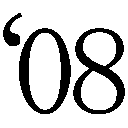

| 【合本版】NARUTO―ナルト― 真伝シリーズ 全3冊 | |
| 岸本斉史 & 矢野隆 & 十和田シン | |
ジャンプジェイブックスDIGITAL
【合本版】ＮＡＲＵＴＯ‐ナルト‐ 真伝シリーズ 全３冊

この本は縦書きでレイアウトされています。
また、ご覧になる機種により、表示の差が認められることがあります。


この作品はフィクションです。
実在の人物・団体・事件などにはいっさい関係ありません。

――愚かなる弟よ......。
このオレを殺したくば恨め！ 憎め！
そしてみにくく生きのびるがいい......。
逃げて......逃げて......
生にしがみつくがいい。

一
うちはイタチは、己が何者であるかを自覚した瞬間をはっきりと覚えている。
その日は雨が降っていた。
まともに目を開けられないほどの激しい雨が、四歳になったばかりのイタチの小さな身体を容赦なく打ちつづけている。
隣に立つ父は、労る言葉などかけようともしない。
イタチもそんなことを望んではいなかった。
「覚えておけ、これが戦場だ」
轟々と鳴る雨音を搔き分け、父の強い言葉がイタチの心を打った。
戦場......。
四歳の子が記憶に留めるような言葉ではない。
ましてや、いまイタチの目の前に広がっている光景は、およそ子供が正視してよいような類のものではなかった。
屍、屍、屍......。
見渡す限りの死体の山である。
穏やかな表情などひとつもない。すべての骸が、苦痛にゆがんだ表情のまま固まっていた。
「お前もあと数年で忍になる。戦争が終わっても、忍の現実が変わるわけではない。お前が足を踏み入れる世界はこういう世界だ」
非情な父の声を耳にしながら、イタチはじっと耐えていた。
気を抜いたら涙が溢れてしまう。
怖い訳ではない。
悲しい訳でもない。
ひと言では言い表せない感情が渦巻いて、なぜだか解らないが胸が締めつけられてたまらなかった。
雨でびしょ濡れ。
泣いても父には悟られないだろう。
それでも泣きたくなかった。ここで泣けば、忍として生きるうえでなにか大事なものを失ってしまうのではないかと思ったのである。
だから必死に堪えた。
なのに......。
自然と涙が溢れだす。
木ノ葉の額当てをしている者。
他国の忍らしき者。
地面を覆う夥しい死体には国境など関係なかった。誰もが苦しみ、悲しみ、もがきながらそれぞれの死にはあらがいきれなかった。苦悶に満ちた表情は、どの国の忍であろうと一緒だ。
死にたいと思って死んだ者など一人もいなかった。
それでもみんな死んだ。
なぜ？
戦争のせいだ。
「父さん」
イタチは自分の声を聞いた。そして初めて、己が震えていることに気づいた。
雨が冷たいからではない。
骸を恐れた訳でもない。
怒りがイタチを震わせる。
「どうしてこんなところに......」
幼い我が子の問いに父はしばらく黙った後、言葉を選ぶようにして答えはじめた。
「お前は聡い子だ」
骸に目をむけたまま、イタチは父の言葉を待つ。
頭の上に温もりが触れた。
父の掌。
「だから、この現実を見せておきたかった」
現実という言葉の意味をイタチは心のなかで必死に探す。まだ四歳。現実と虚構の違いなど判る訳もない。
それでも父が言わんとすることの意味は解った。
「これがオレの生きる世界......」
「そうだイタチ。忍とは戦う生き物だ。今日、見た光景を決して忘れるなよ」
父の声に誘われるようにして、イタチは目を凝らした。目の前に広がる地獄絵図を、決して忘れないように瞳の奥に焼きつける。
眼球の奥に鈍痛を感じた。
涙とは違う生温いものが目玉の奥で蠢いている。荒々しい力の波が、瞳にむかって流れこんでくるような感覚が、たまらなく恐ろしくて思わず瞼を閉じた。すると、力の波はゆっくりと静かに、頭の芯へと消えてゆく。
動悸が激しく、息が荒い。深呼吸をし、目を開く。目の前には依然として地獄のような世界が広がっていた。
胸に、そっと手を触れる。
あのまま力に身を任せていたら、自分が自分でなくなってしまうようだった。
「どうした？」
父の問いに答えずに、ただじっと眼前の光景を眺めている。
たとえこの地獄が自分の生きる世界だとしても、それをただ黙って受け入れるつもりはなかった。
オレが変える......。
どんな理由があろうとも、争いで物事を解決しようとするのは間違っている。そんな世のなかならば変えなければならない。
それが、うちはイタチという男の根幹となった。
イタチはこの日の光景を終生忘れることはなかった。
＊
大陸全土の忍を巻きこんだ大戦が終息したのは、イタチが自分という存在の意味を自覚した日から数週間後のことであった。のちに第三次忍界大戦と呼ばれることになるこの戦争は、主戦国であった木ノ葉隠れの里と岩隠れの里の停戦条約の締結によって終息したのである。
戦況を優勢に運んでいたのは木ノ葉のほうであったが、三代目火影であるヒルゼンによる融和政策によって、岩隠れには一切の賠償を請求しないという破格な条件によって終戦は果たされた。この弱腰に見えるヒルゼンの決断に、主戦派の者たちが反発。里の不満を抑えるため、ヒルゼンは三代目火影を退くことに決めた。その結果、新たな火影が選出されることになり、大戦の英雄と呼ばれた波風ミナトが四代目の地位についたのである。
ヒルゼンの火影退任によって、里は大戦の混乱から少しずつ立ち直ろうとしていた。
イタチには明確な目的があった。
〝誰よりも優秀な忍になって、この世から一切の争いをなくす〟
大人ならば一笑に付してしまいそうな大袈裟な夢である。が、四歳のイタチにとって、この夢はなににも代え難い大切なものだった。
忍者学校で基本的な忍術を勉強し、試験を受けて初めて正式な忍として認められる。
まだ四歳のイタチには、忍者学校に通う資格すら与えられていない。
一刻も早く忍になりたかった。
だから一人で修業をしている。
「ただいま」
玄関で静かに靴を脱ぎ、イタチはゆるやかに廊下を歩く。
「お帰りなさい」
台所の前を通り過ぎる時、母のミコトが声をかけてきた。いま母のお腹のなかには新たな命が宿っている。
弟になるか妹になるか......。
とにかくイタチの初めての兄弟だった。
「今日も一人で修業してたの？」
「あぁ」
四歳とは思えぬ大人びた息子の返事に、重いお腹を抱えるようにして振り返ったミコトが肩をすくめる。
「父さんは部屋にいる？」
「いるけど、いまはちょっと......」
母の言葉を聞きながら、イタチは父の居室に足をむける。今日の修業でクナイの握り方に疑問が生じたから、すぐにでも質問したかった。
「どうして四代目があのミナトなんですか！」
閉じた障子のむこうから聞こえた激しい声が、イタチの足を止めた。
「誰が聞いているか判らんのだぞ、もう少し声を潜めろヤシロ」
穏やかな声は、父のものだった。
「しかし納得がいきません。四代目選出にあたって、名前が挙がったのはミナトの他には大蛇丸様だけだったというではありませんか。どうしてフガク様の名を誰一人として挙げなかったのです？」
ヤシロと呼ばれた男の声が父に問うた。イタチは頭のなかで、ヤシロという男の顔を思い浮かべている。白髪を短く刈りこんだ細目の男。父より歳上でありながら部下として仕える男だ。
「ヤシロさんの言う通りです。私も納得がいきません」
「イナビ......」
父が新たな声の主の名を呼んだ。うちはイナビといえば木ノ葉警務部隊屈指の忍である。長い黒髪が特徴的な男だ。彼も父の部下である。
「大戦中〝兇眼フガク〟といえば、他国の忍は震えあがったものです」
「木ノ葉警務部隊の隊長。それが里におけるオレの名だ」
「それが首脳部の策謀だと言っているのです」
ヤシロがふたたび大声で叫び、一気にまくしたてる。
「うちは一族を表舞台に立たせたくない首脳部は、フガク様の大戦での活躍を里に公表しなかった。そのせいで、ミナトや三忍、果ては一族の人間でないくせに写輪眼を持つはたけカカシまでが目立つ結果となった。ミナトやカカシが騒がれるのなら、フガク様の名も同様に......」
「もうやめろ」
律するようなフガクの声に、ヤシロが口籠った。
「息子が聞いている」
イタチの身体がその場で小さく撥ねた。
「なんだイタチ？」
気取られていた......。
未熟。
イタチは歯嚙みする。
仕方なくゆるりと障子を開いた。
なかには四人。
父フガクと、ヤシロにイナビ。そしてもう一人、額に小さな点がある男がいた。この男も父の部下で、名前はうちはテッカといった。
「なんの用だ？」
「手裏剣術について聞きたいことがあるんだ」
「いまは忙しいから後にしろ」
「わかった」
言うと同時に、速やかに障子を閉じる。
閉じきる瞬間、四人の眼に紅の光が宿った。
写輪眼。
うちは一族に受け継がれる血継限界だ。
自室に戻りながら、イタチは父の部屋に充満していた空気を思いだす。するとなぜだか、脳裏に父とともに見た戦場が蘇ってきた。
悪意と邪気に満ち満ちた地獄絵図......。
父の部屋でみながまとっていた気配は、戦場で感じた禍々しい雰囲気と同様のものであった。
「父さんはなにを考えているんだ......」
呟いた声に答える者は誰もいなかった。
二
五歳。
自分の誕生日など、イタチにとってはどうでもよかった。一年ごとの節目は、あくまで節目でしかない。茫洋に過ごした一年も、濃密に生きた一年も、一年は一年だ。歳をひとつ取ったからといって、なにが変わる訳でもない。
重要なのは日々の鍛練。
一歩一歩着実に進歩してゆくことが重要なのだ。
そんなイタチであったが、この年自分の身に訪れた大きな変化には、さすがに心を動かした。
その原因が、いま目の前にいる。
「どう？」
床に寝たまま語るミコトの声に答えずに、正座した自分の膝の前に寝転がっている物体を眺めていた。
生まれたての小さな赤ん坊は、まだ見えない眼を虚空に彷徨わせながら、自分の置かれた状況を一生懸命、理解しようとしているようだった。
そっと頰に触れる。
いきなりの刺激に、赤ん坊がびくりと震えた。その反応に驚いて手を離すと、母がくすりと笑ってイタチを見つめる。
「サスケよ」
この子の名前。
自分の弟。
うちはサスケ......。
イタチはもう一度、赤らんだ頰にそっと触れた。
「サスケ......」
初めて弟の名を呼んだ瞬間、心の奥に温かいものがぽっと灯った。父や母に感じる愛情とはまた違う、なんとも言いようのない特別な想いである。五歳のイタチには果たしてそれがどういう感情なのか、うまく言い表すことができない。が、触れれば壊れそうなほどに儚い存在を前にして、自分が守ってやらなければという男としての責任感のようなものが芽生えたのは確かだった。
「弟のこと、よろしくね」
そう言った母に、イタチはサスケの頰に触れたまま力強くうなずいた。
＊
父に戦場へ連れていかれてから、一日たりとも休まずに修練を続けている。
待望の忍者学校入学まであと一年。少しでも技術を磨き、優秀な忍になることだけがイタチの目標であった。
なぜ、優秀な忍になるのか？
もちろん、争いをこの世からなくすためだ。
殺し合いのなかで生きるのが忍だという父の言葉が、イタチにはどうしても納得できない。
忍術やチャクラは、本当に争いのためだけにあるのか。
違うとイタチは断言できる。
秀でた力があれば、争いを続ける者の間に入って止めることができるはず。争っている者たちよりも優秀な忍なら、どんな忍であろうと太刀打ちできない相手であるならば、誰もが素直に耳を貸し、従うはずだ。
イタチはそんな忍になりたかった。
誰よりも力を持ち、誰よりも有能であれば、先の大戦のような巨大な争いだろうと止められると信じている。
目標がある。だから精進することは、苦痛ではなかった。
家のすぐそばにある小さな森が、イタチの修練の場所だ。
林立する杉のいたるところに木製の的が掲げられている。人の頭ほどの大きさで、黒い丸がふたつ描かれている。
閑散とした森に、イタチは一人たたずむ。その指の股にクナイが一本ずつ挟まれている。左右合わせて八本のクナイが、イタチの武器だ。
「ふぅ......」
目を瞑り、腹の底からゆっくりと息を吐きだす。
しゃがむと同時に、思いっきり地面を蹴った。
宙に舞った身体が上下逆さまになる。
胸に抱くような形に留めていた両腕を、素早く左右に伸ばす。
八つの閃光が八方に散る。
カツカツカツと軽妙な音が、着地したイタチの周囲で鳴った。
杉の木に掲げられたすべての的の真ん中を、鋭い刃が貫いていた。
「見事だな」
とつぜん背後から聞こえてきた声に、イタチは息を吞んで振り返った。
黒髪の少年が立っている。
明らかにイタチよりも歳上だ。その証拠に、少年の額で木ノ葉の額当てが銀色に輝いている。
「お前、歳はいくつだ？」
少年が問うてくる。
名前は知らないが、イタチはこの少年のことを見知っていた。
同じ、うちは一族の忍だ。
「五歳」
「その歳で、これだけのクナイさばきを見せるなんて、大したヤツだな」
言いながら少年が手を差しだした。
「うちはシスイだ」
「オレは......」
「知ってるよ。警務部隊隊長のフガクさんとこのイタチだろ」
気さくな態度で語りかけてくるシスイに、イタチは戸惑う。恐らくそんな気持ちが顔に出ていたのだろう、シスイは肩をすくめて目を大きく見開いた。
「あまり人と喋りたがらない不思議な子だということは聞いていたが、本当に頑ななようだな」
「用がないのなら......」
「まぁ、そう言うなよ」
笑ったシスイの姿が消えた。
イタチの眼は気配を追っている。
空だ。
さっきのイタチと同じように宙を舞ったシスイの両腕が、左右に大きく伸びた。
八つの閃光が駆ける。
「っ！」
イタチは目を見張った。
「どうだ？」
着地したシスイがにっこりと笑った。
「オレのクナイさばきもなかなかのものだろ？」
先に刺さっていたイタチのクナイのすぐ横に、新たなクナイが刺さっている。当然、シスイが投げたものだ。
「ここで毎日修業してるのを、かなり前から見てたんだ」
ゆっくりと近づいてくるシスイが、ふたたび手を差しだした。
「オレと友達になってくれよ」
自然に引きこまれてしまうなんとも心地のよい口調であった。誘われるようにイタチは右手を掲げた。
掌を温もりが包む。
「よろしくなイタチ」
満面の笑みを浮かべるシスイを見ながら、この妙に馴れ馴れしい忍を受け入れている自分に戸惑っていた。
＊
月を見ていた。
サスケと二人......。
父と母は外出している。
障子を開け放ち、サスケを抱いて縁側に座っていた。
眩しいほどの月明かり。
周囲の星々の光を搔き消すように燦然と輝く満月は、いまにも空から零れて落ちそうだった。
そよ風がイタチの頰を優しく撫でてゆく。
「ん？」
風のなかに混じる微かな臭気に眉をしかめる。そんな兄の変化を察したのか、それとも赤子の鋭敏な感性が変異を捉えたのか、腕のなかでサスケがむずかりはじめた。
空の月を見つめる。
「なんだ？ この感じ......」
サスケが声をあげて泣きはじめる。
「よしよし」
弟を揺すってあやしながらも、目は月へと注がれている。
獣臭い風が、ふたたび吹いた。
「嫌な感じだ。こんな時に限って父さんと母さんが出かけてるなんて......」
サスケがいっそう激しく泣いた。さすがに月を見ている場合ではなく、イタチは微笑みを浮かべながら可愛い弟に視線を落とす。
「泣くなサスケ、なにがあってもお兄ちゃんが絶対守ってあげるからな」
イタチの言葉を聞いたサスケの泣き声が、怖くて泣いているようなそれまでの泣き声から、甘えるようなものに変わった。勢いにはそれほど変化のない微妙な差異である。兄弟であるからこそ解る、サスケの心境の変化であった。
なにかが迫っている......。
サスケを抱く腕に力が籠るのを、イタチはどうしようもなかった。
＊
突然の事態に里は混乱するばかりだった。
遥かむこうであがった土煙を、うちはフガクは厳しい表情で眺めている。
木ノ葉警務部隊の屋上。周囲にはうちは一族の精鋭で構成された側近たちが控えていた。
「あ、あれは......」
左に控える白髪のヤシロが呟いた。その原因を、すでにフガクも視界に収めている。
「きゅ、九尾......」
呟いたのは右隣に立つイナビだ。長く伸ばした黒髪を搔きあげながら、イナビは恐怖に震える身体を静めようと必死だった。恐れを露わにする部下たちを尻目に、フガクは毅然とした態度で目の前の現実を見極めている。
「間違いない、九尾だ」
里の中心部にあがった土煙のなかから大蛇のようにのたうつ尻尾が九つ這いだしている。尻尾が集うその先には、橙色をした獣の姿があった。天空に浮かぶ満月を喰らわんと咆哮するのは、禍々しい狐である。
この世に災厄を齎すという伝説の獣だ。
「すぐに部隊を現地に派遣する。オレも行くぞ」
「フガク様みずから赴かれるのですか？」
恐れを露わにしたヤシロが問うてくる。
「当たり前だ！」
怒鳴りつけながらも、視線は九尾にむけたままだ。
怒号と悲鳴がいたるところから聞こえてくる。里のどこにいようと、あの姿は見えているだろう。いま現在被害を受けていない場所でも、九尾の姿を目の当たりにすれば混乱はまぬがれない。
「これは里創設以来最大の災厄となるかもしれん。そんな時に警務部隊隊長のオレが指をくわえて見ていられるか」
「しかし......」
九尾に近づくということは、命が危険に晒されるということだ。いち早く現場に赴いた忍たちには、すでに犠牲が出ていることだろう。ヤシロが恐れるのも無理はない。
「オレはこれまで一度として命を惜しむような仕事はしていない」
「隊長......」
細いヤシロの眼に涙がにじむ。
「九尾を操ることができるのは、うちは一族の持つ写輪眼のみだ。我らが駆けつけなければ止めることは不可能だ」
「隊長！」
階段を駆け昇るようにして側近のテッカが現れた。
有能な部下の鬼気迫る様子に、フガクはただならぬ事態を予測した。
「どうした」
「いま上層部からの指示がありまして、我ら警務部隊は里の警護を固めるようにとのことです」
「なんだと？」
我が耳を疑うというようにフガクがテッカを睨む。上司の怒りを機敏に悟った部下は、みずからの推測を口に乗せる。
「九尾を操ることができるのは写輪眼のみ。上層部は恐らくそれを危惧しているのかと......」
「この騒ぎが我らのせいだと言うのか！」
ヤシロが叫んだ。
気持ちは痛いほど解る。
うちは一族は木ノ葉隠れの里の一員だ。九尾のような獣を解き放って騒ぎを起こす訳がない。もし九尾を操る者が自分の暮らす場所だけは避けさせたとすれば、すぐに疑われてしまうではないか。そんな愚かな真似をするような者は、一族には絶対にいない。
実際に、いま目の前で暴れまわっている獣は、見境なく里を荒らしまくっている。それは我が身に災厄を呼びこむのも同然の行いである。
少なくとも、現在木ノ葉隠れの里に暮らすうちは一族の仕業ではない......。
「了解したと伝えろ」
苦いものを吐きだすようにしてテッカに言った。
「隊長！」
詰め寄るヤシロに無言のままうなずくと、フガクは階下に続く階段へと足をむける。
家に残してきたイタチやサスケのことが気になったが、いまは与えられた任務を全うすることが先だった。
＊
「イタチ！」
「母さん」
サスケを抱いて家の前の路地に立つイタチを、ミコトが力強く抱きしめた。
「無事でよかった......」
「二人で逃げた後に母さんが家に戻ってきて心配するといけないと思ったから、待っていたんだ」
「うん、うん......」
涙をボロボロと流しながら母がうなずく。
弟を守らなければと緊張で引き締まっていた目つきが、いくぶん緩んだ。が、それも束の間、母の背後に迫るものを認めると、すぐに元の険しさを取り戻した。
「母さんっ」
投げだすようにサスケを母に渡す。
飛んだ。
遥かむこうに見える九尾が放った岩石が家の近くで砕け、一部が宙を舞っている。そのひとつが、母の背にむかって落ちてきていた。
サスケを抱く母を眼下に見た。いきなり飛翔したイタチを、なにが起こったのかという驚きの目で追っている。
母子三人など軽く押し潰せるほどの巨岩。
「オレが守る......」
呟いていた。
拳を硬く握る。
忍の体術は筋力ではない。身体ができていない五歳の幼子であろうと、チャクラの操作さえ確実にできれば、巨岩だって砕くことができる。
拳を高々と突きあげた。
チャクラが腕に漲り、淡い蒼色の焰をまとわせる。
イタチの拳に激突した岩が、甲高い音を立てて砕けた。
幼子でも忍の修練さえ続けていれば、岩を砕くことなど造作もない。
小石の雨を浴びながら、音も立てずに着地した。
「大丈夫？」
振り返って二人に声をかける。驚きを隠せないといったように、母が瞼を目一杯に開いてイタチを見ていた。母は上忍である。だからこそ余計にイタチの瞬時の身のこなしに驚嘆していた。
「ここは危ない。さぁ皆が集まっている場所に行こう」
「えぇ......」
声に背を押されるようにして立ちあがる母に駆け寄り、イタチは手を取った。
「まだ忍者学校に入ってもいないのに、もうあんなことができるなんて......。やっぱりアナタはお父さんの子ね」
褒められているのだろうが、いまはそれどころではない。とにかく母と弟を安全な場所へと届けなければならないという使命感で頭は一杯だった。
周囲から聞こえてくるのは女子供の悲鳴と男たちの怒号。そこに瓦礫が立てる轟音が混じって、凄まじい有様だった。
血を流しながら逃げまどう人々。
腕をなくしながらも同僚の忍を怒鳴っている男。
崩れた瓦礫の山を呆然と見つめる、糸の切れた人形のようになった若い女。
冷たくなった母親を揺り起こそうとしながら大声で泣きつづける子供。
頭の芯のあたりで、キンキンと耳障りな音が鳴っているのをイタチは聞いた。
疲れるほどの距離を走った訳でもないのに、息苦しくなってくる。
目の前の光景が四歳の時に見た戦場と重なってゆく。
争い......。
目の奥に鈍痛が走る。あの時と同じように、力の波が眼球の後ろのほうで脈打っていた。
視界が一瞬、紅に染まったような気がしたが、すぐに治まる。
「イタチ？」
息子の変異に気づいた母が、後ろから声をかけた。
「大丈夫だよ、母さん」
必死に走る。
九尾という強大な暴力から逃げるようにして走る。
争いを止めるための強さが欲しいと、心の底から思った。
強い忍になりたかった。
＊
火影屋敷内にある会議室に四人の影が並んでいる。
三代目火影、猿飛ヒルゼン。
暗部の志村ダンゾウ。
そして御意見番のホムラとコハルだ。
突然の変事が終息し、疲れで顔の皺がいくぶん深くなったヒルゼンが、三人の同志を眺めながら口を開いた。
「四代目とその妻クシナが命をかけて九尾を封印してくれた。その結果、なんとか里は守られた」
仏頂面で聞いていたダンゾウが、言葉を継ぐ。
「しかし里は大戦中でも経験したことのないほどの壊滅的な打撃を受けた」
「早急に復旧作業を行わねば、この機に他里が攻めてくるかもしれん」
言ったのは御意見番のホムラである。
小さくうなずいたヒルゼンは、重々しい口調で会話を繫ぐ。
「その件はすぐに手配しようと思っている」
「ついてはどうしても叶えてもらいたい案件がある」
包帯で顔の右半分を覆っているダンゾウの露わになった左目が、冷酷な輝きを放つ。ヒルゼンは無言のまま、その氷のような視線を受け止め、催促の意をみずからの瞳に籠めた。察したダンゾウが続ける。
「うちは一族の居住地を里の外縁部に集めてもらいたい」
「なんじゃと？」
眉間に皺を寄せてヒルゼンが睨んだ。
しかしダンゾウは動じることなく淡々と続ける。
「九尾を操ることができるのは、うちは一族の持つ写輪眼のみだということは、知っているはずだ」
「九尾を呼び寄せたのは、うちはの者だというのか？」
「そうだ」
断言するダンゾウに、ヒルゼンが息を吞む。激しい問答を、御意見番の二人は口をつぐんだまま見守っている。
「大戦中のうちはに対する処遇、そして四代目決定に際してのフガクの黙殺。近年、うちは一族の里への不満は高まっている」
「ワシはそうは思わん」
「うちはの動静は根の者が丹念に調べている。うちはが不満を持っているのは事実だ」
「それは積年の因縁が......」
「それだけではない」
強気のダンゾウに、ヒルゼンが押されている。
「兇眼フガクという稀代の天才でさえも警務部隊の隊長に甘んじなければならぬという絶望が、大戦を経験した者たちに芽生えている。里への失望は、いつか大きな不満となって木ノ葉を襲うぞ」
「だからといって九尾の一件がうちはのせいだと断ずるのは、すこし性急すぎるのではないか」
「確証がないからといって野放しでよいという類の話ではないのだぞヒルゼン。よいか？ 九尾を操ることができるのは、うちはの写輪眼のみ。それが事実だ」
ヒルゼンが口籠る。
「とにかく、うちは一族は一か所に集めて里の端に追いやるのだ。九尾襲来による区画整理という大義名分があるいまのうちにやっておくべきだ」
暗部の闇を体現する男の鬼気迫る態度に、三人は黙るしかなかった。
＊
イタチは新たな住まいに満足していた。
里の中心部からはかなり遠ざかったが、一族由来の南賀ノ神社は集落のなかにあるし、なにより里の端のほうにあるから自然が多い。修業をする場にも困らないし、少し足を伸ばせば里の境を越えることができて、そのむこうには険しい山野が広がっている。
幼い弟を育てるには静かでよいところだとも思った。
しかし......。
大人たちは違うようだった。
一族が里の方々より集められて新たな集落が築かれると決まってから、父のところに若い忍たちがずいぶん通ってきた。
差別。
迫害。
濡れ衣。
後ろむきな言葉ばかりが父の部屋から聞こえた。
大人たちがこの移住を快く思っていない理由も、イタチはちゃんと解っている。
九尾襲来の犯人が一族の者ではないかという疑いをかけられ、その結果、里の端に集められたのだ。
ひと言の釈明も許されずに......。
父たちが憤るのも無理はないとイタチも思う。だが一度決まったことは、仕方がないではないか。せっかく一族が集まったのだから、この集落の環境をよりよいものにしていこうと考えたほうが健全であろう。
九尾によって破壊された里はボロボロだった。
なにも、うちは一族だけが苦しい思いをしているのではない。
大切な人に先立たれた者も大勢いる。住処を失って途方に暮れている人もいるのだ。災害によって家を失った人々よりも早く集落をあてがわれたうちは一族は、運がよいとは思えないのだろうか。
不満ばかりの大人たちに、イタチは失望を禁じ得なかった。
「では行ってくる」
椅子に座るイタチの背後で父の声がした。
母とサスケと三人で夕飯を食べている。とうぜん弟はまだしっかりと物を食べることができない。すわったばかりの首をゆらゆらさせながら、乳幼児用の椅子に座らされていた。くりくりとした大きな瞳を兄のほうにむけ、イタチが茶碗からご飯を口に運ぶのを不思議そうに眺めている。
この人はあの長い棒で白いものを口に入れているが、いったいなにをしているんだろうか？
そんな一人前のことを考えているのではないかと疑いたくなるほどに、弟の眼には力がある。まだ一歳にも満たないというのに、思考と意志をはっきりと感じさせる強い瞳だった。
「ご飯はどうします？」
イタチの背後を見ながら母が聞く。誘われるようにして振りむくと、わずかに開いた障子の間から父の険しい顔が覗いていた。
「外で済ませてくる。帰りは遅くなるから、先に寝ていていい」
「わかりました。行ってらっしゃい」
「行ってらっしゃい」
母に続けて言うと、弟と違い一向に意志の読み取れない冷淡な父の眼差しが、イタチを射た。
「来年は忍者学校だ。しっかりと修練を積んでおくんだぞ」
「解った」
「あうぁぁあぁ......」
イタチの真似をするようにして、サスケが言葉にならない声をあげた。父は一度、弟のほうを見て小さくうなずくと、障子のむこうに消えた。
三人の食事が再開された。
＊
「いったい大人たちは夜遅くまで、なにをやっているんだ......」
イタチは素朴な疑問を友に投げた。
唯一の友達であるシスイは、口の端に緩やかな笑みを湛えながら、遥か彼方にある火影岩を眺めている。
里の外れの崖に二人して座っていた。
この場所は二人しか知らない。
切り立った崖の下には川がある。蛇行するようにして火影岩の背後から里の外へと流れる川だ。イタチとシスイが座る崖のあたりまで来ると、水流も深さもかなりのものとなる。
「オレは下忍だ」
シスイが遠い目をしたまま語る。
黙ったまま聞いているイタチに顔をむけると、シスイは穏やかな口調で続けた。
「だから大人たちの会合に出ている」
「え？」
「南賀ノ神社で定期的に開かれている」
いったいなんの話をしているのかと問いたかったが、恐ろしい気がして言葉にならなかった。
イタチの沈黙に、シスイが目を伏せる。
「お前はまだ知らなくていいことだ」
言ったシスイが目を逸らすのを、イタチは不安な気持ちのまま眺めていた。
一族に重たい空気が流れている......。
ただの憶測であってくれとイタチは心のなかで何度も呟いた。
三
六歳。
ついにイタチは忍者学校に入学を果たす。
別に学校に入学できたことが嬉しい訳ではない。自分が忍に近づいているという具体的な実感が、学校という場所にはあったのだ。それまで一人、もしくはシスイとともに密かに修練を積んできたのとは訳が違う。
学校での日々は、忍への道。
それがイタチにはたまらなく嬉しかった。
「では自己紹介をかねて、みなさんの夢を聞かせてください」
年老いた男の先生は、そう言って生徒たちを見渡した。
初めての授業。
ほのかに緊張している生徒たちは、たがいの顔を見遣りながら戸惑っている。
ねぇねぇどうする、などとまだ相手のことをよく知らない同士で語らい合っているのを、イタチは一人眺めていた。そして戸惑うのも無理はないなどと、他人事のように思っている。
見ず知らずの人の前で、夢を語れと言われてすんなりと語れる訳がない。
「じゃあ、出席番号の順にお願いしよう」
生徒の気持ちを知ってか知らずか、先生は方々で聞こえる囁き声を打ち消すような大声で言った。
うちはイタチ......。
頭文字は〝う〟だ。
出席番号ははじめのほうである。
なにを話そうかなどと迷うことはなかった。
物心ついた頃から、夢は変わっていない。
それを素直に語ればいい。
「はいよくできました」
何人目かの同級生が拍手を受けている。夢は、お父さんのような立派な忍になりたい、であった。
父のような立派な忍になる......。
イタチはフガクを頭に描く。
父は立派だ。
が......。
警務部隊の隊長では、イタチの夢にはまだ足りない気がした。父を否定する訳ではない。父のように優秀になれたらと思う。でも、イタチが辿り着きたいと思っている場所は遠く、現在の父は決してその場所に立てているとは言えない。
「じゃあ次は、うちはイタチ君」
先生がイタチの顔を見て笑った。
さっきから先生は、自己紹介をさせる者の名前を呼んでいる。先生が先に言ってしまっては意味がないではないかなどと考えながら、イタチは席を立って教壇の前に出た。
同じ歳の生徒たちが、イタチを見ている。興味の視線が集中し、額のあたりが少しむず痒かった。
眉間の少し上のあたりを一度指で撫でてから胸を張る。
「うちはイタチです。夢は......」
口籠ってしまった。
先生や生徒たちが、どうしたとばかりに首を傾げる。
夢がない訳ではなかった。もちろん語る夢を選んでいる訳でもない。緊張で口が利けなくなったなどという理由でも当然なかった。
自分の夢が果たしてこの場で語るべきものなのかと思ったのだ。
これまで皆が語って聞かせた夢は、どれも慎ましやかなものばかり。父のようになりたい。立派な忍になって沢山の任務をこなす。可愛い忍になりたい......。
先生や仲間が求めているのは、こういう夢なのだ。
イタチの夢は違う。
「オレの夢は......」
「大丈夫だ、言ってごらん」
先生が背中を押す。
誰にどう思われてもいい。
「この世のすべての争いを消しさってしまえるほど、誰よりも優秀な忍になりたい」
教室の隅で誰かの笑い声が聞こえた。そしてその後すぐに、予定調和の拍手が起こる。
「よくできました」
そう言って先生はイタチの頭を撫でた。
あまりにも荒唐無稽すぎて、誰も信じてくれなかったようだ。叶うはずのない夢だと誰もが思っている。幼い子供が世間を知らぬが故に吐いた妄想めいた夢。誰もがそう思ったからこそ笑われもしたし、無機質な拍手も起こった。
唯一人、イタチだけが真剣だった。
そしてその真剣さを、先生や仲間たちはこの後すぐに知ることになる。
＊
「おぉ......」
居並ぶ同級生たちが声を失っていた。少し離れたところでメモを取りながら見ていた先生も、あまりのことに次の生徒を促すことすら忘れている。
校庭の各所に据えられた二十個の人型すべてに、どれだけ短い時間でクナイを当てることができるかという授業だった。
計測は一人ずつ行われる。
同級生たちは全力で校庭中を走りまわり、息を切らしながら五分あまりかかって済ませていた。
人型の場所は知らされているが、学校で一番高い木の上だとか、校舎の三階の半開きの窓のむこうだとか、面倒臭い場所にあった。だからみんな必死になって駆けまわっていた。
平均五分。
それをイタチは三十秒で済ませた。
しかも命中したクナイはすべて人型の頭部か胸に命中している。部位の差は露出している場所がいずれであったかの違いだけで、どちらも寸分たがわぬ精度で命中していた。
人型の場所も判っていて、範囲も校庭から届く場所......。
ここまで限定されているうえに、イタチの前に数名計測を終わらせている。
傾向と対策は完璧だった。
イタチは開始場所の校庭中央から、自分を起点にして脳内に縦横の線を引いて範囲を四等分し、さらに人型が密集している場所を大まかに区別して、開始場所からの投擲で済ませることができるものと、移動が必要なものに振り分けた。
開始場所から投擲可能な人型が八。
移動が必要な人型が十二。
そこで今度は移動が必要な人型を分類し、効率的に回れる軌道を計算した。
先生の開始の合図と同時に、両手につかんだクナイを八個の人型に同時に放つ。
まだ二秒もかかっていない。
それから走りだして、脳内に描いたルートをトレースするようにして、校庭を速やかに回った。
三十秒。
遅いくらいだとイタチは思った。
シスイならばもっと速い。
「よ、よくできました。さぁ、次の人」
額から汗を垂らして先生が言う。
答えることなくイタチはざわめく生徒たちのほうへと戻った。
あまりにも凄まじい動きだったため、誰も声をかけてこない。イタチを遠くから囲むようにして、ひそひそと囁き合っている。
そんな周囲の反応など気にもせず、イタチはさっき終わったばかりの計測結果を反芻した。視線の先では次の生徒が必死になって校庭を駆けずりまわっている。
あと五秒は削れた......。
走る軌道の修正箇所を見つけ、イタチは己の未熟を恥じた。
「うちはイタチ君」
先生が呼ぶのと同時にイタチは立ちあがって教壇のほうへと進んだ。
「はい、今回もよくできました」
手渡された紙の一番上に、百点という文字と大きな花丸が書いてある。
「今回のテスト、満点は君だけだ」
先生の言葉を聞いた仲間たちが、驚きの声をあげる。イタチは先生に小さく辞儀をすると、そのまま真っ直ぐ自分の机に帰った。
入学から三か月。相変わらず同級生たちとはこれといった会話がない。授業のことごとくでイタチがあまりにも図抜けた成績を残すため、仲間は自然と遠慮がちになっていた。誰もが恐る恐るという感じで一度は声をかけてくるが、イタチの簡潔で明解な返答を聞くと、それ以降話をしようとは思わないようである。
友達と馴れ合うために学校に来ている訳ではないから、そんなことはどうでもよかった。
どんなに優秀な成績を残しても、満たされない気持ちであることのほうがイタチにとっては大きな不満であった。
学校の成績には百点という限界がある。それ以上の評価は有り得ない。それが不毛に思えた。
こんな場所で果たして忍の資質など判るのだろうか？
学校の成績と忍としての実力はイコールで結べない。そんな気がしていた。だからつねに満たされない。この学校で一番になることと、自分の夢が直結していないという事実が、イタチを迷わせる。
「このテストは必ず親御さんに見せるように」
先生の言葉を聞きながら、イタチは百点と書かれた紙を丁寧にふたつに折った。
＊
「あの......」
突然かけられた声に、ゆっくりと振り返った。
放課後の廊下である。
まわりには、これからの遊びのため待ち合わせしている男子や、きゃっきゃと甲高い笑い声をあげながら話している女子の姿がある。誰もが窮屈な学校から解き放たれた解放感で、やけに元気がよい。
「うちはイタチ君だよね？」
そう言って女の子は上目がちにイタチを見た。
黒い髪を肩のあたりまで伸ばし、両手を胸の前あたりで組んでいる。細い眉の下の眼は切れ長で冴え冴えとしていながらも、どこか優しさを感じさせる不思議な魅力を持っていた。
「そうだ」
「わ、私もうちは一族なんだ」
「そうか」
ぶっきらぼうな口調で返す。この女子に対してだけではない。学校でのイタチはつねにこんな態度なのだ。大抵の者は、このあたりの会話で心が折れる。そして二度と踏みこんでこようとはしない。
「私の名前はうちはイズミ。隣のクラスなんだ」
「それで？」
今日は久しぶりにシスイが休みで、学校が終わったら一緒に修業をすることになっている。こんなところでもたもたしている時間はなかった。
「帰り道同じだね」
「うちはの集落はひとつだ。当然そうなる」
「あ、あの......」
イズミと名乗った少女がそう言ってうつむいた。
「い、一緒にっ......」
「悪いが急ぐんだ」
イズミが言ったのとイタチが背をむけて廊下を駆けだしたのは同時だった。
＊
「どうだ学校は？」
額の汗をタオルで拭いながらシスイが言った。イタチは肩を激しく上下させ、熱い息を吐いている。
集落の中心地にある公園。
二人で四時間ほど走った後だ。ただの走りではない。全速力である。限界の速度を維持したまま四時間走るのだ。忍の修練をしていない者ならば、五分も保たない。
自分よりも涼しい顔をしたシスイを少し睨むような眼で見ながら、イタチは口を開いた。
「シスイと修業をしているほうが、よっぽど有益だ」
「忍者学校に入ると、いっぱしの口を利くようになるんだな」
「オレは変わっていない」
「たしかにお前は、昔からガキのくせに生意気だ」
そう言って笑うシスイの手がイタチの頭に置かれる。
「お前にかなう同級生なんかいないだろ？」
「............」
イタチは答えない。
「いるのか？」
驚いたようにシスイが問う。
頭を押さえつけられたままイタチは首を左右に振った。
「同級生がどんな成績か知らない。校庭で動きを見る限り、凄いと思うヤツは一人もいない......」
「自分しか見えていないというわけか」
シスイの言う通りかもしれないと思った。
イタチには同級生の姿など見えていない。
自分がどうあるべきか？
どうすれば誰よりも優れた忍になれるのか？
幼い頃よりそればかりを考えている。
他人のことを思うような余裕はなかった。
「お前より凄いヤツなんか学校にはいないさ。オレが断言してやる」
シスイの手がぐりぐりとイタチの頭を揺さぶった。
「やめてくれ」
手を払い除ける。
「お前がいれば、うちはの未来は安泰だ......」
そう言って笑ったシスイの笑顔は、どこか寂しげだった。
＊
サスケが隣で健やかな寝息を立てているのを聞きながら、イタチは布団に寝転がっている。新たな集落に引っ越してきて一年余りが過ぎ、寝床の天井もずいぶん見慣れてきた。
子供二人が眠る寝室のむこうには、家族の食卓がある。いまそこにはフガクとミコトの二人がいるはずだ。
「凄いでしょ、イタチの成績」
閉じた襖のむこうから母の声が聞こえてきた。
すでに子供たちは寝ていると思っているようだ。聞くでもなくイタチは、天井をぼんやりと眺めている。
「さすがオレの子だ」
「えぇ、そうね」
父に褒められている。そしてそれを母が喜んでいる。
悪い気持ちはしなかった。
「アイツは学校ではどうなんだ？」
「どうって、こんなに優秀な成績なんだから......」
「そういうことじゃない」
父が母の言葉を切った。
「友達はいるのか？」
「あまり友達のことは話さないわね、あの子」
「アイツは楽をするということを知らない」
「それは悪いことではないわ」
「しかしアイツのは度が過ぎている。忍として早く一人前になりたいと焦っているようだ」
見透かされている......。
顔が少しだけ熱を帯びた。
「アイツの忍に対する真摯な姿勢は、時に親であるオレでさえ見習わなければと思う。が、張り詰めすぎた糸は脆いものだ。なにかの弾みで切れてしまわないかと、オレは心配なんだ」
「あの子は優しい子よ。サスケをあやしている時のイタチを見ていればわかるわ。あの子は大丈夫。それに最近ではシスイをお兄さんのように慕って、一緒に修業したりしてるみたいだし、仲間はいるわ」
「瞬身のシスイか......」
最近、忍として名をあげてきたシスイが〝瞬身〟と呼ばれているのは、イタチも知っていた。
「年長の友もいいが、同級の友達と語らい、楽という感情を少しでも覚えてくれればいいのだが」
「あの子ならできるわ」
同級の友......。
イタチの脳裏に浮かんだのは放課後、唐突に声をかけてきた少女の顔だった。
「うちはイズミ......」
少女の名前を呟くと、イタチは静かに瞳を閉じた。
＊
忍者学校入学から半年。
イタチの名前は全校に鳴り響いていた。
学校創設以来の天才。そう口にする先生や生徒がいるほど、イタチの優秀さは群を抜いていた。
一年目の生徒たちが受ける授業から習うことなどなにひとつなく、先生がイタチだけに特別に課題やテストを与える。それでも平然とこなすイタチを前に、先生たちもお手上げの状態だった。
下忍のレベルに十分に達している。
先生たちの満場一致の判断で、一年での卒業が決まったのは入学してまだ四か月あまりのことだった。
先の大戦と九尾の襲来によって疲弊した木ノ葉隠れの里は、早急な人材確保を求められている。そのため忍者学校でも、先生たちが特に優秀だと判断した一部の生徒に限り、特例として期間満了を待たずに卒業試験を受けることができた。試験をパスすれば、先輩の卒業式に同席してそのまま下忍として任務につくことになる。
当然のようにイタチは卒業試験をパスした。
試験は分身の術。
忍者学校に入学する前にはシスイの指導の元、完璧にマスターしていた。
〝お前ならすぐに忍としてやっていけるさ〟
早く忍になりたいというイタチの願いを知るシスイは、こう言って分身の修業に付き合ってくれた。
残りの学校生活は半年......。
すでにイタチの卒業は決まっていた。
「おい、お前！」
自分を呼び止める声を背後に聞き、イタチは廊下を歩く足を止めた。
「お前か？ うちはイタチってのは」
上級生が三人立っている。
恐らく最上級生。
イタチは忍として生きるための修練に人生をすべて費やしている。余計なことに注ぎこむ力は一切残っていない。自分のクラスの生徒たちですらせいぜい名前と顔を覚えている程度である。他のクラスの生徒や上級生のことなどなにも覚えていない。だから目の前の先輩たちが最上級生だということは、背格好で判断した。
忍者学校を卒業する平均的な年齢は、十二歳。
七歳のイタチとは体格がまったく違う。目の前に立つと見上げるような格好になる。
「お前、俺らのこと知ってるか？」
「いや」
端然と答えたイタチに、中央に立ってさっきからずっと話している先輩が眉間に皺を寄せた。
「噂通り生意気な野郎だな」
恐ろしく鼻が低く目が細い先輩だった。
「オレは出雲テンマ。早駆けのテンマって言や、学校で知らないヤツはいねぇ」
自分は知らなかった、と喉まで出てきたがイタチはそれをグッと吞みこんで、テンマと名乗った上級生を見つめている。
「やっちまおうか？」
テンマの右隣に立つ垂れ目の先輩が言った。テンマに気を使っているのかオドオドしている。
「そう焦んなカツラ」
カツラと呼ばれた先輩が、媚びるような笑みをテンマに投げた。
「お前、なんで俺たちに呼び止められたのか解ってんだろうな？」
テンマの左隣の男が右の眉毛を思いっきり吊りあげながら、イタチに問うた。三人のなかでは一番背が高い。
「さぁ......」
「んだと、この野郎」
「待てハギリ」
身を乗り出すハギリをテンマが制する。
「こいつには、この学校の礼儀ってやつをじっくりと教えてやるんだから、焦るんじゃねぇよ」
そう言いながら、テンマがゆっくりと歩を進めてイタチの前に立った。
「忍の世界ってのは上下関係が大事だってのは、知ってんだろうな？」
「フォーマンセルが基本の忍の任務では、上官にあたる上忍中忍の命令が絶対。故に礼節と長幼の序こそ忍の根幹」
「優等生らしい、スッキリとした答えだ。が......」
テンマの顔に邪気が宿る。
「そういう態度が気に喰わねぇんだよ」
たがいの息がかかるほどの距離に近づいて、テンマが睨みつける。
「うちはのくせに、ホントに目障りなんだよ」
「そこまで言うかよ......」
テンマの言葉に呆れるようにハギリが呟いた。しかしその声にも、明らかな嘲笑が含まれている。
粗暴な三人を恐れ、他の生徒は誰も近寄らない。
昼休み。
先生たちはみな職員室に戻っている。
この場を自分が支配しているという優越感で、テンマの口許に邪悪な笑みが張りついていた。
目の前の生意気なヤツも所詮は下級生。自分たちが少し脅してやれば、泣いて謝ると頭から決めつけている。
これまでそうやって何人もの同級生や下級生を従わせてきたのだろう。
五つも年下の下級生を脅しているという、恥ずかしさは一切ない。
心根の薄暗い高慢さが、三人の顔ににじみでていた。
こんな愚か者たちを打ちのめすなど、三分とかからない。
生意気だなんだと言っているが、要はイタチを屈服させたいのだ。優秀だと言われている下級生に泣きを入れさせて、自分たちの虚栄心を満足させたいのだろう。
だったらなぜ、背後から呼び止めたあの瞬間に、襲ってこなかったのか？
ここはただの学校ではない。
忍になるための修業の場だ。
殺ると思った時にはすでに行動を起こしている。
それが忍ではないか。
この上級生たちは学校という仕組みに守られているということが解っていない。
まるで隙だらけだ。
イタチは背にクナイを忍ばせている。
それも都合よく三本。
この場を動く必要すらない。腰の後ろに手を回し、クナイをつかんで前方に放つだけで、テンマたちは額に風穴を開けて倒れる。
でも殺らない。
殺ると決めた時には動いているのが忍だと考えるイタチが、動かないということは殺らないということだ。
理由は簡潔。
イタチは争いを好まない。だからこれまで一度も喧嘩をしたことがなかった。喧嘩だから本当に殺す訳にはいかない。手加減が必要である。その肝心の手加減ができるか不安なのだ。本当に殺してしまうんじゃないかと思う。
だから殺らない。
無益な争いは避けるべき。
が......。
このまま殴られるつもりもなかった。
「九尾に里を襲わせたのはお前らなんだろ？」
テンマの言葉に鼓動が速くなる。
「里の大人はみんな言ってるぜ。うちは一族が九尾に里を襲わせたって。お前らはずる賢い一族だから、犯人は絶対に捕まらないだろう。が、犯人は必ずうちは一族にいる。その証拠に、火影様たちもお前らを疑ってるから、里の端っこに集められたんだってな」
「オレは知らない」
「知らないで済む話じゃねぇんだよ」
眉間の皺をいっそう深くしてテンマが続ける。
「オレの叔父さんは九尾襲来の時に死んだ。コイツの父ちゃんだってそうだ」
そう言ってテンマは背後に立つカツラを指さした。
「お前んところはどうだったっけ？」
イタチを睨みつけたままテンマがハギリに問うた。
「妹を守るために、飛んできた瓦礫の下敷きになって母ちゃんがオレの目の前で......」
ハギリが口籠る。
イタチはサスケと母を守った時の光景を思いだしていた。
飛来する巨岩に無心で飛び、全身の力で打ち砕いた。
お前は母が死ぬのを黙って見てたのか？
お前はオレのようにできなかったのか？
ハギリに問いたかった。
なにかを守るため、悲しみを払うためには、強くなければならない。
「うちは一族はオレたちの仇なんだよ。いわばお前は、オレたちの肉親を殺した憎むべき仇なんだ」
冤罪のうえに拡大解釈......。
人間のこういう感情のなかにこそ戦争の根本はある。
大切な人を失った喪失感をどうにかして埋めたいと思う。そのどこにぶつければよいのか解らない感情は、正常な判断を奪い暴走する。
そして誰かを傷つけるのだ。
先輩たちのひと言ひと言が、イタチを重苦しい気持ちにさせてゆく。
「謝れよ」
テンマが身を引いた。そして己とイタチの間にできた空間を指さして叫ぶ。
「ここに土下座して〝うちは一族でスミマセンでした〟って謝れよ！」
「断る」
感情の一切を押し殺し、イタチは淡々と言い放った。先輩たちの顔色が一気に変わる。それまで激しい感情で紅潮していた顔が、イタチの言葉を聞いた途端すっと青白くなった。
生意気な下級生を脅し、そのついでに九尾事件で親族を失ったやるせない思いすらも発散しようという浅はかな衝動が、イタチ本人に対する怨嗟へと変わった瞬間だった。
「て、てめぇ......」
三人の手が己の背後に回る。
クナイの柄を手にしたのだ。
イタチは両手をだらりと垂らしたまま、先輩たちを見つめている。
争うつもりはない。
いざとなったら分身の術を応用した変わり身の術でやりすごすつもりだ。
イタチの変わり身の術は一風変わっている。
普通の変わり身の術は、攻撃を受ける寸前に符を張りつけた丸太と自分の身体を入れ替えて相手を惑わす。しかしイタチの場合は、丸太を使用せず無数の烏を使う。
シスイと修業を行っている時、密林を飛ぶ烏の群れを見て思いついたものだった。
通常のように丸太を使うと、相手を惑わす効果が薄い。しかし烏は入れ替わった瞬間に四方八方に飛び散るから、相手は驚いて混乱する。
生じる隙は丸太の比ではないはずであった。
実戦で試すのは初めてである。
上手くいくか......。
タイミングは三人のいずれかがイタチの身体にクナイを突きつけた時だ。
四人の呼吸が浅い。
イタチとテンマたち双方が、たがいの出方をうかがっている。
張り詰めた静寂が昼休みの廊下に流れた。
「やめなさいよ！」
静けさを破ったのは少女の甲高い叫び声だった。
イタチの前にイズミが立っている。
両腕を高々とあげながら、先輩たちにむかっていた。
「私もうちは一族です！ でもアナタたちに謝るつもりはありません！ だって、九尾を呼んだのは、うちは一族じゃないから」
突然のことにテンマたちが呆気にとられている。
「うちは一族も里に住んでるんです。この前の騒ぎで大事な人が死んでるんです。だから......」
涙ぐんでいるのが背中からもわかった。
「犯人はうちはじゃない！」
「退け」
険しい表情でテンマが言った。
「退きません」
毅然とした態度でイズミが叫ぶ。
「だったらお前も......。っ！」
イズミを睨んでいたテンマの様子が変わった。
「お、おいアレ見ろよ」
カツラがテンマの肩に手をかけ、もう一方の手でイズミの顔を指さす。
「しゃ、写輪眼だぜ」
ハギリが怯えを露わにして呟く。
「い、行くぞ」
テンマの声と同時に、三人が背中を見せて走りさった。
「大丈夫？」
振り返ったイズミの両の瞳が真っ赤に燃えていた。
丸い瞳の中に小さな丸が浮かびあがり、その上に勾玉のような文様がひとつ入っている。
うちは一族に伝わる最強の瞳術・写輪眼......。
「お前......」
「でしゃばってゴメンね」
そう言って笑ったイズミの身体から力が抜けた。
駆け寄って肩を抱く。
イズミは気を失っていた。
保健室のベッドに寝かされたイズミが気を取り戻したのは、放課後になってからのことだ。授業を終えてからずっと付き添っていたイタチに、目覚めたばかりのイズミは恥ずかしそうに笑った。
「余計なことしてゴメンなさい」
耳の先まで真っ赤にしてイズミが謝る。
「余計なこと？」
「だってイタチ君だもん。私なんか邪魔だったよね」
「お前のおかげで助かった」
たしかにイズミの言う通りかもしれなかった。だが、イズミの眼のおかげで三人はなにもせずに逃げたのだ。
「怒ると自分でもわからないうちに、あの眼になっちゃうんだ」
「どうやって開眼したんだ？」
イタチはまだ写輪眼を開眼していない。
きっかけはどうやら心にあるらしいのだが、そのあたりのことはシスイも教えてくれなかった。
忍として何事も人並み以上にこなせるイタチにとって、写輪眼に目覚めていないという事実は、耐え難い現実である。
それをイズミが......。
理由が知りたかった。
「この前の九尾の事件でお父さんが死んじゃったんだ......」
初めて知った。
イズミの父はうちは一族だ。ならば、イタチの父親の下で働いている可能性が高い。父の部下で殉職者が出たという話は聞いたことがなかった。
「あ、私のお父さんはうちは一族じゃないの。お母さんがうちはなの。お父さんが死んじゃったから一族に戻ってきて、私もうちはになったんだ」
まるでイタチの心を読んだように、イズミが語った。
「お父上が死んだことと、写輪眼に関係があるのか？」
「うん」
イズミは一度小さく息を吸うと、イタチの眼を見て話しはじめた。
瞳は元に戻っている。
「私、お父さんが死んだ時、そばにいたの。目の前でお父さん、私をかばって死んじゃった。だから私......」
イズミの頰を涙が濡らす。
「もっと私に力があれば、お父さんは死ななくて済んだのにって......。お葬式の最中も、その後もずっと自分を責めたの。力があればって」
耐えられないといった様子でイズミがうつむいた。
「そうしたら急に眼の奥のほうでなにかがドクンって脈打って。チャクラがどんどん眼に集まって、私倒れちゃったの。気がついたらお母さんがいて、それが写輪眼だって教えてくれたの」
「そうか......。辛いことを思いださせて悪かった」
「ううん、気にしないで」
イズミは笑った。
イタチは右手を差しだす。
戸惑うイズミが、頭を右に傾ける。
無言のまま待った。
白くて細い手が布団のなかから出て、ゆっくりと持ちあがる。
白く細い掌を握った。
「ありがとう」
イタチの言葉に、イズミは小さく笑った。
＊
白いファイルを机に投げだし、ダンゾウは目の前に立つ部下を見た。
部下は白塗りの虎の面を着けている。眼の穴のあたりから左右に伸びる紅い隈どりが、怒りを表しているように、吊りあがっていた。
「うちはイタチか......」
ファイルに貼られた写真は、まだ幼い少年の顔だった。ダンゾウを見つめるかのごとき瞳には、少年とは思えぬ力強さがある。
「忍者学校創設以来ノ俊才ダト、方々デ評判デス。入学後四カ月デ卒業試験ヲ終エ、来年ノ春ニハ卒業ガ決定シテオリマス」
やけに硬質な部下の声を、ダンゾウはファイルに目を落としたまま聞き、口許に笑みを浮かべた。
「各部署での獲得合戦が目に浮かぶな」
「ハイ」
重い腰を椅子から持ちあげる。
三代目火影の陰として、里の闇を担いつづけてきたダンゾウも、近ごろは己の身体の重さを痛烈に感じていた。死期を悟るほどに老いてはいないが、そろそろ自分の寿命というものを考える歳ではある。
十年先、二十年先......。
自分は確実に死ぬ。
それまでに果たさなければならないことがある。
木ノ葉隠れの里が生まれた時からの禍根を断つことが、ダンゾウ生涯の仕事であった。
「まだなにものにも染まっていない俊才......」
窓外に見える闇に、ダンゾウは目をむけた。束の間の平和を貪るように、闇がひっそりと静まり返っている。戦時を生きてきた男には、殺気が渦巻く夜が恋しい。
「まずは会ってみようではないか」
四
「――大戦は終わったとはいえ、いまもまだ世界は平穏で満たされたとは言えず、二年前の悲しい事件によって辛い日々を過ごしている方々がいまもいる現状。これを如何にして打破していくか。それは私たち若き忍にとっても他人事ではありません。我々は今日、忍としての第一歩を踏みだします。この混迷の世に忍として生きることは、決して平穏な道ではないでしょう。それでも私たちはここに誓います。厳しい道を敢えて進んでこその忍。耐え忍んでこそ忍。忍者学校で学んだすべてのことを糧として、私たちは木ノ葉の忍として、己の忍道を全ういたします」
朗々と読みあげ、イタチはゆるゆると巻紙を巻いた。そして眼下に並ぶ卒業生と在校生、保護者や先生たちを茫洋とした視線で見渡す。
「卒業生代表、うちはイタチ」
入学から卒業まですべての成績が満点。
学校生活四か月目での卒業試験合格。
大戦中の非常時において、はたけカカシなどの一部の例外はあるものの、大戦後での忍者学校最年少卒業生そして最年少首席。
イタチの学生生活はこうして幕を閉じた。
卒業生総代としてイタチが答辞を読んだことについては、先生たちの間で色々と悶着があったようだ。
卒業生たちの大半は十二歳である。
イタチのように、優秀な成績を収めて年若くして卒業する者もあったが、やはりイタチの七歳というのは若すぎた。イタチが七歳とは思えぬほどの成績と思考、そして忍の腕を持っていたとしても、他の卒業生たちの手前、あまりにも幼すぎるのではないかというのだ。
そしてもうひとつ......。
千手一族に連なる家系の先生たちを主として、イタチがうちは一族の生まれであるということからクレームがついた。
しかし結局、年齢の問題も、うちはに対する差別も、他を完全に凌駕するイタチの圧倒的な実力と成績の前にひれ伏す結果となったのである。
総代はイタチ以外に有り得なかった。
桜の花びらが舞う校庭をイタチは真っ直ぐに歩いた。
視線の先にあるのは三人。
こんなめでたい場でも口をへの字に結んで腕を組む父。その隣で優しい笑みで迎えてくれる母。そして最近歩くのが楽しくてしょうがない弟。
家族だ。
行き交う人の群れに兄の姿を見つけたサスケが、つぶらな瞳を大きく見開いた。
「兄ぃ！」
はっきりとした声で叫んだ。母はサスケに、イタチのことを〝お兄ちゃん〟と言い聞かせているが、まだ言葉をちゃんと喋れないから〝兄ぃ〟となる。それでも嬉しそうにそうやって歩いてくる弟を見ていると、なんともたまらない気持ちになった。
自分のことを無条件に慕ってくれている存在......。
イタチにとってサスケとは、兄として無条件に守ってやらなければならない存在だった。
明るい笑顔でよたよた歩いてくるサスケの背後から、母が手を添えるようにしてついてくる。
「危ないぞサスケ」
穏やかな口調で声をかける。
ふと、サスケの姿が視界から消えた。
目の前に誰かが立ちはだかっている。
男......。
暗い男だった。なにが暗いというのか、うまく言い表せない。とにかく男のすべてが暗かった。
「お前がうちはイタチか？」
見下ろしながら男が問う。
顔の右側が包帯で覆われている。全身を黒い衣で包んでいるが、左の肩から腕にかけてはだけさせ、下に着けた白い衣が露わになっていた。
左目だけがイタチを睨んでいる。
「なるほど......」
不吉を全身にまとったような男の視線を、イタチは真正面から受け止めた。男の背後で、歩いてこようとするサスケの肩を母がつかんでいる。
「お前は凶相の持ち主だ」
「凶相？」
「乱を呼ぶ相だ。その皺」
そう言って男は、イタチの目頭から頰にかけて走る皺を指さした。
「お前の人生には、つねに乱がつきまとう」
晴れの日に落とされた一点の染み......。
この男はいったい何者なのか？
「忍者学校創設以来の天才に、ひとつ問いたい」
黙したまま男の言葉を待った。
「難破船に同胞である十人が乗っている。そのなかの一人が性質の悪い伝染病に罹ってしまった。このまま生かしていると他の九人も病に罹って死んでしまうことになる。お前がこの船のリーダーならば、どういう判断を下す？」
初対面の自分に、どうしてこんなことを聞くのかという疑問が脳裏をかすめる。が、その次の瞬間には答えは出ていた。
イタチは自分の考えを簡潔な言葉にして吐いた。
「病に罹った者はどのみち死んでしまう宿命にある。リーダーならば残った九人の命を救うことを最優先に考えるべきです。オレは一人を殺して九人を救う道を選ぶ」
男が不敵な笑みを浮かべた。
「明瞭な答えだ」
男が足を踏みだしイタチのほうへと近づいてくる。
「また会える日を楽しみにしている」
イタチの横を通り過ぎる時、男は囁くような声で言った。そのあまりにも邪悪な響きに、心が闇に汚されたような気がした。
「イタチ......」
サスケを抱いた母が駆け寄ってきた。
「なにを言われた？」
いつの間にか母の背後に迫ってきていた父が、イタチに問うた。
「大したことじゃない」
「そうか......」
言った父が、去っていく背中に目をむけた。
「あの人は？」
「志村ダンゾウ......。三代目の側近の一人だ」
イタチの問いに答えたフガクの声に暗い影が潜んでいた。
〝お前の人生にはつねに乱がつきまとう......〟
ダンゾウが残した言葉が鋭い棘となって心に刺さっている。
イタチはうずく胸に手を当てながら、去っていく男の背中が消えるまで見つめていた。
一
「これからお前たち三人は、私の元で下忍として働いてもらう。時には厳しい任務もあるだろう。仲間を信頼し、皆で死線を潜り抜けていこうではないか！」
窮屈なのではないかと心配したくなるくらいギュウギュウに額当てを締めた四十絡みの男が、イタチたちの前に立って大声で叫んだ。
水無月ユウキ。
忍者学校を卒業したてのイタチたち三人の担当上忍を任された男だ。
流麗な名前とは対照的な、暑苦しい顔をした男である。黒々とした短髪にめりこむように締めた額当ての下には使い古しの箒のごとき眉があった。ボサボサの眉の下にある瞳は魚のように真ん丸で、大きく開ききった鼻と、分厚い唇のくせにやけに横幅が短い口をしている。
「なにが仲間を信頼し、だ......」
イタチの隣に座っていた下忍がユウキに聞こえない程度の声で言った。
出雲テンマ......。
忍者学校時代、イタチに土下座を強要しようとした三人組のリーダー格である。上っ滑りの演説を続けるユウキをよそに、テンマは膝を抱えて座りながらじっとイタチを見つめている。
「チームに里のお荷物一族がいるんじゃ、チームワークもへったくれもねぇぜ」
「ちょっとアンタ、さっきからペチャクチャ五月蠅いんよ！」
ユウキの演説をさえぎるようにして女の子が怒鳴った。
テンマのむこうに座っていたもう一人の仲間だ。
名前は稲荷シンコ。
テンマの同級生である。
「学校ん時からアンタはずっとイタチんことばウザいっち言いよったばってんが、もう下忍になったんやけん。そげんか小っちゃかことば、いつまでもウジウジ言わんとよ」
「うるせぇ！ 女のくせに。ってか学校に行ってる時から気になってたんだが、お前ぇの喋り、なまりがひどくて途中で見失っちまうんだよ」
「三年前に木ノ葉に来たばっかりなんやけん、仕様がなかろうもん！」
シンコが口を尖らせて叫ぶ。
「二人ともいい加減にしないか」
おろおろしながらユウキが二人をなだめる。しかし二人は睨み合ったまま言い合いをやめる気配すらない。
「女ってのは、顔がいい男には優しくなるからな」
「なっ、なんで私がそげんかことでイタチば庇わないかんとよ。大体イタチはまだ七歳やん。私は十三よ？ 恋愛対象にもならんっ」
「恋に歳なんか関係ねぇだろ！」
「き、君たちはいったいなにを話して......」
「ふぅ」
三人のあまりにも情けない姿に、イタチの口から無意識に溜息が漏れた。
それを見咎めたテンマが激昂する。
「手前ぇ、なに呆れてんだ」
付き合いきれない......。
イタチは目を閉じたまま立ちあがる。
「逃げんなこの野郎！」
「イタチ君も、この馬鹿男に一発ドカンと言ってやらんね！」
二人の声を無視しつつユウキの顔を見た。
「今日は顔合わせだけと聞いていますが？」
「う、うん......」
ユウキは明らかにチーム最年少のイタチに一番気を使っているようだった。
「だったらもう今日の予定は済んだのではないでしょうか？」
「そ、そうだね」
「ならば失礼します」
「あ、明日からは正式な任務だから、集合時間に遅れないでね」
立ちさろうとした足を止め、肩越しにユウキを見た。
「解っています」
「逃げんじゃねぇこの野郎！」
叫びながらテンマが立ちあがる。
「まだ私との話が終わっとらんめぇもん！」
シンコがテンマのズボンの裾をつかんだ。
「なにしやがる」
「五月蠅いったい、本当にアンタは！」
二人の言い争いを聞きながら、イタチは二度と振り返らなかった。
先が思いやられる。
＊
「いま帰りか？」
見慣れた背中に声をかけた。
振りむいた顔が、イタチを見つけた瞬間、ぱっと明るくなる。
「イタチ君」
うちはイズミだ。
「今日は任務？」
「顔合わせが終わった。任務は明日からだ」
「ふぅん」
イズミはまだ忍者学校に通っている。わずかひと月前までは自分もこうして学校へ通っていたのだと思うと、懐かしい思いに襲われた。
帰り道は一緒。うちはの集落だ。どちらからともなく二人は並んで歩きだす。
「仲間はどう？」
「あの先輩がいた」
「え？」
「お前がやっつけてくれた三人の先輩の、一番大声だったヤツだ」
それでイズミが気づいた。
「や、やっつけたなんて......」
どう言えばいいのか言葉がないといった様子でうつむくイズミを見ていると、不意に笑いがこみあげてきた。吹きだすようにしてイタチが笑うと、イズミは目を大きくしてそれを見つめる。
「どうして笑うのよ」
「なんとなく可笑しくなった」
「なんとなくって酷いな......」
「すまない」
今度は二人で笑う。なにか可笑しいことを言った訳ではないのに、なぜか二人は同時に笑った。
「写輪眼は使えるようになったか？」
「そんなことできたら、私もイタチ君を追って学校を卒業してるよ」
悔しそうに口を尖らせるイズミを見るでもなく、イタチは歩を進める。
「オレはまだ開眼すらしていない」
「なのにもう学校を卒業して下忍なんだもんね。写輪眼を開眼したらどんな忍になるんだろう」
「さぁな......」
語らう二人の前にうちは一族の集落を仕切る塀が見えてきた。里と集落を分ける瓦葺きの豪壮な門扉に、うちはの家紋が描かれている。
「なんか最近、大人たちが怖くない？」
集落へ一歩一歩近づきながら、イズミが密やかに聞いてくる。
「なにか聞いたのか？」
「うぅん」
イズミが首を左右に振る。
「でも、集落のなかを歩いていると、ふと怖くなることがあるの......」
イズミは七歳にして写輪眼を開眼している。まだ十分に使いこなすことができないとしても、忍としての素養は十分にあるはずだ。
もともとうちは一族は感覚の鋭い一族である。その能力を早くも開花させはじめているイズミの直感だから、あながちすべてが妄想だとも言いきれない。
「なにが怖い？」
怯えるイズミに優しく問う。
「大人たちが、なにか嫌なことを考えているんじゃないのかって......」
嫌なこと......。
幼い物言いだからこそ、余計に真に迫っていた。
イタチの脳裏には父の元に通う三人の部下たちの顔が浮かんでいる。四代目火影が決まった時、九尾事件後の集落移住問題の時、そして父が頻繁に通っている南賀ノ神社での会合......。
すべてがイズミの直感を肯定する事象のように思えてならない。
「イズミ」
集落の門を潜りながらイタチは友の名を呼んだ。視線は行く先にむけたまま、イズミの顔は見ていない。
「いま話したようなことは、あまり人に言わないほうがいい」
「う、うん......」
力なくイズミがうなずく。
「イタチ君がそう言うなら、そうする......」
それ以降は二人ともなにも語らず、たがいの家へ戻った。
二
無数の烏が敵を襲う。
逃げだす隙間すらないほどに密集した嘴に囲まれ、大の大人が悲鳴をあげる。
イタチの影分身に、敵がまんまと引っかかった。
「いまです！」
イタチが叫んだのは烏の群れから遠く離れた樹上からである。見下ろす先には、悲鳴をあげつづける敵と、その足元で腰を抜かすテンマ。そして二人を囲むようにして立つユウキとシンコの姿があった。
「行くぞシンコッ！」
「はいっ」
二人が敵に飛びかかると同時に、烏が舞いあがって森のなかに消えた。
「ぎゃぁぁぁっ！」
悲痛な断末魔をあげて敵が倒れた。
事の仔細を見極めると、イタチは静かに枝から飛び降りた。
「よい判断でしたイタチ君」
そう言ってユウキが拍手をする。それを忌々しげに見つめながら、テンマが立ちあがった。シンコは男たちを気にするでもなく、死んだ敵の状態を確認している。
木ノ葉隠れの里に出入りしている野菜売りの行商の一人が岩隠れの諜報部隊であると知れた。これを始末せよという指令を受け、イタチたち第二班は里を出た。
敵国の諜報部隊の抹殺は普段は暗部の仕事である。しかしこの時、暗部はある重大な案件に駆りだされて一人も里に残っていなかった。
日向ヒナタ誘拐未遂事件......。
長年、木ノ葉隠れの里と敵対関係にあった雲隠れの里の忍頭が同盟締結のために来訪。里は祝賀ムードに覆われたが、その夜、日向一族の宗家の娘、ヒナタが何者かによって誘拐されそうになるという事件が起こった。犯人は殺され、事なきを得たのだが、その正体が雲の忍頭であったことで状況は里間の問題にまで発展。自里の忍頭を殺された雲隠れの里は、日向宗家の死体を寄越せという強硬な条件を出してきた。木ノ葉は宗家の弟を、宗家と偽って差しだすことでなんとか戦争という事態を免れたのである。
非常事態に暗部はことごとく駆りだされ、里の主な忍たちもいつ戦争になるやもしれないという状況で、迂闊には動けなかった。
だからといって岩の密偵をみすみす取り逃がす訳にはいかない。
そこで第二班に白羽の矢が立った。
実際には第二班というよりイタチが選ばれたのである。
イタチの実力は、七歳にしてすでに並の中忍程度ならばかなわないとまで言われていた。そこに木ノ葉の首脳陣は目をつけたのである。
実際、仕事は順調に運んだ。
イタチが里の外に仕掛けた罠に密偵は面白いほど簡単に嵌り、みずから居場所を明確にしてしまった。急行したイタチたち第二班は、イタチを先頭に包囲の陣形を取り、男を追い詰めたのである。
ここでテンマが焦った。
じりじりと時間をかけて追い詰めればなんということのなかった任務だが、功を焦ったテンマが突出。窮鼠猫を嚙むの譬えのごとく、必死の密偵の攻撃がテンマの喉首を襲う。
間一髪でイタチが助けに入った。
密偵のクナイがイタチを貫く。が、変わり身の術。無数の烏となって敵を襲う。
後は前述の通りである。
「変装はしとらんごたる」
密偵の屍の前にしゃがんでいたシンコが呟いた。学校では主に医療忍術を学んだシンコは、こういう時のためにチームに配属された忍だ。敵の変装の有無や、毒の知識、そして仲間の治療と、医療忍術は部隊になくてはならない。
「そうですか、それはよかった」
ユウキが安堵の声をあげるのをよそに、立ちあがったシンコが両手を腰に当ててテンマを見た。
「アンタ、イタチになんか言うことがあるっちゃなかとね」
「あぁ？」
片方の眉を思いっきり吊りあげながら、テンマはあらぬほうを見上げている。
「イタチの機転がなかったら、いまごろアンタは死んどるとよ。礼のひとつぐらい言わんといかんちゃなかと？」
「だからお前ぇはなに言ってんのか解んねぇんだって」
「ホント、アンタっち人は......」
鼻息を荒くしてシンコがテンマへと歩を進める。
二人の間に割って入った。
右手をシンコの前に差しだす。
「もういい」
「だ、大体アンタがそげんか態度ば取りよるけんが、この男が調子に乗るっちゃろうもん。年下っち言ってもアンタも下忍なんやけんが、もっとバシッと言ってもよかとよ」
「いいんだシンコ」
口許に微笑を湛えたイタチを見たシンコが、溜息を吐いた。
「もう勝手にせんね」
言って背をむけるシンコを、ユウキがそわそわとした様子で見つめている。
「べつにお前に助けられなくても、オレはやられやしなかった」
「あぁ」
殺気......。
イタチは冷静に発信源を辿った。
テンマだ。
拳がむかってくる。
最小限の動きでテンマの拳をつかんだ。
「そのなにもかも見透かしたような態度が、本当に気に喰わねぇ......」
食い縛った歯をギリギリと鳴らしながら、テンマが呟いた。
「謝れば気が済むのか？」
「そういう受け答えがムカつくって言ってんだよ！」
拳を振り解いて、今度は蹴りを放ってくる。
上半身だけを仰け反らせて避ける。
虚しく空を斬った蹴り足の勢いで、テンマが二周ほど身体を回転させた。そしてそのままイタチに背をむけ、ドカリと座りこんだ。
「お前にオレの体術が届く訳ねぇな......」
背をむけたままテンマが呟く。
「なにもかもできちまうお前に、オレの気持ちなんか解りゃしねぇよ」
かける言葉が見つからない。
「学校でのことは悪いと思ってる。そしていまさっきは......」
テンマはうつむいたまま動かない。
イタチは黙ったまま丸まった背中を見つめている。
「ありがとよ」
＊
「さぁ、入れ」
父に背中を押されながら、イタチは閉めきられた障子に手をかける。染みひとつない障子紙のむこうは、しんと静まり返っていた。なのに、肌にビンビン伝わってくるほど、障子一枚隔てたむこうには色濃い気配がくぐもっていた。
不穏な気配だ......。
障子を開く前から、イタチの心はすでに沈んでいる。
「イタチ」
父が急かす。
仕方なく障子を開く。
十五畳ほどの広間を、人が埋め尽くしていた。
明かりがないから、すべてが黒い影である。
「待たせたな」
イタチを部屋のなかに誘いながら、父も敷居をまたぐ。そして後ろ手で障子を閉めた。
闇がよりいっそう濃くなる。
誰からともなく数名の人影が立ちあがり、部屋の四方に立てられていた蠟燭にいっせいに火を点けた。室内が仄かに照らされる。
「そこに座って聞いていろ」
父が指さしたのは一番下座であった。人で埋め尽くされた床が、そこだけ空いている。イタチは人を搔き分けながら示された場所まで歩くと、静かにそこに座った。息子が落ち着くのを見届けた父は、皆の中央を搔き分けて上座に行き、全員と相対するような形で座した。
「これより定例の会合を始める」
父の右隣に座っているヤシロが宣言し、続けた。
「今日から、フガク殿の御子息であるイタチも参加することになった」
「息子は七歳。会合の参加資格である下忍という身分は得ているが、まだまだ若輩者だ。一族の現状を幼いうちから知らしめておこうという父親の身勝手な望みで参加させることになった。よろしく頼む」
言ってフガクが頭を下げた。相対している者すべてが、いっせいに頭を下げて応える。
「では、前回に引きつづき〝一族の集落隔離に対する火影への意見書提出〟という議題について語っていきたいと思う」
ヤシロの言葉を聞き終えぬうちに、参加者がいっせいに語りはじめた。
木ノ葉に対し強硬な姿勢を見せるべきという者、冷静に状況を見極めて穏便に進めるべきと語る者、どちらの意見に賛同するかと皆の顔色をうかがっている者。それぞれ思惑は違いながらも、積極的にこの場に参加したいと誰もが思っているようである。
ふと誰かの視線を感じた。
イタチは即座に目をむける。
シスイだ。
騒然とした場の空気に馴染めないような様子で黙りこんでいるシスイと目が合った。
微笑む親友の顔に、言い様のない寂しさを感じる。
一族の悪しき感情がここには渦巻いている。
馴染めないのはイタチも一緒だった。
オレも同じ気持ちだ......。
シスイへと返した微笑みに、イタチはみずからの心を込めた。
三
忍者学校を卒業して一年が過ぎようとしていた。
イタチは八歳になっている。
忍としてのキャリアは順調。これといった厳しい任務はなく、思い返してみれば下忍になって初めて受けた岩隠れの密偵を始末するという任務が、一番厳しいものだと思えるほどだった。
仲間との関係は相変わらずである。
テンマは未だに心を開かず、そんな態度にイライラしたシンコが突っかかる。それをあたふたしながら見守るユウキ。イタチは別段なんということもなく、一人その場にたたずんでいる。
いささか不自然でいびつなチームだとは思うが、それでも一年も同じことを繰り返していれば、これが常態になってくるものだ。たがいに心底から打ち解けることができぬままでも、なんとか穏便に任務をこなせているのだから、それで満足だとイタチは思っていた。
この場に長く留まっているつもりはないからだ。
キャリアを積み、中忍、上忍と駆けあがり、誰よりも優れた忍として、この世の争いの一切を根絶する。そのためにイタチは止まってなどいられない。仲間や担当上忍のことをとやかく考えて悩むよりも、自分を磨くことに心血を注いでいる。だから任務が十分すぎるくらいに順調にこなせている時点で、是であった。
ただひとつ納得がいかないことがあるとすれば、それはユウキが今年の中忍選抜試験にイタチを推薦しなかったことだ。
テンマとシンコがまだ中忍試験を受けるレベルに達していないからというのが、ユウキの言う理由だった。中忍試験の参加資格は、スリーマンセルのチームが基本となっている。
中忍試験を受けられないことを知った時、イタチは珍しくユウキに詰め寄った。
普段はなにを言っても暖簾に腕押しで手応えのないユウキが、この時ばかりは強硬な姿勢を示しイタチを跳ね除けた。まったく聞く耳持たぬといった様子で、今年は駄目だの一点張り。
イタチは諦めるしかなかった。
中忍試験を受けなくても、上層部や上忍の推薦があれば直接中忍に昇格できるという道もある。実際、第二班の活動実績を確認すれば、イタチがどれだけチームに貢献しているかは一目瞭然だ。担当上忍すら凌駕する判断力や、忍術から格闘術まであらゆる忍の技術を高レベルで習得しているという事実が、幾度となくチームの危機を救ってきた。
上層部からきっと声がかかる......。
そう信じてイタチは目の前の任務に邁進する日々を送っていた。
「戦争が終わって各国の緊張が緩んでいるから、各国間の往来は大分安全になっている。だからこういう任務が下忍主体のチームに振り分けられることもある」
手にした資料に目を落としながら、ユウキが言った。イタチも同様のものを手にしている。
〝火の国の大名警護任務〟
木ノ葉隠れの里は、火の国の領内に存在している。この火の国を統治しているのが〝大名〟であった。
木ノ葉隠れの里は、火の国の領内に存在しながらも、火影を頂点とした独自の統治機構を持って半ば独立を果たしている。名目上は火の国の大名が火影の上位に位置しているが、国の軍事力は木ノ葉隠れの忍たちに頼っているという現状から、両者の関係は主従のそれというよりも対等な同盟者のごときものだった。
この火の国の大名が、年に一度木ノ葉隠れの里を訪れることになっている。
定例行事だ。大戦中も律儀に行われてきた、両者にとって非常に重要な行事であった。
この大名の道中の警護を、第二班が任されたのである。
「オレたち四人で警護するんですか？」
資料を見ながらテンマが問う。
「表面上の警護はそういうことになるね。でも裏では暗部のフォーマンセルが一隊、陰から見守ることになっているし、そもそも大名には国中の忍から有能な者だけを集めた独自の警護部隊〝守護忍十二士〟がついているからね」
「私たちは形式上の警護っちゅうことやね」
「まぁ、そういうことだ」
シンコの問いにユウキはそう答えてうなずくと、言葉を連ねた。
「大戦が終わって道中が安全になってからの大名警護の任は、その年最も活躍が目覚ましかった下忍在籍のチームが選ばれることになっている。つまりこの任務は、大変名誉のあるものだということだ」
テンマとシンコの眼がいっせいにイタチにむいた。視線に気づきながらもイタチは資料に目を落としたまま黙している。
「集合は明日の朝四時。場所はあうんの正門だ。遅れるなよ」
テンマとシンコがそれぞれ返事をする。イタチも無言でうなずいた。
「それじゃあ、散！」
告げると同時にユウキが消えた。
下忍の三人だけが残される。
テンマの視線がイタチにむけられた。
「やっぱお前は里のお気に入りだな」
「そげんか言い方せんでもよかろうもんっ！」
「ちっ」
テンマが足元に唾を吐いた。
「ほんとに態度ん悪かねアンタはっ」
いつもと変わらぬ日常......。
あと何年、ここで留まっていればよいのか？
溜息がこぼれそうになる。が、二人の前だと思い、口から出る寸前に吞みこんだ。溜息を抑えこんだ勢いで立ちあがると、二人にむかって口を開く。
「それじゃあ明日」
言うよりも早く姿を消す。
「いつになってもお高く止まりやがって......」
立ちさる寸前、テンマの憎まれ口が、まるで木霊のように耳に届いた。
＊
「毎年思うが、木ノ葉の里は遠いのぉ」
切株に腰をかけた老人が、手のなかの湯吞を見つめながら呟いた。
年のせいで皺だらけの顔の上に、扇の形の冠が載っている。華奢な身体をきらびやかな衣服で誤魔化しているだけのただの老人だ。
火の国の大名である。
老人の背後には豪奢な駕籠が主の帰りを待っていた。その周囲には守護忍十二士が二人と、お付きの従者が十数名。そしてイタチら第二班の面々がいる。
火の国の都から木ノ葉隠れの里まで続く街道であった。すでに道程の半分は過ぎ、里はすぐそこまで迫っている。都近郊では平坦だった道も、山道の険しさを見せはじめていた。
一行を包むのは新緑の森である。
「急ぎませんと夜までに里に着けません」
恐る恐るといった様子でユウキが言った。卑屈なまでに頭を下げながら、守護忍十二士にまで気を使っている上忍の姿を、テンマとシンコが呆れ顔で眺めている。
「解っておる......」
溜息を吐いた大名は、頭の上に載った巨大な扇子型の冠を揺らしながら、重い腰をあげた。警護についている守護忍十二士の二人がその両腕を取る。
「水無月先生」
大名たちのやり取りを背に、イタチは行く末を見つめたまま言った。
「なんだ？」
問うたユウキの目が、イタチの視線を追ったと思った瞬間、それまでの緩みを消して険しくなった。
二人の変貌に、テンマとシンコも身を強張らせる。
「大名を......」
ユウキが守護忍十二士に言った。
十二士の二人は大名を左右から抱くようにして駕籠に乗せる。
大名たち一行の前に第二班の四人が出ると、ユウキを先頭に、菱形に広がった。
四人が見つめる先に、一人の男がいる。ピョンピョンと跳ねるように、軽快な歩調でこちらに近づいてくる。
その様だけを見れば、別段怪しむようなことはない。
ではなぜ、四人は一様に警戒したのか？
原因は男の顔にあった。
奇抜な仮面を着けている。一面、橙色で塗られており、そこに黒い横縞の模様が不規則に入っていた。その仮面の右眼のあたりに真っ黒な空洞が空いていて、視界を確保している。服装は、襟の開いた膝下まである漆黒のロングコート。そこに太めの白い帯をゆるめに締めている。
道化を思わせるような格好であった。
忍ではない。
が......。
あの男は不吉だと、イタチの勘が告げている。その緊張が仲間の三人にも伝播していた。
「おい、大丈夫か？」
十二士の一人が背後から聞いてくる。
「確認しますので少々お時間を下さい」
ユウキが答えた。
その間にも男はのらくらと歩を進めている。
男が右腕をひょいと挙げた。
「あのぉ、ちょっと聞きたいことがあるんですがよろしいでしょうか？」
やけに気の抜けた声である。あまりにも拍子抜けな男の声に、思わずユウキの顔がほころんだ。
「今日、この道は封鎖されているんです。どうやって入っちゃいました？」
「あれ、そうだったんですか」
男が両手を大袈裟に広げた。
皆の視線が男に集中している。
大気の揺れ......。
微細なチャクラの乱れをイタチは感じた。
「水無月先生！」
叫んだが遅かった。
幻術。
とっさに防御の姿勢を取ったイタチの目の前で、ユウキが棒立ちになっていた。
背後の気配が硬直しているのを、肌で感じる。大名や側近、そして守護忍十二士の二人も幻術に嵌ってしまっていた。
「ほぉ、オレの幻術を抜けるやつがいるとはな」
男の口調が変わった。さっきまでの腑抜けた声色から一転、知性のみなぎる口調へと変化したのである。
面に空いた空洞が、イタチを捉えた。
「しかも二人......」
「っ！」
幻術を防いだのが自分一人ではないことに、イタチは息を吞んだ。そしてすぐにチャクラと気配を追う。
隣で、なにかが蠢いている。
「てめぇ、なにしやがった！」
テンマだ。
気づいた時にはすでにテンマは男にむかって駆けている。走るテンマの眼が、一瞬だけイタチのほうを見た。
「オレの得意分野は幻術だ。この程度の術に嵌りはしねぇ！」
「この程度とは言ってくれるじゃないか......」
男が呟いた。
笑っている......。
イタチにはそう見えた。
「こんなヤツ、二人でかかれば一瞬だ」
「テンマッ！」
呼び止める。
「彼我の戦力を冷静に見極め......」
呟く男の喉元に、テンマが突きだすクナイが刺さった。
「客観的に状況判断をできぬ忍は......」
「ど、どうなってんだよ？」
怯えるようにテンマが言った。
無理もなかった。
テンマの腕が、男の首に吸いこまれ、後頭部から飛びでている。一見すると頭を貫通しているように見えるが、男に苦しむような素振りはなく、血は一滴も流れていない。まるでテンマの腕が男の身体をすり抜けているようだった。
「死ぬ」
「ギュニュッ！」
テンマは人の声とは思えない異様な音を口から発した。
身体が宙に浮いている。
支点となっているのは男の腕。
テンマの身体を腕が貫いていた。
幻ではない。
その証拠に、テンマの胴からは夥しい鮮血が、滝のように流れだしていた。ビクンビクンと小さな痙攣を繰り返していたテンマが、次第に静かになってゆき、ついには完全に動かなくなる。
「無謀な突出によって功を得ようとする者は早死にする。それが忍の世の現実だ」
男が虚空を見つめるテンマの瞳を見た。
「いまさら教えられても、もう遅いか......」
告げると同時に、男がテンマを貫く腕を思いっきり振った。その拍子に骸が腕を離れ、地面に叩きつけられる。
「やはりお前は墜ちなかったか......。しかもこのガキのように愚かな突出もせず、オレと自分の力量を冷静に見極めようとした。見事だ、うちはイタチ」
「どうしてオレの名を......」
「うちはのことはなにもかも知っているつもりだ」
仮面の男がそれまでの飄々とした足取りから一転、素早い歩調でイタチに近づいてくる。その足さばきは忍のそれを思わせた。
「オレの目当ては、そこの老人の命だ。このままおとなしく見ていてくれるというのなら、お前の命は助けてやろう」
「オレは木ノ葉の忍だ......」
締めつけられるような圧力を感じる。その喉を必死に開きながら、イタチは懸命に言葉を吐いた。
蛇に睨まれた蛙のように、身体が思うように動かない。男の無言の圧力のせいなのか。自分と相手の力量の差を感じた本能が抗うことを拒んでいるのか。それとも男の身体に起こった不可思議な現象を必死に分析しようとして、全身の血が頭に集まってしまっているのか。
いずれにせよ身体が動かないことに間違いはなかった。
みずからが置かれている状況に、明確な答えを出せない......。
こんなことは生まれて初めての経験だった。
仮面の男が隣に並ぶ。大名へと近づくその途中で、イタチの隣で立ち止まったという感じだった。
「さっきの言葉を、もう一度言ってくれるか」
首を傾げる男にイタチは掠れる声で言葉を紡ぐ。
「オレは木ノ葉の忍だ」
「それは死にたいという意思表示か？」
死ぬ......。
漠然と思った。
「お前はいい忍になれる。ここで死に急ぐ必要もない。それでも死にたいと言うのなら無理に止めはしないが」
動け......。
自分の身体に命じる。
「くっ！」
呻くような声がイタチの口から漏れると同時に、なんとか右腕だけが動いた。クナイすら握っていない右手で、仮面を殴りつける。
テンマの時同様、拳が顔をすり抜け背後に飛びだした。たしかに目の前にあるはずなのに、一切の感触がない。
もしかしたら男の幻術にすでに嵌ってしまっているのではないのかという疑念が、イタチの心に渦巻く。
「そうか死にたいか......」
男の腕がイタチにむかって振り下ろされる。
顔の前まで来た掌が止まった。
そのままの格好で、男が木々に覆われた上空を見つめる。
「あのチャクラは」
呟いている。
「はたけカカシ......」
虚空にむけられていた男の顔が、イタチへと降りてくる。
「命拾いをしたな、うちはイタチ」
仮面が揺れた。
そう思った次の瞬間、信じられないことが起こった。
仮面に空いた穴にむかって男が吸いこまれてゆく。栓を抜いた風呂の水のように、みるみるうちに黒い身体が一点に収縮するように虚空に吸いこまれ、最後には仮面の穴まで消えた。
呆然と立ち尽くすイタチの上空から、人影が四つ降りてくる。
顔に動物の面をしていた。
暗部。
火影直属のエリート集団である。
「大丈夫か!?」
四人のなかで一番背の低い男が、イタチの肩を揺する。
狐の面を着けた灰色の髪をした少年だった。
「おい！ なにがあった？」
他の三人が大名たちの幻術を解いて回っている。目覚めた大名が、テンマの死体を見つけて悲鳴をあげた。
「いきなりの幻術でオレ以外が嵌ってしまい、解術に手間取ってしまった。遅れてすまない」
狐面の少年が語るのをイタチは呆然と眺めていた。
「はたけカカシ......」
「なぜその名前を？」
少年が問う。
目の前の彼がカカシなのだと、イタチは直感的に思った。
＊
身体を包む布団の温もりを感じてもなお、震えが止まらなかった。
男の襲撃が遠い日の記憶のように思える。
でも、あれはまだ数時間前の出来事。
非常事態ということで大名はその日のうちに火の国に戻り、訪問は延期となった。暗部とユウキからの報告を受けた火影たち首脳陣は、イタチからの報告は後日に行うと決定。イタチは里に帰るとすぐに家に戻された。
が、なにをする気にもなれない。
晩飯を食べる気にもなれず、そのまま布団に入った。まだ宵の口。サスケすら起きている。
一人布団に包まり、しきりに起こる震えに耐えていた。
心にあったのは、己への失望。
テンマが死んだ。
目の前で。
助けることができたのは、自分だけ。
なのに......。
なにもできなかった。
「イタチは大丈夫か？」
襖のむこうから、帰宅したばかりの父の声が聞こえてくる。
「食事も残して、そのまま部屋に入って寝ているわ」
「アイツも一人前の忍だ。仲間の死を目の当たりにすることもある」
「でも、あの子はまだ八歳なのよ。本当ならば忍者学校で友達と遊んでいる頃だというのに......」
「それだけアイツが優秀だということだ。里に目をかけられているからこそ、こうして大名警護という任務につくことができる。重要な任務であるからこそ、危険な経験もする。そうして修羅場を幾度も潜って、忍は一人前になる」
布団の温もりをすり抜けて、父の言葉がイタチの心に突き刺さる。
未熟......。
まだ足りない。
足りないから仲間が死んだ。
足りないからこその父の言葉。
もっと力が欲しい。
あの男を倒すほどの力。
「あの子を警務部隊に入れて、アナタの元で働かせる訳にはいかないの？」
「アイツは警務部隊には入れん」
父の言葉が胸を抉る。
「アイツの行く末についてはオレも考えている。それを実現させるためにも、いまはまだ下忍として働かせる」
「でも、あの子は......」
「大丈夫だ、アイツはきっと乗り越える」
父の声から逃れるように、布団を力一杯握りこむ。
「くうぅっ！」
堪え難い感情が、苦悶の呻きとなって口から溢れでた。
がくがくと身体が震える。
怖いから震えている訳ではない。どうしようもない自分への怒りが、身体を震わせる。無力感、敗北感、虚無感、失望感。己に対するあらゆる感情が、身中を駆け巡りイタチを震わせるのだ。
力が欲しい。
仲間を守る程度では足りない。
父を安心させるほどでもいけない。
もっと、もっと......。
あの仮面の男すら凌駕する。
いやこの世のありとあらゆる者を凌駕するほどの力だ。
そしてすべての争いの芽を、この手で摘んでゆく。
強く閉じた瞼の奥に熱いものを感じる。
涙ではない。
もっと熱いなにかだ。
ドクン......。
首の付け根のあたりが大きく脈打った。
火のように熱いものが身体中を駆け巡り、いま脈打ったあたりに集約されると、そこから一気に眼球へと流れこんだ。
その時になってイタチは初めて、燃え盛る力の根源がチャクラであることに気づいた。
うちは一族に生まれた者は、火の属性を持つチャクラをまとう。だがこれほどの熱量のチャクラを感じたことは、これまでの人生で一度もない。しかしイタチは、自分の身になにが起ころうとしているのかを、冷静に判断している。
瞼を閉じたまま布団から上半身を出し、身体を起こす。
布団の上に座り、ゆっくりと瞼を開いていく。
開眼......。
景色が紅く染まっている。
これまで見てきた風景とはなにもかもが違っていた。
襖のむこうに大小三つの焰が揺れている。
父と母、そしてサスケの命だ。
焰にむかって焦点を絞っていく。
襖が薄れ、隣の部屋がはっきりと見渡せた。
紅に染まった景色のなかに三人がいた。このまま目を凝らして集中していけば、皆の心の動きすらも見えるような気がした。
眩暈......。
チャクラを浪費した。
瞼を閉じて深呼吸をする。
ゆっくりと目を開くと、すでに景色は元通りに戻っていた。
「写輪眼......」
仮面の男を思いだす。
異様な面に空いていた小さな空洞のむこうに目が見えた。紅の瞳に浮かんでいた三つの勾玉を、イタチははっきり覚えている。
「今度は負けない」
呟いたイタチの瞳がふたたび紅に染まった。
四
さっきから空にむかってぶんぶんとクナイを振りまわす男の背に、イタチはそっと手を添えた。
「気が済んだか？」
囁いたイタチの声で夢から覚めたのか、男が一度激しく肩を上下させ、全身で振り返った。
「さっきからお前が必死になって斬ろうとしていたのは、オレの幻影だ」
「な、なんだと......」
「もう一度夢を見てみるか？」
イタチの両目が紅に染まる。
「ひっ、ひぃっ！」
写輪眼を見た瞬間、男がクナイを放ってうずくまった。
「かっ、勘弁してくれぇっ」
涙を流して哀願する男を見下ろすイタチの瞳が黒くなる。
「イタチ！」
背後から声がした。
ユウキだ。その後から二人の忍がついてくる。新たに第二班に加わった者たちだ。
テンマが死んだ後、シンコは非情な忍の世界の現実に心が折れた。そして忍の資格を放棄し、いまは里の茶店で働いている。
新たに加わった忍はいずれも今年忍者学校を卒業した者たちだった。在学中は先輩にあたったが、忍としてはイタチのほうが一年先輩ということになる。
「捕えたか？」
「えぇ」
ユウキに答えてから、イタチはうずくまる男に視線を戻した。安堵の表情を浮かべる新人二人を引き連れ、ユウキが男の前に立つ。
「忍になりたかったからって、里に入りこんで経歴を詐称しちゃ駄目ですよ。そんなことしても、忍になんてなれないんですから」
「す、すみません」
「ちなみにこの子はまだ九歳なんです。こういう子がゴロゴロしているのが、忍の世界なんですよ」
ユウキの言葉に男がギョッと目を見開いた。
火の国の住人が、里に紛れこんで忍になろうとしている。この男の確保と、忍への恐怖を植えつけること。
それが今回の任務だった。
もちろんランクは最低のＤランクである。
新人の二人に合わせた任務だから仕方がない話だった。が、やはりどこかで納得がいかない。
Ｄランクの任務ばかりをこなしはじめてすでに三か月あまりが過ぎていた。
こんなことをしている暇があるのかという切迫した思いがイタチを焦らせる。こういう任務で写輪眼に慣れるための修練をしていることさえ馬鹿らしく思えた。
「さすがイタチ先輩ですね！」
新人の女の子が嬉々とした声で語る。歳は四つも上なのに、イタチのことを先輩と呼ぶ。
名前はヒムカ。
あまり印象に残らない顔をしている。
もう一人は男だ。
第二班の仲間となって三か月。一度も喋るところを見たことがない。
名前はヨウジ。
油女一族だということだが、虫を使ったところもこれまで見たことがなかった。
「じゃあ、里に戻ろうか」
ユウキの明るい声が、イタチの心をいっそう重くさせた。
＊
「ふぅ！」
覇気に満ちた息を吐くと、シスイはイタチのほうを見て笑った。
「やっぱりお前との修練は身が入るぜ」
快活に語る友を見て、イタチは汗みずくになりながら心身が充実しているのを感じていた。
任務での鬱憤を晴らすような苛烈な組手を、かれこれ三時間ほど続けている。休憩は決着がついた後の三分ほど、すでに十五本を消化していた。
戦績はイタチが六勝、シスイが九勝である。
写輪眼を使用しなければ、後はなにをやってもよいというルール。
写輪眼はチャクラの消耗が大きい。できるだけ長い時間組手を行いたいからという理由からの、使用禁止であった。
投げた手裏剣が虚空で激突し、あらぬほうへと飛んでいく。その行く先などイタチもシスイも眺めてなどいない。すでに相手にむかって飛翔し、間合いを詰めている。
「ちいっ！」
「はっ！」
二人の気合が混ざり合う。
中空でぶつかり合う身体が、もつれ合うようにして地面に激突した。
いち早く体勢を整えたシスイが、片膝立ちのイタチへ蹴りを放つ。
とっさに右腕を差しだし防ぐ。
蹴りの衝撃で揺れるイタチの視界に、素早く印を結ぶ友の姿があった。
「火遁、豪火球の術！」
叫んだシスイの口から巨大な火の玉が吐きだされた。
自分にむかって飛んでくる焰を見つめるイタチの唇が笑みを象る。
さすがシスイ......。
心が躍る。
これほど巨大な豪火球を放てる者は、一族のなかでも父かシスイくらいのものだろうと、イタチは心でほくそ笑む。
いまからでは反撃は間に合わない。
防御も遅い。
直撃。
「ウソだろ！」
シスイが思わずといった様子で叫んだ。
豪火球を受けたイタチが無数に裂け、夥しい数の烏に変じ、いっせいに襲いかかったのである。
変わり身の術。
本当のイタチは背後に回っている。
気配を察したシスイが振りむくより早く、クナイを首筋に当てた。
「勝負ありか」
悔しそうにシスイが呟いた。
結局組手は三十五本行った。
結果はイタチの十一勝、シスイの二十四勝。
「もうお前は下忍の器じゃないな」
水筒の水を飲み干し、シスイが言った。
「今年の中忍試験も見送りが決まったんだろ？」
「あぁ」
答えたイタチは水筒を傾け、冷たい水を口中に含んだ。
「担当上忍は水無月ユウキとか言ったな」
無言のままイタチはうなずく。
「お前に嫉妬してるんじゃないのか？ お前の才能がうとましくて、中忍試験に推薦するのを見送ってるんじゃないのか」
「そんなこと、考えてもしょうがないだろ」
ユウキがなにを思いイタチを推薦しなかったのかなど、考えたところで無意味である。
今年もまた、イタチは中忍試験を受けることができなかった。それが現実なのだ。
「だってお前はもう十分に......」
「その話はよそう」
これ以上続けていても悔しさが募るだけだ。
「そういやお前、うちはイズミって娘とはどうなってんだ？」
無理矢理に話題を変えたシスイを、イタチは目を丸くして見つめた。
「普段はなに考えているのか解り難いくせに、こういうことは解りやすいんだな」
「どういう意味だ」
「鏡で自分の顔を見てみろよ」
そう言って悪戯な笑みを浮かべるシスイから、目を逸らす。
「別になんとも思っていない」
「それにしちゃ、オレが〝イズミ〟って名前出した瞬間、お前はやけに意識してたみたいだがな」
意識......。
していたのだろうか？
イズミが数少ない友人の一人だということは間違いなかった。ただそれだけのような気もするし、こうして改めてシスイに追及されると、違うような気もする。だからといって恋愛感情のようなものを持っているという訳でもなさそうだった。
要は自分でもよく解らないのだ。
「それよりお前のお父上の具合はどうなんだ？」
「話を逸らしたな」
切り返したイタチに、シスイがにやけ面で言った。
「相変わらずさ」
明るかった表情を少しだけ曇らせながらシスイが答えた。
彼の父は、先の大戦で片足を失い、その傷が元で病を得ていまは寝たきりである。シスイは父と母との三人暮らし。家計はシスイの働きで支えられていた。
「最近はめっきり弱ってしまって、オレのことすら判らなくなってきている」
「そうか......」
「まぁ、人間いつかは死ぬんだ。覚悟はできてるさ」
シスイの悲しい決意を前に、イタチはかける言葉を見つけられずにいた。
＊
「今年の中忍試験の面子を見たが、またうちはイタチは入っていないようだな」
火影の椅子に座るヒルゼンを前に、ダンゾウは唐突に切りだした。
机の上に並べられた資料に目を落としていたヒルゼンが、不思議なものを見るようにダンゾウへと視線をむけた。
「そう言えばイタチの卒業の時、お前はわざわざ声をかけたそうではないか」
「忍者学校創設以来最高の卒業生の顔を拝んでおきたいと思ってな」
「お前がうちは一族の人間にこれほど執着するとはな......」
「見どころのある者に何年も無駄な時を過ごさせておるのは、里にとっても損失だ」
「しかし担当上忍の推薦がなければ試験は受けることができん」
眉をしかめるヒルゼンを前に、ダンゾウの口の端が急な角度で吊りあがる。
「イタチの担当上忍の水無月ユウキは、上忍のなかでは中の下。イタチの実力を妬んでおるのだろう」
「ユウキはそんな男では......」
「そんな男だ」
ヒルゼンの言葉を叩き落とすようにダンゾウは言いきった。
「お前は知らないだろうが、あの男はこれまでに何度も、自分より実力のある下忍たちを忍者学校に戻している。今回それができなかったのは、イタチがあまりにも優秀すぎて、里中に名前が知れ渡っていたせいだ」
「そんなバカな......」
「あの男は普段は見せぬが、心の奥底に暗い性根を持っている」
根の者による調べはついていた。
ダンゾウ直属の暗部養成機関である〝根〟は、里の内部に莫大な諜報の網を張り巡らしている。里のあらゆる忍の思想や哲学、そしてどのような思考傾向にあるのか。すべて丹念に調べあげている。
それもこれもすべては里の安寧のためだ。
うちは一族の木ノ葉警務部隊が里の表の治安を守る警察組織であるならば、根は里の闇に潜んで地の底から治安を守る秘密警察のごときものだった。闇をもって平穏を守るというダンゾウの理念を純粋に継承する根は、火影直属の暗部よりもその色あいがかなり強い。
つまり警務部隊と根は表裏一体の存在なのである。
深い溜息を吐いたヒルゼンが、重い口を開く。
「ユウキが推薦をせぬのなら、上層部判断によりイタチを中忍に昇格させてもよい」
「試験を受けさせたほうが里のためになる」
「ん？」
煙管を口にするヒルゼンを見つめながら、ダンゾウは続けた。
「中忍試験は各国の首脳陣が一堂に会する場だ。言わば各国の将来の軍事力を誇示する機会。そこでイタチの力を存分に見せつければ、各国に対する我が里の脅威はより強まるというものだ」
「たしかにイタチは優秀な忍だが、そこまでの力があるのか」
ヒルゼンは任務実績という表の評価しか見ていない。だからそのような判断になる。
「自分より劣った上官と同僚に合わせた任務では真の実力など判るはずもない。これ以上イタチを野に埋もれさせていることは、里にとって取り返しがつかぬほどの損失となる」
「お前がそこまでうちは一族を買うとはな」
「イタチという男はそれだけの価値のある男だ」
ダンゾウの本心をヒルゼンは知らない。裏があることくらいは知覚しているかもしれないが、それがいったいなんなのかまでは、さすがのヒルゼンでも絶対に気づきはしないだろう。
うちはイタチ。
己の悲願を叶えるのはこの男しかいないと、ダンゾウは思っている。
木ノ葉とうちは。
里創設から続く因縁を断つ切り札。
それがイタチだ。
どうやって手駒に迎えるか......。
それが問題だった。
＊
「ただいま」
「おかえり兄さん！」
靴を脱ぐイタチの背中に、小さな手が抱きついた。
「今日の任務は終わったの？」
「あぁ」
廊下に立ち、四歳になった弟の頭を撫でる。
「疲れた？」
一人前に話ができるようになった弟は、兄と話がしたくて仕方がない様子だ。兄弟二人の部屋へと続く廊下を進む兄の後ろを、大股でついてくる。
〝サスケはアナタが家を出てからずうっと、お兄さんの帰りを待ってるのよ〟
母からそう聞かされた時、気恥ずかしくもあり嬉しくもあり、なんとも面映ゆい心地がした。
「オレも任務に行きたい！」
「お前には、まだ早いなぁ」
そう言って笑いながらイタチは、廊下を歩く。
すっと目の前の障子が開いた。
父の部屋だ。
「帰ったか」
「はい」
仏頂面の父が部屋を出てイタチの前に立った。
「今日、火影様に呼ばれてお前の話になった」
「オレの？」
「来年の中忍試験に上層部推薦ということでお前の参加が決まった。ただし今回、お前はスリーマンセルではなく単独での参加ということになる。他の受験者たちは小隊単位。当然お前は厳しい状況に置かれることになる。だが......」
父が一度目を閉じてうつむき、顔をあげてからイタチを正面から見た。
「火影様にはオレのほうから参加すると答えておいた」
「あ、ありがとう......」
どれだけ納得させようと思っても、拭いきれない失意に堪えつづける日々がやっと終わる。あと何年あのメンバーで下忍を続けなければいけないのかと思っていた。重い雲に覆われていた心が、晴れ渡っていくのが自分でもわかる。
「担当上忍ではなく里の上層部が直々にお前を推薦したんだ。しっかりやれよ」
「はい」
「ねぇ父さん、兄さんがどうしたの？」
会話に参加しようと、サスケが二人の間に割って入って父を見上げた。
「お前も早く、兄さんみたいな忍になれ」
言いながらサスケの両脇に手を当てて、フガクが抱きあげた。父の顔の前でサスケの笑顔が揺れている。
「うんっ！」
「いい子だ」
サスケの無垢な笑顔につられ、父の顔にも笑みが浮かぶ。そのまま弟を見つめながら、フガクは言葉を吐いた。
「お前の中忍試験参加を強く望んだのは志村ダンゾウだそうだ」
志村ダンゾウ......。
イタチは卒業の日に見た陰気な顔を思いだした。
「お前、暗部をどう思う？」
言った父の声は、明るい笑顔には似つかわしくない暗さがあった。
「そろそろご飯ですよ」
廊下のむこうから母の声が聞こえてきた。
「まずは中忍試験だ。本来の自分の力さえ出せれば、お前なら問題なく通過できる。話はそれからだ」
暗部。
話はそれから。
不吉な言葉を残し、父は弟を抱いたまま母の待つ食卓へと消えてゆく。
未来へと伸びる道の先に見える光と闇。その両者の眩しいほどの鮮やかさが、一人残されたイタチの心を翻弄していた。
一
筆記試験などイタチにとっては造作もなかった。
試験官に見つからずに忍術を駆使してカンニングを行うという今回の一次試験の趣旨など、開始と同時に見抜いている。
記憶の良さには自信があった。
幼い頃から忍術修業の合間に多くの本を読んだ。忍者学校時代も下忍になってからもその習慣は変わらない。
六道仙人から続く忍の歴史。各国間の同盟、条約、統一法規。戦闘における基礎、高等、応用戦術。忍術体系、血継限界論。チャクラ概論。尾獣、忍獣体系。仙界と自然エネルギーの基礎概論。その他多くの文献、書籍、論文類。
ありとあらゆる知識をイタチの頭脳は完全に収めている。
よって、カンニングなど必要なかった。
文武のバランス。
それはイタチの思い描く理想の忍にとって、最も重要な要素であった。
優れた身体能力は、明晰な頭脳があって初めてその能力を十二分に発揮できるのだ。どれだけ忍術に長けた身体を持っていても、的確な判断ができなければしくじりを招く。そして、忍の世界のしくじりは死に直結する。
イタチの脳裏に仮面の男に殺されたテンマの死に顔が蘇った。
おぞましい幻影を振り払うように、鉛筆を滑らせる。
すでに答案用紙は九割埋められている。
カンニングを見咎められた者が次々と退席を命じられているなか、テストを終えたイタチは受験者たちを観察していた。
誰がどのようなカンニングをしているのか？
顔を動かさずに四方八方のチャクラを追う。
対象者の心に入りこんでいる者や、手の動きを観察している者。鉛筆と紙が擦れる音で答えをトレースしている者もいた。
それぞれが最も得意とする術でカンニングを行っている。誰がどういう系統の術を使うのかを、イタチは冷静に判別していた。
この場にいる者たちは皆、ライバルなのだ。
相手の手の裡を知っておけば、闘うことになった時も状況を有利に運ぶことができる。
皆は三人一組。
イタチは一人。
この先の試験内容によっては、三対一という状況になることも当然考えられる。イタチには仲間はいない。不利な状況を覆すために、いまから敵の情報を仕入れておくのも大事な戦いだった。
「ここまで！」
一次試験の担当官が叫んだ。
「筆記はここまで。この場に残れた者は二次試験の会場にむかえ。一次試験の結果は二次試験終了後に発表する」
「はい！」
一人の受験者が手を挙げる。担当官が発言を許す意を込め、うなずいた。
「ということは二次試験を通過しても、一次試験の成績如何では三次試験に進めないということですか？」
「そういうことになるな」
受験者がいっせいに騒ぎはじめた。
「黙れっ」
担当官が怒鳴った。
「お前たちはこれから中忍になろうという者たちだ。中忍ともなればチームを率いる立場になる。任務はすぐに結果が出るものばかりではない。ひとつの結果を待ちながら、目の前の仕事に全神経を傾けるというケースも往々にして存在する。お前たちはこの時間、全力を尽くしたはずだ。ならば自分の力を信じ二次試験を全力で戦え」
上忍の気迫の一喝に、受験者たちは言葉を失った。
「さぁ二次試験だ」
担当官の言葉を耳に、イタチは席を立った。
＊
「三人で囲めば訳ねぇぜ」
にやついた顔で語る男を前に、イタチは手にした巻物に目を落とした。
第44演習場、通称〝死の森〟と呼ばれる地に、中忍を目指す者たちが散らばっている。イタチの手にある巻物には《天》という一文字が墨書の雄々しい書体で記されていた。
「中忍試験を一人で受験するなんざ、自殺行為だぜ」
さっきとは違う男の声が、背後から浴びせかけられる。さらにもう一人、女の笑い声が、耳障りなほどに甲高い。
正三角形の形に広がった三人の忍が、イタチを囲んでいた。
額には霧隠れの里の額当てを着けている。
イタチは自分の目の前に立つ一番威勢のよさそうな男のほうを見た。歳の頃は十五、六。どうやらこの男がリーダーらしい。
「おとなしく巻物を渡せば、殺さずにおいてやる。が、抵抗する気ならどうなるか解ったもんじゃねぇぞ」
この男はイタチの手にした物と対になる巻物を所持している。そこには《地》と記されているはず。
天と地の巻物を揃えて演習場の中央にある塔に辿り着くのが、第二の試験のゴールだった。受験者たちはスリーマンセルの小隊ごとに天か地の巻物をひとつだけ渡され、演習場に散らばる。そして、どこかにいるであろうもう一方の巻物の持ち主からそれを奪うのだ。天地の巻物を揃えた後、今度は人を喰う猛獣や、毒虫など各種様々な危険生物が潜む死の森を、中央に建つ塔まで駆け抜けなければならない。
期限は五日間。
つまりそれだけの時間を要する試験であるということだ。
初日、いきなりイタチは敵の襲撃を受けた。
目の前の霧隠れの忍たちだ。
イタチは片割れの巻物を探すような愚行は冒さず、塔にむかって真っ直ぐに進んでいた。自分が地の巻物を欲しているように、相手も天の巻物を欲している。塔にむかって進んでいれば、必ず相手のほうから飛びこんでくるはず。
目論見通りだった。
すでに霧隠れの忍たちは、イタチが天の巻物を所持していることを確認済みだ。そのためにイタチは巻物をわざとひけらかすようにして塔までの道中を歩いていたのだ。
罠にかかったのはこの三人だった。
「さぁ、一対三だ。おとなしく......」
「この試験の受験資格にはスリーマンセルの小隊単位での参加という項目がある」
目の前の男の言葉を断ちきってイタチは語りはじめた。
「ならば、なぜオレはこうして一人で歩いている？」
「仲間に見捨てられでもしたんじゃないの」
左方から女の茶化すような声があがった。つられるように背後の男が笑う。
顔をわずかに女のほうにむけ、イタチは問うた。
「残りの二人を伏兵として潜ませている。そのくらいの予測はできないのか？」
油断の笑みを浮かべていた女の顔からすっと血の気が引いた。
「安心しろ。オレはもともと一人だ」
言ってふたたびリーダーに視線を戻す。
「一対三という状況から自隊の有利という結論しか導きだせなかったお前は、リーダーとしても中忍としても失格だ」
「な、生意気なことばっかり言っていると......」
「それにオレの見た目の幼さまでも油断の材料としている」
「おいキルル、さっさと殺っちまおうぜ」
背後の男が不安そうな声でリーダーの名を呼んだ。キルルと呼ばれたリーダーは、額から汗を流しながら大きな唾の塊をゴクリと吞みこむ。
「どうして一人でこの場にいることに違和感を覚えない？ どうして一人で受験資格を得たという可能性に思考がいかない？ そしてスリーマンセルが基本のこの試験を一人で受験するという事実の背後にある意味を考えない？」
「キルルッ！」
今度は女だ。
三人は得体の知れない恐怖に我を失いはじめている。
「やっ、やっちまえ！」
キルルの悲鳴じみた叫びと同時に、三方からイタチにむかって手裏剣が放たれた。次の瞬間には、イタチの正面にいたリーダーと背後にいた男が駆けだしている。そして女は、イタチの頭上を目指して飛んでいた。
地上は前後から挟み撃ちにし、上空に逃げると女が捕える。
『三人小隊の基本戦術体系〝初手の章 第三項〟』
あまりにも稚拙な戦術である。
イタチは動かない。
まず三人が放った手裏剣がイタチを貫いた。
無数の手裏剣が、身体のいたるところに突き立つ。
間を置かずに今度は前後から駆けてきた二人の男が挟みこむようにしてクナイで腹と背中を抉った。
イタチの口から血飛沫がほとばしる。
それを見極めるような暇は二人の男にはなかった。クナイを引き抜くと同時に、半歩後方に下がってイタチから離れる。直後、空から降ってきた女がイタチの肩に乗って脳天から小刀を刺しこむ。
「やったわ！」
嬉しそうに女が叫ぶ。
刹那。
イタチが弾けた。
四方八方に飛び散る黒い破片のひとつひとつが烏に変じる。カァカァとけたたましい鳴き声をあげながら、三人の頭を突きはじめた。
あまりにも滑稽な敵のやられぶりを、イタチは付近にある一際高い木の上から眺めている。そしてひとしきり両腕で顔をかばいながら烏を追い払おうと必死になる三人を見守ってから、彼らの前に降り立った。
「解！」
イタチの声と同時に、烏が消える。なにが起こったのか解らず呆然としている三人の眼が、いっせいにイタチの姿を見つけた。
「おとなしく巻物を渡せ。そうすればこのまま見逃がしてやる」
イタチはリーダーにむかって手を差しだした。
「な、舐めるな」
つぶやくキルルが腰を落として印を結びはじめた。左右に広がる男女二人の仲間も同様に印を結ぶ。
「いいか、水身連携だ」
「解った」
二人がリーダーの言葉に答える。
「水遁っ！」
キルルが叫んだのはそこまでだった。
唐突に目の前に現出した焰の壁に度肝を抜かれた三人は、みずからの術を発動するきっかけさえ忘れている。
三人が印を結ぶ三倍ものスピードでイタチは火遁、豪火球の術を発動させた。
第一の試験中、そして第二の試験が始まってからずっと溜めていたチャクラである。三人の視界は、一瞬にして焰で覆い尽くされたはずだ。
三人を直撃するギリギリの間合いに調節して放った焰である。威嚇以上の意味はない。
これは試験だ。
殺す必要も傷つけることもない。
相手の心さえ折ってしまえばそれでいい。
焰が天に舞いあがって消えた。
腰を抜かさんばかりに足をガクガクと震わせながら、三人がなんとか立っている。イタチを見つめる目には、うっすらと涙がにじんでいた。
三人にむかって間合いを詰める。
「まだやるというのなら、オレは構わない。だがそうなると今度は本当の奥の手を出さなければならなくなる」
「え？」
泣きだしそうになりながら問い返してくるキルルを見つめながら、眼球へとチャクラを集中させてゆく。
視界が紅く染まり、目の前の三人の身体に流れるチャクラの波動がぼんやりと浮きあがりはじめた。
「しゃ、写輪眼だ......」
キルルの側で男の忍が呟く。それを聞くと、気の強いキルルの目から涙が零れはじめた。
「この眼を見たことがあるかどうかは知らないが、忍ならばこの眼のことは知っているはずだ」
女が尖った顎を何度も上下させた。三人が三人とも死の恐怖に完全に支配されている。
「お前たちの術はオレには効かない」
「かっ、勘弁してくれぇぇぇ！」
キルルが額を地面に叩きつけて謝る。震える手を懐に入れて、なにかを探していた。しばらく黙ったままイタチが眺めていると、キルルが地と記された巻物を差しだす。
「解ってくれればそれでいい」
巻物を受け取る。
イタチはわずかに足先にチャクラを巡らした。
瞬足。
素早くキルルの後ろに回り、手刀を首筋に落とした。
「背後から襲われる訳にはいかない。ここでしばらく眠っていてくれ」
顔から地面に突っ伏すようにして倒れるキルルを見もせず、素早く男女二人の背後に回ると同様に手刀を打ちこんだ。
天地ふたつの巻物が揃った。
後は演習場の中央にある塔を目指すだけである。
＊
「二次試験ノ通過時間ハ五時間三十七分。コレマデ第44演習場デ行ワレタ試験ニオケル最短記録トナリマス」
白虎の面を着けた暗部の妙に硬質な声を聞きながら、ダンゾウは微笑を浮かべた。
「小隊編成ガ基本ノ試験トイウコトモ考慮スレバ、コノ記録ハ驚異的デアリマス」
「忍者学校を一年で卒業するということはそういうことだ。ヤツならば別に不思議なことではない」
うなずく虎の面を尻目に、ダンゾウは椅子から立ちあがった。
「三次試験が始まる頃合いだ。そろそろ行かねばな」
「ソレニツキマシテ、ヒトツ報告ガゴザイマス」
歩きだそうと足を踏みだしていたダンゾウを男が止めた。
「なんだ？」
「一回戦デ、相手ヲスルハズデアッタ我ガ里ノ下忍ガ、試合ヲ棄権イタシマシタ」
「イタチの力を恐れてのことか」
「無論」
ダンゾウは天井を仰ぎ見て大笑する。
白虎は黙したまま主の言葉を待つ。
「ヤツがうちはでなければどれほどよかったかと、ワシは幾度も思うた。が、これほどそれを痛感したことはない」
「うちはニハうちはノ使イ道ガゴザイマス」
「お前ごときに言われずとも解っている」
答えて歩きだす。
「二回戦の相手は誰だ？」
「一回戦ガ順当ニ運ベバ、マァ上ガッテクルノハ雲隠レノ里ノ下忍、ネムイ......」
「ふざけた名前だな」
「コノ男、〝春眠ノネムイ〟トイウ名デ、雲隠レノ若手ノナカデ売リダシ中ノ忍デゴザイマス」
ふんっと鼻で笑い飛ばす。
「二つ名などが付いた忍は、しょせん二流だ。本当の忍は二つ名などいらん」
「ハッ」
隣に並んで歩きながら男がうなずく。
「二つ名などないうちはイタチが、春眠などという下らぬ名を持つ下忍をどう料理するのか。いまから楽しみだな」
数年ぶりに弾むような声を吐いている自分に内心驚きながら、ダンゾウは試合会場への道を悠然と歩いた。
＊
「繰り返すが、ルールは一切無用だ。どちらかが負けを認めるまで勝負は続ける。ただしオレが続行不能と判断した時は、そこで試合を止める。解ったな二人とも」
高圧的な担当試験官が告げるのを、目の前の眠たそうな顔が黙って聞いている。いまにもこの場で寝てしまうのではないかと思うほど、さっきから何度も欠伸をしていた。
男の名前はネムイ。
雲隠れの里の忍であるらしい。
「順番を後に回してもらって、十分に睡眠を取ったほうがいいんじゃないか？」
ネムイにむかってイタチは穏やかに問うた。真ん丸な瞳の上から瞼の幄を半分下ろし、気の抜けた口許をしたネムイがイタチの顔を見つめる。
「心配ご無用」
言ってニコリと笑ったその笑顔さえ、眠そうに見える。
円形の会場は内側へと湾曲した壁が外周を取り囲み、天井の部分が丸く抜けていた。地面は土で覆われ、ところどころに木々が植えられている。壁の上部から突きでるようにして横広の櫓が並び、大勢の観客が下忍たちの将来をかけた戦いを観戦していた。
各国の大名と支配階層にある人々、忍の世界からは隠れ里の上層部に中忍、上忍の面々。果ては身分を偽って潜入した裏稼業の面々までが顔を揃えている。
将来の忍の世界を背負って立つのは、果たしてどの隠れ里なのか？
誰もが若い忍たちの戦いを、固唾を吞んで見守っている。
各里の有能な下忍たちが命がけで戦うこの場は、いわば戦争の縮図なのだ。この場で行われた戦いが、数年後の各里の力関係に通じるということが往々にして有り得る。
だからこそ。
イタチはここで絶対的な力を見せつけなければならなかった。
木ノ葉隠れの里にうちはイタチあり......。
この場に集う大人たちが、木ノ葉にだけは手を出すまいと思うほどの圧倒的な力を見せる。それが争いのない世へと繫がる一歩となるはずだった。
手を抜くつもりはまったくない。
全力で行く。
「二回戦、第三試合。木ノ葉隠れ下忍うちはイタチ対、雲隠れ下忍ネムイ。始め！」
担当官が叫ぶ。
「ふぁぁあ......」
開始の合図と同時に、ネムイが大きな欠伸をした。
会場から囁くような笑いが起きる。
イタチは構える。わずかに半身になり、両足を均等に開く。どちらの手にも武器は握らない。全身の力を抜き、意識を一点に集中せず漂わせる。相手がどんな動きをしても、即座に対応するための構えだ。
「眠たいから......」
だらりと両腕を垂らし、構えらしい構えを取っていないネムイの棒立ちの身体が、左右にユラユラと揺れはじめた。
「寝ちゃっていいかなぁ」
イタチの答えを聞くより早く、ネムイが目を閉じた。硬い棒が地面に倒れるような状態で硬直した身体が、前のめりになりながら地面に激突する。
直前、ネムイが視界から消えた。
「っ！」
イタチは息を吞む。
動くような気配はまったくなかった。
挙動もあまりにも唐突。
左右いずれにも体重移動をしたようには見えなかった。
動きを予測するのがわずかに後れてしまう。
その一瞬の隙が、イタチを後手に回らせた。
背後から鼾が聞こえてくる。
雷鳴......。
とっさに前転の要領で前に飛んだイタチの顔の前を、眠ったまま振りまわすネムイの右腕が掠めていった。凄まじい勢いで駆け抜けてゆく腕には、白色の電気が無数の雷となってまとわりついている。あれが雷鳴の正体かなどと吞気に思いながら、イタチはネムイと間合いを取りながら着地した。
依然としてネムイは眠ったままだ。
立ったままである。
演技なのか。それとも本当に眠っているのか。
判断するには直接攻撃を加えてみるしかない。
懐のクナイを取りだして投げる。
眠るネムイの顔に一直線に飛んでいく。
左右に揺れる身体が大きく振れて、ぎりぎりのところでクナイを避けた。
起きているのか？
とにかく目を閉じているから写輪眼は使えない。
いまの攻撃がなかったようにふたたび棒立ちのまま眠るネムイ。その身体が一度激しく揺れたかと思うと、またも視界から消えた。
目で追うよりも早くイタチは上空に舞った。
いままで自分が立っていた場所を、雷を帯びたネムイの腕が切り裂いている。
間合いを取るように壁際に着地し、敵を視界に収める。
頭のなかを目まぐるしく思考が巡っていく。目の前で起こっている事象を、なんとか分析しようと試みる。
チャクラを大量に消費する写輪眼を使う訳にはいかなかった。圧倒的な勝利のための方程式には、写輪眼はかかせない。その時までは取っておく必要がある。
これまで生きてきた十年間の経験から、目の前の事象を分析する自信はあった。
写輪眼の力に頼るまでもない。
考えろ......。
遠くで身体を揺らすネムイを見つめて思索する。
敵は眠りという無我の境地によって、身体能力を極限まで引きだすタイプの術を使っていると仮定する。眠ることで自我を抑え、純粋な本能と獣の直感だけに特化した動きをするためだ。
眠っているという状態に驚き、冷静さを失うから見失ってしまうが、要は身体能力による勝負なのである。身体能力を研ぎ澄ますことさえできれば、相手と同じ土俵に立つことはそう難しくはない。
全神経を目の前の敵に集中させる。
揺れていたネムイがピクリと震えた。
来る。
視力、聴力、嗅覚、全身の触覚。
すべてでネムイを感じる。
イタチの右方の壁をなぞるようにして接近してくる気配を捉えた。
稲光。
避けた。
大丈夫......。
やはり身体能力はイタチのほうが勝っている。
それが判れば対処は可能。
無我の境地から放たれるネムイの攻撃を、流麗な身のこなしで躱してゆく。
今度は心理の洞察だ。
敵はなぜ、睡眠に頼る術を得意とするのか？
眠っている間、敵はなにを思うのかと夢想する。
自我を封じて身体能力を高めるのなら、記憶自体もなくなっている可能性が高い。それが事実ならば、ネムイは戦っている最中の自分のことを覚えていないということになる。
目が覚めれば相手が倒れている......。
どうしてそんな術を必要とするのか？
臆病だからだ。
傷つくこと、傷つけることを極端に恐れている。だから眠りに逃避するのだ。
ネムイが臆病ならば、延々と覚めない眠りが恐ろしくなる。
状況を見極めるために、必ず目を覚ます。
その時が勝負だ。
ネムイが攻撃を仕掛け、イタチが華麗に避けるという戦いが十分ほど続く。あまりに動かない展開に場内がざわめきはじめた頃、それは起こった。
不意にネムイが立ち止まるとわずかに震え、閉じていた瞼が少しだけ開いた。
二人の視線が交わる。
この時を待っていた。
瞳にチャクラを注ぎこむ。
写輪眼。
発動していたのは数百分の一秒あまり。
その一瞬に、イタチは賭けた。
攻撃を躱しつづけながら脳内に克明に描いていたイメージをネムイの瞳孔めがけて打ちこんだ。
「ひっ！」
ネムイが悲鳴をあげた。
一瞬だけ覚醒したネムイがふたたび眠る。
成功した......。
背後から忍び寄ってネムイの首筋をクナイで斬り裂く。
細部まで克明に描いたイメージは実像となってネムイの脳内で再生された。
ネムイは喉を搔っ切られて一度死んだ。しかしまだ己が生きているということを自覚して、また目を閉じた。
だがもう元のように心底からは眠れない。
数分間ネムイの攻撃を躱していると、ふたたび瞼が動いた。
イタチの視界が刹那の間、紅に染まる。
今度のイメージは腹を抉るというもの。
繰り返す。
殺されるたびにネムイの眠りは浅くなってゆく。
刺殺、絞殺、撲殺、毒殺。
ありとあらゆる手段で、ネムイを殺してゆく。
ついにネムイは眠ることができなくなった。
眠ればまたイタチに殺される。
幾度となく繰り返される死の恐怖に完全に支配されていた。
「ひぃ......。ひぃ......。ひぃ......」
過呼吸気味に肩を大きく上下させながら、ネムイがガクガクと震えている。
場内の観衆たちは、なにが起こっているのかさえ解っていない。イタチが写輪眼を使ったことを見抜いた者は、この会場に数人いればいいほうだろう。
イタチが攻撃を躱しつづけていると、じょじょにネムイの動きが鈍くなり、顔から脂汗を流しはじめ、泣きはじめた。
イタチは一度も物理的な攻撃を仕掛けていない。
「た、助けてくれ......」
ネムイが哀願するように呟いた。
そのまま膝から地面に突っ伏すと、大声で泣きはじめる。
「もう......。もう死にたくないっ。頼む、助けてくれ......。お願いだ」
「勝負あり！」
監督官が二人の間に割って入った。
会場は静まり返っている。
あまりにも理解不能な状況に、誰もが混乱しているようだった。
試験官に抱えられながら姿を消すまで、ネムイは半狂乱で泣き叫んでいた。間断なく発せられる死にたくないという言葉が、会場をすみずみまで凍りつかせる。
ネムイは忍であることを諦めるだろう。
それだけの恐怖を与えた。
忍はこの世の争いの元凶なのだ。
忍が一人いなくなれば、それだけ争いの種は減る。
ネムイの心を完膚なきまでに叩き折ったことは間違いではない。
この場の空気もまた然りである。
会場全体に漂う死の気配は、イタチが一人で生みだしたものだ。理解不能な力を前にして、各国の忍はイタチという男の底知れぬ力を思い知ったであろう。
この男を敵に回してはならない......。
そう思う者が多ければ多いほど、木ノ葉が戦に巻きこまれる可能性は減る。
写輪眼による幻術は視線を交錯させた相手のみに有効な手段だ。が、それを有効に使えば、こうして不特定多数の人間を暗示という名の幻術に嵌めることができる。
すべてはこの世から争いをなくすため......。
中忍試験に参加することを認めてくれた木ノ葉の上層部に、イタチは心底感謝した。
ネムイと担当官が去った会場に、イタチは背をむけ歩きだす。
沈黙のなか、誰かの拍手が聞こえてきた。
顔をあげて音のするほうを見た。
右半分を包帯で覆った顔......。
「志村ダンゾウ......」
呼び捨てに呟いたイタチを見下ろすダンゾウの唇には、どす黒く歪な笑みが張りついていた。
二
「このたび、息子が中忍に昇格した」
居並ぶ同胞たちの前で、フガクは淡々と言った。隣には木ノ葉のジャケットを着こんだ息子が、涼やかな姿で立っている。
「おめでとうございます」
言ったのはヤシロだ。普段から細い目をいっそう細めて微笑んでいる。信頼の置ける腹心の言葉をきっかけに、同胞たちがいっせいに祝いの言葉を口にした。
「お前からもひと言挨拶をしろ」
「はい」
一切の情動を感じさせない声で、息子が答えた。
「これからも木ノ葉、そして一族のためにこの身を投げうって忍道に精進していく覚悟です。どうぞよろしくお願いいたします」
十歳とは思えぬしっかりとした挨拶をして、イタチが同胞にむかって深々と頭を下げた。
一次試験では波風ミナトに次ぐ歴代二位の得点を叩きだし、二次試験は一人での参加でありながらこれまでの最短時間を大幅に短縮してのクリア。
三次試験、一回戦は相手の棄権での不戦勝。二回戦の戦いぶりから三回戦は参加の必要なしという上層部の判断によってすべての試験を終了。
晴れてイタチは中忍へと昇格した。
我が子ながら恐るべき才に恵まれた忍である。フガクは時折、息子ということを忘れてイタチの恵まれた素質に嫉妬の念を覚えることすらあった。
「イタチほどの才能のある忍が警務部隊に入ってくれれば、里でのうちはの立場も改善するやもしれませんな」
長髪のイナビが嬉々として言った。フガクは艶のある黒髪を見下ろしながら、みずからの想いを口の端に乗せる。
「イタチは警務部隊には入れないつもりだ」
一同がどよめく。
イタチは驚くような素振りも見せず、無言のまま虚空を見つめていた。
息子は気づいていたのか？
疑いの念が湧くが、皆の前で問い詰める訳にもいかない。心を切り替えながら、フガクは同胞たちへと言葉を投げた。
「オレは息子を暗部に入れたいと思っている」
「暗部......。ですか？」
反感の色がにじむ声をヤシロが吐いた。
フガクは黙したまま、うなずいて答えに替える。
「我ら警務部隊と暗部は、木ノ葉の治安を巡って幾度となく衝突している間柄ですぞ」
「そんなことはオレが一番よく知っている」
責めるようなヤシロの言葉を断ちきる。
木ノ葉隠れの里の治安維持のため、うちは一族を主体として木ノ葉警務部隊は設立された。フガクが隊長を務める現在も、警務部隊は木ノ葉隠れの里のために日夜働きつづけている。
いわば警務部隊は木ノ葉隠れの里の警察機構であった。
しかし里にはもうひとつの治安維持部隊がある。
それが暗部だ。
有能な忍によって構成される火影直属の部隊である暗部は、里の内外の重要な任務には必ずといってよいほど顔を出す。
里で起こる重大な犯罪は、警務部隊の手から離れ暗部に委ねられることになる。
どこまでが警務部隊の範疇で、どこからが暗部の捜査対象なのかという明確な線引きはない。その時々の火影の判断によって、逐次捜査形態が変動するというのが現状だった。
そのため警務部隊と暗部で、しばしば衝突が起こる。そのたびにフガクは警務部隊の先頭に立って、火影や暗部と折衝を行っていた。警務部隊と暗部の軋轢を一番よく知っているのはフガクなのである。
南賀ノ神社の本殿が、騒然とした空気に包まれた。
暗部を批判する者、フガクの真意を推し量ろうとする者、木ノ葉のうちは一族に対する仕打ちを口にする者。
それぞれが抱く鬱憤が、一気に噴出した。
「聞いてくれ！」
同胞たちを一喝する。
静まり返った本殿内に、行方の定まらない殺気が満ちた。
言葉を選ぶようにフガクはゆるやかに語りはじめる。
「皆の想いは解っている。オレも同じ気持ちだ。だからこそイタチを暗部に入れる。息子には里と一族のパイプ役となってもらうつもりだ」
皆が息を吞んだ。
「我らの集落を暗部の根の者が密かに見張っていることは、皆も知っての通りだ。ならばこちらも里に監視の眼を持つ」
「それがイタチだと？」
ヤシロの問いにうなずく。
同胞がどよめく。
「同じ里の仲間なのに......」
囁くような声が聞こえた。
一瞬の静寂を狙い発せられたその声は、場内の誰の耳にも届いたようである。
声の主は隣に立っていた。
皆の視線をかわすようにうつむいたイタチは、寂しそうな表情で黙っている。
「いま、なんと言った？」
ヤシロが問う。
目を伏せたままイタチは誰に語りかけるといった風でもなく、端然と声を吐く。
「千手一族も木ノ葉の人々も、里の同胞であることには変わりない......。妙なへだたりを作って、相剋を煽るような行動はやめたほうがいい」
場を覆う殺気が濃くなった。
イタチは気づいているようだ。が、それでも構わずに言葉を吐きつづける。
「あちらがこうしたから、こちらもこうする。相手が殺したから、復讐する。そうして争いは生まれる」
「お前は木ノ葉の肩を持つのか？」
「どちらの味方かという次元で物事を捉えるから、大局が見えなくなる」
「貴様っ！」
激昂したヤシロが、イタチの襟首をつかまんと立ちあがる。腹心の腕を、フガクは止めた。
「隊長っ」
怒りをにじませヤシロが叫ぶ。
「落ち着け」
「しかし！」
「いいから落ち着け」
これ見よがしに大きな溜息を吐いてヤシロが座る。イタチはまったく動ずることなく、ただ黙ったままうつむいていた。
「謝れイタチ」
無言のイタチに、皆が怒りの眼差しをむける。
「お前の言いたいことも解る。が、理想と現実は違う。お前が言うのはあくまで理想だ。たしかに争いや戦争は憎しみが連鎖して起こる。しかし、虐げられた者の真の苦境というものを、幼いお前は知らん。里創設以来うちは一族がどれだけ苦しい立場に追いこまれてきたのかを思えば、そんな軽はずみな言葉は吐けぬはずだ」
「オレもうちは一族の人間です。一族の苦境は解っているつもりだ」
「だったら謝れ！」
ヤシロが叫ぶ。
寂しげな表情を浮かべるイタチの眼が、ゆっくりとヤシロにむけられた。
「すみませんでした」
消えるような声をイタチが吐く。
息子の心があげた悲鳴をフガクははっきりと聞いた。争いを避けたいというイタチの気持ちは痛いほど解る。しかし同胞たちが抱える不満も、それと同じくらいに解っている。いや、フガク自身、木ノ葉の忍として生きてきたこれまでの人生において、幾度となく辛い経験をしてきた。
うちはであるというだけで里の中枢から排除される。
若い頃に抱いていた夢も、うちは一族だからという理由だけで無残に打ち砕かれた。
火影......。
もう二度と叶わないであろう儚い幻だ。
「詳しいことは家で話す」
息子にしか聞こえない声で、フガクは語りかける。
答えは返ってこなかった。
＊
「イタチ先輩！」
耳を刺すような甲高い声に呼び止められて、イタチは振り返った。
夕刻の木ノ葉隠れの里の往来は、人で溢れている。中忍昇格の手続きのために、火影屋敷に出むいた帰りだった。
目の前に立っているのは見覚えのある少女である。歳はイタチより上。
半月前まで仲間だった娘だ。
「ヒムカです。涼風ヒムカ」
戸惑うイタチの心を見通したかのように、少女が名乗る。涼風という姓を、イタチはこの時初めて知った。
「中忍昇格おめでとうございます」
「ありがとう」
ヒムカは歳上である。だが忍としてはイタチが先輩だ。複雑な立場が、どのような言葉を使ったらいいか迷わせる。敬語を使ったほうがいいのか、それとも普通に話せばいいのか。迷った末の〝ありがとう〟という言葉だった。
そんなイタチの迷いなど気づきもせず、ヒムカは目を輝かせながらこちらを見ている。
「中忍試験でも凄い成績を残された先輩を尊敬します！ 少しの間だけでも一緒の班で働けたのは、私の誇りです」
誰かに褒められたり、誇られたりするために戦っている訳ではない。
どう返せばいいのか解らなかった。
「あの無口な仲間とはいまも一緒にやってるのか？」
「ヨウジさんですね」
そんな名前だった。
「イタチ先輩が中忍試験を受けることになったのと同じくらいの時期に、ヨウジさんもどこかに転属になって、それ以来会ってないんです」
「転属？」
「急な話だったんで、挨拶もしてないんですよ」
なんとなく違和感があった。
挨拶すらできないほどに急な転属とはどういうものなのか？
考えられるとしたらひとつ。
暗部だ。
だがヨウジは下忍になってまだ日は浅い。それに一緒に任務を遂行したなかで、目を見張るような働きをしたという覚えもなかった。
「いまはユウキ先生と新しい仲間二人と頑張っています！」
清々しい口調で語るヒムカを眺めながら、イタチはヨウジという男の名前を心の片隅に刻んでいた。
三
「たまにワシのところへ来ると、最近のお前が決まって最後に話すのはうちはイタチのことだな」
そう言って火影の椅子に座りながら煙草をくゆらすヒルゼンの姿を、ダンゾウは直立不動のまま眺めていた。
身体に臭いをまとわせる煙草など忍が吸うものではないと、一度忠告したことがある。その時ヒルゼンは、火影は潜入任務はやらんから大丈夫だと笑って答えた。
ダンゾウは現実の話をしている訳ではなかった。
心構えの問題を説いたのだ。
火影であろうと下忍であろうと、忍は何時如何なる時でも戦時を忘れてはならない。もし敵に気取られてはならない状況になった時、ヒルゼンがその身にまとわりつかせている煙草の臭いは、相手にとって格好の標になる。
この世に絶対などというものはないのだ。
そんなダンゾウの思いなど知りもせず、ヒルゼンは燃え尽きた灰を机上の盆に捨て、かたわらに置いた入れ物から新たな煙草を摘みだし、雁首に詰めて火を点した。紫色の煙が開け放たれた窓から流れこんだ風に溶け、ダンゾウの鼻を刺す。その不快な臭いに辟易しながらも、表情には一切出さない。
ヒルゼンとは下忍時代からの〝知り合い〟だ。
友という言葉をダンゾウは使ったことがない。友人とは人間同士の馴れ合いの感情の産物である。相手にもたれかかろうという浅ましい想いが、人に友という言葉を使わせる。ダンゾウは人にもたれかかりたいとも、もたれかかられたいとも思ったことがない。だから友などという甘い言葉は口にしたことはなかった。
煙草の煙を吐きだしながら、ヒルゼンがダンゾウに視線をむける。
「お前が言う通り、中忍に昇格して五か月。イタチは完璧すぎるくらいに任務を全うしておる。下忍たちを使う任務でも、それぞれの得意分野を把握し、十一歳とは思えぬほど的確な指示を出す。あがってくる報告書も、書式に忠実で丁寧にまとまっておる」
「やはり下忍での二年は、イタチにとっても里にとっても損失であったということだな」
「それもまた必要な経験であったと思えばいい」
ヒルゼンという男はつねに前むきに物事を考える。そういうところが、陽の当たる場所にいる忍たちの信望を得ているのだろう。しかし忍は本来、闇に潜む者だ。里に暗部という組織を作り、陰陽の別を設けていること自体が滑稽なことだとダンゾウは常々思っている。
「そういえば......」
煙管の灰を盆に落とし、ヒルゼンが一息吐いた。そして椅子の上で小さく伸びをする。
「最近、年のせいか長い時間の机仕事は疲れる」
「それがお前の役目だ」
「少しは労りの言葉はないのか」
「言いかけた話を聞かせろ」
取りつく島もないダンゾウの物言いに、わずかに鼻を鳴らしながらヒルゼンが口を開く。
「うちはフガクから面白い申し出があった」
フガク......。
ダンゾウの脳裏に警務部隊隊長の仏頂面が現れる。
「イタチの暗部編入の打診だ」
ヒルゼンの言を聞いた瞬間、小躍りしたくなるほど心が跳ねた。それを面に出すほどダンゾウは愚かではない。ただひと言〝そうか〟とだけ答えて、ヒルゼンの言葉を待った。
「イタチの能力は警務部隊では存分に発揮できないだろうとフガクは言っておる。我が子だからという訳ではなく、客観的に見てもイタチは忍として類稀な才能を持っている。その才を存分に発揮できる場所に導いてやるのが親の務めだと申し、暗部への編入を打診してきおった」
瞳の奥に闇を宿らせ、ダンゾウの顔色をうかがうような視線を、ヒルゼンが送ってくる。
話は最後まで終わっていない。意見を述べるのは、ヒルゼンがすべてを語った後だ。
「ホムラとコハルは大反対じゃ。火影直轄の特別部隊である暗部に、うちはを入れるなど言語道断だと申しておる。警務部隊を二代目様が設立された趣旨を忘れたのかとな」
「うちは一族を里の中枢から追いやるための警務部隊」
「うむ......」
溜息を吐いたヒルゼンが、三度煙管に煙草を詰めようとする。
「重要な話の間くらいはやめたらどうだ」
父に叱られた子供のようにヒルゼンは不服そうに小さく肩をすくめてみせてから、煙管を机に置いた。
「最後には自分たちがよいと言っても、生粋のうちは嫌いであるお前がどう言うかと、お前の名前まで出して抵抗する始末だ」
木ノ葉の御意見番であるホムラとコハル。
彼らも幼い頃からの〝知り合い〟である。
激しい大戦のなかで多くの仲間が死んでゆく最も苛烈であった時代に、大した才能もないまま目立つこともなく、運だけで長生きしただけの年寄りだ。御意見番などという名誉職を有難く頂戴しているくらいが分相応という程度の存在である。
威勢がよくて声の大きい者の力を借りなければ、自分たちの意見を押し通すこともできない。
「やはりお前も......」
「入れてやればよいではないか」
ダンゾウは当然、反対するものだと思っていたのであろう。わずかに目を見開いて、ヒルゼンの瞳に猜疑の色が浮かぶ。
反対する気など毛頭ない。
フガクの申し出はむしろ渡りに船であった。
元からダンゾウはイタチを暗部に入れる気でいた。
どんな手を使ってもである。
ダンゾウの大望のために、うちはイタチという存在はなくてはならない存在なのだ。己が暗部へ推薦して、フガクが怪しみ態度を硬化させることを危ぶんでいたくらいである。あちらから打診してきたという事実は、僥倖以外のなにものでもなかった。
「イタチびいきのお前でも、暗部入りという話には難色を示すと思うていたが」
探るような目つきをヒルゼンは隠そうともしない。平然とそれを受け止め、ダンゾウは答えを口にする。
「イタチは百年に一度出るかどうかという忍。里にとって有益な駒は、たとえうちは一族であったとしても遊ばせてはならん」
「お前らしい答えだ」
三代目火影はみずからを納得させるように深くうなずいた。
「お前が了承するというのなら、ワシもイタチの暗部入りには文句はない。里とうちはの相剋を解消するには、若い者の心をまずは溶かしてやらねばならん。イタチを里の中枢に引き入れることが、その契機となればよい」
ヒルゼンの楽観的な考えに同調するつもりはない。が、理由はどうあれ火影がイタチの暗部入りを承認するという事実は、ダンゾウにとって有難かった。
「しかしイタチはまだ十一歳。暗部入りを納得させるだけの信用が必要じゃ」
「暗部入りのための任務だな」
「そうじゃ」
「それはワシに任せてもらえんか？」
＊
休息......。
弛緩した時に漂う自分を、イタチは冷静に見つめていた。
隣には笑いながら歩くイズミの姿がある。
中忍になってから五か月。
休みという休みを取らないイタチを心配し、里が一週間という長期の休暇を命令してきた。無理矢理にでも休めというのである。
それを聞いた父はよい頃合いであったとうなずき、休暇の間はシスイとの修練も休めと言ってきた。
これまで任務と修練以外に時間を費やすための行為を知らなかったイタチは、凪いだ大海に唐突に投げだされたような気持ちをどうすることもできなかった。日がな一日寝ていようと思っても、任務のために仕上げた身体は暁烏が啼く前には目覚めてしまう。仕方がないから六歳になったサスケと遊んだり、忍者学校に入る前の修練に付き合ったりして時間を潰すしかなかった。
サスケは本当に大きくなった......。
つい昨日までハイハイしながら片言で喋っていたのが、いまではすっかり一人前の口を利く。兄さん兄さんとしつこく後ろをついてきながら、あれこれと自分の話をする。
日頃、家にいない兄に構ってもらえて嬉しくて仕方がないのだ。
三日ほどそうしてサスケの面倒を見ていたら、今度は外に出て同年代の者と話をしてこいと、父が言いだした。
〝お前は疲れている。たまの休息を存分に満喫しろ。そうすればあんなことは言わなくなる〟
あんなこと......。
南賀ノ神社での一件のことである。
里を憎むような発言ばかりを繰り返す同胞たちに辟易し、つい本音を口にしてしまったことをイタチはいまも後悔していた。熱に浮かされる者になにを言っても通じはしないのだ。言うだけ無駄である。
しかしあの時言った言葉は本心である。一片の噓偽りもない。憎めば憎むほど、相手もこちらを憎む。そして争いが生まれる。一族の苦衷は解るが、憎しみを抱いていったいなんになるというのか。
そんなイタチの想いを、父は〝疲れ〟という一語で打ち砕いた......。
「ねぇ聞いてる？」
思索の念を破って甲高い声が脳内に響いた。
イタチは刹那の瞬きの後、声のしたほうを見た。
イズミが跳ねるような足取りで隣を歩いている。その目はイタチを捉えて放さない。
「前を見て歩かないと危ないぞ」
「うん」
答える声も跳ねている。
「あそこで少し休憩しない？」
言ってイズミが前方に見える茶屋を指さした。
一族の集落を出て、里の中心部にいる。二人で歩いているところを見咎められたらどうなるなどという危惧は、イタチにはない。
友人と散歩をしている。
他意はなかった。
「すみません二人です」
そう言ってイズミが、緋毛氈が敷かれた店の表の長椅子に腰をかけた。
イタチも隣に座る。
「はぁい」
店のなかから聞き覚えのある声が聞こえてきた。
「あぁ！ イタチ君やなかね！」
方言まるだしの声は、昔の仲間のものだ。
「シンコ」
「久しぶりやねぇ」
下忍になって初めて配属された第二班で一緒だったシンコである。テンマが死んだ任務で忍の現実を知り、下忍資格を返上したことは知っていた。
「ここで働きよるとよ」
「そのようだな」
自分たちより歳上のシンコと親しげにイタチが話しているのを、イズミがオドオドした様子で眺めている。
「なん？ 彼女？」
長椅子に茶をふたつ置いたシンコが、目を輝かせながら聞いてくる。
「友達だ」
「あ！ いまこの娘、ガッカリしたばい」
冷やかすようなシンコの言葉に、イズミが驚くように身体を大きく上下させた。そんなイズミの姿を見て笑ったシンコが、イタチへ目をむける。
「中忍になったんやってね。おめでとう」
「ありがとう」
さっきのシンコの言葉以来、イズミは顔を伏せておとなしくなった。
「やっぱ私は忍ば辞めて正解やった」
シンコが茶を持ってきた盆を胸に抱く。
「テンマが死んだのもあったばってん。私が忍を辞めた原因の半分はアンタにもあるとよ」
「オレに？」
「アンタみたいな天才ば間近で見たら、自分の才能の限界が嫌っちゅうほど見えたとよ。そうしたらなんか悲しくなって、このまま忍続けてもよかことなかと思うたとよ。そんで次の日、忍ば辞めた」
カラカラと小気味よい声でシンコが笑う。そんな彼女を呼ぶ声が、店の奥から聞こえた。
「じゃあ、ゆっくりしていかんね。注文が決まった頃にまた来るけん」
そう言ってシンコは店の奥に消えた。
「やっぱり凄いねイタチ君は......」
シンコがいなくなったのを見届けてから、イズミがうつむいたまま呟いた。
「誰かの忍道を断つほどの才能なんて、私にはないから」
「でも、今年学校を卒業するんだろ？」
十一歳だから一年ほど早い卒業だ。才能がない訳ではないのだ。
「そんなのは才能のうちに入らないよ」
寂しそうに語るイズミを見つめながら、イタチは微かな喜びを感じていた。
シンコが忍を辞めた理由の半分が自分にある......。
それはイタチの力が一人の忍をこの世から消したということ。
忍が一人減れば、争いはひとつ減る。
シンコの告白は、己の進む道筋が間違っていないことを、ささやかなりとも証明していた。
「聞きたいことがある」
顔をあげたイズミのイタチを見つめる瞳に、涙がうっすらとにじんでいた。
「お前はどうして忍になるんだ？」
「えっ」
「忍になって実戦に出れば、辛い思いを何度もすることになる。そんな思いをお前のような女の子がすることはない」
「だってお父さんが忍だったから......」
「それだけの理由で忍になるのか？」
「それだけじゃないよ」
断言するようにイズミが答える。長い睫毛の下の黒い瞳に、一片の怒りが垣間見えた。それがなにを意味するのかイタチには解らない。
「好きな人と同じ道を歩きたい......。そう思うことはいけないことなのかな」
言うと同時にイズミが立ちあがった。
「またね」
振り返って笑った眼から涙の滴が零れ落ちる。そのままイタチに背をむけたイズミは、もう二度と振り返らなかった。
「なに？ 彼女ば泣かせたとね？」
いつの間にか背後に立っていたシンコが、冷やかすように言った。
「それだけ気配を殺せるのなら、もう一度忍になってもいいんじゃないですか？」
「絶対に嫌！」
四
「すでにフガクから聞いているな」
湿った視線を投げながら語るダンゾウの言葉を、イタチは無表情で聞いた。
火影直属の暗部とは別の組織を率いる彼の居室である。
根......。
ダンゾウが率いる組織の名前だ。所属は一応、暗部ということになっている。だがヒルゼン直属の暗部とは指令系統から違っていた。
この根という組織は、里のなかでも特に優秀な者たちを幼少の頃から搔き集め、里の闇に潜み治安維持と陰の仕事だけを忠実に遂行するエリート集団である。
イタチ自身、この部屋に来るようにとダンゾウに命じられてから知ったことだった。里の大半の人間は、根という組織があることすら知らない。ダンゾウはヒルゼンの若い頃からの片腕であり、表の暗部を管理する行政官のような存在だと、里の者は認識している。
屋敷の最奥に、ダンゾウの部屋はあった。里の最北に位置する歴代火影の顔が彫られた火影岩がある崖。その袂にあるこの屋敷は、表面上は任務関連の書類や資料の保管庫とされている。普段は誰も近寄らない場所だった。
暗部たちが任務に出る際に潜る里の裏門も、この近くにある。
昼でも陽が当たらぬ陰気な場所だ。そんなところに建てられた屋敷の最奥の部屋である。昼過ぎだというのに、部屋の四隅には巨大な蠟燭が灯されていた。
揺れる焰に浮かぶダンゾウの顔は、闇夜を見つめる仏像のように艶めかしい妖気を放っている。臆病な者ならば、この場にいるだけで涙を流してうずくまってしまうことだろう。
「暗部に入ることは、お前も了承済みだと考えてよいのだな」
「はい」
簡潔な返答を聞いたダンゾウの口角が、わずかにあがった。線のように細い目が、じっとイタチを見つめている。呼吸のひとつひとつ、髪の毛一本のかすかな揺れまで見逃すまいとするようなダンゾウの視線は、怖気立つほどに鋭い。まるで敵との戦いの場にいるかのような錯覚をイタチは感じていた。
「うちは一族の暗部入りに関しては、上層部から抵抗が出ている」
ここでもイタチに暗い闇がまとわりつく。
一族の会合での父たちの怨恨。
そして里の忍たちのうちはへの偏見と差別。
木ノ葉にいる限り、自分の身には闇がつきまとう。
だからこそ......。
暗部なのだ。
父の命だからではない。
イタチ自身の意志だった。
暗部は里のなかでも選ばれた忍だけが所属することを許されるエリート部隊だ。ここで頭角を現せば、里の中枢に確固とした立場を築くことも夢ではない。
この里の現実を変えるためには、偉くなるしかないのだ。
火影になれば、すべてを変えることができる。
うちは一族初の火影......。
この世の争いを消しさるために歩んできたイタチの道のりは、少しずつ明確な標を見いだしはじめていた。
まずは暗部に入る。そして頭角を現し、里の中枢に地位を確立する。その後は火影だ。火影となって里のうちはへの偏見を拭いさる。
イタチの夢はそこで終わりではない。
火影になれば、他里の有力者たちとも頻繁に会合を持つことができる。他里の忍たちと協力すれば、忍たちの相剋は解消されるはずだ。
この世から忍がなくなる。
忍がなくなれば大名たちは戦をする術を失う。
その先にあるのは戦も争いもない世のなかだ。
イタチの夢にとって暗部や火影は通過点に過ぎなかった。
まずはその一歩。
暗部に入る。
里の上層部や暗部の者たちの反感などに構っている暇はなかった。抵抗はすべて取り払うつもりだ。
「お前が暗部に相応しい男かどうかを示す〝手柄〟が必要なのだ」
「任務ということですか」
「その通りだ」
人形のようにダンゾウは微動だにしない。
イタチもまた指一本動かさない。
少しでも身体を揺らそうものなら、そこから心根を見透かされるような気がした。
静かな暗闘を二人は繰り広げている。
「お前に与える任務をワシが担当することになった」
ダンゾウが預かったということは、陽の光が届かない闇の任務であるということ......。
覚悟はとうに決まっている。
イタチは強い意志を秘めた瞳で、ダンゾウを見つめつづけた。
「ある男が暗部にいる」
本題に入った。
「年は三十四。お前からすればすでに老いた忍に入るだろう」
皮肉なのか、それとも冗談のつもりなのか、ダンゾウは抑揚のない声で言った。
イタチは反応する気はない。
しばしの沈黙が流れた後、ふたたびダンゾウが語りはじめた。
「お前ほどではないが、この男も幼少の頃からその才を見こまれ、下忍中忍と順調に階段をあがり、上忍昇格と同時に暗部に入った。が......」
言葉が切れると同時に、四隅の灯火がいっせいに揺れた。
「霧隠れの里と内通しておるという事実が、最近になって判った」
裏切り者......。
任務の大枠が見えてきた。
「男の内通を知っている者は、里のなかでもごく一部の者だけだ」
「その男を始末するのがオレの......」
「最後まで聞け」
冷たい声がイタチを制す。
「暗部に所属している者は、できるだけ里の者に自分の所属を知られぬように努めることになっている。この男も表面上は上忍として平凡な暮らしを送っている。妻がおり、三歳と一歳の子供がいる」
ダンゾウは自分になにを植えつけたいのか？
イタチは心のなかで問うた。
これから殺そうとする者に家族がいることを教えて、なにを試そうというのだろうか。情に流されて任務遂行をためらうのではないかという勘繰りが、いまの言葉の背景にあるというのなら、それは大きな間違いだ。
「霧隠れの里との繫がりがなければ、その男は有能で火影の信頼も厚い立派な忍だ」
ダンゾウの口から〝立派な忍〟という言葉が吐かれると、あまりに芝居染みていて真実味がない。そんなことは承知のうえで、ダンゾウは皮肉交じりに言ったのだということもイタチは解っている。普通の十一歳の子供が経験する何倍も濃い経験を、イタチはしてきているのだ。この程度の感情の機微は心得ている。
「しかし裏切り者を許していては、里は治まらない」
「解っています」
あまりにも遠回しな言い方をするダンゾウに、わずかな苛立ちを込めて言った。そして言葉を吐いた後に、みずからの短慮に後悔した。イタチが怒りを覚えたのも、後悔をしたのも、恐らくダンゾウは見抜いている。見抜いたうえで、態度にはまったく出さない。
木ノ葉の闇を歩いてきた男の底知れない暗さを、イタチは嫌というほど感じている。
「察しがいいお前にずいぶん回りくどい話をした。許せ」
「いいえ」
「が、それもこれも、この男のことを知ってもらいたかったという一念からだ」
どうして知らなくてはならないのかという疑問の言葉は吞みこんだ。
「この男を殺せ」
「解りました」
即答した。
家族がいようと、優秀な忍であろうと、裏切り者は裏切り者だ。
任務である。
否も応もない。
「いまさらながら、お前がいるべき場所は暗部なのだと確信した」
ダンゾウが立ちあがった。
「この任務に同行を許す仲間は一人だ。選ぶのはお前に任せる。お前が一番心を許せる者を連れていけ」
目の前に置かれた机を回りこむようにして、ゆっくりとした足取りでイタチに近づいてくる。
「平和というものは、じつに厄介なものだ」
イタチの面前に立ってダンゾウが語る。その見下ろす目が、大人びた少年の顔を捉えて放さない。
「作りだすことも難しいが、保つのはそれ以上に至難の技だ」
ダンゾウは少しだけ自分に酔っている。
そんな気がした。
「人は食物を喰らう。誰かがその日の夕食を終える時、どこかで喰えずに苦しむ者がいる。誰かがなにかを得る時、どこかで誰かがなにかを失っている。そういう些細な不均衡が、安息の日々を少しずつ、いびつに変えてゆく」
南賀ノ神社に集ううちは一族の顔が、脳裏に浮かんだ。
心に微細な揺れが生じたのを悟られまいと、イタチは閉じた唇のなかで奥歯を嚙み締めた。
「平和という虚構の陰には必ず苦しむ者の存在がある。闇を背負う者たちがいる。それを忘れて平和を貪り喰らうだけの存在は、じつに唾棄すべき者だとは思わぬか？」
吐き気がするような臭いが鼻腔を侵す。それがダンゾウの吐く息だと解ると、イタチはじっと耐えた。
「平穏の端に生じた綻びを、一切の情を見せずに断つ者がいなければ、この世は一時たりとも安らぎを得られぬのだ」
この里でそれを務めているのが、暗部であり根であるとダンゾウは言っている。
「以前、ワシはお前に凶相の持ち主だと言ったことがある」
覚えている。
忍者学校の卒業式の日だ。
「お前の人生にはつねに乱がつきまとう。だからこそみずからの因縁を断ちきるだけの強さをお前は身につけなければならない」
「その強さを得る場所が、暗部であると？」
右半分を包帯に覆われた顔が力強くうなずいた。
「一を知って十を知るという言葉があるが、お前は一を知って百、いや千を知るのだな。が、その聡さがお前を苦しめる」
「オレは苦しんでなど......」
「ワシの前で自分を隠そうとするのはやめろ」
言ったダンゾウの手が肩に触れる。ぞっとするほど冷たい手だった。
「真の平和、争いのない世を求めるという望みが、お前自身を苦しめている」
「どうしてそれを......」
「お前のことはなんでも知っている」
ダンゾウが目を見開いた。引きこまれそうになるほどに深くて暗い闇が広がっている。
「真の平和をもたらす者は、この世で一番深い闇をその身に宿す者だ。お前なら、そんな存在になれるとワシは思っている」
邪な唇が笑みを象る。
「ワシの元へ来い、うちはイタチ」
不思議な魅力を放つ闇から逃れるように、イタチの本能が考えるよりも先に顔を背けることを選んでいた。
＊
「暗殺か......」
イタチの話を聞き終えたシスイが、自分自身で確認するように呟いた。
二人しか知らない崖の上に立っている。むかい合っているというのに、シスイは目を合わせようとはしない。斜め下方に目をむけたまま、じっと考えこんでいる。
「心が許せる者を一人連れていけと言われた時、お前のことを考えていた」
「小日向ムカイといえば、なかなかの忍だ」
瞬身のシスイとして木ノ葉でも有数の忍に成長した男は、そう言ってまた考えこんだ。
「暗部とはなんの関わりもないお前に頼む筋合いではないのだが、オレには暗部の知り合いもいなければ、こんな任務を頼めるようなヤツもいない」
「人付き合いが苦手だからな、お前は」
言ってシスイが微笑む。
小日向ムカイというのが、ダンゾウから暗殺を命じられた男の名前だった。日向一族の遠縁にあたる家柄だが、何代も前に分家しているから白眼の血継限界は有していない。
「あの男が、まさか裏で霧隠れと繫がっていたなんて......」
「どんなヤツなんだ？」
「暗部でありながら、上忍としての通常任務もこなす切れ者だ。火影の信頼も厚く、大名警護の時には必ず暗部として従っている」
ということは仮面の男に襲撃された時もいたということだ。あの時、はたけカカシという名の暗部以外は、仮面の男の幻術にかかったのをイタチは知っている。
あのなかにムカイはいたのだ。
「その男が幻術に弱いような話は知らないか？」
「里の仲間の弱点について語り合うようなことはないからな」
当たり前である。馬鹿な質問をしたとイタチは後悔した。
「ただ得意としている術については知っている」
シスイが顔をあげてイタチを見た。親友の眼に宿る光に、不穏な影がちらついている。それが決意の証だということは、長年心を通じ合ってきたイタチにはすぐに知れた。
「ムカイは体術を得意としている」
なんとなく解る気がした。
ムカイの血を辿ると日向一族に辿り着く。
日向一族といえば、木ノ葉隠れの里のなかでも有数の名家である。
もとを辿れば忍の祖である六道仙人まで辿り着き、その血継限界である白眼は、うちはの写輪眼と並ぶ瞳術であった。経絡というチャクラの道を視認することができ、敵となった者の経絡を断つことでチャクラを封じる。視界は全方位に及び死角はないと言われていた。
経絡を封じる時、日向一族が用いるのが体術である。
柔拳と呼ばれるこの体術は、万物に存在するチャクラとみずからのチャクラの流れを同調させ、円を基本とする体捌きで連撃を繰りだし、相手の内臓など肉体の内部を破壊するという技だ。日向一族秘伝の柔拳であるが、分家である小日向家にならばその一端くらい伝わっていても不思議ではない。
「柔拳使いか」
イタチの問いにシスイはうなずきで答えた。
「接近されなければこちらに分はある」
「ムカイはかなりの腕の持ち主だ。離れて戦うことを許してくれるとは思えないぞ」
すでにシスイの頭のなかでは、ムカイとの仮想戦が行われているようだった。
「オレと来てくれるか？」
「当たり前だ」
友の拳がイタチの胸を打つ。
「オレ以外に頼めるヤツはいないんだろ？」
「あぁ......」
「暗部に入れば里の中枢に近くなる。そうなれば一族にとって、お前は掛け替えのない存在になる」
それがなにを意味しての言葉なのか、イタチは考えた。
シスイとイタチは同じ志を持っている。
一族の平和のためなら命を捨てても構わないという志だ。
毎月南賀ノ神社で密かに行われている会合は、会を重ねるたびにどんどんと雰囲気が悪くなっている。里に対する鬱憤が、すでに限界近くまできていると、イタチとシスイは考えていた。
暴発だけはどうしても避けなければならない。
それが共通の認識だった。
一族が起つということは、里を争いに巻きこむということだ。
先の大戦そして九尾襲来。
ふたつの危難を乗り越え、里はやっと平穏を築きはじめたところである。
ここでうちは一族が事を起こせば、里はふたたび悲しみと死に包まれてしまう。
うちは一族でただ一人の暗部......。
シスイが言う通り、イタチはきっと一族にとって掛け替えのない存在になるだろう。
「お前が暗部になるということは、オレにとっても夢なんだ」
「夢？」
「うちはと里が本当の意味で同胞になる。そのためには里の中枢と深い繫がりを持つ一族の忍が必要だと考えていた。一族の苦悩と希望を、ありのままに伝えられる存在だ。お前が暗部に入れば、その役目を果たすことができる。一族の平和を誰よりも望むお前ならば、きっとうまくやってくれるはずだ」
イタチの顎が小さく上下する。それを見たシスイの顔が、ぱっと明るくなった。
「オレは里所属の上忍、お前は暗部の一員、ともに警務部隊所属ではない。客観的な場所から一族のことを眺めることができる」
「父とその同胞たちは自分たちの殻に閉じこもって、外の世界が見えなくなっている」
「イタチ......」
胸中の苦悩を吐きだすように、シスイが友の名を呼んだ。
「一族の者たちは狭い世界に閉じこもって、外の世界を見ようとはしない。自分たちの運命が開けないのは、里のせいだと言って怨恨ばかりを膨らませている。里が悪い、火影様が悪い、千手一族が悪いと言うばかりで、足元を見ようとはしない。が......」
閉じていた瞼を開き、イタチを見つめる。
「お前は違う」
シスイの言葉に息を吞む。
「お前はいつも、運命を自分の力で切り開いてきた。忍者学校を一年で卒業し、ただ一人で中忍試験を潜り抜け、そしていま暗部に入ろうとしている。お前は自分の運命を一族のせいにして諦めることはなかった」
果たしてそうだろうか？
イタチにはよく解らない。
自分が行くべき道を、ただひたすらに駆け抜けただけだという気がする。そしてこれからもその気持ちは変わらない。
「お前なら火影にだってなれる......」
シスイが微笑む。
「うちは初の火影として、里と一族の因縁を根底から断ちきってくれる存在になると、オレは信じている」
イタチの胸は高鳴っていた。
火影になるという夢......。
誰にも語ったことのない夢だ。それは唯一無二の親友であるシスイにすら話したことのない夢だった。口にしてしまえば消えてしまいそうで怖かったから誰にも言わなかった。
その夢がシスイの口から言葉となって己の耳に届いた。
驚きと喜びが、イタチの胸に一気に押し寄せる。
「オレはいつまでもお前の親友だ」
「シスイ......」
「お前がこれからどこまで大きくなっていくのか、オレは楽しみで仕方ないんだ」
胸の奥から熱いものがこみあげてくるのを、イタチは必死に押し留めている。人前で泣いた経験など、これまでの人生で一度としてなかった。忍は決して自分の感情を曝けだしてはならないと思っている。
いや......。
ただ一度だけ、人前で泣いたことがある。
四歳の時だ。
父に連れられて戦いが終わった戦場に行った時のことである。激しい雨が降るなか、打ち捨てられた骸の山を見た時、涙が止まらなかった。父に悟られまいと必死に震えを抑えていたのを、いまでも覚えている。
あの頃からイタチは変わらない。
争いはなにがあっても避けるべきだ。
戦争など二度と起こしてはならない。
雨に打たれながら泣いた四歳の時、イタチは心に決めたのだ。
そのための暗部。
そのための火影なのだ。
「やるぞイタチ」
頼もしい友の声にイタチは感謝の念を込め、力いっぱいうなずいた。
五
しんとした森のなか、心が躍るように脈打っていた。
大きくなった弟のみずみずしい気配を肌に感じながら、イタチは大樹の陰に潜み一人微笑んでいる。
かくれんぼ......。
イタチにとっては遊びだが、サスケにとっては真剣勝負である。
「どこに行ったんだ兄さんは」
誰に聞かせるでもなく呟くサスケの姿を、イタチは微笑ましい気持ちで見つめている。大人げないとは思いながらも、忍の技術を最大限に使ってチャクラと気配を完全に殺していた。六歳になったばかりの子供には、どうやっても見つけることができないはずだ。
任務が終わると靴を脱ぐ暇もなく、南賀ノ神社を囲む鎮守の森に連れだされた。
弟は数日後には忍者学校に入ることが決まっている。入学前に少しでも忍としての力をつけておきたいと、サスケは気負いこんでいた。
そんな頼もしい弟が、可愛くて仕方がない。
自分でも驚くほど、サスケを想っている自分がいた。
イタチは幼少の頃から他の子供とは異なっている。サスケが生まれた四、五歳の時期といえば、父や母に甘えたい年頃だ。しかしその時からイタチは、みずからの進むべき道を自覚していた。争いのない世を作るために有能な忍になる。そのために必要なものはなんなのかを考え、実践してきた。だから弟が生まれた時も、父母を取られるなどという感覚は一切なかったのである。
自分と血を分けた存在ができたことがただただ嬉しかった。そしてその想いは、サスケが成長するにつれ、どんどん大きくなってゆく。
自分のことを手放しで慕い頼っている弟を見ていると、サスケの期待にそぐわぬような生き方をしてはならないと思う。サスケに恥じない自分でいようと思う。その想いがイタチ自身を前に進ませる力になる。一人では決して持つことのできなかったモチベーションを、サスケが与えてくれていた。
弟には感謝の念しかない。
「兄さん！」
苛立ちを含んだ声でサスケが叫んだ。あまりに見つからないものだから怒りはじめている。
「仕方ないな......」
サスケには届かない声を、語りかけるような口振りで呟くと、イタチは少しだけチャクラを解放してみせた。
「っ！」
四方を見まわしていたサスケが硬直し、一度だけ身体を大きく震わせた。
兄の気配を感じたのだ。
イタチの口許にある微笑が、より鮮明なものになる。
並の子供ならば決して悟ることのできない、微細なチャクラの揺れだった。
しかしサスケはそれをはっきりと知覚したのである。
忍としての才能は申し分ない。
「ここだぞサスケ」
また語りかけるように呟く。
足音が真っ直ぐにむかってくる。近づいてくるたびに、跳ねるような足取りになってゆく。弟の小さな足が枯葉を踏みながら進む。なのに足音は一切しなかった。
足音を消す技術もすでに身につけている。
これならいますぐ忍者学校に入っても、上級生に敗けないだろう。
「見つけた！」
しゃがんでいるイタチを指さしながらサスケが言った。兄を見下ろす弟の瞳は、夢と希望で爛々と輝いている。
「残念だったな......」
言うと同時に、イタチは煙になって消えた。
影分身だ。
本当のイタチはサスケの頭上にいる。
「あぁ！ 卑怯だぞ兄さん！」
無垢な叫びをあげる弟が、不意に顔をあげた。
「あっ......」
太い枝に座りながら見下ろす兄の姿を、サスケが見つけた。
「くすっ......」
首が折れるのではないかというほど上空を見つめるサスケの素っ頓狂な顔を見て、思わず吹きだしてしまった。めったに人前で感情を表に出さないイタチだが、弟には自然と自分の心を伝えることができる。それが不思議だった。
「兄さん......」
さっきの威勢のよい声はどこへやら、呆然とした呟きをサスケが吐いた。
「見つかったか」
微笑みをそのままにイタチは軽い身のこなしで枝から飛び降り、あんぐりと口を開ける弟の前に立った。
自分の意志で兄を見つけるはずが、ぐうぜん目的を果たしてしまった不本意な結果になり、悔しさを通り越して呆然自失の境地にサスケをいたらしめている。
「か、影分身なんて卑怯じゃないか」
なんとか我を取り戻したサスケが、口を尖らせながら責める。満面に笑みを浮かべながら、イタチは弟を見下ろしていた。
ずいぶん大きくなったものだとしみじみ思う。
つい最近まではイタチの膝上くらいまでしかなかった背丈が、いまは腰から頭ひとつ飛びでている。
「よくチャクラに気づいたな」
「もうすぐ忍者学校に入学するんだ。それくらいできて当たり前さ」
自分が気取ったチャクラが、並の六歳ならば感じることができない微細なものだったことにサスケは気づいていない。
「そうか当たり前か」
「うん」
あえて褒めなかった。
できて当たり前と思うことは、悪いことではないからだ。
自分が特別な存在だと思うと、人は怠慢になる。できることが当たり前だと思っているということは、自分の不足を知っているということ。足らないものがあるから、すでにできることには関心を示さない。だから特別にも思わない。そう考える者は、つねに前をむいて歩きつづける人間だということ。
褒めることで、サスケの妥協しない歩みを止めたくなかった。
不意にシスイの言葉を思いだした。
〝お前は自分の運命を一族のせいにして諦めることはなかった〟
サスケにも自分の運命を諦めてもらいたくはない。一族の柵や暗い感情に囚われて、運命を切り開くことを拒むような男になってもらいたくはなかった。
きっとサスケなら大丈夫だ。自分にはない天真爛漫さが、サスケにはある。ダンゾウが言った凶相も弟にはない。
きっとサスケは自分を超えてくれると、イタチは信じている。
弟にならば超えられても構わない......。
顔には出さないが、イタチは人一倍負けず嫌いだ。でなければ十一歳で暗部編入の話が出るような忍にはなれない。
そんなイタチが弟にならば負けてもよいと思っている。
自分でもこの感情の本質を理解できずにいた。どうしてそんな風に思うのか解らないのだ。しかし、本心からそう望んでいることだけは間違いない。
「そろそろ帰るぞ」
「えぇ、もう一回だけ隠れてよ」
イタチが手招きすると、サスケが足を前に踏みだした。
「許せサスケ」
指先で額をつつく。
「イテッ」
手招きから額をつつかれるまでのやり取りは、これまで何度となくやってきた流れだ。だが毎回サスケは、素直に近づいてきて額に指を喰らう。そんな素直な弟の姿が、心を穏やかにさせる。
額をつつかれた時の反応に、サスケの成長が垣間見られる。
最初にやったのは三歳になった頃だった。まだ片言しか喋れなかったサスケにしつこく〝高い高い〟をせがまれて、なんとなく額をつついて諦めさせた。その時サスケは、額を押さえ、わんわんと泣いた。イタチとしてはそれほど力をこめたつもりではなかったのだが、三歳の弟は凄まじく痛がった。
それがいまでは少し顔をしかめるくらいで耐える。当たり前といえば当たり前なのだが、そうやって外界の刺激に慣れてゆくサスケの成長をもイタチは頼もしく感じた。
「帰るぞサスケ」
夕陽に二人の影が並ぶ。
サスケの落とす影は、大きな背中を追いかけるようにずっとイタチから離れなかった。
＊
枝に足がかかるとすぐに跳ぶ。そうして見定めたつぎの木へと移る。それを繰り返す。
逃避行である。
イタチの周囲には三人の忍。皆、初めて組んだ仲間だった。
そのなかの一人を、イタチは知っている。
小日向ムカイ。
ダンゾウから暗殺の命を受けた対象だった。
ムカイが指揮する上忍と中忍で構成された班の一人が、休暇中に怪我をして突然任務に穴を空けることになった。そこで急遽、イタチが助っ人として組みこまれたのである。
イタチは、中忍の休暇中の怪我と自分の選抜という流れの背後に、ダンゾウの影を見た。自分の手の者を使い中忍に怪我を負わせ、作為的にイタチを組みこんだとしか考えられない。でなければ暗殺の対象者がいる班に突然欠員ができ、自分が編成されるなど有り得ないことだった。任務をともに遂行し、少しでもムカイの腕を見ておけというダンゾウの無言のメッセージであることは間違いない。
「オレのせいです。すみません」
イタチのすぐそばを行く中忍が、目の前を跳ぶムカイの背中にむかって告げた。
「気にするな」
それだけを答えるとムカイは淡々と木々を飛び移ってゆく。
もう少し行けば平原に出るはずだった。
そこまで来れば国境は目の前だ。追手の数もぐんと減るだろう。いまは無駄口を叩くよりも、辿り着くことが先決。
ムカイの対応は正しい。
簡単な潜入任務のはずだった。
大戦が終わり、各里は友好的な関係を維持している。しかし時にそれは過度な交流を生み、不穏な空気を生むことにもなった。
砂隠れの里と霧隠れの里が、密かに軍事目的の盟約を結ぼうとしているという情報を、木ノ葉はつかんだ。
砂と霧がもし他里と戦闘になった場合、理由の如何にかかわらず必ず味方となる。平時においては仮想敵を同一に定め、対象となる里の陥落のために共同で事にあたる。
戦争を前提とした密約であった。
現在の平和は、五大国に存在する各忍里が互いを牽制し合うことでなんとか維持されている。もしその二国が密かに手を結び、敵を同一に定めて動きはじめれば、たちまち平和は崩れさり争いの日々が蘇る。そんな事態を避けるため、この密約は絶対に阻止しなければならない。
霧隠れの代表者が砂隠れの里を訪れるという情報を得た木ノ葉隠れの里は、ムカイたちに会合の偵察を命じた。密約の内容をつぶさに調べあげ、それを報告する。たったそれだけの任務。敵に気取られさえしなければ、決して難しい任務ではない。
はずだった......。
四代目風影の屋敷に潜入したイタチたちは、会合を陰から見守った。
砂と霧の立場の擦り合わせ程度の内容で、会合は終わり、イタチたちは砂隠れの里から脱出を試みた。が、そこで不測の事態が起こったのである。
仲間の中忍が侵入者用の罠にかかったのだ。
それからは脇目もふらず、四人は駆けた。
そしていま、なんとか追手から逃れようとしている。
「もうすぐ国境だ」
ムカイの声に誰も答えない。
「密約に木ノ葉が気づいているということが解れば、両国も迂闊には事を進められない。オレたちが気取られたのは、それはそれでよかったんだ」
罠にかかってからずっと気にしている中忍にむかってムカイが語りかける。
イタチの前方の視界が開けた。
平野に出たのだ。
四人揃って着地する。
このまま一気に国境まで駆け抜ければ、なんとかなるはず......。
「っ！」
イタチは足を止め、振り返った。
ムカイが立ち止まっている。いま抜けてきた森のほうを見つめたまま、懐に手を入れ紙巻煙草を一本取りだすと、先端に火を点けた。
「なにをやっているんです」
イタチはムカイの背中に言った。他の二人も突然の隊長の行動に、戸惑っている。
声を聞き流すように、ズボンの後ろポケットから銀色の瓶を取りだし、口へ持っていく。風に運ばれた甘い匂いが、ムカイが口にしているものが酒だということを教えてくれている。
「隊長！」
「まぁ、そこで見ててくれよ」
イタチのほうに振り返りもせず、ムカイはそう言って煙草を燻らせている。吹きすさぶ風が、紫の煙を運んでゆく。国土の大半を砂漠に覆われた砂隠れの里も、国境あたりまで来ると緑が多い。しっかりと大地を踏みしめるムカイの足を、若草が撫でていた。
「どうせばれちまってる。ならば無傷で帰すこともねぇだろ。それに......」
ムカイが肩越しにイタチを見た。
「せっかく噂のうちはイタチがいるんだ。オレの腕も見てもらいてぇじゃねぇか」
その言葉に、さっきまで戸惑っていた二人が微笑を浮かべた。
「来たぜ」
ムカイが言うのと同時に、森のなかから多数の人影が躍りでた。
二十は超えている。
追手はすぐにイタチたちを見つけ、周囲を取り囲んだ。
「お前たちは手出しすんなよ」
ムカイが煙草を消して携帯用の灰皿に入れ、酒を呷った。
「諦めて観念したか」
追手の一人が言う。額当てに刻まれているのは砂隠れのマークだ。
「さぁね......」
またも酒を呷る。その不遜すぎる態度に、追手が警戒を見せる。
閃光が煌めく。
顔の前に左手を翳したムカイの眼前で、尖った音が鳴った。
「あぁあ、せっかくの酒が台無しじゃねぇか」
ムカイが放った酒瓶にクナイが突き刺さっている。
「こんな時に吞気に酒など吞んでいるとは大した度胸だな」
「酒と煙草に目がなくてね。戦う前はこうやってテンションあげることにしてんだよ」
「おとなしく捕まる気はないようだな」
「当たり前だろ」
ムカイにむかって追手がいっせいに襲いかかる。
見守るイタチたちにも忍たちがむかってきた。やむなしと構えたイタチの両肩を、仲間の中忍二人が抱えて飛んだ。
「なにをするんです！」
「隊長の邪魔になるだけだ」
年長の中忍が言いながら、追手たちの頭を飛び越え包囲から逃れた。
追おうと跳躍する追手にムカイが気づく。
「お前たちの相手はオレなんだよ！」
凄まじい速さで駆けたムカイの蹴りが、イタチたちにむかって飛んだ追手の腹に炸裂する。
追手は悲鳴すらあげず、地面に叩きつけられ気を失った。
ムカイが着地する。
「始めるか」
ムカイのチャクラが急激に膨らんだ。
左目の瞳が消え、瞼から同心円状に筋が走る。
白眼だ。
日向一族にのみ伝わるという血継限界である。
何代も前に日向一族から分かれた小日向家の者に、白眼が宿ることは考えられないとシスイは言っていたが、いま目の前でその信じられないことが起こっていた。
「普段は見せねぇんだが、今日は特別だぜ」
追手たちに言ったムカイの眼が、一瞬だけイタチを捉えた。
「こぉぉぉぉ......」
腹の底にチャクラを溜めるように、ムカイが深く息を吸った。わずかに腰を落として半身になり、左手は突きだし右手は懐のあたりに留める。拳は握らず、手刀であった。
「まずはコイツを潰せ」
追手のリーダーらしき男が叫ぶ。
二十人がいっせいに襲いかかる。
クナイが乱れ飛ぶ。
逃れる隙間のない刃の雨。
ムカイが笑った。
みずからに降ってくる死の雨にむかって飛んだ。
「しゃっ！」
軽い回し蹴り。
目の前のクナイの側面を的確に捉える。弾かれたクナイが別のクナイにぶつかり軌道を変える。その連鎖は広がり、多くのクナイが軌道を変えてゆく。
蹴りの回転をそのままに、振り返るようにして裏拳を放つ。
これも新たなクナイの側面を打つ。
ムカイの身体が下降を始める。
今度は前蹴り。
刃の先端を靴の爪先で弾く。
前方に回転する。
踵が四本目のクナイを落とした。
着地。
クナイの雨が地面を貫く。
ムカイは無事。
草のなかに漆黒のクナイが無数に突き刺さっている。しかし、ムカイの足元だけはまったく汚されてはいなかった。驚くべきことに、たった四本のクナイを弾くことでムカイは死の雨から身を守ったのである。
果たして自分に同じ芸当ができるかと、イタチは輪の外で考えていた。
できる......。
しかしそれはムカイの身のこなしを見たからこそできると思っただけで、果たしてみずからの直感だけでできたかどうか。
「やれっ、やれっ」
焦りを露わにして敵が叫ぶ。
巨大な手裏剣、刀、鉤爪に棍棒など......。思い思いの得物を持って、追手がムカイに迫る。
そしてイタチは、清き流れを見た。
殺気に満ちた敵の攻撃を、舞うようにして躱すムカイ。そして攻撃を繰りだし無防備になった敵の急所を、的確に打って一撃で倒してゆく。
一切の無駄がない。
惚れ惚れするような体術の冴えだった。
一人に一撃。
二十発ほど打ったところで、残りはリーダーのみとなった。
「あとはアンタ一人だ」
両手に長大な刀を持った敵が小刻みに震えている。
「どうする？ まだやるか？ このままアンタだけ無傷で帰る訳にはいかねぇよなぁ」
言ったムカイが懐から煙草を取りだし、火を点けた。
「きえぇぇぇぇぇっ！」
悲鳴なのか気合なのか判らない奇声をあげながら、リーダーが間合いを詰める。
一刀目は最上段からの兜割り。
わずかに身体を右に逸らして避けるムカイ。そこを狙い撃つ横薙ぎの斬撃。
ムカイの左眼が一瞬、白色の閃光を放ったようにイタチには見えた。
「ど、どういう......」
「訳が解んねぇよなぁ」
呆然と呟くリーダーに、煙草をくわえたままムカイが告げる。その左手がわずかに掲げられ、その親指と人差し指の間に刀が綺麗に納まっていた。押しても引いてもびくともしないのか、リーダーの顔に青筋が浮かんでいる。
「アンタは一撃じゃ倒さねぇ」
呟いたムカイが刀を離した。いきなり拘束を解かれた男が、体勢を崩す。
煙草をくわえたまま右足を踏みこむムカイ。男の鳩尾に額がつきそうになっている。
「八卦二掌......」
男の腹にムカイの掌が立て続けに二発入った。
「八卦四掌」
今度は四発。
男が白目を剝く。
「八卦八掌」
八発。
口から血飛沫が舞う。
「八卦十六掌！」
顔から足までをムカイの掌が同時に十六回打った。
大風に吹かれた枯葉のように軽やかに宙を舞った男の目には、すでに意識の光はない。
あっという間の出来事だった。
煙草を灰皿に押しこむムカイの周囲には、二十人以上の砂隠れの忍たちが転がっている。
ゆったりとイタチのほうへと歩いてくるムカイの左眼が、ふたたび光を取り戻す。
「隔世遺伝ってやつだ。本家、分家と理屈で分けても、血だけは分けられない。因子さえあれば、こうして表に出てきちまう。あんまり人には言わねぇでくれよな」
言ってイタチの頭に掌を当てた。
首を振って払い除ける。
子ども扱いをされたことにイタチが腹を立てたと思ったのか、ムカイは少しだけ申し訳なさそうに笑うと仲間たちの元へと近寄った。
「さっさと帰んねぇと、子供が待ってる」
「息子さんの具合はどうなんですか？」
問われたムカイが肩をすくめる。
「最近、調子が悪くてな。ちょっと心配なんだ。早く帰って火影様に報告済ませねぇと」
「そうですね」
ムカイたちの会話はイタチの耳に届いていない。子ども扱いされたなどというちっぽけな怒りは、まったくなかった。そんな些末なことを考えている余裕がなかっただけだ。
この男をシスイと自分の二人だけで殺す......。
困難な任務になりそうだった。
「さぁ、行くぞイタチ」
振り返ったムカイの口許に浮かぶ笑みは、みずからに忍び寄る死の気配をまったく感じていないようだった。
＊
いつもと変わらぬ陰気な空気が、本殿を支配している。その重々しさに耐えられず、イタチは深い息をひとつ吐いた。
「今日は皆に聞いてもらいたいことがある」
御神体が祀られた神殿を背にして立つ父が、重々しく言った。そのいつもより沈んだ口調に、イタチは不吉な影を見る。
「イタチの暗部入りが目前に迫った」
まるですでに編入が決まったような口振りである。
ムカイ暗殺......。
そう簡単に果たせる任務ではない。
きっと命をかけた死闘になる。
十に三つはこちらが死ぬという目が出るかもしれない。
「うちはの人間が暗部に入る......。これは我らにとってこれまで以上の好機の到来を意味する」
「では隊長」
父の腹心であるテッカが声を潜めて言った。
誰もが息を吞んでいる。
不穏な気配がどんどんと濃くなっていく。
イタチは自分の鼓動が激しく打つ音を、鼓膜の奥で聞く。
無意識にシスイを探していた。
居並ぶ同胞たちの三列ほど前に、親友の姿はあった。父を見つめて動かない背中から、張り詰めた緊張がひしひしと伝わってくる。
やめろ父上......。
イタチは心で叫んだ。
声にならない。
まるで一族の怨念が凝り固まって口中に入りこみ、喉を押さえつけているようだった。
「我らはこれまで幾度となく里のために尽くしてきた。しかし彼らはそんな我らになにをしてきた？」
誰も答えない。父から発せられる言葉のひとつひとつを聞き逃すまいと、粛然と耳を傾けている。
「彼らの根底にあるのは、我らへの差別だ」
父の言葉が胸を容赦なく締めつける。
イタチが最も嫌っているものが、目の前に姿を現そうとしていた。
憎しみ。
争い。
戦争。
どういう言葉を使おうが、本質はひとつ。
多くの人間の無意味な死だ。
「我らはずっと耐えてきた。が、それもすでに限界だ」
視界がゆっくりと左右に揺れていることで、イタチは自分が首を振っていることに気づいた。思考よりも先に、身体が父を否定している。
そんなイタチの姿など誰も見てはいない。
視線は上座に立つフガクに集中している。
よせ。
やめろ父上。
やめてくれ......。
心の声は父には届かない。
不意にフガクの瞳が紅く染まった。
写輪眼だ。
心の昂ぶりが、父の瞳を変貌させた。
「イタチの暗部入りを機に、我らは里へのクーデターを実行へと移す」
「おぉ......」
皆がいっせいに声をあげた。
戸惑いはどこにもない。
一同の声に漂っていたのは歓喜の響きだった。
「イタチ」
歓声を搔き分けながら、父が息子の名を呼んだ。
己の名前が呼ばれていることを、イタチは他人事のように聞いていた。
応えない息子を見つめながら、フガクが続ける。
「お前を暗部に入れる真の目的は、里の内情をつぶさに調べあげ、我らに報告してもらうためだ」
スパイ......。
イタチは小日向ムカイを思いだしていた。
同じ里のなかとはいえ、対立軸にある二つの勢力間で一方の内情をもう一方に漏らすという行いはスパイ以外のなにものでもない。
オレはムカイと同類になるのか？
イタチは己に問うた。
答えが返ってくるはずもない。
「お前がもたらす情報が、一族の命運を握っている」
一族の視線がいっせいにイタチにむけられた。
無数の紅の瞳......。
幻術にかかってはいないはずなのに、イタチは眩暈を覚えた。
いったい自分は何処にむかっているのか？
一羽の烏が天をめざして飛翔する。
その足に絡みつく禍々しい漆黒の腕。
暗闇は彼を地面に縛りつけようとする。
どんなに足搔いてみても、しがみついた腕は力強く彼を引き寄せつづける。
天が彼から遠退いていく。
烏の瞳から血の涙が零れた......。
「決起の日は近い」
言いきったフガクの声に、皆が立ちあがる。
イタチはそのまま座りつづけた。
真夜中の森に迷いこんだように、立ちあがった同胞たちの足がまるで闇に染まった木々のように見えた。イタチの視界を覆う木々のなかに、もう一人座りつづけている男の姿を見つけた。
「シスイ......」
振り返った友の瞳がイタチを捉える。
これまで見たどの瞳よりも寂しい色をしていた。
友は悲しげに笑う。
「我らの闘争は、必ずうちはを栄光へと導くだろう」
一同を歓喜させる父の声を、イタチは暗澹たる気持ちで聞いた。
この時のイタチは、まだ己に訪れる闇の真の姿を知らなかった。
暗闇は息を潜め、じっと彼を待っている。
黒き胸に彼を抱く日が来るまで......。
〝暗夜篇に続く〟
本書は書き下ろしです。
岸本斉史
１９７４年11月８日生まれ。岡山県出身。 年『カラクリ』でデビュー。年より週刊少年ジャンプにて『ＮＡＲＵＴＯ‐ナルト‐』連載開始。15年にわたってジャンプのトップを走り続け少年漫画の金字塔として国内外で絶大な支持を得る。
年『カラクリ』でデビュー。年より週刊少年ジャンプにて『ＮＡＲＵＴＯ‐ナルト‐』連載開始。15年にわたってジャンプのトップを走り続け少年漫画の金字塔として国内外で絶大な支持を得る。
矢野 隆
 年『蛇衆』で小説すばる新人賞受賞。時代劇の名手として著書多数。ノベライズ『ＮＡＲＵＴＯ‐ナルト‐シカマル秘伝』の他、漫画『アサシンクリード４』の原作を手がけるなど、活躍の場所を広げている。
年『蛇衆』で小説すばる新人賞受賞。時代劇の名手として著書多数。ノベライズ『ＮＡＲＵＴＯ‐ナルト‐シカマル秘伝』の他、漫画『アサシンクリード４』の原作を手がけるなど、活躍の場所を広げている。
ジャンプジェイブックスDIGITAL
ＮＡＲＵＴＯ‐ナルト‐
イタチ真伝 【光明篇】
著者 岸本斉史／矢野 隆
© 2015 M.KISHIMOTO／T.YANO
２０１５年12月31日発行
この電子書籍は、ジャンプジェイブックス「ＮＡＲＵＴＯ‐ナルト‐ イタチ真伝 光明篇」
２０１５年11月７日発行の第３刷を底本としています。
装丁 高橋健二＋川畠弘行（テラエンジン）
担当編集 六郷祐介
編集協力 添田洋平（つばめプロダクション）
編集人 浅田貴典
発行者 鈴木晴彦
発行所 株式会社 集英社
〒１０１－８０５０
東京都千代田区一ツ橋２丁目５番10号
０３－３２３０－６０８０（読者係）
制作所 株式会社ＩＣＥ
本作品の全部また一部を無断で複製、転載、改竄、インターネット上に掲載すること、および有償無償に関わらず、本データを第三者に譲渡することを禁じます。なお個人利用の目的であっても、コピーガードを解除しての複製は、法律で禁じられています。

この本は縦書きでレイアウトされています。
また、ご覧になる機種により、表示の差が認められることがあります。
この作品はフィクションです。
実在の人物・団体・事件などにはいっさい関係ありません。

あ ら す じ
この世から一切の争いを無くす――幼少にしてそう決断したイタチは、忍者学校を首席で卒業、下忍を経て、中忍へと早期昇格、うちは一族初の火影を目指し、栄光の道をひた走る。一方、九尾事件を発端とするうちは一族と里との相剋が激しさを増す中、互いの繋ぎ役となるべく、イタチは暗部編入を迫られる。編入の条件は、スパイにして、白眼と柔拳の使い手・小日向ムカイの暗殺......。イタチの過酷な戦いが、絶望が、始まる......。
――お前がこれからどうなろうと
おれはお前をずっと愛している
一
明日、小日向ムカイがひと月ぶりの休暇を取る。志村ダンゾウの口からその事実を知らされたうちはイタチは決行の意志を固めた。
すぐに手配が進められ、イタチそして同行するうちはシスイの任務日程が変更される。
ダンゾウの差配によるものだった。
イタチは明日、同じ里に生きる忍を殺す......。
裏切り者とはいえ、同胞であることには変わりない。里の仲間だ。そんな男を殺すことに、躊躇いがないと言えば噓になる。しかしこれは、イタチの忍人生でこれまで経験してきたどの任務よりも重く重要なものだった。
断ることはできない。
ムカイは霧隠れの里と裏で通じ、木ノ葉隠れの里の重要な機密を漏らしつづけている裏切り者であるという事実を強烈に心に念じつづけ、なんとか罪悪感との折り合いをつけていた。
「準備ができたよっ！」
快活な声が、イタチの思惟を破った。
「言われた通り、全部で八つ仕掛けたよ」
そう言って笑った弟に、微笑を返す。
森のなか。
明日の任務決定を受け、イタチは休息を得ていた。サスケに懇願される形で、修業に付き合っている。林立する木々のなかに、二重丸が描かれた的がサスケによって隠されている。ものの見事にひとつとしてイタチからは見ることができない。
「さぁ、兄さん」
ワクワクするのを隠せないといった様子で、サスケが跳ねる声で急かす。
うなずきながらイタチは両手にクナイを握った。
指の股にひとつずつ挟むと、ちょうど八つになる。軽く握った拳から、八つの鉄の爪が飛びだしていた。
顔を伏せ、少しだけ精神を統一する。そして腹の奥に溜めたチャクラを、目の奥に注ぎこむ。
写輪眼......。
木々の息吹が一気に騒がしくなる。轟々と蠢く命の脈動のなかに、小さな円形の異物が見えた。
八つ。
小さな呼気をひとつ吐き、イタチは地を軽やかに蹴った。
宙で頭と足を反転させる。身体を逆さにしたほうが、重心が下にむかって伸びて体勢が安定するからだ。体勢が安定することで、クナイのコントロールの精度が増す。
目を閉じ、脳内にある八つの的をイメージする。ふたつほど、この場所から届かないものがあった。正面の巨大な岩の裏あたりに、無造作に転がされている的が一番厄介である。
まずは左手の四本を一気に投げた。
比較的安易な場所にある四つの的を的確に打ち抜く。
今度は右手の親指から中指にかけて握っている二本のクナイ。
これも無事に的を貫く。
残りはふたつ。
未だイタチの身体は宙空にある。跳びあがってからまだ一秒もかかっていない。
中指と薬指に挟んだ一本を左手に持ち替える。
左右にクナイが一本ずつ。
両腕を振って同時に投げる。
ふたつのクナイの軌道を、あえて重ねていた。虚空でぶつかり合った刃が鋭い金属音をあげて、互いに弾かれるようにしてあらぬほうへと飛んだ。
着地。
写輪眼が紅の光を放っている。
ゆっくりと立ちあがったイタチの視線の先に、弟の気配があった。危険を避けるように木の陰に隠れていたサスケが、ひょっこりと顔を出す。すべての的の中心を貫いたイタチの腕に、茫然としているようだった。口をあんぐりと開けたまま、自分の目の前にある岩の背後を見つめている。
そこには一番厄介な的がある。
もちろんそれも打ち抜いていた。最後の二本を激突させて軌道を変えたのは、この的のためである。
「すっげーよ兄さん！ 岩の裏の死角の的にもド真ん中だ!!」
サスケが木の裏から飛びだした。両手にクナイが握られている。兄の腕を見て心が逸り、いてもたってもいられなくなったという様子だった。
「よ――し......オレだって！」
「......サスケそろそろ帰ろう」
「！」
やる気になり躍動していたサスケが、急に動かなくなる。兄のほうへとむけた弟の顔に、不満が満ちていた。
「............」
不服そうに兄を睨んでいる。
「新しい手裏剣術、教えてくれるって言っただろ！」
約束はした。が、いま目の前で見せてやったことで十分に約束は果たしたつもりだ。
「明日はちょっと大事な任務があって、その準備がある」
主に心の準備だ。
弟が顔を逸らし、口を尖らせる。顰めた眉の下にある涼しい目が、いまにも泣きだしそうになるほど歪んでいた。
「......兄さんのうそつき」
手裏剣術を教えてもらえなかったことを怒っているのではない。兄と過ごす時間が中断されたことを怒っているのだ。
イタチもできるならば思う存分サスケと修業をしていたい。しかし明日の任務はそれを許すような生易しいものではなかった。
泣きたいのはイタチも一緒だ......。
顔を背けながらも、恨めしそうな目で兄をのぞき見ている弟に手招きをする。
「！」
曇っていた弟の顔が、喜びで一気に晴れた。嬉しそうな足音を森に響かせて、サスケが駆け寄ってくる。
「許せサスケ......また今度だ」
言いながら人差指を突きだすと、駆けてきたサスケの額に命中した。
「イテェ！」
突進を阻まれたサスケが目を閉じながら小さく叫んだ。
兄を見上げる口が、への字に結ばれていた。こういう表情をする時、サスケはいつもなにかを企んでいる。
「兄さん、見てて！」
両手を交差させてクナイを構えるサスケが不敵に笑った。
「トォ――――――！」
イタチが止める間もなく、サスケが的にむかって飛んでいった。
「コラ！ 無茶したら......」
叫ぶイタチの目の前で、サスケが足首を捻って頭から地面に盛大に突っこんだ。
帰り道。
足を怪我したサスケをおぶい、木ノ葉隠れの里をうちはの集落にむかって歩いている。背中に弟の温もりを感じながら、穏やかな時間が過ぎてゆく。
背にあるサスケの気配が、わずかな細波を立てた。イタチは立ち止まり、肩越しに弟を見た。
「どうした？」
「ここでしょ......父さんが働いてる所」
「木ノ葉警務部隊の本部だ」
円を基調としたコンクリート製の巨大な建物を見上げながら、イタチは弟の問いに淡々と答えた。
そんな兄の言葉に、弟は大人びた声で続ける。
「前から気になってたんだけど、なんで警務部隊のマークにうちは一族の家紋が入ってるの？」
「なんだ......気づいてたのか......」
「当たり前だろ！」
背伸びするように答えるサスケの声に、自然と口元がほころぶ。
「うん......。そうだな、簡単に言うと、この警務部隊を組織し設立したのが、うちは一族の先代たちだったらしい。だからこの組織のシンボルマークに自分たちの家紋を付けたのさ。昔からうちは一族はこの里の治安をずっと預かり守ってきた。うちはの家紋は、その誇り高き一族の証でもあるんだよ」
なにかを知ろうとする弟の欲求を満たそうと、イタチは極力難しい言葉を避けながら語る。
そんな兄の言葉を、弟は黙って聞いている。
「いまやうちは一族も小さくなってしまったけど、いまでもほぼ全員がここの第一分隊に所属し、里の治安維持に貢献してる」
シスイのような例外もある。シスイの場合は、優秀さを高く評価した里の忍たちによる要請があったと聞いている。警務部隊に入ってしまうと、外部の忍たちと交わることが極端に減り、うちは一族の枠に完全に組みこまれてしまう。それを恐れた里の忍たちの懇願によってシスイは現場の任務についているのだった。しかしそんなことはサスケに説明することでもないだろうと、イタチは思考のなかで切り捨てた。
「忍の起こす犯罪を取り締まれるのは、さらに優秀な忍だけだからな」
そして......。
忍が生みだす争いを収めることができるのは、さらに優秀な忍だけなのだ。
「兄さんもここに入るの？」
弟の無邪気な問いがイタチの心を刺す。
入らない......。
本当の答えが喉の奥まで出かかった。
「さぁ......どうかなぁ......」
里に不満を持つ一族のために暗部に入るなど、口が裂けても弟には言えない。イタチは言葉を濁すしかなかった。
「そうしなよ！」
大人の暗い事情などなにも知らない弟は、屈託のない声で叫んだ。そのキラキラとした純粋さがイタチの胸を締めつける。
「大きくなったら......オレも警務部隊に入るからさ!!」
兄弟で警務部隊に所属し、任務に励む。
夢のような日々だ。
しかしそんな日は絶対に来ない......。
イタチは暗部に行く。
もし警務部隊に入れる環境であったとしても、それを甘んじて受けるつもりはなかった。
この世の争いをなくすという夢がある。夢の実現のためには、警務部隊という器はあまりにも小さかった。
「明日の入学式には父さんも来てくれる。オレの夢の第一歩だ」
弟の夢は、兄とともに警務部隊で忍として働くこと......。
嬉しかった。
が......。
その夢は叶わない。
「......そうだな」
イタチには曖昧な答えしかできなかった。
＊
うちはの集落と里をへだてる門へと至った時、不意に塀のそばに気配が立った。
「遅かったな......なにをしてた？ いまから話がある」
腕組みをした父がイタチを見ていた。
「早く帰るぞ」
「はい」
答えたイタチにうなずくと、父が目の前を歩きはじめる。真っ直ぐ家にむかう迷いない足取りを追うようにして、イタチは弟をおぶったまま重い足を動かした。
いつからこんなに父と相対することが億劫になったのか？
答えは判っている。しかしイタチはその答えを認めたくはなかった。
父の居室。
並んで座るイタチとサスケの前に、腕を組む父の姿がある。
「明日だそうだな」
唐突に父が切りだした。
イタチは黙したまま胸の鼓動が激しくなるのを感じている。父の言葉の意味は解っていた。明日のムカイ暗殺の件を指しているのだ。それが鼓動を速くさせている。
いったい父はどこまで知っているのか？
そして任務のことを誰に聞いたのか？
後者の問いに対する漠然とした答えはある。聞くとしたらダンゾウに近しい者以外に有り得ない。
どうしてダンゾウは父に任務の情報を漏らしたのか？
疑念が疑念を呼び、イタチの胸を搔き乱す。
「フフ......さすがオレの子だ......中忍に昇格してからたった半年でここまで来た」
イタチは黙したまま父を見ている。
サスケが心配そうな眼差しを兄へとむけていた。
「明日の特別任務だが......オレもついて行くことにした」
胸がこの日一番激しく鳴った。が、それよりも隣に座る弟の心の揺れのほうが、何倍も激しかった。
父は一族のことで頭が一杯になって、明日が弟にとってどれだけ重要な日であるかを忘れている。
父への怒りが湧く。
「この任務が成功すればイタチ......お前の暗部への入隊がほぼ内定する」
沈黙を続ける息子を見つめる父の瞳が紅く染まる。
「分かってるな......」
ムカイ暗殺に同行を許されたのは一人だけ。すでにシスイが同行することを、ダンゾウにも伝えていた。その事実を知らないということは、父は任務の詳細までは知らないということだ。恐らく任務決行の日程だけを、何者かから知らされたのだろう。
里を憎みながらも、里からもたらされた情報に翻弄される。そんな父のことが、たまらなく哀れに思えた。
決死の覚悟を要する任務。
ともにする者はシスイ以外に有り得なかった。
父の介入は絶対に許さない。
「そんなに心配しなくても大丈夫ですよ。それより......」
サスケを見た。いますぐ大声で泣きたいだろうに、聡明な弟はみずからの感情を押し殺しながら笑っている。
〝大丈夫だよ、兄さん......〟
弟の心の声が聞こえるようだった。
イタチは微笑みを浮かべ、目に言葉を込める。
〝言ってみろ......明日はお前にとって大事な日だろ？〟
力を込めた視線で、小さな背中を押す。
「父さん......明日はオレの......」
「明日の任務はうちは一族にとっても大事な任務となる！」
弟の勇気は、一族のことしか頭にない父の強硬な言葉で打ち砕かれた。そしてサスケは、涙を堪えるのに必死になりながら、凍りついた表情で顔を伏せた。
父への怒りが限界を超える。
そこまで一族が大事なのか？
弟のことなどどうでもいいのか？
その目に映っているのは一族の未来だけ。決死の任務にむかおうとする息子のことなど、なんとも思っていない。ましてや弟など眼中にも入っていない。そんな狭い了見で、どうして木ノ葉隠れの里に勝てるというのか。
すべてが嫌になった。
「オレ、やっぱり明日の任務やめるよ」
「!? なにを血迷ったことを言ってる!? 明日がどれほど大事な日か、お前にも分かっているはずだ！ いったいなんだと言うんだ!?」
「明日はサスケの忍者学校の入学式についてくよ」
父がわずかに息を吞んだ。この時はじめて父は、我が子の明日の予定を思いだした。それがまた、たまらなく腹立たしく......。
悲しかった。
「忍者学校の入学式には、身内が参列するのが通例。通達もあったでしょ......父上」
任務を放棄するという言葉は本気だ。心の底からの言葉に噓はない。
イタチの本気を、父は理解したようだった。わずかな沈黙が場に流れた後、父は呆れたように小さな溜息をひとつ吐いた。
「......もう分かった......忍者学校へはオレが行く」
そう言って立ちあがった父は、母の待つ食卓へとむかって歩きだした。イタチとサスケも部屋を出て後を追う。
庭で鹿威しが乾いた音を発てる。
ああいう風に言ってみせれば、父は必ずサスケの入学式に出るということは、イタチには判っていた。息子の暗部入隊は一族の悲願達成へと近づく第一歩なのだ。サスケの入学式で棒に振る訳にはいかない。
どうしても父を任務に同行させる訳にはいかなかったからこそ、本気でサスケの入学式に出るつもりだった。
すべてに嫌気がさしたことも、忍者学校に行く気だったことも噓ではない。が、やはりシスイとともに任務を達成することを諦めていた訳ではなかった。
暗部入りは一族の悲願達成の足がかりではない。
すべての争いをなくすため、この世で最も秀でた忍になるというイタチの夢を達成するための、ささやかな一歩なのだ。
譲る気はなかった。
そのために弟を利用した......。
そんな自分に失望する。
父の入学式参加が決まったものの兄と父の険悪な空気を作ったことに責任を感じている様子のサスケは、静かにイタチの後ろをついてくる。肩越しに弟を見ながら、イタチは後ろめたい気持ちを隠して口を開いた。
「左足......ちゃんと冷やしとけよ」
そう言って笑った自分の笑顔は、引き攣っていないか？
気になった。
「うん......」
弟が複雑な表情で答える。
そんなサスケにかける言葉が、イタチには見つからなかった。
二
「コイツのために生きてると言っても過言ではねぇな」
息を吞むイタチの目の前で、小日向ムカイはそう言ってタバコの煙を空に吐いた。タバコを持たぬほうの手には、酒の入った銀色の瓶が握られている。
睨み合う三人の周囲には、十人を超す霧隠れの忍が転がっていた。
すでに気を失っている。
すべてイタチとシスイの二人だけで倒した。
「おとなしく投降しろ小日向ムカイ。火影様は自首した者に対しては寛容なお方だ。殺すようなことはしないだろう」
イタチの隣に立つシスイが言った。その瞳には、すでに写輪眼の三つ巴が浮かんでいる。それを見ないようにうつむきながら、ムカイは皮肉めいた笑みを浮かべた。
「瞬身のシスイといえばちょっとは名の知れた忍だ。それでもやっぱり、陽の当たる場所しか歩いていないと、その程度の感覚しか持てないのか。それとも......」
急に言葉を止めて、ムカイが銀色の瓶を傾けた。
「まだまだガキだってことか？」
右眼だけを大きく見開いて、ムカイがシスイをせせら笑う。その見下すような態度が、シスイの眉間に皺を刻む。
「オレがやったことは知ってんだろ。だったら、自首ぐらいで許されるかどうかくらい、判るだろ」
親指を弾いて灰を落とす。
「いまをときめくうちはの天才二人が刺客とは、光栄の至りだ」
懐から取りだした携帯灰皿にタバコを投げ入れた。銀色の瓶に蓋をして、ベストのポケットにしまう。
「このままじゃ危ねぇな」
呟くムカイのチャクラが急激に量を増した。
影分身を戻したのである。ムカイのチャクラが増したのと同時に、イタチは木ノ葉病院を監視していた自分自身の影分身を解術した。
「さっきまで話してたオヤジが影分身だったと知って、いま頃息子は怒ってんだろうな」
ムカイが頭を搔きながら、眼前の二人を睨んだ。
「こりゃさっさと帰って言い訳しねぇとな」
腰を深く落とし、両の掌を胸の高さに掲げる柔拳独特の構えを見せる。
イタチは胸の奥にあった想いを吐きだした。
「アンタほどの忍が、どうしてスパイに？」
「オッサンになると色々とあるんだ。そしてその色々ってのは、歳を取ってみなきゃ解らねぇもんだ。だからいまのお前たちに話したところで、半分も理解できやしねぇよ」
「アナタが死ねば、病気の息子はどうなる？」
「そういう色々のために、オレはこんなところじゃ死ねねぇんだよ。たとえお前たちを殺したとしてもな」
ムカイの左眼の周囲に無数の筋が走る。
「白眼だ！」
イタチが叫んだ時には、すでにシスイは後方に飛んで間合いを取っていた。
「手加減はできねぇから、許してくれよ」
立ち止まったままのイタチの耳元でムカイの声がした。
一気に間合いが詰まる。
凄まじい速度で右と左の掌がイタチの喉と鳩尾を同時に襲う。
鳩尾へとむかった手刀を腹に突き刺すと、身体の内部で人差指と中指を曲げた。
「ふっ！」
気迫のこもった呼気を吐いたムカイの手刀が、イタチの腸を引き抜く。
瞬間......。
腹を引き裂かれて立ち尽くすイタチが、夥しい数の烏に変じ舞いあがった。みずからに襲いかかる嘴を避けるでもなく、ムカイは流麗な身のこなしで何事もなかったように凌いだ。
その背後にシスイが忍び寄る。
「火遁・豪火球の術」
素早く印を結んだシスイの口から、ムカイを吞みこむほどの火の球が吐きだされた。
右手の掌を顔の前に差しだしたままの体勢で、ムカイは火球と正対した。
直撃。
いや。
火の球がムカイの前で真っ二つに割れた。
なにか術を施したようには見えなかった。だからといって特別な気を身体にまとっているという訳でもない。ムカイの目の前で火の球自身が、みずから割れたようにイタチには見えた。
「敵のチャクラを絶つ柔拳を操るということは、その流れを熟知するということ。術はチャクラの塊。流れを読めれば、割ることはそう難しくはねぇ」
楽しそうに講釈を述べるムカイがシスイにむかって駆けた。
シスイが顔を曇らせる。シスイ自身も人並み以上の体術の技を持っているといっても、相手は柔拳の使い手。体術というレベルの代物ではない。顔が曇るのも仕方がなかった。
ここまでのすべての展開を、イタチは遠くから俯瞰している。
木ノ葉隠れの里を離れ三時間ほど北に上った火の国の領内。小高い山に囲まれた小さな盆地で三人は戦っている。草木一本生えない岩山は、人ひとりが隠れることのできる場所など、いくらでもあった。イタチは手頃な岩陰に潜んで、二人の戦いを見守っている。
ムカイと相対していたのは影分身のみ。
イタチは最初からこの場所を離れていない。
相手は柔拳の使い手。
接近戦で仕留めるのはあまりにも難しい。
勝負は遠距離からの一撃で決まる。
写輪眼は瞳術だ。自分の眼にチャクラを込めて相手を術に嵌める。つまり自分の視線が届く距離にあれば、敵を嵌めることができるということだ。
視線の交錯はなにも意識下のみに起こることではない。何気ない景色だと思い、敵が視線を巡らせる。その視軸と術者の視軸が完全に一致さえすれば、相手が意識せずとも視線が交錯した状況を作りだすことができる。
イタチはその瞬間を待っていた。そしてシスイはそのために、あえて危険な接近戦に臨みながらムカイの体勢をイタチの視軸に合わせようと奮闘している。
写輪眼の瞳術さえ発動してしまえば、後はどうにかなるはずだった。ムカイの心に小さな綻びさえ作ってしまえば、それを糸口にして徐々に瞳術を浸食させてゆけばよい。
問題なのは最初の一撃なのだ。
経験豊富なうえにチャクラの流れを視覚として感じることができる血継限界〝白眼〟の使い手であるムカイは、とうぜん写輪眼が如何なるものかということを心得ている。それを崩すための作戦だった。
ムカイの左の突きをギリギリのところで躱したシスイが、大きく身体を仰け反らせた。好機とばかりに、ムカイが大きく間合いを詰める。
シスイがひるがえるようにして後方に飛んだ。その瞬間、ムカイの顔がイタチの潜む岩陰のほうへとむいた。しかしまだ両者の視軸は交錯していない。
着地したシスイへ目をむけたムカイが、不意に顔を逸らした。
写輪眼を発動させたのだ。
とうぜん、シスイの写輪眼は陽動である。ムカイが顔を逸らした場所こそ、イタチが潜む岩陰の方角だった。
意識を敵に対して研ぎ澄ましたイタチの視線と、無意識に風景を捉えるムカイの視線が、交錯する......。
はずだった。
紙一重というところで、ムカイが急に地面を蹴って飛んだ。
凄まじい跳躍。
着地するとまた別の岩を蹴って跳躍する。
こちらの場所が知られたのだ。
先の一瞬、ムカイは白眼の能力でイタチの存在に気づいた。恐らくその時、写輪眼を発動させていることも判ったのだろう。
みずからの直感を確認するためか、それともイタチを戦いの場に引きずりこむためか。とにかくムカイはイタチの潜む岩まで一直線に跳ぶ。その背後に立つシスイが笑ったのを、イタチは見逃さない。
シスイが消えた。
次に現れたのはムカイの眼前。
「チッ！」
舌打ちをしたムカイが、ゴツゴツと切り立った岩場に叩き落とされた。その顔面に、シスイの蹴りが炸裂する。
頭蓋が割れた。そう思ったイタチの眼に映ったのは、砕けた丸太。
「影分身か！」
「そうだ......」
小さく叫んだイタチの背後で、ムカイの声が聞こえた。
柔拳の体勢。
「八卦二掌」
腹を続けざまに打つ左右の掌底。
「八卦四掌」
息をする暇もなく、今度は四発。
「八卦八掌」
反撃の糸口を模索するイタチの思考を嘲笑うかのように、ムカイの連撃が容赦なく襲いかかる。
「うおぉぉぉぉぉぉっ！」
悲痛な声がムカイの右側面から聞こえた。
白眼の死角だ。
朦朧とするイタチの視界の端で、飛び蹴りを放つシスイの姿が揺れていた。
「シスイ......」
呟くだけの暇があったのは、ムカイが防御の体勢を取ったからである。
いや。
防御という言葉では生易しい。飛び蹴りを顔を傾けるだけで避けたムカイは、突きだした左手でシスイの首をつかみ、そのまま高々と吊りあげている。
逞しい青年の身体を、ムカイは腕一本で支えていた。
首を絞められたシスイが、必死にもがいている。しかし喉にめりこむ五本の指はなかなか剝がれてはくれない。
「弱点を克服するために行うのが〝修練〟というものだ。片方だけに発現した白眼の死角を体術でカバーすることは、オレの修練の第一歩だった。あんまりオッサンを甘く見るんじゃねぇぞ、小僧ども」
「小日向ムカイ......」
イタチは目の前の強大な敵の名を、無意識のうちに呼んでいた。その足は自分でも解らないうちに前に踏みだしている。
「なんだ？ 殺してほしいのか？」
たしかにそう取られてもおかしくはない状況だった。柔拳をしたたかに撃ちこまれ、身体中のチャクラの流れを途絶させられたいま、イタチにどんな逆襲の手が残っているというのか。なんの策もなく前に進むことは、蛮行と判断されても文句は言えない行為だ。
しかし足は前進を止めてくれない。命じた覚えもないのに、ムカイにむかって愚直に歩を進める。
「ならば望み通り楽にしてやろう」
「ぐうぅっ！」
ムカイがシスイの首をつかむ手に力を込めた。このまま喉仏を潰すつもりなのだ。
「やめろっ！」
叫んだイタチの眼に写輪眼が煌めいた。
「そんなあからさまな幻術がオレに通じる訳がねぇだろ」
言ったムカイがイタチから顔を逸らした。
その目の前には......。
親友の顔があった。
「万華鏡写輪眼......」
シスイはそう囁いた。
紅に変化した友の瞳はこれまでイタチが見たどの写輪眼とも違った形をしていた。
瞳の中心に小さな黒点を描き、その外円ともいえる丸に、巴の状態で勾玉状の斑点が浮かぶのが写輪眼である。勾玉の数によって力が変わることはあるが、この形自体は一族共通であった。
しかしシスイのそれは違う。
三つ巴の勾玉が巨大化して繫がり、瞳の中心にあった小さな黒点が消え、紅の空洞を形成している。通常の写輪眼の赤と黒の比率が八対二程度ならば、いまのシスイの瞳のそれは五対五と拮抗の様相を呈していた。
恐らくシスイの視線とムカイの視線が交錯したのは、何千分の一秒にも満たない。
通常の写輪眼では捉えきれるかどうかというギリギリの一瞬だ。
その一瞬をシスイは逃さない。
間違いなくムカイは幻術に嵌ったはずだった......。
「ムカイッ！」
拘束を解かれたシスイが茫然と叫んだ。その目の前には、腹から血飛沫をあげながら倒れるムカイの姿があった。
イタチは立ち尽くしながらそれを眺めている。
みずから腹を斬った。
シスイが写輪眼を発動した瞬間、わずかに身体を硬直させたムカイは、懐からクナイを取りだすといきなり自分の腹を一文字に切り裂いたのだ。
「しっかりしろムカイ！」
しゃがみこんでムカイの頭を抱えながらシスイが叫ぶ。
「他里のスパイだ......。脳に干渉を受けた場合、みずから命を絶つように術を施されてる。もう助からねぇよ」
咳きこんだムカイの口から血が迸る。
「あ、あの時間で瞳術に嵌めるやつなんてはじめて見たぜ......。ありゃあ、いったいなんなんだ？」
「.........」
シスイは答えない。
「うちはの秘術って訳か......」
口籠るシスイを気遣い、イタチはムカイに声をかけた。
「なにか言っておきたいことはあるか？」
「こ、こんなことになっちまったが......。オ、オレがやったことは、オレ一人の了見で決めたことだ......。嫁やガキは関係ねぇ......」
「裏切りは自分一人の罪ということか」
「虫のいい話だがな......」
震える手が懐でなにかを探している。イタチはムカイの指を押し退けるようにして目的のものを取りだした。
箱からタバコを一本摘み、ムカイの口に差しだす。
「ひ、火を......」
今度はシスイがポケットからライターを取りだし、タバコの先に火を点けた。
タバコをくわえて深く息を吸いこみ、肺の底まで流しこむと、ムカイは味わうようにして煙を吐きだした。
「忍の死に様なんざこんなもんさ......。先にあっちで待ってるぜ......」
タバコを指に挟んだままの掌がガクリと落ち、そのままムカイは動かなくなった。
「終わったな」
疲れで声を震わせながらシスイが言った。
イタチは無言でうなずき答えに代えた。
「さっきの写輪眼のことだが......」
ムカイの顔を見つめたままシスイが呟く。
「里の連中には黙っていてくれないか？」
「あぁ」
「万華鏡写輪眼......」
言ったシスイの瞳がふたたび、あの変質した写輪眼の紋様を映しだした。
「時が来たら、お前にだけはすべてを話す」
友がその身に秘めた未知なる力に、イタチは抗しきれない魅力を感じていた。
三
「ろ班か......」
書類に目を落としながら呟いたダンゾウを、イタチは直立不動のまま見つめていた。
〝根〟に与えられた屋敷のダンゾウの部屋である。黒檀の机を前にして座る彼は、左の肘を肘掛けにもたせかけ、右手に書類を持ちながらイタチには一切目をむけない。
「隊長は、はたけカカシだな」
「はい」
イタチは簡潔に答えた。
ダンゾウの横に立っている男のことが、さっきからずっと気になっている。
白虎の面を着けた根の者だ。なにがどうという明確な理由がある訳ではない。ただなんとなく、男のことが気になった。白色の面に空けられた丸い穴のむこうにある瞳が、前からずっと、ねめつけるようにイタチを眺めている。その陰険な視線が、なぜだか心をざわつかせるのだ。
「あの男は優秀だ」
ダンゾウが断言するように言った。
はたけカカシ......。
まだイタチが忍になって間もない頃、彼に救われたことがある。
火の国の大名警護の任務で、正体不明の男に襲われ同じ班のテンマが殺された。まだ写輪眼を開眼していなかったイタチは、圧倒的な力量の差に死すら覚悟した。
しかし男は、とつぜんカカシの名を呟いて姿を消したのである。いまでもあの時、なぜ男が姿を消したのかはっきりとした理由は解らない。ただ、たしかに男はカカシの名を呟いて消えた。それは彼の力を恐れてのことなのか、それともなにか別の理由があるからなのか。いまとなっては確認する術もない。
「あの男には闇がある。それは暗部にとって最も重要な要素だ」
闇......。
己は持っているのか？
イタチは自問する。
「安心しろ。お前にも十分、闇はある」
まるで心を見透かしたかのように、ダンゾウが言った。すでに何度となく接しているイタチは、さほど驚かない。相手の心境を洞察する能力に長けていれば、ある程度の推測で先回りして思考の答えを述べることは可能である。
ダンゾウはその技術を利用しているだけだ。
「転属祝いを用意した」
そう言ってダンゾウが、資料を机に放って立ちあがる。黒檀の椅子を同質の机の下にしまうと、虎面の隣に立ってイタチを見た。そして男の肩に手をかけると、珍しく陽気な笑みを浮かべた。
「この男を、ろ班に貸しだすことになった」
ダンゾウの根も暗部の一部であるが、三代目火影直轄の暗部とは指揮系統や統率面で、完全に切り離されていた。そのため、暗部内で両者が頻繁に情報を交換したり人員をやり取りするようなことはないと、イタチは聞いている。
「心配するな、ヒルゼンの許可はもちろん得ている」
またも心を見透かしたような台詞をダンゾウが吐いた。イタチはこの高慢な物言いが、何度聞いても好きになれない。
「初メマシテ。スガルト申シマス」
唐突に虎の面が喋った。喉になにか詰まってでもいるのか、声の端々にガサガサとした乾いた音が混じり、聞き取り辛い声である。
「スガルは幼い頃に喉に重病を抱えてな、それ以来、声が上手く出せなくなった」
「喋ルコトガ必要ナ任務ナドハ難シイノデスガ、ソレ以外ノコトデシタラ何デモヤリマス」
声に違和感はあるが、軽い口調ではあった。どうやら気さくな性格であるようだ。
「この男は、お前の手足として使ってくれていい」
「手足？」
「ハイ」
ダンゾウに問うたイタチに、スガルが答えた。
「私ハ〝根〟ノ者デス。ダンゾウ様ノ命令は絶対ナノデス。ダカラ、イタチサンノ手足ニナレト命令サレレバ、タトエ歳下デアッテモ、私ハアナタノタメニ命ヲ投ゲダス覚悟デス」
あっけらかんと皮肉を述べるスガル。イタチは微笑すら浮かべずにダンゾウを見つめる。
「オレは一人でも暗部でやっていける」
「あまり大事に捉えるな。あくまでスガルは根から、ろ班へと貸与されたという形。お前との因果関係など隊長のカカシすら知らないことだ。別にお前がスガルのことを意識しないのであればそれでいい。しかしスガルはつねにお前の身の安全を守る」
「身の安全？ オレが誰かに狙われてるとでも言うのですか」
「うちは初の暗部で、若干十一歳。僻みや妬みを受けるには十分な肩書だ」
「............」
たしかに、ろ班との顔合わせの際、会場となった演習場への道のりで、仲間たちからクナイの洗礼を受けた。直接当てる訳ではないが、虚空から際限なくクナイが降ってきたのだ。まるで演習場への道を妨害するような無言の圧力である。イタチは避けることも抗弁することもなく、淡々と歩いて抜けた。
仲間たちの行動に気づいたカカシが諫めたが、本当に反省した者など一人もいなかった。
「ワシはお前を買っている。仲間の嫉妬などで早死にしてもらいたくはないのだ」
「誰が襲ってこようと......」
「暗部の忍を舐めるな」
ダンゾウがイタチの言葉を断ちきる。
「うちはを快く思っていない者は里の中枢に近づけば近づくほど多くなる。任務中の死に見せかけてお前を殺そうという輩がおってもなにもおかしくはない。お前が死ねばうちは一族はどう思う？」
「まさか......」
「そのまさかの事態も有り得ると言っているのだ」
イタチの思考を肯定するように、ダンゾウは大きくうなずいた。
イタチが任務中に死ぬ。それを父たちは里の者たちの陰謀だと疑う。イタチの死は一族の立場に不満を持つ者たちにとって格好の起爆剤となるだろう。自分の死がクーデターの引き金になるかもしれないと思うと、イタチは背筋に怖気が走るのを感じた。
「お前はすでに、里にもうちは一族にも大きな責任のある立場になったのだ」
スガルから離れ、机を回ってイタチの前に立つと、ダンゾウは優しく肩に触れた。
「お前には、里と一族を繫ぐ架け橋になってもらわねばならぬのだから、長生きしてくれよイタチ」
父と同じようなことをダンゾウが言った。
木ノ葉隠れの里とうちは一族......。
それは並立した存在なのか？
木ノ葉隠れの里に住む者のなかにうちは一族もあるはずだ。ならばそもそも二つが相対するという関係性が不自然なのではないのか？ どうして木ノ葉はうちは一族を完全に支配しないのか。どうして一族の同胞たちは自治権まで認められているというのに、あれほど里に対して不満を持つのか。
両者を繫ぐ存在。
父に言わせればパイプ。
ダンゾウに言わせれば架け橋。
どちらも一緒だ。
「お前の命はワシが守る。安心して暗部としての務めを果たせ。うちはイタチ」
満足そうに語るダンゾウに、イタチは小さな辞儀ひとつを返し、すぐに部屋を後にする。
＊
「なんか久しぶりだね......」
うつむいたままイズミが言った。
一族の集落にある小さな公園にイタチはいる。暗部編入も無事に済み、ダンゾウへの報告を済ませた夕刻であった。
集落の入り口に立った時、ぐうぜん任務帰りのイズミと出会ったのである。どちらから誘うでもなく二人は自然と公園に足をむけた。イズミは一人ブランコに乗り、イタチはその背後にあるベンチに座っている。
「あの時はゴメンね」
「あの時？」
イタチが問い返すと、ブランコを揺らしつづけながらイズミが肩越しに視線をむけてきた。
「ほら、里のお茶屋さんで......」
思いだした。
怒って店を飛びだしたことを、イズミは謝っているのだ。
そういえば二人だけで話すのは、あの時以来だった。あれから色々なことがあり、正直イズミのことを考えるような暇はイタチにはなかった。だからいまのいままで、すっかり茶屋での出来事を忘れていたのである。
第一いまさら謝られても、イタチはあの時点でまったく怒っていなかったのだから、許す許さないの問題でさえない。
「オレのほうこそすまない」
「なんでイタチ君が謝るのよ」
「イズミがそこまで悩んでいるとは思っていなかった」
「ふふっ......」
前をむいてイズミがブランコを大きく漕ぎだした。
「なんだ？」
「イタチ君らしいなぁと思って」
機嫌がよくなったような明るい口調でイズミが言った。そのあまりに急激な気持ちの変化に、イタチのほうがついていけていない。
このままでは調子を乱されたままだと思い、イタチは話題を変えようとする。
「任務はどうだ？」
「イタチ君に比べれば、大したことないよ」
言ってイズミがブランコを蹴って宙に舞った。そのまま前方に一回転して綺麗に着地する。
細い両手を左右に広げたまま、イズミが振り返った。
「大名の奥方のペットの世話や、火の国の役所の引っ越しの手伝いだとか、なんだか便利に使われてるよ」
「そうか......」
イタチの口許が自然とほころんだ。イズミが危険な任務を経験していないと聞いて、安心したのである。
なぜ安心したのかという問いの答えは、わざと見ないようにした。
イタチは自分自身、まだまだ忍として半人前だと思っている。だから、イズミのことを真剣に考えるような余裕はなかった。
〝好きな人と同じ道を歩きたい......。そう思うことはいけないことなのかな〟
そう言って去ったイズミの気持ちは解っているつもりだ。
だが応えることはできない。
「ねぇイタチ君」
「なんだ？」
「もし......。もしもね。忍になってなかったら、イタチ君はなにになっていたと思う？」
「考えたこともない」
イタチは忍の親の元に生まれた。そしてみずからが忍になることに何の疑問も持たなかった。この世の争いをなくすという夢を叶えるために必要な力は、忍でしか持ち得ないとも思っている。
だから忍以外の道を考えられなかった。
「そうか......」
寂しそうにイズミはうつむいた。
「暗部に入ったんだってね」
「聞いたのか」
「集落で知らない人はいないよ」
暗部は秘匿性の強い部署である。所属している忍も、できるだけ自分の身分を明かさないということを里から求められていた。
すでに集落中にイタチの暗部就任が広まっている......。一族の結束の強さと言えば聞こえはいいが、ここまで情報が駄々漏れで本当に大丈夫なのだろうか？ クーデターなどという言葉を安易に口にして、里の連中に聞かれでもしたらどうするのか？
「ねぇイタチ君」
イズミの声がイタチを現実に呼び戻す。
「私、怖いよ」
「なにが？」
「イタチ君がどんどん遠くに行っちゃうような気がして......」
いきなり胸に衝撃を受けた。
イズミの頭が首の下にある。
「イ、イズミ......」
「ご、ごめんイタチ君。でも、もう少しこのままでいさせて」
「............」
イタチはどうすることもできず、イズミが落ち着くのを待った。
「わ、私たちまだ十一歳なんだよ......。それなのに、もうイタチ君は......。ねぇ、イタチ君はどこに行くの？」
「どこにも行かないさ」
多分......。
最後の言葉をイタチは吞みこんだ。
四
「少し拍子抜けしたんじゃないか？」
質素な扉の脇に立つイタチに、狐面の男が言った。扉を挟むように、イタチと反対の場所に立っている。
黙したままのイタチへ、男は涼やかな言葉を重ねる。
「暗部だからといって、つねに危険な任務ばかりじゃない。火影の警護も立派な任務だ」
「解っています」
イタチは淡々と答えた。その顔は男同様、狐の面で覆われている。男の面が吊り目なのに対し、イタチの瞳がある場所に空けられた穴は丸い。
吊り目の面を着けた男の名は、はたけカカシ。暗部ろ班の隊長であり、イタチの直属の上司にあたる。まだ二十歳前後という若さであるが、里のエリートである暗部に所属してすでに八年。有能であり、火影からの信頼も篤い。
この男のことをイタチは以前から知っている。
テンマが死んだあの時......。
助けに来たのがこのカカシだった。もしあの時、カカシがもっと早く現れていたら、テンマは死ななかったかもしれない。
忍は現実と結果のみを重んじる。
テンマが死んだということは、覆しようのない事実だ。いまさらそんな〝もしも〟を考え恨み言を連ねるつもりは、イタチにはない。
「暗部の基本戦術は覚えたか？」
カカシが無難な質問を投げてきた。新しく入った若い部下の気持ちを慮るよい上司である。
〝仲間殺し〟
カカシを悪く言う者が、決まって口にする言葉だった。
イタチも暗部に入ってから、幾度か聞いた。
しかしそれはすべて、カカシよりも歳上で部下に甘んじている者たちの言葉である。やっかみと妬みによる中傷以外の何物でもない。
〝カカシ隊長は任務達成のためならば仲間も殺す......〟
そう悪しざまに罵る者たちの顔は、つねに醜悪であった。
イタチはカカシの行動を悪いとは思えない。
忍にとって任務は命よりも重いはず。任務遂行の障害となるなら、仲間であろうと殺さなければならないのが忍の世界だ。しかも彼が身を置く場所は、里のエリートたちが集う暗部である。暗部は暗殺などという後ろ暗い仕事も行う。里の忍のなかで最も任務達成にシビアでなければならない立場なのだ。
そんな暗部の人間たちが、カカシの仲間殺しを中傷の道具にしているのが滑稽でならなかった。
少なくとも日頃のカカシからは、仲間を軽んじるような発言は一切聞かれない。それどころか、仲間の絆を重んじるような趣旨の発言が目立つ。現にいまだって、暗部に入って日の浅いイタチのことを気遣い、懸命に会話の糸口を探ってくれている。
優しい隊長のほうを見ず、身体を直立させたままイタチは口を開いた。
「ひと通り頭には入っています」
「さすがだな」
忍の小隊運用に関する書物を読み漁ったイタチにとって、暗部特有の戦術体系は非常に興味深いものだった。
フォーマンセル、スリーマンセル、ツーマンセル。果ては単独での身の処し方まで。忍が任務で遭遇するであろうすべての状況において、つねに攻撃的ポジションから任務遂行の可能性を模索する実戦的な戦術が網羅されている。陽動、攪乱、防御の陣形や連携にいたるまで、なにもかもが敵の撃破、任務の達成に特化していた。
イタチは知的好奇心に駆られるようにして、暗部専門の分厚い戦術書を一夜で読破した。
「忍者学校きっての俊才と呼ばれただけのことはあるな」
「最年少で卒業した人がなにを言ってるんです」
「オレが卒業した時は、大戦の真っ最中でなにがなんでも忍が必要だった頃だから、いまとは状況が違う」
それを言えばイタチが卒業した頃と現在の忍者学校の制度も違っている。イタチが卒業した頃は、まだ大戦の名残りがあった。そのため実力さえ認められれば飛び級もあったし、卒業も早かった。しかし平和になった現在、忍は長い年月をかけて大事に育てていかなければならないという火影の意志もあり、昔のように短期間で卒業することはできなくなった。その結果、サスケはどれだけ才能があっても十一歳にならなければ忍になれない。
「頭に入っているだけです。実際に仲間と動きを合わせてみなければ、覚えたとは言えません」
「お前なら大丈夫だ」
まるで見てきたかのようにカカシが言った。その響きには過度の期待や、油断や慢心からの無責任さは一切感じられない。ごく自然な口調であった。だからこそ不思議な説得力がある。
「お前にとって暗部という場所が、誇らしいものになることを願っているよ」
「ありがとうございます」
信頼できる上司......。
カカシという男には、そう思わせるだけのなにかがあった。
＊
何度来てもこの場所は好きになれない......。
熱気が支配する社殿で、イタチは鼻から深く息を吸った。
周囲を埋め尽くしているのは、一族の同胞たち。
定例の会合である。
下忍になったイズミの姿もあった。若輩であるイタチは下座にいる。同年のイズミも数名へだてた同列に座っていた。あまりの熱気に気圧されているのか、顔を伏せたままじっと動かない。声をかけてやりたいが、熱気とは裏腹に静まり返った社殿には軽はずみな行動を許さない無言の圧力があった。
「では始めようか」
最前列に坐していた父が立ちあがって、みんなのほうに身体をむけた。誰もが息を吞み、父の言葉を待っている。その光景はまるで、どこかの宗教の教祖と信者のようであった。
一族の恨みを一身に背負う指導者......。
それがイタチの父、フガクの闇の顔であった。
「我が息子、イタチが暗部へ入隊することが正式に決まった。すでに暗部としての任務もこなしはじめている」
静かな歓声が社殿中に響き渡った。
「これで我が一族は里の中枢に繫がるパイプを持った。これからは里から受け取るばかりではなく、こちらからも探りを入れてゆく」
実行するのは父ではない。
「イタチ」
父が息子の名を呼んだ。イタチは物音も発てずに立ちあがると、その場で父の言葉を待った。
「暗部に入隊し、なにか気づいたことはあるか？」
あまりにも漠然とした問いが、イタチを戸惑わせる。一族に対し、里の者たちが偏見を持ち、快く思っていない。そういう答えを父は望んでいるのだろう。実際に暗部の仲間たちは、イタチの入隊を歓迎してはいないし、これ見よがしの嫌がらせをする者もいる。しかしそれが、うちは一族の人間だからといった理由だけで行われているとは一概に言えなかった。十一歳というイタチの若さも、彼らを苛立たせている一因なのだ。
「里の人々が、うちは一族を警戒し、快く思っていないのは事実です」
「そうだ！」
父の求める答えに寄せた言葉を吐いたイタチに、座のなかから同調の声があがった。
「しかし......」
軽率な野次を押さえつけるように、声に重さを付与しつつイタチは続けた。
「だからといって一族に迫害を加えるような積極的な嫌悪は感じません。彼らの感情はあくまで、誰もが持つやっかみや妬みのようなものだと思います」
腕を組んで聞いていた父の右の眉だけが、ぴくりと震えて吊りあがった。
「お前が言う、やっかみや妬みが寄り集まって大きな感情のうねりとなることもある」
父の言葉に同意するように、同胞たちがざわざわと騒ぎはじめる。群れる声を搔き分けるように、イタチは腹の底に力を込めて言葉を吐きだした。
「そうやって後ろむきな予測を積み重ねてゆけば、どんなものだって負の現象へと還元されてゆく！」
黙したまま息子を睨む父の前に立ちはだかるように、一人の男が立ちあがった。
父の腹心、うちはヤシロである。
「おいイタチ」
細い目に殺気を漲らせ、ヤシロが呼びかける。黙ったままイタチは父の腹心を見つめつづけた。
「ずいぶん里の肩を持つじゃないか。お前は里と一族、いったいどっちの味方なんだ？ 暗部に入隊して、我が身可愛さで判断力まで鈍ったんじゃないだろうな」
「言葉で物事を枠に嵌めないほうがいい......」
「なに？」
呟くイタチに、ヤシロが問い返す。
イタチの瞳が仄かに紅く閃く。
「敵......。味方......。言葉という道具で物事を区別すると、本心が見えなくなる。踏みこまなくてもいい場所に、踏みこまなければならなくなる」
「訳の解らない問答をしている暇はない。お前はどっちの味方なんだ？ うちはイタチッ！」
ヤシロの怒号が社殿を静まり返らせる。
「決まっているじゃないですか......」
父の腹心を睨みつけたまま、イタチは続けた。
「オレはうちは一族の人間です」
＊
「ちょっといいか？」
会合が終わった帰り道、父と離れて歩くイタチは、シスイに呼び止められた。立ち止まった息子を不審に思った父が振り返り、息子の親友に気づいた。
「どうしたシスイ？」
「少し息子さんと話がしたくて......」
シスイとイタチを交互に見遣ったフガクは「あまり遅くなるなよ」とだけ言うと、夜道を一人で歩きだした。
「シスイ......」
二人きりになるとイタチは友の名を呼んだ。
「お前の気持ちは痛いほど解る」
そう言って眉間に皺を寄せる親友は、心の底から悔しがっているようだった。
「ヤシロはクーデター推進派の筆頭だ。あの男にとって里の人間はすべて敵なんだ」
さっき浴びせられた暴言が、耳の奥でいまも鳴りやまない。脳裏に浮かぶヤシロの姿から目を背けるように、イタチは顔を伏せた。
「お前が暗部に入ったように、オレも動きだした」
「どういうことだ？」
「火影様に直接に談判し、一族の内情を単独で調べる権限を得た」
一族の内情を調べるとはいったいどういうことなのか。すぐには理解できない言葉にイタチが戸惑っていると、シスイはそれを悟ったように口を開いた。
「一族がこれ以上不穏な動きを活発化させないように、オレは通常任務から離れた。一族の不満が爆発する。それを未然に防ぐため、オレは自分の判断で行動を起こしてもよいという確約と、暗部所属という立場を得た。しかしそれは名目上のもので、あくまでオレは火影様直属という扱いだ。だからお前の父上たちもオレの暗部入りは知らないし、内部の人間も知る者は少ない」
「お前まさか火影様に......」
「安心しろ、クーデターのことまでは言っていない」
一族の陰謀が里に知れれば、いまのように互いが牽制し合うような状況ではいられなくなるのは目に見えていた。
「イタチ、お前は暗部という組織の内部から、オレは火影様直属の忍という立場から、これからも一族の暴発を止めるために戦っていくぞ」
「お前との約束はなにがあっても忘れはしない」
シスイが拳を差しだす。合わせるようにしてイタチも拳を突きだした。
「なんとしてもクーデターだけはやめさせなければならない」
強硬なシスイの声に、イタチは同意のうなずきを返した。
五
信じたくはない光景が目の前に広がっていた。
暗部に与えられたビルの地下にある窓のない部屋に、びっしりとモニタが設えられている。そこに映っていたのは、イタチにとって見慣れた風景の数々であった。
「九尾事件......。里の上層部はうちは一族の関与を疑った」
隣に立つカカシが語るのを、イタチはモニタを眺めたまま聞いた。
「一族の集落を里の端に隔離するだけでは飽き足らなかった上層部は、暗部によって集落の二十四時間完全監視を始めた」
「それがこの部屋ですか」
「そうだ」
モニタの手前にある無数のボタンとレバーによって、暗部の仲間たちが画面を操作している。面を着け表情がうかがえないにもかかわらず、みなの弛緩した顔つきが予測できた。それほど仲間たちは、気を抜ききっている。
無理もない。仲間たちにしてみれば、ただモニタを見つめているだけの単調な任務なのだ。それがうちは一族にとってどれだけ重大な事態であるかなど、気に留めてすらいない。
「オレたちは全部見られていたんですか」
「いちいち確認する必要はないだろうが、このことは......」
「解っていますよ。絶対に一族には報せません」
言えるはずがない。
集落が隅々まで二十四時間休みなく監視されているなどという事実を知れば、父たちの怒りはいっそう激しくなるだろう。ただでさえクーデターなどと騒いでる彼らに、都合のよい材料を提供するだけだ。
イタチは里の内情を調べるスパイとして、父によって暗部に派遣された。その役目を忠実に果たすのであれば、この事実はすぐにでも一族に報せるべきであろう。
語ることを放棄した時点で、イタチは一族のスパイであることをも放棄している。
「お前にはこれから一日、ここで監視をやってもらう」
「一族の仲間たちを監視しろということですか」
それまでカカシとイタチのやり取りを、モニタの前に座って黙って聞いていた猿面の男が、不意に立ちあがった。
「仲間だろうがなんだろうが、任務は任務だ。お前の一族が九尾を引きこんだ。だからこうして監視されている。現実を受け止めろ、新入り」
「コウ」
カカシがたしなめるように猿面の名を呼んだ。するとコウの隣に座っていたもう一人の同僚が、くるりと椅子を回転させてカカシに面をむけた。丸顔の猫の面である。
「コイツ、妹を九尾に殺されてんですよ。だからうちは一族に対していい印象を持ってないんスよ」
「任務に私情を挟むな」
カカシが言うと、コウはうつむきながら近寄ってきた。
「解ってますよ、スンマセンでした」
ぺこりと頭を下げてカカシの横を通り過ぎてゆく。
「それじゃあ頼んだぜ新入り」
不満そうに言ったコウの後を丸顔の猫面がついていく。
「お、来た来た」
二人が消えた扉のほうをカカシが見ながら言った。
「彼と一緒に頼む」
扉の前に立っていたのはダンゾウの元にいた忍、スガルだった。
カカシが去ってからすでに四時間あまり。
スガルはひと言も喋らない。元来、気軽に会話をするのは得意ではないイタチは、無言を苦に思わなかった。ただひたすら二人でモニタを見つめる時間だけが過ぎてゆく。
それを見つけたのは偶然だった。
任務とはいえ、同胞たちの生活を監視するような真似を冷静に行えるほど、イタチの血は凍ってはいない。監視カメラの画像を頻繁に切り替え、できるだけ一か所に留めないようにして、目の前の画面を変化させつづける。そうして一瞬の連続を見つづけることで、なんとか平常心を保っていた。ひと目見るだけで情景を記憶する訓練を積んでいるイタチには、この行為だけで十分職務を全うしているという自負がある。
そんな刹那の断片のひとつにわずかな違和感を抱き、イタチは手を止めた。
南賀ノ神社を鳥居から望む構図。石造りの鳥居から社殿にむかって石畳の通路が真っ直ぐ伸びている。
その鳥居と社殿のちょうど真ん中のあたりの空間が、わずかに歪んだようにイタチには見えたのだ。
ほんの一瞬の出来事である。
すでにモニタに映る景色は静寂を取り戻していた。おそらくスガルは気づいていない、わずかな画面の乱れである。もし他の誰かが見たとしても、カメラが風でぶれたとしか思わない程度の変化だ。
しかしイタチには、いまの景色の乱れに見覚えがあった。
石畳の中央付近の景色が、ある一点を中心に渦巻状に乱れていたのである。まるでその一点にむかって周囲の空間が吸いこまれていくような光景だ。
仮面の男......。
モニタのむこうで起こった現象は、火の国の大名警護の任務中、イタチたちを襲った男が逃走時に使った術とまったく同じものだった。
「あの男がなぜ......」
不用心に呟いてから、イタチはスガルの存在に気づいて後悔した。スガルは眼前のモニタを注視している。
みずからの未熟を悔いながら、イタチはふたたび思考の海に潜った。
テンマが死んだあの時、イタチは仮面の奥に光る男の瞳をはっきりと見ている。深紅の瞳の中心に黒点が浮かび、その同心円に三つの勾玉。たしかにあの男の右眼は写輪眼だった。ということは、ヤツはうちは一族の者ということになる。
あの事件から三年以上の歳月が経った。
いまでも時々、テンマの死の光景が脳裏に蘇ることがある。無様なほどに恐怖を満面に貼りつけたまま、なにが起こったのか解らないといった様子で絶命したテンマ。あの時、仮面の男と己の間に存在する圧倒的な力量の差に、イタチは愕然とした。自分の無力さに失望し、そして写輪眼を開眼した。
いうなれば仮面の男は、イタチを真のうちはの忍として覚醒させた男ということになる。
同僚の仇、それとも恩人。
奇妙な縁を仮面の男に感じていた。
この三年、イタチは幾度となく男の正体を夢想している。
推理の範疇でうちは一族ではと思っていたが、今日それが確信に変わった。
映像のぶれは仮面の男のせいだ。そして、あの男が現れたのは南賀ノ神社。そしてテンマが死んだあの日、仮面の奥に輝いた写輪眼。
すべてがうちは一族であることを示している。
ではいったい一族の誰なのか？
あれから三年、イタチは里に住む一族の男たちすべてと接している。一族のなかに、あの男のような空間を操る忍術を持つ者はいない。あの男と同質の声や気配を有している者もいなかった。
そしてなによりもイタチ自身が、男は里の人間ではないという直感を持っていた。
では誰か？
うちは一族は木ノ葉創設以来、里に住んでいる。写輪眼をうちは一族以外の者が有しているという話も聞かない。はたけカカシのように一部の例外はあるものの、それも木ノ葉内の話である。写輪眼や白眼のように貴重な血継限界が里の外に漏れれば、それこそ国の一大事だ。里の記録に残っていない訳がない。
いまのところ、写輪眼が他里に流出したという話はなかった。
そう考えると、おのずと選択肢は絞られてくる。
まず第一の選択肢は、先の大戦中に戦地で死んだと思われているうちは一族が生存していて、仮面の男となったという可能性だ。
戦時中、うちは一族の者が戦地で死んだ場合、写輪眼は必ず他の忍によって持ち帰られるという決まりになっていた。だから死体から奪われたという可能性はない。となれば、死んだと思っていた者が生存しており、写輪眼を有したまま集落に足を踏み入れていると考えるほうが適当だ。
そして第二の選択肢は、以前うちは一族から離脱した者が仮面の男だという可能性だ。
これは第一の選択肢よりも可能性としては低い。なぜなら木ノ葉創設以来、一族を離脱して里を出た忍は一人しかいないからだ。
うちはマダラ......。
千手一族の柱間とともに木ノ葉隠れの里を創設した男だ。彼は里を抜け、現在は〝終末の谷〟と呼ばれている地で柱間と戦い死んだという。
死んだ者が生きていることなど有り得ない。第二の選択肢はその時点で、捨てさるべきものだった。
しかしイタチはどうしてもこの第二の選択肢を忘れることができない。あの時、実際に肌で感じた仮面の男の圧倒的なチャクラと存在感は、いままでイタチが出会ってきたどの忍よりも強いものだった。
あれほどの忍が大戦中に死んだのならば、歴史に残っているはず。しかし大戦を記したどこにも、そんな有能なうちはの忍が死んだという記述はない。
ならば......。
マダラが生きていると考えたほうが、イタチは納得がいくのだった。
「......タチ」
遠くで誰かの声がした。
「イタチッ」
スガルの硬質な声がイタチを現実に呼び戻す。
「ソロソロ交代ノ時間ダゾ」
「あぁ......」
イタチは曖昧に答える。思考に耽溺しながらも、指先だけはボタンを押しつづけていた。視線をむけながらまったく見ていないモニタが、くるくると景色を替えている。
「大丈夫カ？」
「何のことだ？」
スガルの問いに、問いで返す。
「イヤ......。別ニ何デモ無イ」
それ以上、スガルは喋らなかった。
六
暗部に入って二月が経過しようとしていた。が、相変わらず単調な日々が続いている。火影の執務室の警護や、仲間との演習などが主な仕事内容であり、命を危険に晒すような任務はまだ巡ってこない。
〝暗殺や重要任務がそんなに頻繁にあるようじゃ、里は平穏とは言えないだろ。こうしてオレたちが暇してることが、平和だって証だ〟
そう言ってカカシは吞気に笑っている。
里は平和なのだ......。
それなのになぜ、とイタチは思う。
里は平和なはずなのに、どうして自分の心はこれほど乱れているのか。どうしてこんなに急かされた気持ちになるのか。
一族のせいだ。
里の平穏の陰で、うちはの同胞たちは乱を望んでいる。
それがイタチの心を乱す元凶だった。
なんとしてもクーデターだけは阻まなければならない。しかし、その具体的な方策が見つからなかった。シスイとともに動くとは言ってみても、二人が並んで両手を広げてみせても、一族の衝動は抑えきれるものではない。
打開策が見つからないことがイタチを焦らせてゆく。
「ギャハハハッ！」
引き裂くような大声が、任務帰りのイタチの耳を貫いた。
思わず足を止めたイタチの視界の先に、ちょっとした公園があった。すでに夕刻というには遅い刻限である。日はとっくに西に傾き、あたりは薄闇に包まれはじめていた。
さっきの笑い声を発したであろう少年が、ブランコに立っている。彼が見つめるほうには、走りさっていく三つの人影があった。
恐らく彼の友人であろう。
「お前らじゃ、このうずまきナルト様にはかなわねぇんだってばよ！」
ブランコの少年が叫んだ。
人影は彼のほうを振りむくこともなくなにやら語らい合いながら去っていく。仲がよさそうな三つの人影を見つめながら、自分のことをナルトと名乗った少年は、寂しそうにブランコに腰を下ろした。
さっきの言葉は、どう見ても強がりだ。
少年が名乗った時から、イタチには解っていた。
うずまきナルトといえば里のなかで知らぬ者はいない。
里の人々を恐怖に陥れた九尾事件に、目の前の少年は関わっている。その身に九尾を宿した子供。彼が道を行けば誰もが声を潜める。彼の身中に九尾が宿っていることを知らない人物は唯一人だけだった。
ナルト自身である。
里の災厄を知らぬ間にその身に封じられ、人々に恐れられながら生きる。
自分がなぜ、人々から虐げられるのか、ナルトにはそれが理解できない。すでに彼の両親はこの世にはいない。彼に無償の愛を注ぐ人物はいないのだ。
イタチはなんとなく公園に足をむけていた。か弱く揺れるブランコのほうへと、静かに歩を進める。
うつむくナルトの隣に座った。
「ぬおっ！」
いきなり現れたイタチに気づき、ナルトが驚いてブランコから転げ落ちそうになった。手足を必要以上にバタバタさせて、なんとかブランコに留まると、疑うような視線をイタチに投げてくる。
「驚かせんなってばよ」
「すまない」
「ってか、アンタ誰？」
目を丸くさせてナルトが見つめてくる。イタチはブランコを揺らしながら、正面に視線をむけていた。
「オレが誰かなんかどうでもいいだろ」
「知らない人と話しちゃダメだって、母ちゃんが......」
「いないだろ」
イタチが言うと、ナルトは照れ笑いのような笑みを浮かべて右手を頭の後ろにやった。
「やっぱり知ってる？」
「うずまきナルトといえば、有名な悪戯小僧だ」
「オレってばそんなに有名人？」
「ある意味ではな」
「ヘヘヘ......」
イタチの皮肉を理解せず、ナルトが嬉しそうに笑っている。
「友達が逃げていったぞ」
「オレのいたずらが解らねぇやつらなんか、友達じゃねぇってばよ」
ナルトの声がやけに明るい。寂しさを悟られまいと、必死に明るく振る舞っているようだった。
誰もがナルトの正体を知っている。
里にとって九尾事件は、いまでも深い傷跡を残していた。九尾を操ったと疑われているうちは一族も、未だにこの事件の影響から抜けだせないでいる。イタチ自身も、この一件によって身に覚えのない中傷を幾度も受けた。その元凶を身体に宿す少年とまともに接するような者は、この里には恐らく一人もいない。
いわばナルトは、九尾事件最大の被害者なのだ。
どんな経緯でナルトの身に九尾を封印したのかイタチは知らない。だが、幼い赤子に災厄の塊を封じるなどまともな神経ではないと思う。そんなことをすれば、その子がどんな迫害を受けるか考えなかったのだろうか。
九尾事件の詳細は里の極秘事項である。真相は闇に隠され、ただナルトだけが残った。
ナルトは里の闇の一部だ。
この里はナルトのような存在を犠牲にしながら成り立っている。
上層部の人間たちはナルトに災厄を封じこめ、うちは一族を迫害することで人々の不満を他所にむけ、巧妙に里を動かしつづけている。
意図的に闇を生みだすことで、みずからの闇を隠すように......。
そして現在、イタチもそんな里の闇の一部であった。
暗部こそ、里の真の闇なのだから。
「兄ちゃん！」
「ん？」
ナルトが隣で目を丸くしていた。
「いきなり黙りこんで、大丈夫かよ？」
「大丈夫だ」
「ならよかった」
心配そうにナルトが上目遣いでうかがっている。
「そろそろ家に帰る時間だろ」
「家に戻ったって誰もいねーから......」
口をへの字に曲げてナルトが強がってみせる。
「じゃあ、オレは帰る」
「えぇっ！」
立ちあがったイタチにナルトが大袈裟に驚いてみせる。
「頑張れよ」
気休めにもならない言葉を吐いたとイタチは思う。しかしナルトは嬉しかったらしく、ヘヘッと笑い声をあげながら指で鼻を擦った。そして勢いよくブランコから飛び降りると、すっくと立って人差指をイタチにむける。
「オレの名は、うずまきナルト！ いつか火影になる男だってばよっ！」
「そうか、火影か......」
イタチの胸に火が灯る。
里の闇をその身に背負いながらも、この少年はみずからの運命を諦めていない。里を恨まず、人を憎まず、真っ直ぐな瞳で自分の夢を信じている。
「なれるといいな」
「必ずなってやるってばよ。そん時まで覚えておいてくれよな兄ちゃん」
微笑を答えに代えて、イタチはナルトに背をむけ歩きだす。
空には満天の星が輝いていた。
＊
ダンゾウに呼ばれた。
仏頂面で椅子に座る〝根〟の主の隣には、ろ班に所属しているはずのスガルの姿がある。
「どうだ暗部は？」
「まだ解りません」
「素直な感想だな。暗部でなければできない経験を、これから何度もすることになるだろう。それまで腕を磨いておけ」
まるで自分が上司であるかのようにダンゾウが語る。が、イタチは火影直属の暗部であり、根とは関係がない。職務上の関係という面では、ダンゾウとイタチは何の関わりもないに等しかった。
「今日、お前を呼んだのは他でもない」
黙してダンゾウの言葉をうながす。
「最近、うちは一族の集落が部外者に厳しいと聞く」
たしかにここ数か月で、集落は排他的な雰囲気を持つようになったのは事実だ。それは父がクーデターという言葉を口にしたことによって、集落自体が意志を持ったかのようであった。
「お前も定例の会合には出ているのだろう？」
ダンゾウが単刀直入に聞いてきた。
うちは一族は暗部によって二十四時間監視されている。ダンゾウが会合のことを把握しているのはごく自然なことだった。
「はい」
隠し立てしても意味がないと腹を括ったイタチは、正直に答えた。満足そうにダンゾウが大きくうなずく。
「率直に言おう。会合の内容をワシに報せてもらいたい」
有無を言わさぬ圧力を秘めた声がイタチを打つ。
「このままではうちは一族は破滅する。それを止めるためには、お前の力が必要なのだ」
「オレに一族を裏切れというのですか？」
「裏切るのではない。救うのだ」
ダンゾウは机に両肘をつけ、組んだ掌の上にみずからの顎をのせた。深く暗い洞穴のような左眼が、イタチを射る。
「裏切りとは、裏切られた者に対して不利益を与える行為。会合の内容を報せるという行いは、一族の暴発を未然に防ぎ、結果として一族の利益となる。故に裏切りとは言わぬ」
巧妙なレトリックだ。
理屈をこねまわして目眩ましをしたつもりだろうが、イタチは騙されなかった。一族にとってどんな結果を招こうとも、会合の内容をダンゾウに伝えれば、それは裏切り以外の何物でもない。
ダンゾウは見誤っている。
イタチは〝裏切り〟という言葉にこだわってなどいない。
「解りました」
「誰よりも争いを嫌うお前ならば、そう言ってくれると思っていた」
感情を表に出さない声で根の主は答えた。
悔しいがダンゾウの言う通りだ。
クーデターを未然に防ぐための具体的な方策をイタチは未だ見いだせていない。そんな時にもたらされたダンゾウの申し出は、抗いきれない魅力を放っていた。
シスイによって三代目火影の協力を得ることができるだろう。そしてイタチの決断は、ダンゾウの力を利用するきっかけとなるかもしれない。
里の中枢と繫がることで、きっと一族の暴発を防げるはずだ。
「一族の尊厳を奪うような真似はしたくない。ワシにもたらす情報の取捨選択はお前に任せる」
「ありがとうございます」
「頼んだぞイタチ。お前の判断に一族の運命は委ねられている」
ダンゾウの声が両肩にズシリとのしかかった。その重さに耐えきれぬほど、イタチの覚悟は甘くはない。
みずからの重責を自覚するように腹の底まで深く息を吸った。
なんとなく血の臭いがした......。

一
「やっぱりこういうことになるか......」
息を潜めるイタチの隣でカカシが呟いた。その時はもう、顔の下半分を黒いマスクで覆った隊長の姿はない。
後を追うようにして崖を跳んだ。
目指す窪地には、仲間の死体が転がっている。
殺した敵は小国、霜の国の忍。
同盟を結ぼうとしていた矢先の出来事だった。
十日後に控えた同盟締結のために、最終的な条件等を明記した書状を交換するという任務の最中、とつぜん霜の国の忍たちが牙を剝いたのである。
敵は初めから同盟を望んでなどいなかったのだ。
木ノ葉の忍四人に対して相手は十人あまり。
多勢に無勢。
書状を受け取る任を得ていた木ノ葉の忍たちは瞬く間に殺されてしまった。
交渉決裂を確認次第、敵の殲滅を実行すること。
それがイタチたちが受けた任務内容だった。
つまり形勢がはっきりするまでは、動くなということである。そのため初動が遅れた。結果、味方が全滅した。
霜の国の忍が十人という大人数で現れた時点で、決裂の気配は十分にあったのだ。あの時点で暗部が飛びだしていれば、仲間は死ななかったかもしれない。しかしもしイタチがカカシの立場であったとしても、四人が全滅するまでは動けなかっただろう。
前を行くカカシが敵のなかに着地する。その右手はすでに敵を一人貫いていた。迸る青色の雷が、隊長の腕を包んでいる。
千鳥......。
カカシが最も得意とする技である。
隊長が右腕を引き抜く頃には、イタチも敵の只中に着地していた。
暗部の仲間はあと二人。
一人はスガル。そしてもう一人は、テンゾウという名の若い忍だ。歳はカカシの少し下である。しかし暗部としてのキャリアはかなり長い。
「木ノ葉の暗部かっ！」
敵が叫んだ次の瞬間、男の首に太い木の幹が絡みつき蛇のように絞めあげる。あまりの力強さに男は抗することもできず、長い舌を唇から垂らして絶命した。
テンゾウの術である。
初代火影、柱間しか使えなかったという木遁忍術を、テンゾウは使うことができた。
「最初から木ノ葉は我らと同盟を結ぶ気がなかったのだな」
別の敵がカカシに言った。
「先に仕掛けたのはそっちだろ」
反論を待たず、千鳥が敵の腹を抉る。
イタチは悲鳴にも似た叫び声を、背中に聞いた。
肩越しに見た敵は、大刀を大上段に構えながらむかってきている。
身体ごと振り返った。
大刀が脳天に迫る。
素早く右腕をあげた。
柄を握る敵の右手首を捉える。
「くっ！」
「諦めろ」
手首をつかんだまま告げる。大刀を振り下ろすことすらままならず、敵は冷や汗を浮かべながらイタチを睨む。
写輪眼。
敵の身体が一度激しく震え、完全に力を失った。
糸の切れた人形のように、地面にしなだれ落ちようとする敵の首がイタチの目の前で宙を舞う。
敵の背後に忍刀が煌めいている。
スガルだ。
「火影様カラノ任務ハ、敵の殲滅デスヨ」
イタチにしか聞こえない声でスガルが囁く。
写輪眼の幻術に嵌めて気絶させようとした魂胆を読まれていた。
敵を殲滅する必要などない。使者が戻ろうが戻るまいが、今回の出来事はじきに霜の国に知れるのだ。報復だというのなら、四人を殺した者たちだけでよい。他の者を生かして帰して木ノ葉の実力を語らせるほうが、霜の国に対する牽制の効果は高いだろう。
「解っている」
すでに新たな敵にむかっていこうとしているスガルの背中に告げると、イタチも次の標的に狙いを定めた。
敵は残り四人。
すでに戦意を喪失している。
腰を抜かして命乞いをする男の首を、スガルの忍刀が飛ばした。その奥でテンゾウの木遁忍術で生みだされた鋭い枝が、逃げようと走りだしたくノ一の背中を貫く。
「これで霜の国と木ノ葉は敵同士！」
「お前たちの命が、それを防いでくれるだろう」
優しく囁くカカシの腕が、敵の鳩尾を貫いた。
「イタチッ」
テンゾウの声。
イタチの眼が、決死の形相でむかってくる敵を捉えた。クナイを両手で握りしめ、歯を喰いしばりながらむかってくる敵は、まだ十歳にも満たない。
霜の国は小さい。大きな戦争がなくなったとはいえ、まだまだ忍の数も少なく国力も未熟な国では、こんな子供でも十分な戦力となるのだろう。
「たぁっ！」
気合の叫びは、もはや泣き声である。
イタチは少年を胸に受け入れた。腹に鋭い痛みが走る。少年のクナイが刺さっていた。細い両腕が、イタチの腹に触れてもなおガクガクと震えている。恐怖が限界を超え、少年の瞳から涙となってあふれだしていた。
「イタチ！」
カカシが叫ぶ。
「大丈夫です」
穏やかに答えるイタチを、カカシたちが遠巻きに眺めている。
ふるふると小刻みに揺れる少年の顔が、ゆっくりと持ちあがった。涙に濡れる瞳が、イタチを捉える。
「あ、あぁうぁ......」
恐れが声となって漏れている。
「お前はもう一人前の忍なんだ。しっかりしろ」
敵に優しく語りかける。少年は戸惑いと怯えで、訳が解らなくなっている。首を左右に振って、現実から目を背けようと必死だった。
「お前は逃げずにオレにむかってきた。だからオレも、お前を一人前の忍として礼を尽くそう......」
少年に見えないように、後ろ手でクナイを握る。泣きつづける敵の細い首筋に、下から突きあげるようにして刃を走らせた。
そっと自分の腹からクナイを引き抜き後ずさる。
少年の首から血飛沫があがった。
返り血は受けない。
それもまた忍としての嗜みである。
幼い身体が、敵も味方もない骸の山に転がった。
「これも戦場だ......」
誰にも聞こえない声で囁く。
イタチは心に問う。
果たして自分は夢に近づいているのだろうか？
緩やかに流れる時に埋もれ、どんどんと身体が重くなってゆくようだった。誰よりも優秀な忍になりたいと一心に願っていた幼い頃はすでに遠く、全身にまとわりついた柵はイタチを〝ただの忍〟という枠に嵌めようとする。
このまま里も一族も暗部も捨てて、自由になりたい......。
それが許されぬことだということは解っている。
懊悩するイタチを、輝きを失った少年の瞳がいつまでも見つめていた。
＊
「決起の際の予定参加人数、侵攻経路、攻撃目標と暗殺対象のリストアップ。そして一番重要な決起の日を次回の会合で定めたいと思っている。それまでにみなの意見をまとめておいてくれ。アイデアがあるならば、いつでも言ってきてもらって構わない。ただ、里の人間の目だけは、くれぐれも気をつけるように」
父の言葉が終わると、同胞たちは一瞬気を緩めた。会合の終了を予期しての弛緩である。が、みなの気持ちはヤシロの張り詰めた声で打ち破られた。
「イタチはいるか？」
自分を呼ぶ声に、イタチは内心嫌気を覚えた。
「イタチッ」
返事をしないイタチに、苛立つような声が追い打ちをかける。
「ここにいます」
重い腰をあげた。ヤシロはイタチの態度を叱責することもなく、ただ冷酷な視線を投げつける。
「先日の霜の国との交渉決裂の席に、お前もいたんだろ」
「............」
「答えろ」
「暗部の任務は部外者に語るべきものではありません」
「本気で言っているのか？」
ヤシロの眉間に深い皺が寄る。イタチは答えず、ただじっと目の前の細い瞳を見つめていた。
「お前が暗部に入ったのは何のためだ？」
「............」
「里の中枢に近い場所で様々な情報を得て、オレたちに報せるためだろ」
「ヤシロ」
黙る息子に助け船を出すように、父が己の腹心の名を呼んだ。ヤシロは父に答えようとせず、イタチを睨みつづける。
「お前が暗部に入って、オレたちになにをもたらした？ オレたちはまだ一度も、お前の口から里の秘密を聞かされていない」
「知らないから話さないだけです」
「本当にそれだけか」
「どういう意味です？」
イタチの目に反感の意志が揺らめく。それを不敵な笑みを浮かべて受け止めるヤシロの隣で、長髪の男が立ちあがった。
うちはイナビ。
彼もまた父の腹心である。
「お前はオレたちを裏切ってるんじゃ......」
「いい加減にしろっ！」
父が叫んだ。
あまりにも珍しい父の剣幕に、ヤシロとイナビが押し黙る。
「一族にとっていまがどういう時か、お前たちも解っているはずだ。仲間同士でいがみ合っていて、大事が為せるはずがない」
「............」
ヤシロが不服そうに座る。つられるようにイナビも後に続いた。
「お前も座れイタチ」
父が睨む。
「イタチ......」
立ちつづける息子に、父が細い声で囁く。まるで哀願するような声だった。
「すみません」
胸の痛みが自然と言葉になってこぼれでた。
父はみなをまとめあげるために必死だ。
どうしてそこまで卑屈になって、事を丸く収めようとするのか。それほど一族という枠組みが大事なのか。イタチには、父が若者たちの熱量に翻弄されているように見えた。
理解できない......。
「とにかく次の会合が、我らの道を決めるものになるだろう。重要な会合だ。欠席は許さぬから、そのつもりでいてくれ」
不穏な雰囲気のまま会合は終わり、イタチは誰とも目を合わせることなく一人帰路についた。
シスイとイズミの姿すら目に入らなかった。
二
煙管の吸い口に唇をつけるヒルゼンを、ダンゾウは見下ろしている。火影の執務室。二人以外に誰もいない。
「暗部に入って半年だな......」
煙を吐きながらヒルゼンが言った。
「何のことだ？」
「とぼけるな。お前が目をかけている男のことだ」
「ふんっ」
時折ヒルゼンはこういう遠回しな言い方をする。
「忠実に任務をこなしておる」
「そうか」
「ヤツのことを話しに来たのではないのか？」
見透かされている。自分の心を覗かれるのを誰よりも嫌うダンゾウにとって、それは耐えがたいことだった。
「うちは一族に直属の部下を持ったようだなヒルゼン」
切り返しの一手を打つ。ヒルゼンは痛いところを突かれたという風に、煙管に口をつけた。
ダンゾウは構わずに続ける。
「うちはシスイを通常任務から切り離し、みずからの判断と裁量で動ける権限を与えたそうではないか。しかも名義上とはいえ、うちはの者をまたも暗部に入れるとは」
「自由に動けるようにしてほしいとシスイが望んだのじゃ。ワシはそのための道筋を整えただけだ」
「火影ともあろう者が、一介の忍の我儘を聞き入れたのか」
「うちは一族を憂うヤツの想いを酌んでやったまでのこと」
「そうやって一人一人の情状を酌量していては、里は立ちゆかぬぞ」
「そんなことはお前に言われなくとも解っておる！」
苛立ちを露わにしてヒルゼンが叫んだ。
「遠回しな言い方はやめて、はっきりと言ったらどうだ？ 今日はいったいなにをしに来たのじゃダンゾウ」
そろそろ虐めるのはやめてやろう......。ダンゾウは心でほくそ笑み、かねてより考えていた件を口にした。
「お前がうちは一族にみずからの手駒を持ったように、ワシにも一人用意してもらいたい」
〝手駒〟と口にした瞬間、ヒルゼンはあからさまに嫌な顔をした。そして最後まで聞き終えると、口角をわずかに吊りあげてダンゾウを見た。
「イタチを〝根〟に渡せと言うのか？」
「そんなことは考えてもみなかったぞ」
「とぼけるな」
「とぼけてなどおらぬ」
断言するダンゾウの真意を読み計るべく、ヒルゼンが目を細めた。目尻に走る無数の皺が深くなる。
「なにを考えておる」
「イタチを分隊長に昇格させてみぬか？」
「ヤツはまだ十一歳じゃぞ」
「暗部の分隊長は十三歳以上......。たしかにそんな決まり事があったな」
薄ら笑いを浮かべながら言うダンゾウに、ヒルゼンが不愉快な表情になる。
「暗部は里の中枢を担う部隊。それを率いる分隊長は、十分な判断力を有しなければならん。それゆえ資格は十三歳からとなっておる」
「十分な判断力......。そんなものはすでにイタチには備わっておる」
「そういう問題ではない」
「年齢など実力の前では無力だ」
ダンゾウの強硬な姿勢に、ヒルゼンが押し黙る。
「規約がそんなに大事かヒルゼン。うちは一族の不満はすでに抜き差しならぬ状況だ。そんな現状を打破するためには、根の意志を有効に利用できる立場で、そのうえでお前とも繫がっている者が必要なのだ。ただの暗部の忍であれば、分隊長の指揮からは逃れ得ぬ。イタチを分隊長に昇格させるということは、やつを身軽にするということだ」
「ヤツを〝根〟に属させず、そのうえでワシとお前の中間に位置させるというのか」
「そういうことだ。うちは一族においてイタチとシスイは、実力では並ぶ者はいない。その二人をこちらに引き入れてしまえば、一族の暴発を防ぐことも難しくはなかろう。お前がシスイに特権を与えたように、イタチにもある程度の権限が必要なのだ」
「しかし十一歳で分隊長とはあまりにも若すぎる」
ヒルゼンは迷っている。
もうひと押し......。
「十二歳ならば、どうだ？」
三代目火影は答えない。
「規約についてはイタチの公的年齢を一歳引きあげるということで、十分に処理できると思うが？」
「もう少しだけ考えさせてくれ」
「解った」
ダンゾウは確信している。
ヒルゼンは必ず承服するだろう。
＊
「学校はどうだ？」
ベンチに腰かける弟に問いかけ、イタチは冷たいジュースで喉を潤した。
「こうして兄さんと修業するほうが、よっぽどためになる」
水滴がにじむ缶を両手で握りしめながら、兄を見上げてサスケが笑った。
〝シスイと修業をしているほうが、よっぽど有益だ......〟
忍者学校に入ったばかりの頃、イタチも同じようなことを言っていた。いまさらながらに兄弟というものは似るものだと実感する。
任務が早く終わり、サスケが家に帰ってきている時は修業に付き合ってやることにしていた。普段、あまり一緒にいてやることができないから、積極的に機会を作る。そしていまでは、サスケと過ごすこのひと時が、イタチにとってなによりの癒しとなっている。弟と一緒に汗を流すと、日常の重苦しさから逃れることができた。
いつからそうなったのか？
最近はシスイと顔を合わせると、一族の行く末について語り合うばかり。一緒に修業したのはもう何年も昔のことだ。イズミと話していても、彼女の心の動きに気が行ってしまい、無心でともにいることができない。気を遣いすぎているということは解っているのだが、どうしようもなかった。
結局、弟の修業に付き合っている時だけが、なにも考えずにありのままの自分でいられた。
「学校はつまらないか？」
「そんなことはないけど......」
缶の口を見つめてサスケが口籠る。
なんとなく弟の考えていることが解る。
「技量や考え方が違いすぎて、友達と上手くやれてないんじゃないか？」
イタチ自身がそうだったからだ。何事も人よりできたせいで、同年の仲間たちがえらく子供に見えた。考え方や物事に対する向き合い方があまりに幼すぎて、同等の価値観で語り合うこともできない。おそらくサスケもそうなのではないかと、漠然と思った。自分同様、人付き合いに不器用な一面が、弟にもあるような気がしたのである。
「別に上手くやろうと思ってないさ。だってアイツら、忍術も勉強もぜんぜんダメだし......」
「ナルトはどうなんだ」
「えっ？」
意外な名前が兄の口から飛びだしたことにサスケが目を丸くした。イタチを見上げる視線が驚きを露わにしている。
イタチ自身も驚いていた。どうしてナルトの名を口にしたのか、自分でも解らない。ただ、なんとなく弟と同年のあの金髪の子供のことが、頭を過ったのだ。
「アイツは、なにやらせても全然ダメだ。それになにかにつけて、オレに突っかかってくるし、面倒臭いヤツさ」
「お前に突っかかってくるのかナルトは？」
「別にオレはヤツのことなんかなんとも思ってないのに、いちいち文句を言ってくるんだ」
弟の学校での立ち位置が、在学中のイタチと変わらないものならば、他の生徒たちはサスケのことを遠巻きにしているのだと思う。サスケの実力に一目置く代わりに、誰も心から友人になろうとはしない。
しかしナルトはサスケに突っかかってくるという。
火影になると豪語した姿が脳裏に蘇る。九尾をその身に宿し、誰からも相手にされない哀れな子供。そのくせ大きな夢を信じて疑っていない。
容姿も物言いもなにもかも、弟のサスケとは正反対に思えた。
が......。
二人が並んでいる姿を夢想すると、妙に様になっている。
「突っかかってくるというのは、お前のことが気になってるということだ。仲良くしてやれ」
「あんなヤツと仲良くなんかできないよ」
「いつか、できるようになればいいな」
言って弟の頭に掌をのせた。
「絶対に無理だっ！」
サスケは目をぐっと閉じ、鼻筋に皺を寄せ、歯を喰いしばる。その滑稽な表情に、イタチは思わず笑ってしまった。
弟も表情を緩めて笑いだす。
温もりに満ちた夕暮れは、穏やかに過ぎてゆく。
三
腕を組み坐したまま瞑目するフガクは、障子が開く音を耳にして瞼を開いた。
自室である。
上座に設えられた床の間を右手に見ながら、自分は部屋の右方の壁に背をむけるようにして胡坐をかいていた。廊下に面した障子を開いて顔を見せたのは、我が子である。
「何の用ですか父上」
優秀すぎる息子は、この頃やけに冷たくなった口調を取り繕いもせず、そう言って部屋に入ってこようともしない。
「入れ」
フガクがうながすと、やっと不承不承という感じで敷居をまたいだ。後ろ手で障子を閉め、息子は父の前に正座した。
「サスケと公園に行っていたようだな」
「はい」
二人が汗まみれになって帰ってきたのを確認し、風呂あがりを呼びだした。弟はいま、食卓で母親と語らい合っている。
「明日の任務の用意があります。用件は手短にお願いします」
そう言って顔を強張らせる息子は、明らかに父親を警戒している。
無理もない。
このところ、会話という会話もしていないし、二人が互いの声を聞く機会といえば会合の時しかなかった。衆人環視の状況で、親の顔など見せられない。そうやって他人行儀な接し方ばかりをしていれば、距離が離れていくのは当たり前だった。
「そう堅苦しい物言いをするな」
言ってフガクは笑みを見せた。
精一杯の笑顔である。
普段、フガクはめったに笑わない。警務部隊の隊長として、一族の若者たちをまとめる者として、みだりに感情を面に出してはならないと思っている。
いや......。
考えてみれば幼い頃から、あまり笑わなかった。
そう言えば、息子の笑顔を見たのはいつのことだったか？
記憶になかった。
自分と息子は似ている......。
奇妙な喜びが胸に湧く。
親として子供が似ているという純粋な喜びと、いまフガクが感じた喜びには差異があった。
忍者学校きっての天才と呼ばれ、単独での中忍試験合格、うちは一族初の暗部就任。
数々の伝説を築いてきた忍と自分が似ているということに、喜びを覚えたのである。それは息子をどこかで憧れの対象として見ているという、父親としてあまりにも歪な感情だった。そしてその感情を、フガク自身はっきりと自覚している。だから時として、フガクは息子をうとましく思う。
父としてではなく同じ男として、自分が負けているという事実をどうしても認められなかった。だからつい、イタチにはぞんざいな態度を取ってしまうのだ。親としてあまりにも愚かしい行いだと思う。しかし、どうしてもフガクの忍としてのプライドが、イタチの立身出世を素直に喜べずにいる。
そしてそんな息子が、自分の手から離れようとしていた......。
「暗部の仕事はどうだ？」
笑顔を崩さずに問う父を、イタチは警戒するような目で見つめている。
「忍者学校を卒業してから日々積み重ねてきたことを実践していれば、どうということはありません」
あまりにも模範的な回答である。淡々と答える息子は、父親に対するというより、一族の若者を束ねる者と接しているという頭があるようだった。
「ここにはヤシロやイナビたちはいない」
努めて柔らかい口調で語る。
続けた。
「オレはお前の父親で、お前はオレの息子。この部屋にあるのはそれだけだ」
聡い子である。それだけ言うと、父の想いを機敏に理解したようだった。だからといって、五、六歳の頃のような素直な感情だけの態度に変じるようなことはない。警戒を若干解いた。その程度の心の緩みだ。それでも最前よりはずいぶんと、イタチの目つきが穏やかになった。
「別に暗部じゃなかった頃と、なにも変わりませんよ」
「キツイ仕事もやるんじゃないのか？」
「たしかにあります......」
そこで息子は口籠った。
そして一瞬だけ目を伏せると、ふたたび父を真っ直ぐに見つめる。
「暗部に所属した以上、甘えは許されません」
「さすがオレの子だ」
口癖......。
息子を褒める時はつねにこの言葉を吐いてきた。が、いつ頃からか、この言葉を使うと自分が背伸びしたような気になるのだ。才能のある我が子を自分の範疇に抑えつけようとして〝オレの子〟という言葉で縛ろうとしている。
そんな気がするのだ。
すでに口癖になっている。息子を褒めてやりたいと思うと、思考よりも言葉のほうが先に出てしまう。だから〝さすがオレの子だ〟と口にした後に、小さくて鋭い棘が胸を突き刺す。そして今日もフガクは、胸の痛みを覚えた。
鳩尾あたりにあるむず痒さを振り払うように言葉を吐く。
「会合でのことは気にするな」
「え？」
父の言葉に、息子が意外そうな目をした。恐らく会合でのヤシロたちとのやり取りを叱責されるのだと予想していたのだろう。それが裏切られた結果として、イタチは驚いたのだ。
「一族の者すべてが同じ考えを持っている訳ではない。オレたちの考えを強要するつもりもない。オレはお前には、大きな流れに流される石ころのような存在よりも、流れに逆らってでも自分を貫く巌のごとき男であってほしいと思っている」
「父上......」
「自分の考えを曲げることはない。ヤシロたちの言い分に納得ができないのならば、正々堂々と考えを主張すればいい」
「しかし、あの会合はそれを許さない雰囲気があります」
フガクの口から自然と溜息が漏れた。
「たしかにお前の言う通りだ。若い者たちは熱気にほだされ、自分が見えなくなっている。そして同調しない者を排除してでも、崇高な想いと信じたものへ突き進んでいこうとしている」
「父上は......」
イタチが口籠った。
「なんだ？ はっきり言え」
「はい」
息子は意を決したように、話しだした。
「父上は彼らと違った意見を持っているのですか？」
「違わん」
断言した。
「オレも彼らと気持ちは同じだ。ただ異なる考えを排除しきってしまえるほどに、若くはないというだけだ」
息子の落胆が手に取るようにはっきりと解った。
「そうですか......」
すでに石は転がりだしている。いまさら、どうすることもできない。いや、するつもりもなかった。
決起こそが一族に残された可能性なのだ。
だが......。
息子を力ずくで従わせたくはなかった。
「お前は自分の考えに純粋でいればいい。迷って迷って迷い抜いて答えを見つけるのだ。そして答えを見つけたら決して迷うな。答えを見つけ、それを貫くという覚悟。それが〝決断〟だ」
「決断......」
「そうだ。この世で、自分の人生にみずから決断を下しながら生きている者は少ない。誰もが他人に決断を任せ、責任から目を逸らしながら生きている。お前はそんな生き方だけはするな。自分の人生は、みずから決断して進んでゆけ」
フガクは目の奥に熱いものを感じていた。それを息子に悟られまいと、必死に胸の昂ぶりを抑えようとしている。
「解りました」
小さな呼気をひとつ吐いて、イタチが熱い眼差しを父にむけた。
「自分の人生の決断を誰かに委ねるようなことはしません」
「それでこそオレの子だ」
フガクは久しぶりに素直にこの言葉を口にできた。
胸の痛みはない。
＊
ヒルゼンの眉根が小さく震えたのを、ダンゾウは見逃さなかった。
火影屋敷の正会議室。
木ノ葉隠れの里の行政に関する予算方針が決められる席である。ヒルゼンとダンゾウに加え、御意見番のコハルとホムラの姿があった。この会議で基本方針が決定され、それを踏まえてヒルゼンが里の行政機関の責任者たちと正式な予算を採択してゆく。
「この警務部隊に対する予算じゃが......」
手にした資料から目を外して、ヒルゼンが他の三人を見た。彼が手にしているのは、ダンゾウたちからの提案書である。
「大幅な予算縮小という案が出ておるが、これはどういう意味じゃコハル？」
名前を呼ばれたうたたねコハルが、細い目をわずかに見開いてヒルゼンを見た。
「戦争終結からすでに七年。里の治安もだいぶん落ち着いてきた。そのうえ、重要かつ凶悪な犯罪の捜査については、暗部が動くことが慣例になってきておる。警務部隊の役目は限定されてきておるのが現状じゃ。これまでのような予算は必要ないのではないか？」
「だからといって、いきなり四割もの減額というのはあまりにも急ではないか。これでは警務部隊の人員にも多少の影響が出る」
苦虫を嚙み潰したようなヒルゼンの顔をうかがいながら、水戸門ホムラが口を開いた。
「九尾襲来からの復興もあらかた終わり、新たな施設の建設や幅の広い道路の敷設が急務となっている。早期卒業制度を廃止した忍者学校もそろそろ拡張せねばならない。縮小傾向にある組織に金を割く余裕はないはず」
「それは解っておる。解っておるが、警務部隊ばかりを目の敵にするようなやり方をしておっては、ますます......」
「ヤツらの不満を駆り立てる。か？」
ダンゾウは言葉を吐いた。十分に機をうかがっての行動である。まくしたてるように続けた。
「それでは聞くが、この里に警務部隊ほど顕著に職務縮小の傾向が見られる部署が他にあるか？ 里の平穏と暗部の職務拡大。縮小の原因もはっきりしている。警務部隊は治安維持以上の役目は果たせぬ。そしてそれすらも、里への不満という負の感情によって忠実に遂行されているかどうか怪しい現状。現予算を確保してやるのは、ただの甘やかしだと思うが？」
「甘やかしではない。保護じゃ」
「保護？ 働くのになんら支障のない者たちをなぜ保護してやる必要がある？」
「お前のように一族に偏見を持つ者によって、彼らが活躍する場が限られておるからじゃ！」
ヒルゼンが机を叩いて立ちあがった。ホムラとコハルは冷静にそれを眺めている。
ダンゾウは口許に浮かぶ微笑を抑えることなく、旧知の間柄である三代目にむかって言葉を吐いた。
「偏見があるから保護してやるか......。それこそ彼らを隔離し、差別する行いなのではないか？」
「なんじゃと......」
「警務部隊という働き口があり、十分すぎる予算が里から保障されているからこそ、うちは一族の者たちは外部の人間と接触を拒み、内輪の人間だけでコソコソやっている。お前が保護という名目で警務部隊という枠組みのなかに隔離しているから、彼らはそうやってみずからの身中に不満という悪しき芽を育てることができるのではないか？」
「警務部隊の設立と運営は、死んだ二代目様の遺志じゃ」
「その考えが古いとは思わぬのか？ 大戦も終わり九尾襲来の傷痕も癒えはじめたいまこそ、変革が必要だと思うが、みなの意見はどうか？」
「異議なし」
コハルが同意の声をあげた。ホムラも同調するように無言でうなずく。すでに二人への根回しは済ませている。警務部隊の予算縮小について、三人の意見は一致していた。
ヒルゼンだけが蚊帳の外なのだ。
「うちは一族の不満が暴発したらどうする」
「それを未然に防ぐためにシスイを使っているのだろう？」
決定的な一手をダンゾウは打った。
痛いところを突かれ、ヒルゼンが口籠る。
「一族を憂う若き忍を通常任務から外し、名目上の立場を与え、ある程度の独断を許すという権限まで与えたのは、そのためではないのか？」
「三割じゃ......」
ヒルゼンがかすれた声で言った。
苦渋の選択。
予定通りの行動である。ダンゾウも四割の削減が実現可能だとは思っていない。妥当な線は三割だと予想していた。
「三割以上予算を削減したら、警務部隊の反発は避けられん」
「火影の決断に敬意を表する」
ダンゾウのわざとらしい言葉に、ヒルゼンがあからさまに嫌な顔をした。
四
シスイからいつもの崖に呼ばれた。
すでに真夜中である。里も集落も眠りのなかだ。それでも、集落を見張る暗部の目は覚めている。
一族監視の任務中に、すべての監視カメラの画角は記憶していた。カメラとカメラの画角に生じるわずかな隙を衝きながら、集落を自在に動けるルートをすでに編みだしている。
暗部の監視と死角のルートはシスイにだけは教えていた。
シスイは唯一信頼できる忍である。他の者に漏らすようなことは決してしない。シスイも死角のルートを通って崖へとむかったはずだ。
二人の面会を知る者は誰もいない。
集落を抜け、監視カメラの目から逃れると、イタチは駆けた。下弦の月が中天近くに輝いている。降ってきそうなほどキラキラと瞬く星々の下、闇を選ぶようにしてひたすら駆けた。
急に森が割れ、目的の崖が現れる。
荒々しい岩の突端に人影があった。背を見せるようにして立つそれは、崖の下に見える大河の流れを見つめている。イタチは一気に駆け寄り、その背後で足を止めた。
「待たせた」
「オレもいま来たところだ」
そう言って振りむいたシスイの顔は、明らかに憔悴していた。眼の下にうっすらと隈が浮かび、頰もわずかにこけている。
昔より幾分尖った顎は、大人への成長というよりは、過労の痕のように見えた。
「ずいぶん疲れているようだな」
「色々とあったからな......」
目を伏せたシスイの顔には、隠しようのない影がこびりついていた。そんな親友を労るように、イタチは穏やかな声を吐く。
「ともに動くと言っておきながら、お前ばかりに任せてしまいすまない」
「お前は任務を疎かにするようなことはできないだろう。同じ暗部の人間だが、オレは火影様から自由に動くことを許されている。オレが働くのは当たり前だ。お前が気にすることではない」
友はそう言ってくれているが、イタチは自分の不甲斐なさを痛感していた。一族のクーデターを未然に防ぐという共通の志を持ちながら、いったい自分はなにをした？ シスイは三代目火影から一族の陰謀を探るために単独で行動する権限を得て、日夜一族の動きを探っている。日々の任務に忙殺されて一族のことを後回しにしている自分とは違う。
それでもシスイはイタチのことを同志として扱ってくれていた。だからこそ、いまもこうして監視の目を逃れて集落の外で会っている。
「本題に入る前に、お前に伝えておきたいことがある」
そう切りだしたシスイの視線が、病的なまでに鋭い。
「お前は一族から疑われている」
「そんなことは言われなくても解っている」
「お前を監視するように一族の忍が命令を受けている」
「なに......」
一族がイタチを監視している。しかもその役目を受けているのは、同じ一族の忍だとシスイは言う。
一族の誰が、同胞に命令を下せる立場にあるのか......。
父だ。
「まさかそんなことが......」
「本当だイタチ。証人はオレ自身だから間違いない」
「どういう意味だ」
「お前の監視を任されたのは、このオレだってことだ」
シスイの言葉が胸を貫いた。
父がシスイに自分の監視を命じたのか？
「オレがお前と親しいことを利用し、監視を命じてきたのは警務部隊の上層部の三人だ」
イタチの心の声に答えるように、シスイが言った。
上層部の三人......。
「ヤシロ、イナビ、テッカ。やつらはお前を疑っていた。実際にお前とヤシロは会合の席上で激しい言い合いをしているからな」
父ではないと、シスイは暗に言っているのだ。
しかしあの三人に命じることができる立場に父はいる。ヤシロたちがシスイに命じたとしても、その命令の出所がどこかまでは判らない。この前の父の優しい言葉に感じた愛情とは正反対の黒い疑念が、イタチの胸に湧く。
いったいどっちが本当の父なのか？
「こんなことは言う必要はないだろうが、お前のことは適当に誤魔化して報告しているから安心しろ」
シスイを疑ってなどいない。
「しかしお前が一族の急進派に睨まれているのは間違いない」
「覚悟のうえだ」
「その気丈さが、お前のよさであり欠点だな」
言ってシスイが微笑んだ。
「オレは、お前のそういうところが気に入っている」
空を見上げる親友の目が、暗夜に浮かぶ月を見た。
「お前はどんなことがあっても、決して自分の考えを曲げようとはしない強さを持っている。自分の志を遂げるためならば、どんな巨大な力を前にしても臆することなく立ちむかえる。だからこそオレはお前を信用している。そして......」
欠けた月から目を背け、うつむいたかと思うとシスイはイタチを正面から見つめた。
「オレの決意を打ち明けることができる」
「どうしたんだシスイ？」
「明日が何の日かは解ってるな？」
イタチは黙ってうなずいた。
一族の会合である。
前回、父は今度の会合こそがクーデター決行の日程を決める重要なものだと言った。つまり明日の会合で一族の総意が確認され、決起の意志が固められるということだ。
「明日の会合が通常通りに行われれば、後はもう止めることはできない」
「なにをするつもりだ？」
「オレは明日、南賀ノ神社にむかおうとするお前の父を襲撃しようと思っている」
鼓動が速くなるのをイタチは止めることができない。
「安心しろ、フガク様を殺すようなことはしない。ただ幻術に嵌めるだけだ」
「ムカイの時に使ったあの写輪眼か？」
「そうだ」
シスイの目が暗闇のなかで紅に光る。そして瞳に浮かぶ三つの勾玉紋様が巨大化してひとつになった。
「万華鏡写輪眼だ」
あれからイタチもこの眼について調べた。
うちはの古い文献には、万華鏡写輪眼という存在のみが語られており、その力は通常の写輪眼を遥かに凌駕するという記述に留められている。実際に開眼した者は数える程度であり、一族の者にとっても未知の領域の多い瞳術だとも記されていた。
「この眼なら〝兇眼〟と恐れられたフガク様であろうと防ぐことはできない」
「幻術に嵌めるといっても、実際にはなにをするというんだ？」
「オレがこの眼に目覚めた時、同時にある術を体得した。〝別天神〟という名の術をな」
「別天神......」
イタチはみずからが呟いた言葉の響きに、なんともいえぬ妖気を感じた。
「幻術に嵌った相手がまったく自覚しない状態で、意のままに操れるというものだ」
瞳術というものは基本的にそういうものだとイタチは理解している。
対象者の自覚の有無は、施術する忍の意図によって決まるものだ。対象者に術に嵌っているという自覚をうながして疑心暗鬼に陥らせ、こちらの術中に嵌めてゆくか、それとも無自覚のままじわじわと術に嵌めてゆき、相手が気づいた時にはどうしようもなくなっているかのいずれかである。
別天神という術はこの対象者が無自覚なケースに当てはまるものだ。
瞳術として特に珍しいということはない。
「この術の利点は、万華鏡写輪眼の力によって増幅された術の効果と発動時間にある」
シスイはそう付け加えた。解説をうながすように、イタチは無言のまま友の異形の写輪眼を見つめつづける。
「通常の写輪眼の瞳術は、対象者に対してある程度の視線の交錯とチャクラを流すという直接的な行為が必要だ。だが万華鏡写輪眼は、その過程を排除することが可能だ。こちらが相手の眼を見るだけで、視線が交錯していなくてもチャクラを流しこむことができる。しかもその量は写輪眼の時よりも何倍も多い。そのため対象者は一瞬のうちに瞳術に墜ち、なにが起こったのかも解らない」
「敵はお前の姿を認めた時点ですでに術に墜ちているということか」
「そういうことだ」
「それを父に使用するのか？」
シスイは力強くうなずいた。
「別天神に嵌りさえすれば、フガク様の口からクーデターの中止をみなに告げることができる。しかもフガク様自身、それが自分の考えだと心の底から思う状態にもできる」
「首謀者の心を書き換えるというのか？」
「それがお前の父親だという一点だけが、オレを躊躇わせるのだがな」
「そんなことは気にしなくていい」
イタチは言いきった。クーデターを止めるためならば、たとえ父の心に手を加えるような行為であろうと、イタチは喜んでやっただろう。それを実行することができるのがシスイだったというだけだ。
「明日の会合には来るなイタチ」
「なぜだ？」
「お前は急進派のやつらに疑われている。フガク様が態度を急変させたら、真っ先に疑われるのはお前だ。会合の場にお前が居合わせれば、やつらがなにをするか判らん」
「オレを襲うというのか？」
それはそれでよいと、イタチは思っている。大きな争いを避けるためには、時には小さな争いは避けられないのだと、忍になってからの数年で学んだ。すべての争いをこの世からなくすためには、貴重な犠牲は必要なのである。
「襲ってくるというのなら、退けるだけだ」
「ヤシロたちではお前にはかなわないだろう。が、その小競り合いのせいで、大事な会合が中止されることは避けなければならない」
「父を変貌させたまま、そのまま強硬に会合を急転させるつもりなんだな」
「あぁ」
シスイがイタチの肩をつかんだ。
「うまく運べば、クーデターへとむかう一族の熱は削がれる。フガク様を落とし、それを糸口にして徐々に一族に反戦の仲間を増やしてゆくんだ」
「オレにできることはないのか？」
「お前は会合が終わるまでここで待っていてくれ」
「だが」
「必ずうまくやる」
シスイが力強い笑みを見せた。
「会合の結果を報告しにオレはここに来る。それまで待っていてくれ。今度オレたちが会う時は、一族が和平への一歩を踏みだした時だ。お前の力が必要になるのはその後だ。一族の器を超えたお前という存在が、この後きっと重要になってくる。その時までお前はなにがあっても死んではならない身なんだ。だから明日は、オレに任せてくれ。頼む」
深々と頭を下げる親友。
「こんな大事な時に力になってやれなくてすまない」
言ってイタチも頭を下げた。
肩をつかむ親友の手の力が強くなる。
「イタチ......。明日からオレたちの戦いが始まるんだ」
「とっくに覚悟はできている」
五
「何だと？ 明日がどんな日か、お前も知っているだろう!!」
父の大声が夜中の家に響き渡った。
イタチが最初に抱いた想いは、父に対する恐れでも激昂への憂慮でもない。
いまの大声で弟が起きたのではないのか？ という他愛もないことだった。
弟は明日も学校である。一族を覆っている不穏な影など知りもせず、日々みずからの精進のために生きている。そんな弟が明日の英気を養うための貴重な眠りを、無粋な怒鳴り声で妨げたくはなかった。
父の居室。
イタチの前には両親が座っている。腕を組んで息子を睨む父の隣に座る母も、細い眉を吊りあげて口をへの字に曲げていた。その姿を見て、イタチはこの時になってはじめて母も父親と同じ想いなのだということを知ったのである。
一族の問題や会合の内容について、母と語ったことは一度もない。母も聞いてこないし、イタチのほうから話すこともなかった。それに母は、イタチの前では父ともそういった会話を一切しなかったため、これまでどういう心境で一族のことを眺めていたのかというのを知らなかったのである。
しかし一瞬にしてすべてを悟った。
怒りを露わにして父の隣に座る母は、やはりクーデターに同調する一族の人間なのである。
考えてみれば当たり前だ。
自分の夫が首謀者である企みに異を唱えるような妻はそうはいない。母の穏やかな気性から類推しても、父の志に背く真似のできるような人ではなかった。
解りきったことだったのだ。
しかし解りきったことだとしても、こうして目の前で実際に見せつけられると、それなりに衝撃は大きい。
イタチは母のほうを極力見ないように、父と正対した。
背後の障子のむこうに気配が揺れた。
サスケだ......。
やはりさっきの父の大声で起きてしまったか。
イタチの心に怒りの焰が宿る。
父は弟に対しての配慮が足りない。
入学式前日、サスケのことを完全に忘れきってイタチの任務についていこうとしたこともしかり、今回の怒鳴り声もしかりだ。満点ばかりが並ぶ弟の通知表を見ても、大した言葉もかけてやらない。それをサスケが残念がっていたということを母から聞いた時、イタチは弟が哀れでならなかった。
最近、サスケは兄に対して複雑な感情を抱きはじめている。
父が兄のことばかりを見ていると勘違いして、仄かな嫉妬の心が芽生えているようだった。
誤解だと弟の前で叫びたかった。
父が見ているのは息子としてのイタチではない。クーデターというみずからの野心のために必要な、有能な道具としてのイタチなのだ。
自分と父との間柄は、弟が思うような関係では決してなかった。現にいま、イタチが怒鳴られているのは何のためか？ 息子として父に背いたからでも、人間として間違った行いをしたからでもない。みずからの野心にとって最も重要な会合に参加しないという一点において、父は怒っているのだ。
父の嫌悪を跳ね除けるように、イタチは意を決して口を開いた。
「......オレは明日、任務に就く」
「......何の任務だ!?」
愚かな問いがイタチを脱力させる。暗部の任務に守秘義務があることくらい、父も知っているはず。問われたからといって安易に答えられるような部類のものではない。
「......それは言えない......極秘任務だ」
答えながら苛立ちが募ってゆく。
愚かな質問を投げてくることもそうだが、目の前の会話に必死になりすぎて弟の気配に気づいてすらいない父と母の愚鈍さにも腹が立った。
極秘任務という一語を聞いた父は、腕を組んだまま瞑目する。つねに引き結ばれている唇を、より強く閉じて沈黙した。全身から緊張を迸らせるその姿を、母が心配そうにうかがっている。
二人の顔にうっすらと汗がにじんでいた。
耐えがたい沈黙が部屋に横溢する。この張り詰めた雰囲気に、サスケが耐えきれなくなって倒れてしまわないかと、イタチは背後の気配に神経を集中した。
「イタチ......」
父が息子の名を呼んだ。そして間を置かずに話しはじめる。
「お前は一族と里の中枢を繫ぐパイプ役でもあるのだ......」
父の瞳がわずかに紅に染まるが、写輪眼の紋様が浮かぶまでの変化ではない。
一族と里の中枢を繫ぐパイプ役......。
要はスパイだ。息子に汚れ役を押しつけておいて、いまさらそれを再確認しなければならないのかと、イタチは心のなかで父に問うた。
とうぜん答えが返ってくる訳もなく、ただ父の鋭い視線だけが傷ついてボロボロになったイタチの心に突き刺さる。
「それは......分かってるな？」
「ああ......」
それだけ答えるのが精一杯だった。
もし自分が父に望まれるままに、ヤシロら一族の若者たちが喜ぶような働きをしたならば、いったい里はどうなるのか？
暗部による一族の二十四時間監視。
ダンゾウからの一族の情報提供要求。
これだけでも父たちを激昂させるには十分すぎる材料だろう。
すでにクーデターの具体的な日時を決めようという段階まで進んでいる計画は加速し、若者たちの里への恨みは頂点に達する。
その後に訪れるものはなにか？
争い。
そして......。
うちは一族の敗北と、いままで以上の迫害だ。
木ノ葉隠れの里が決して清浄で潔白な里ではないことを、イタチはこれまでの忍人生において十分すぎるくらいに知った。うちは一族に対する差別だけではない。生まれたばかりの赤子に九尾を封印し、その事実を本人にだけ知らせず遠巻きにして隔絶している。暗部もそうだ。里の闇を背負う機関を火影みずからが組織し、後ろ暗い仕事を一手に引き受けさせている。
この里はそうやって見たくないものを、誰かに押しつけ見ないふりをしている。そんな里でクーデターの末に敗北した一族が、果たしてそれまでのように生きていけるのか。
否。
父たちの歩もうとしている道は破滅への道だ。
イタチの思考を父の声が突き破る。
「それをよく肝に銘じておけ」
〝それ〟とはなにを指すのか？ 思索の海を漂っていたイタチは一瞬、父の言葉を見失った。そして父の言葉が〝一族と里の中枢を繫ぐパイプ役〟という一語にかかっているのだと思いだす。
父は続ける。
「そして明日の会合には来い」
「............」
行く訳にはいかない。
シスイとの約束だ。
だからといって〝行かない〟とここで断言する気はなかった。すれば父はより激昂するはず。そうなれば話はもっと長くなる。
もう父の前に座っているのは限界だった。
すまないサスケ......。
心のなかで弟に謝る。
父から視線を逸らし、背後の気配へと目をむけた。
「......サスケ。トイレに行ったら早く寝ろよ」
この時、父と母ははじめて弟の存在に気づいたようだった。イタチの後ろで障子がゆっくりと開き、サスケが申し訳なさそうに顔を出す。
「う......うん」
父が立ちあがってサスケを見た。すでにその視界にイタチは捉えられていない。
「こんな夜中になにをウロウロしてる。さっさと寝ろ！」
叱責に近い声で父が弟に言葉を吐いた。
父の言葉ににじむ怒りは、夜中まで起きている弟に対する純粋なものではない。大事な話を中断された怒りが勝っている。
いや、それだけだ。
「............ハイ」
そんな父の心境を機敏に悟っているのか、サスケは寂しそうにそれだけ答えた。
うつむいていた弟の顔が持ちあがり、イタチのほうへとむく。
なにかを責めるような視線......。
いったい弟はなにを責めているのだろうか？
自分の存在をばらしたから？
それとも父をこんな心境にさせた原因が兄にあると思っているから？
ただ単純に父と母を独り占めにしている兄が妬ましいから？
多くの感情を孕んだサスケの視線には、真意を読み取ることのできない深さがあった。写輪眼を用いてでも、弟の心を悟りたいという衝動に駆られたが、実行に移しはしない。
イタチの胸中にあった想いはただひとつ。父との会話を中断させるために弟を利用したことへの贖罪の気持ちだけだった。
六
目の前に立っている青年を見て、ダンゾウはこの男には闇が足りないと思った。
比較対象は同じ一族の忍......イタチである。
「明日、南賀ノ神社で会合があるらしいな？」
「里の闇に生きるアンタなら、知っていても不思議ではない......。そう思いながらも、一族の秘密がここまで知られているという事実に愕然としている自分がいるのも事実だ」
「それがこの里の現実だ」
「やはり我らは泳がされていたということですか？」
「お前は実に聡明だな、うちはシスイ」
目の前に立つ忍の名をダンゾウは呼んだ。
根の屋敷の門前。
二人の他に人はいない。
「その聡明な忍にひとつ問いたいことがある」
「あまり時間がないので、手短に......」
「フガクを襲撃する機を失してはまずいからな」
シスイの眉間に皺が刻まれる。
「そこまで......」
「勘違いするな。ヒルゼンの口から聞いた訳ではない。ましてやイタチが漏らす訳もない。ワシの手の者が調べあげた結果だ」
聡明な若者の額を、汗が一筋流れ落ちた。
「お前の瞳術でフガクを操り、クーデター計画を中止に持ちこむというのは、あまりよい策とは言えんな」
ダンゾウは顎に手を当てながら、若き忍を見つめる。
「一族の大半はすでにクーデター決行へと傾いている。首謀者のフガクがいまさら反対にひるがえったところで焼石に水だ」
「やってみなくては......」
「二度の大戦を潜り抜けてきたワシが断言する。お前の策は必ず破綻する」
重厚な言葉がシスイの口を封じた。
「フガクを瞳術で操ることに成功し、今日の会合の席上で中止を提言してその場しのぎを行ったとしても、なにも変わらぬ。急進派たちはフガクの変心を、年老いて臆病になったとしか思わぬだろう。そしてすぐに新たな主を担ぎあげ、計画を実行に移す。よいかシスイ......」
左眼に力を込め、澄んだ瞳を射抜く。
「頭はいつでも挿げ替えることができるのだぞ」
「見てきたように語るな！」
若者の純粋な激昂など、ダンゾウにとってはただの駄々にしか思えない。
「その万華鏡写輪眼......。ワシのほうが有効に使うことができる」
「なっ」
シスイが後方に飛び退き間合いを計ろうとした。
が......。
みずからの足が自由に動かないことを、この時はじめてシスイは知ったようだった。
「虫というのは面白い生き物だ」
言いながら一歩踏みだす。
「人間が蚊に刺される時、痛みはおろか刺されたという感覚すらない。痒くなるのは飛びさった後......」
もう一歩シスイに近寄る。
「サソリや蜘蛛の毒は、時に巨大な獣すら死に至らしめる......」
「な、なにをした？」
答えずに歩を進める。
「もし、蚊のように刺し、その針の奥にサソリ並の毒を持つ虫がいたとすれば、人はたまったものではない」
不意にシスイの背後の景色が揺れ、一人の男が姿を現した。
白虎の面を着けている。
小刻みに震えるシスイの顔がゆっくりと回り、肩越しに男を見た。ダンゾウはそれを無視して、白虎の面に言葉を投げる。
「いまは何という名だったか？」
「〝スガル〟デゴザイマス」
「そうであったな......」
あと数歩でシスイの間合いに入る。
ダンゾウはよどみなく足を動かす。
「その男は油女一族。聡明なお前ならば、ここまで言えばもう説明する必要はないな」
「くっ......」
なんとか身体を動かそうとシスイが歯を喰いしばっている。その健気な姿があまりにも不憫で、ダンゾウの唇は自然と笑みの形に歪んだ。
「安心しろ、すぐに死ぬ毒ではない。お前の両眼を抜き取る間くらいは、生きていられる」
すでにシスイの間合い。手を伸ばせば顔に届く距離だ。
「死人から抜くよりも、生きたまま捥ぎ取るほうが鮮度がよく、順応も早いからな」
「ダンゾウ......。お前はなにを......」
「こうするのだ」
言うと同時に左腕を伸ばす。
人差指と中指、そして親指を立ててシスイの右眼に触れた。上の瞼を人差指と中指で押し、親指で下の瞼を押す。ヌルヌルと光り輝く瞳が徐々に露わになってゆく。そのまま躊躇することなく、眼窩にむけて一気に指を突き入れた。
掌に眼球の温かい感触がある。
遂に万華鏡写輪眼を手に入れた......。
歓喜がダンゾウの胸を躍らせる。
「あとひとつ」
呟いた瞬間だった。
シスイの残った左眼が仄かに光ったかと思うと、目の前から忽然と消えたのである。
「瞬身......」
呟いたのはスガルだった。
「早く追えっ！」
ダンゾウの咆哮と同時にスガルが跳んだ。前後するようにして周囲に待機させていた手下たちも気配を消した。
「ヤツを生かしておいてはならぬ......」
ダンゾウの宿願を達成するのは、あくまでイタチである。シスイは邪魔な存在でしかない。万華鏡写輪眼などという分不相応なものを持っていなければ、ダンゾウが直接手を下すこともなかった。
「殺せ......。必ず殺せ」
闇に消えた手下たちには、すでに声は届いていない。しかしそれでもダンゾウは、命じずにはいられなかった。
＊
成否にかかわらず、シスイはここに来る。
約束の崖に立ち、イタチは親友の到来を一人待っていた。日は西に傾きはじめ、夜はもうすぐそこまで迫っている。会合の開始まであとわずか。恐らくいま頃シスイは、万華鏡写輪眼の力で父の思考を支配しているはずだ。会合は短くても二時間あまり。まだまだ時間はあった。その間イタチは、これからのことについて考えておくつもりである。
里の平和のために一族のクーデターを阻むという共通の志を有していながら、いままでずっとシスイに具体的な動きは任せきりだった。三代目火影の許しを得て単独で一族の動きを調べ、今回の策を考える。すべてシスイの仕事だった。イタチは関わっていない。
父をクーデター反対の立場へと変えた後が勝負だとシスイは言った。血気に逸る一族の若者たちが、父の変心くらいで態度を変えるとは思えない。わずかな動揺と、決行時期の延引くらいの効果はあるだろうが、彼らは態勢を整え直し別の道を模索してでもクーデターをやるはずだ。
父を落とした後をどうするか？
それこそが、二人の志を達成するために最も必要な策なのだ。だから、今度こそシスイばかりに任せてはならない。イタチ自身が考える。それではじめてシスイと対等の関係になれると思っていた。
「っ！」
不意に背後に気配を感じ、振り返った。
「シスイ......」
親友のあまりに早い到来に、イタチは茫然と声を吐く。シスイの閉じられた右の瞼から頰へと血が流れて乾いていた。
「すまないイタチ」
覚束ない足取りの友は歩み寄ると、そのままイタチを追い越して崖の突端に立った。なにかよくないことが起こったのは、明らかである。それを語るために友は現れたのだ。イタチはただ黙して待った。
「失敗した」
「右眼はどうした？」
シスイは答えない。黙ったまま崖のむこうを見つめている。なかなか話を進めない友を前に、イタチは焦れる心を必死になだめていた。
「フガク様に接触することすらできなかった。いまごろ会合は始まっているだろう。今日の会合で恐らくクーデターの骨子が固まる。オレたちの策は失敗したんだ」
「まだ終わった訳ではない」
友の心が折れている......。
「誰にやられた？」
「ダンゾウだ」
胸が激しく鳴る。そして脳裏に、あの陰険な男の顔が蘇った。
「あの男の手下に虫を使う男がいるだろう？」
「もしかして白虎の面を着けていなかったか」
「そいつに毒を盛られた。オレはもう助からない」
スガルだ。あの男は油女一族。
虫を使う。
「イタチ」
シスイの声が驚くほどにか弱い。いままで接してきたどの時よりも、目の前に立っている親友は小さく見えた。これまでずっとイタチの前を走りつづけ、ともに一族のために戦ってきた兄同然の男の背中に、死の気配がべっとりとまとわりついている。
「もう......うちはのクーデターは止められそうにない。このまま木ノ葉が内戦を起こせば他国が必ず攻め入ってくる。......まず戦争になる」
クーデターは止められそうにない......。
シスイの口から聞きたくなかった言葉だった。
親友はすべてを諦めてしまったのか。死とはそれほど人間を弱く脆いものにさせてしまうのか。未だ生という因縁の範疇にあるイタチには、シスイの心は悟りようもなかった。
親友が肩越しにイタチを見る。
「別天神を使いクーデターを止めようとした矢先......ダンゾウに右眼を奪われた。やつはオレを信用していない......なりふりかまうことなく自分のやり方で里を守るつもりだ」
長年ダンゾウという男を見てきたイタチには解る。あの男は誰も信用していない。昔からの戦友である三代目でさえ、どう思っているか怪しい。
あの男が自分のやり方で里を守る......。
イタチは背筋にうすら寒いものを感じた。
「恐らく左眼も狙われる......」
シスイがみずからの掌を無事なほうの左眼へとやった。指先を瞼に潜らせ、力を込める。
「その前に、この眼はお前に渡す」
左眼に当てていた掌を握る。手が離れ露わになったシスイの左眼は、瞼が閉じられ鮮血が流れだしていた。
シスイの眼は万華鏡写輪眼である。
それを託すということは、その眼に宿る力を使用することを許されるということ。友の信頼の念が、イタチの胸を締めつける。
シスイ......。
名を呼ぼうとしたが言葉にならない。友の名を口にすれば、目から涙が溢れだしてしまいそうだった。人前で泣くことはできない。決死の覚悟で語りつづける友の前でなら、なおさらだった。
「......頼めるのは親友のお前だけだ。この里を......うちはの名を......守ってくれ」
差しだされた掌を見つめ、チャクラを練る。虚空から一羽の烏が舞い降り、シスイの手に止まった。開いた掌の上にあった眼が浮きあがり、烏の左眼に重なるとそのまま吸いこまれるようにして結合する。両眼を失い見えないながらも、自分の眼が友に託されたことを悟ったシスイは、安堵の笑みを浮かべた。それを見るでもなく、烏は一度首を小さく縦に振ると闇に染まった天へと舞いあがった。
「もうひとつお前に渡したいものがある」
シスイがふたたび背中をむけた。
「その前にひとつだけ、お前に知っておいてもらいたいことがある」
「なんだ？」
やっとのことで言葉を吐いた。
しかし本当に言いたい言葉は、出てきてはくれない。
〝死ぬな......。諦めるな......〟
すでに死を覚悟している友にとって、それは都合のよい言葉でしかない。吐くだけ無駄なのだ。だから言わない。それでもイタチは、心の底で叫びつづける。
死んでは駄目だ。
諦めたらすべてが終わり。
最後の最後まで戦うのが忍だ。
まだ終わっていない。
しかし、イタチの叫びは友には届かなかった。
「オレは親友をこの手で殺した」
親友？
誰のことだ？
いきなりの告白に、イタチの思考は完全に停止した。そんな友を置いてきぼりにするように、シスイは淡々と続ける。
「お前と出会う少し前のことだ」
背中をむけたシスイの表情は、イタチにはうかがえない。
「オレには忍者学校で知り合った親友と呼べる男がいた。そいつとオレは下忍になってからも同じ班の仲間としてともに戦った。あの時のオレにとって、やつは信頼し合える最高の友だった。しかし......」
そこでシスイが一度、言葉を切った。
「それは一年も続かなかった」
衝撃の告白はまだ続く。
「あの頃はまだ戦争が終わってすぐだった。任務もいまより厳しいものがずいぶんあった。オレたちの班は数班合同で行われた戦後処理任務の最中、他国で孤立してしまった。そして運悪く、多数の敵と遭遇し、死を待つ状況へと追い詰められたんだ」
まだイタチが忍になる以前の話である。
「幸いはぐれていた仲間たちが見つけてくれてオレは無事に救われたが、親友は逃げ遅れてしまった。オレが腕を伸ばしさえすれば、アイツは死ななくて済んだ」
シスイの言葉から類推するに、親友はあと少しというところで敵に殺されたのだろう。生死はわずかな運の差で決まり、二人のその後を分かつ。決してシスイのせいではない。しかしシスイは、友の死をみずからの罪として悔やんでいる。
「お前のせいではない」
「いや......」
イタチの言葉を断ちきるようにシスイが言った。
「オレはその親友のことを羨んでいた。オレより才能に恵まれ、いつも目の前を走っているアイツにオレは嫉妬していたんだ。だからあの時、出せるはずの腕をわざと出さなかった......。アイツはオレが殺したんだ」
シスイの心にそんな闇が眠っているなど、まったく気づきもしなかった。
いままで親友のなにを見てきたのか？
イタチは眩暈を覚えた。
「親友を殺した苦悩は何か月も続いた。そんな時だ。お前に会ったのは」
イタチはいまでもはっきりと覚えている。
忍者学校入学に備えて一人で修練を行っていた時、シスイはとつぜん現れた。友達になろうと申しでたのもシスイである。
「毎日ひたむきに修業に励むお前の姿を見て、思わず声をかけた。いつも前をむいて走るお前とともに時間を過ごし、オレは少しずつ立ち直っていった。お前には本当に感謝している」
オレのほうこそ......。
やはり言葉にならない。
「親友の死が、オレに新たな力を与えた。それが万華鏡写輪眼だ」
幾度目かの不意打ちに目が眩む。そんなイタチに構うことなく、シスイは続ける。
「うちはの眼は、激しい感情の動きによって力が呼び覚まされるのだろう。恐らくオレの眼は友を殺したという悔恨によって開眼したんだ」
「友を殺した悔恨......」
「そうだ」
嫌な予感がする。
「オレを殺せイタチ。そして万華鏡写輪眼を得るんだ。そうすればお前はまた一段、強くなる」
「そんなこと......」
「どのみちオレは助からない。ならばお前に力を託して死ぬほうがいい」
イタチは眼の奥に熱いものを感じた。それが涙なのか、それとも新たな力の発現を予感させる力の奔流なのか、混乱する頭では冷静に分析することはできない。
「さぁ、やれっ！ イタチッ！」
弟の背中を押すような兄の言葉......。
よろめくようにしてイタチは一歩前に踏みだした。
「そうだ」
イタチの頰を、血のように生暖かいものが濡らしていた。
涙......。
背をむけたままのシスイに悟られないように、嗚咽を耐えながらイタチは前に進みつづける。
「お前の〝器〟は一族なんかに収まりはしない。お前ならばきっと、一族の運命すらも超えられる。いや......」
「シスイ......」
「お前の器は、忍という価値観すらも吞みこむくらいに大きいと、オレは思っている」
「オレの器？」
自分の声が震えていることを、イタチは耳で聞いて理解する。はじめて聞く自分自身の弱々しい声だった。
「お前と出会えてよかった」
「............」
小刻みに揺れる両腕を親友の背中にむけて掲げる。
「後は頼んだぞ」
それが友の最期の言葉だった。
闇......。
月も星もない暗夜だった。
天を覆う黒雲は、いまにも泣きだしそうだ。
友を殺した......。
さっきまでシスイが立っていた場所に両手をつき、項垂れたまま動けずにいる。疲弊した身体は鉛のように重く、ボロボロに傷ついた心は思考の糸を紡ぐことを拒否しつづけていた。両目からは次から次へと涙が零れ落ち、乾いた感情ではそれを止めることすらできない。
なにもかもが完全に麻痺していた。
いや......。
闇と同化したイタチの身体の何処かで、なにかがくすぶっていた。一面氷に覆われた死の大地に、チリチリと小さな火花が燃えている。その微かな温もりを探すように、イタチはみずからの心に潜ってゆく。
あった。
火花はふたつ。
左右の眼の奥だ。
傷つき疲れ果てた心で火花を抱きしめた。
ドクン......。
火花はみるみるうちに巨大な焰となって全身を覆う。その核となっている左右の眼が、マグマの塊のように熱い。
「たしかに受け取ったぞシスイ」
涙を流しつづけるイタチの瞳に、深紅の光が煌々と輝いている。
「約束する。オレは必ず一族を止めてみせる」
冥府へ届けと願いながら、イタチは心の声を闇に乗せた。

一
非の打ちどころのない成績だった。体術、忍術、個人、チーム、戦術。五つある科目すべてが学年一位。早期卒業制度がまだ存在していれば、間違いなくその候補だっただろう。
縁側に座ったイタチは、弟の成績表を閉じて庭に目をやった。敷地を仕切る塀にはうちはの家紋が誇らしげに描かれている。それを見つめる弟の目は、どこか寂しげだった。
「この調子で兄さんのように立派にやりなさい、だって......」
サスケが父の言葉を力ない声で呟く。いつになく勢いのない口調には、父に対する負の感情がにじんでいた。
いや......。
兄に対する感情である。
サスケは純粋に自分を褒めてもらいたかったのだ。しかし父はそんな弟の気持ちを解することなく、兄を引き合いに出して意見を述べた。幼い弟にとって、兄のようにという言葉は、どれだけよい感情の発露であっても褒め言葉にはならない。自分を見てもらいたくて仕方のない年頃である。どれほど兄がうとましく思えているか。しかし兄がいないイタチには、サスケの本当の気持ちは解らない。
だから正直に聞いてみることにした。
「オレがうとましいか？」
四角く切られた塀の上に見える夕空を見上げながら、微笑を浮かべて問うた。胸中を覗かれ驚いたかのように、サスケは目を大きく見開く。答えが言葉にならないようだった。ただ黙ってうとましい兄に視線を投げてくる。
「別にいいさ......」
優しく語りかける。
「忍ってのは人に憎まれ生きてくのが、道理ってもんだからな」
イタチ自身、どれだけの人を殺したのか覚えていない。その無数の死人たちにも、家族や仲間がいるのだ。そんな人々にとって、イタチは恨んでも恨みきれない仇なのである。
小日向ムカイの病の子供はどうなっただろう？
ふとそんなことを思った。
「そ......そんなふうには...............」
弟はふたたび口籠った。兄をうとましく思う気持ちはあるが、そればかりではない。悪しき感情に勝る愛情があるのだと、サスケの正直で無垢な瞳が語っていた。
自分の力量が弟を苛んでいる......。
サスケだって十分才能がある。決して後ろむきになることはない。それでもイタチという存在の大きさに潰されそうになっている。
「......クク......優秀ってのも考えものさ」
精一杯の笑みで弟を見る。
「力を持てば孤立もするし傲慢にもなってくる。最初は望まれ求められていたとしてもだ」
うちは一族は、イタチの才能を求めた。が、思うように動かないイタチに苛立ちを覚え、ついにはシスイに監視を命じた。
自分が迎合できていたら、もっと友好的な関係が築けたのかもしれない。それを許さなかったのは自分自身の志だ。
この世から争いをなくす......。
誰もが望んでいながら、本気で夢見たことのない夢だ。イタチは己が夢の達成のために妥協は許さない。小さな妥協でも許してしまえば、決して叶えることができないほどの壮大な夢だからである。だから迎合なんかできない。
その結果、シスイを......。
言葉を途切れさせた兄を、弟が心配そうな眼で見つめている。一呼吸置いてからイタチはふたたび語りだした。
「ただ......お前とオレは唯一無二の兄弟だ。お前の越えるべき壁としてオレはお前とともに在りつづけるさ」
弟に対する決意の表明......。
力を込めた視線でサスケを見つめた。
「たとえ憎まれようともな......それが兄貴ってもんだ」
弟がなにかを言いかけたが、それは激しく開く扉の音で搔き消された。
「イタチはいるか！ 出てこい！ 話がある!!」
ヤシロの怒鳴り声が玄関に轟いた。
「大丈夫だ」
それだけを言って弟を縁側に残し、イタチは玄関へと足をむけた。
右にイナビ、左にヤシロ。二人の後ろに斜に構えたテッカが立っている。父の腹心たちだ。
「......なんです、みなさんお揃いで」
鬼気迫る眼光を浴びせてくるイナビたちに、イタチは平静な声で問う。
口を開いたのは長髪のイナビだった。
「昨日の会合に来なかったやつが二人いる......」
敵意漲る視線。
「お前は何故来なかった!?」
遠回しな言い方に腹が立つ。
会合に来なかった二人......。
それはイタチとシスイだ。
三人はすでにシスイの死を知っている。そのうえで、まずはイタチ自身の欠席の理由を聞いてきた。実に迂遠でもったいぶった物言いだった。
沈黙を続けるイタチを睨みつけ、イナビが続ける。
「暗部に入り色々な面倒事に駆りだされるのは分かる。お前の父上もそう言い、なにかと庇ってはいるが......」
ここでヤシロが言葉を継いだ。
「しかし我々としてはお前を特別扱いする気はない」
高慢な言葉で自己の立場をイタチの上に置く。一連の流れは、ただそれだけのために存在していた。
低能......。
イタチは溜息を押し殺す。そして、重い気持ちを言葉に乗せるようにして、なんとか声を吐きだした。
「......分かりました。以後、気をつけましょう。そろそろお引き取りを......」
これ以上話していると、怒りが沸点に達してしまう。
そうなってはイタチ自身、自分を止められる自信がない。
ヤシロがわずかに声を落としながら言葉を吐いた。
「......そうだな。だが、その前にもう少しだけ訊きたいことがあってな......」
やはり本題はここからなのだ。
「昨夜、南賀ノ川に身投げして自殺した、うちはシスイについてだ」
来た......。
イナビが続ける。
「会合に来なかったもう一人が、そのシスイだ。確か、お前はシスイを実の兄のように慕ってたな」
それを知ったうえで、シスイに監視を命じたのはどこの誰だ？
激しい感情が心の声を言葉に変換しそうになるのを、イタチは鉄の球を吞みこむようにして押し留めた。そして建前で包んだ当たり障りのない言葉を選ぶ。
「......そうですか......最近はまったく会ってなかったが......残念です......」
あの崖での二人だけの会合は、決して誰にも知られてはならない秘密。こんな浅薄な者たちに語って聞かせるつもりはない。
イタチの返答を受け、三人は黙った。
まるで敵同士であるかのような睨み合いが続く。
それを破ったのはイナビのいたって事務的な言葉だった。
「......で、我々警務部隊は全力で捜査に乗りだすことを決定した」
「......捜査......!?」
ヤシロがふたつに折られた紙切れを取りだし、イタチに差しだしながら口を開いた。
「これがシスイの書いた遺書だ。筆跡の鑑定は済んでる。間違いなく本人が書いたものだ」
「......他殺の線がないなら、何の捜査ですか......」
イタチの問いにイナビが答える。
「写輪眼を使える者なら筆跡のコピーなど容易いからな」
ヤシロが掲げる紙切れを、イタチは手に取った。広げる間にヤシロが会話を繫げる。
「ちっぽけな紙の切れ端に書いてある。遺書の内容は見ての通りだ」
シスイの遺書......。
それはあの夜、死にゆくシスイ本人に命じられてイタチが書き、密かに部屋に残しておいたものだ。よって十数時間ぶりの再会であった。その文面は、いまさら目を通さずとも暗記している。
任務に疲れた。
このままではうちはに
未来は無い。
そして、オレにも...。
これ以上〝道〟に
背くことは出来ない
シスイが示した〝道〟とはなにか？
それはこの文章を見た一族の者が、それぞれに思う道である。任務に疲れた。うちはに未来はない。道に背くことはできない。悲痛な言葉で綴られた文章で、少しでも一族の暴走を止めることができればというシスイの悲痛な叫びだった。
が......。
どうやら同胞たちにはまったく伝わらなかったようだった。
「うちは一の手だれ......瞬身のシスイと恐れられた男だ。一族のためならどんな任務でも先立ってやる男だった」
そう言ったのはヤシロだった。
どんな任務でも......。
それはイタチの監視のことなのか。
同胞を監視しろなどという卑劣な命令を下しておきながら、自分はその罪悪感さえ忘れている。そしてシスイを有能な男であると褒め称える一方で、暗に便利な駒だったという本音をにじませているのだ。
卑劣極まりない言動に、怒りの焰はいっそう激しく燃えあがる。そんなことなど気取ることもできずに、イナビがヤシロから言葉を引き継ぐ。
「そんな男がこんなモノを残して自殺するとは考えづらい」
なにもかも自分勝手......。
「見た目や思いこみだけで......人を判断しないほうがいいですよ」
自分自身のことも含めた皮肉である。が、三人が理解できるはずもない。イナビはイタチの言動を聞き流すようにして続けた。
「......とりあえずその遺書をお前に預ける。それを持ってお前から暗部にも捜査協力を要請しろ」
「了解しました......」
三人が背をむけた。
イタチは安堵した。あとひと言でも会話を続けていると、怒りを抑えきれなかっただろう。
敷居をまたぐ時、ヤシロが言葉を吐いた。
「手がかりが出てくるといいがな......」
それまで黙っていたテッカが背をむけたままイタチに告げる。
「それと警務部隊にも暗部には別ルートだってある。握り潰したりすればすぐ分かるぞ」
限界......。
シスイの遺書を握る手に力がこもる。
「..................もっと直接的に言ったらどうです」
門を潜ろうとしていた三人が立ち止まった。振り返った彼らの瞳が紅に輝いている。
殺気が四人の間に漲った。
望むところだ。
「オレを疑ってるってワケか？」
イタチの視界が真っ赤に染まった。
「ああ......そうだ。......クソガキ」
言ったイナビの歯が軋んだ。
ふたたびイタチに正対したヤシロも殺意を込めた言葉を吐く。
「いいかイタチ......一族を裏切るような真似をしてみろ......タダじゃ済まさねーぞ」
言葉よりも思考よりも早く身体が動いた。ヤシロの喉を蹴り飛ばし、ひるがえる腕でイナビの顔面を殴りつけ、もう一方の肘でテッカの鳩尾を突く。往来に三人が無様に転がり、その中央にイタチは屹立した。
「さっきも言ったハズだ。見た目や思いこみだけで......人を判断しないほうがいい」
的確に急所を打たれた三人は、うずくまったまま動けずにいる。
「オレの気が長いと勝手に判断し、タカをくくるからだ......」
小刻みに震えるイナビが、やっとのことで頭だけを起こしイタチを睨む。
「一族......一族......そういうあんたらは己の〝器〟の大きさを測り違え、オレの〝器〟の深さを知らぬから、今そこにはいつくばってる」
四つん這いになって必死に立ちあがろうとしながら、ヤシロが肩越しにイタチを見て言葉を吐く。
「......シスイは......最近のお前を監視していた......暗部に入って半年......最近のお前の言動のおかしさは目に余る。お前は一体なにを考えて......」
「組織に執着し、一族に執着し、名に執着する......それは己を制約し、己の〝器〟を決めつける忌むべきこと......そして未だ見ぬ......知らぬモノを恐れ憎しむ......愚かしきこと!!」
父フガクを矢面に立たせ、汚れ仕事はシスイに命じ、自分たちは陰に隠れてコソコソと蠢いている。
そんなヤツらに生きている資格などない。急進派の急先鋒である三人が死ねば、愚かな企みも少しは勢いをなくすだろう。
死ね......。
「止めろ！ イタチ!!」
意を決し飛びだそうとした背中を、激しい声が打った。手を止め振り返ったイタチの視界に、呆れ顔で立ち尽くす父の姿が映る。
「いい加減にしろ......どうしたというのだ一体......」
倒れたままの三人を見もせず、父は真っ直ぐイタチのほうへと歩む。
「イタチ......お前、最近少し変だぞ」
父に写輪眼を見られまいとイタチは顔を伏せながら声を吐いた。
「なにもおかしくなどない......」
おかしいのはアンタたちだ......。
心の声を別の言葉が押し潰す。
「自分の役割を果たしている......それだけだ」
「じゃあ、何故昨夜は来なかった？」
沈黙して答えを待つ父に呟く。
「......高みに近づくため」
「...............？ 何の話だ......」
シスイを殺し、万華鏡写輪眼を手に入れた。
そんなことを口にする訳にはいかない。こんな状況でも言葉を選んでいる自分に腹が立ち、怒りがクナイを手に取らせた。視線を投げることなく右方の塀へと刃を投げる。鮮やかに描かれたうちはの家紋のど真ん中に、冷たい切っ先が突き立つ。
父の額に汗が浮かぶ。視線を息子にむけた時、その身体からは不穏な闘気が流れだしていた。
顔を伏せ、イタチは告げる。
「オレの〝器〟は、この下らぬ一族に絶望している」
こんな者たちを救おうと必死に努力し、シスイは死んだのか。
本当にこの一族は救う価値があるのか。
イタチには解らない。
「一族などと......ちっぽけなモノに執着するから、本当に大切なモノを見失う......」
里の平和。
それは一族の悲憤などより大事なモノではないのか。
「本当の変化とは規制や制約......予感や想像の枠に収まりきっていてはできない」
すべての柵を捨てさえすれば、里の人間と協調して生きていくことも可能だ。一族を追い詰めているのは、狭い世界を守ろうとするプライドである。それが父たちには見えていない。
「傲慢なことを......!!」
父にはイタチの心の悲鳴が〝傲慢〟としか聞こえていないのだ。あまりにも視点が違いすぎることに愕然とする。
やはり彼らとは一生解り合えない。
ならば......。
不吉な未来がイタチの脳裏に淡い像を結んだ瞬間だった。
父がうずくまるヤシロの肩を抱きながら、イタチを睨む。
「もういい！ それ以上、下らぬ戯言を言うなら牢につなぐ」
戯言......。
遠い日の記憶が蘇る。
あれは忍者学校の授業初日のことだ。夢を聞かれたイタチはみなの前で宣言した。
〝この世のすべての争いを消しさってしまえるほど、誰よりも優秀な忍になりたい〟
あの時、教室にいる誰もが戯言だと思った。しかしイタチはいまでもあの時の夢を真剣に追いつづけている。
この世の争いを消しさる......。
どれだけ笑われようと、戯言だと思われようとイタチだけは唯一人真剣に願っている。
息子の苦悩は父には伝わらない。三人を抱きかかえるようにして立ちあがらせると、イタチの前に立ちはだかった。
「さあどうするんだ」
イナビが鬼気迫る声を吐く。
「もう許容できません。隊長、拘束の命令を!!」
ここで囚われる訳にはいかない。
いまイタチの前にはクーデターの首謀者四人が集まっている。事ここに至れば、覚悟を決めるのみだ。
そんなイタチの覚悟を砕いたのは、弟の悲鳴にも似た叫びだった。
「兄さん！ もうやめてよ！」
弟が見ている......。
いまの言葉をサスケが聞いていた。
張り詰めた気持ちがプツリと切れる。
糸を断たれた人形のように、膝から石畳の往来に崩れ落ちた。静かに両手を地につけ、深々と頭を下げる。
弟の前で人を殺すことはできない......。
兄としての矜持だった。
そして。
弟を傷つけたくないという一心だった。
「......シスイを殺したのはオレじゃない......けれど数々の失言は......謝ります......申し訳ありません」
心からの謝罪ではなかった。そんなことは父も解っているだろう。しかし父は息子の苦悩を慮るように、穏やかな声で答える。
「......最近、暗部での任務に忙殺されて、少し疲れていたようだな......」
「......隊長!!」
父の弱腰を責めるようにイナビが叫ぶ。それに応えるように父は続けた。
「暗部は火影様の直属部隊......いくら我々警務部隊でも捕捉状がなければ逮捕できない。それに息子のことは......このオレが責任を持って監視する」
頼む......。と、父はかすれた声を吐きながら部下に頭を下げた。
「............分かりました」
不承不承といった口調でイナビが答えた。
「イタチ......入るぞ」
部下に背をむけた父が門を潜る。その背中をイタチは土下座のまま見つめた。
アンタになにが解る？
胸にくすぶる怒りの焰はまだ消えてはいない。
感情がチャクラの奔流となって瞳に流れこむ。
写輪眼が変貌するのをイタチは実感していた。
万華鏡......。
一瞬、弟と眼が合った。
＊
昨日の一件をフガクは一人考えていた。
屋根を叩く雨粒の音を聞きながら、自室で腕を組み瞑目している。
非番だ。
イタチは任務に出かけ、サスケは忍者学校。妻も買い物に出かけて留守である。家にはフガク唯一人。
今朝、廊下ですれ違った時、イタチは挨拶もしなかった。こちらに視線すら合わせようとはせず、淡々と通り過ぎてゆく息子に言葉をかけることができなかった自分を後悔している。
ヤシロたちへの対応と、家紋に傷をつけたクナイが、イタチの立場を明らかにしていた。
息子は里へ付く......。
クーデターを目論むフガクにとって、それはどうやっても避けなければならない事態だ。イタチほどの忍が敵に回るということは、クーデターの成否を左右する一大事である。しかし、息子の意志を捻じ曲げることが本当に正しいことなのか、フガクには答えが見いだせない。
そんな上司をヤシロたちはどう思うだろうか？ 息子一人思うようにできない上司など、誰も認めてはくれないだろう。
シスイ殺害の容疑は晴れた訳ではない。一族のなかでイタチは孤立を深めている。
「すみません......」
少女の声がフガクの思索を邪魔する。
来客......。
おもむろに立ちあがると、フガクは自室を出て玄関にむかった。
「君は......」
濡れた傘を畳み、いまにも泣きそうな眼で見上げる少女の名を、フガクは必死に思いだそうとしていた。たしか忍者学校でイタチと同級生だった娘だ。会合でも幾度か見ている。
「イズミです。うちはイズミ」
頼りない声で少女はそう名乗った。
思いだした。九尾の一件で亭主が死に、一族に戻ってきたうちはハヅキの娘だ。たしかハヅキはフガクの二つ下だったはず。
「あいにくイタチは任務に出かけている。いつごろ帰ってくるのか判らない」
自分でも不愛想だと思う、あまりにもぶっきらぼうな言葉だった。
恋人なのか？
任務だけしか考えていないあの息子に、恋人がいるとも思えない。しかし目の前に立つ娘は、昨日の一件を耳にでもしたのか悲痛な表情のままうつむいている。その姿は一途に息子のことを想っているようであった。
「そうですか......。じゃあまた来ます」
そう言ってイズミと名乗った少女は背をむけて扉へと歩きだした。
「あの......」
情けない呼び止め方だ。まるで十かそこらの子供のようである。
戸惑いながらイズミが振りむく。
呼び止めたはいいが、なにを言えばよいのか判らない。ただこのまま帰らせてはいけないと思った末の言葉だった。居心地の悪さを誤魔化すように、フガクは己の頰を指先でかきながら、素直な気持ちを声に乗せる。
「アイツはぶっきらぼうだが、優しいヤツだ」
「知っています」
思いのほか強い口調でイズミが答えた。真っ直ぐに見上げる瞳に気圧されるようにして言葉を繫ぐ。
「ヤツには味方が少ない。どうか見捨てないでほしい」
イズミが目を見開いた。
綺麗な娘だと思う。
「頼む......」
「大丈夫です」
そうはっきりと言いきったイズミは、一度深く辞儀をすると背をむけ振り返らずに敷居をまたいだ。
「失礼します」
扉を閉める前に涼やかな声を投げると、イズミは雨の降る町へと消えた。
一人残されたフガクは、息子を想う少女の強い心に触れ、頰を熱いものが濡らすのを止めることができなかった。
二
「イタチは十二歳になった。そろそろ頃合いだ」
火影の机に座るヒルゼンを見下ろし、ダンゾウは続ける。
「シスイも死に、うちはに対する手駒はイタチのみとなった。このまま火影直属の暗部として雑多な任務に忙殺される日々を送らせておく訳にはいくまい」
「分隊長昇格か......」
「以前言った通り、公的な年齢をひとつ引きあげることで、規約の問題は解決する」
溜息を吐きながらヒルゼンが机の上に手を伸ばした。置かれていた煙管を取り、雁首に火を点ける。
紫煙が宙に舞う。
目尻の皺を濃くさせながら、ヒルゼンがダンゾウを見つめて言った。
「シスイの死は悔いても悔やみきれん。あれほどの忍が自殺をするとは......」
ダンゾウは心のなかでほくそ笑んでいる。
スガルが撃ちこんだ毒は、対象者を殺すと血中に消えさってしまう。後は誰が調べても痕跡ひとつ残らない。暗殺を本分とする根の者に相応しい術である。警務部隊のような愚鈍な集団では、ダンゾウの暗躍を悟ることはできないだろう。
ただひとつ懸念があるとすれば、それはイタチだ。
あの男は気づいている可能性がある。シスイが死ぬ前に残したという遺書が気になる。遺書を自室に置き、それから川に身を投げるほどの時間があったとは思えない。イタチがシスイの筆跡を真似て書いたと考えれば、それが一番しっくりくる。しかしそれも、平和を望むというイタチの心を利用すれば、十分対処は可能だ。
ダンゾウは旧知の間柄の男にむかって声を投げる。
「シスイの死によっていったんは収まったうちはも、最近ふたたび活発に動きはじめている。このままでは、暴発は防げまい」
「お前の言い分は解った」
「では？」
「イタチの昇進を認める」
ダンゾウの口角が自然と吊りあがる。
「では手続きを進めよう」
「じゃがこれは、あくまで特例だぞ」
ダンゾウはうなずきで答える。
「うちは一族の不満が取り除かれた時はイタチを自由にする」
「ヤツらがおとなしくなれば、イタチに用はない。その後のことは、お前の好きにしろ」
果たしてそんな日が来るだろうか......。
ヒルゼンの甘い考えを、ダンゾウは心の奥で嘲笑っていた。
＊
「名目上は暗部の任務増加による部隊新設。それに伴う分隊長の新任。それにお前が選ばれたということになっている」
イタチの眼前で、背筋を伸ばして座るダンゾウが淡々と言った。根の屋敷の執務室。ダンゾウの背後にはいつものように白虎の面を着けたスガルが立っている。
「この新たな部隊のメンバーは根から出すようにと、ワシが申し出、ヒルゼンの了承を得た」
「ならば私は、根の所属となるのですか？」
「火影直属という訳でもなければ、根の所属という訳でもない。暗部のなかでも独立した特殊部隊とでも言っておこうか」
「意味がよく解りません」
毅然とした態度でイタチが言いきると、ダンゾウが微笑を浮かべる。
「はっきり言おう」
そこで一度言葉を切ったダンゾウは、包帯に覆われた右眼のあたりを撫でた。
「部隊新設というのは建前だ。新たな人員などおらん。お前を自由に動かすために仕組んだだけのことだ。まぁそれでも部下を二人ほどつけようとは思っておるがな」
「うちはのために......」
「その通りだ」
ダンゾウが立ちあがって机を回りこむ。イタチの面前までやってきて、光のない瞳で見下ろす。
「新たな人員を根の者から出すと言ったのも、火影直属の暗部に怪しまれぬための方便。うちはシスイがヒルゼンのために動いたように、これからはワシのために動いてくれ」
ダンゾウが親友の名を口にした。その淀みのない口調に、イタチは目の前の男の闇の深さを見る。
シスイを殺したのは目の前の二人である。死んだ本人から直接聞いたから間違いない。
「なぜシスイを殺した？」
問うたイタチの瞳に勾玉の紋様が浮かぶ。ダンゾウは写輪眼を平然と受け止め、微笑をたたえたまま動かない。
「やはりお前は知っていたか」
「シスイは里のために一族のクーデターを止めようとしていた。その矢先、お前たちの手にかかって死んだ」
「お前は本当にシスイの行動でクーデターが止まると思っていたのか？」
答えに窮して口籠ってしまった自分を、イタチは恥じた。
「ワシの考えるクーデター阻止の策略に、あの男の行動は邪魔だった。しかし瞬身のシスイと呼ばれた男だ。上司でもないワシが命令したとしても、聞く耳は持たなかっただろう」
「だから殺したというのか？」
「そうだ」
イタチの目に殺気が閃く。瞬時に右手にクナイを握ってダンゾウの喉元を突いた。
白虎の面が立ちはだかる。
スガルの掌を、イタチのクナイが貫いていた。
忠実な部下の肩越しに、ダンゾウはイタチに語りかける。
「お前はもう気づいているんじゃないのか？」
「黙れ......」
「どうすれば里の平穏は守られるのか？ そしてそれを実行する者は如何なる者なのか？」
「黙れと言ったのが聞こえなかったのか」
「ワシを殺したいのならば殺せばよい。だが、ワシを殺したところで一族の暴走は止まる訳ではない。むしろワシという障害がなくなり、一族はますます調子に乗るだろう。里の上層部にあるワシを殺した時点で、お前は犯罪者だ。この屋敷を出られたとしても、死ぬまで追手がかかる身となる。そんなお前に一族を救うことはできん。里の外から一族の惨状を見守るしかない。そんな愚かな道を選ぶというのなら、さっさと殺せ」
明らかな挑発。
ダンゾウは死ぬつもりなど毛ほどもない。この部屋にいるのはスガルだけだが、周囲には手下が十重二十重に取り囲んで息を潜めている。よしんばダンゾウを殺せたとしても、彼らを相手にしながら屋敷を脱出するというのは不可能に近い。
「こうしている間にも、ワシを殺す機は遠退いているのだぞ。問答などする暇はない。忍は決断したら即行動に移すものだ」
スガルがゆっくりとクナイを引き抜き、身体を回転させた。半身になったスガルのむこうに、ダンゾウが堂々と立っている。
「その沈黙が、お前の答えだと解するがよいな？」
解っている......。
ダンゾウを殺したところでなにも始まらない。それどころか状況は必ず悪化する。友の仇を討つという私怨よりも、イタチには優先させるべき大志があった。
クナイをベストにしまう。
「それでこそ、うちはイタチだ」
満足そうにダンゾウがうなずく。
「さて本題に戻ろうか」
「帰らせてもらう」
言ってダンゾウに背をむける。
「これ以上、聞くに堪えぬということか。やはりお前には見えているようだな」
扉にむかって歩きだす。
「一族以外の何者かがそれを行えば、必ず里に遺恨が残る。他の一族はうちはの結末に怯え、第二のうちはとなるだろう。だからこそ......」
聞き流しながらイタチは扉に手をかけた。
ダンゾウは語りつづける。
「一族の何者かが行わなければならない。一族の若者の乱心......。そう思わせることで里には平穏が訪れる」
震える手で扉を開き、肩越しにダンゾウを睨んだ。
「その役目を果たせるのは、お前しかいない」
断言するダンゾウを拒むように、イタチは部屋を後にした。
＊
根の屋敷を出て火影岩の麓にある林道を歩いていた。
羽音......。
虫だ。
「下らない真似をするな。さっさと姿を見せたらどうだ」
木洩れ日が射しこんでいる天にむかってイタチは告げた。頭上の枝が揺れ、人影が目の前に舞い降りる。
「ドウモ」
気軽な口調でスガルが言った。
「何の用だ？」
「少シ、アナタト話ヲシタイト思イマシテネ」
「ダンゾウの命令か？」
「私自身ノ判断デス」
言ってスガルが白虎の面に手をかけた。黙して様子をうかがうイタチの前で、静かに面を取る。
「やはりお前か」
「ハイ、私デシタ」
笑みを浮かべるその顔に見覚えがあった。火の国の大名警護の任務でテンマが死に、シンコが忍を辞めた際、二人の補充があった。一人はよく喋る女。そしてもう一人はまったく喋らない男......。
「あの時の名前を忘れてしまった」
「ヨウジ、デスヨ」
「そうだった」
目の前の男は下忍のヨウジだった。
「木ノ葉隠レノ里ノ全人口ヲ根ハタッタ十人デ、カバーシテイマス。ソレトハ別ニうちは一族ニ二人......」
「何のことだ？」
「監視デスヨ。火影直属ノ暗部トハ別ノ根ニヨル根ノ為ダケノ監視部隊デス」
あのダンゾウの組織である。それくらいのことはしていてとうぜんだ。
「里ノ人間ヲ監視スルノニ必要ナ人員ハ計十二人。タッタソレダケノ人員デ、我等ハ里ノ動キヲ知ルコトガデキル」
自分の組織が優秀だということを誇示するだけの発言だとは思えなかった。スガルの話は終わっていない。イタチは黙ってスガルの言葉を待った。
「モウ一人、監視任務ヲ命ジラレタ者ガイル」
突き立てられたスガルの人差指がゆっくりと虚空を回り、自分の顎を指した。
「私デスヨ」
「お前はいったいなにを監視している？」
「アナタデスヨ。アナタガ忍者学校ニ入ッテカラズット、私ハうちはイタチトイウ人間ダケヲ見ツヅケテキマシタ」
驚きはしない。卒業式の日にダンゾウに声をかけられた時から、奇妙な感覚はあった。自分が昔からこの男のことを知っているのではないかという既視感にも似た感覚だ。忍者学校入学時からダンゾウが監視を始めていたとすれば、その感覚にも納得がいく。
「里ヲ監視スルタメニ、ダンゾウ様ガ用イテイル人員ハ十二人。アナタダケニ私一人トイウノハ、ドレダケアナタガ目ヲカケラレテイルカトイウ証」
「あの男に目をかけられても、嬉しくはない」
「言イ間違エタヨウデス。アナタハスデニ、ダンゾウサマノ掌中ニアル。アノ方ノ闇カラハ決シテ逃ゲラレナイ」
「わざわざそんな下らないことを言いに、ここまで来たのか？」
「私ノ父親ハズイブンヒドイ男デシテネ」
いきなり話が飛んだが、あえてスガルの言葉を待つ。
「息子ガ優秀デアルコトニ嫉妬シ、憎ミ、痛メツケルコトデシカ自分ノ力ヲ誇示スルコトガデキナイ男デシタ。ナニカニツケテ暴行ヲ加エラレテイタ私ハ、物心ガツク頃ニハ痛ミヲ忘レルコトヲ覚エテイマシタ」
あっけらかんと語るスガルの硬質な声は、やけに不穏な響きを保っていた。
「五歳ノ誕生日デシタ。私ハ誤ッテ椅子カラ落チテシマイ、前ニ座ッテイタ父親ノ服ニ、ジュースヲ浴ビセカケテシマイマシタ。ソノ日、父ハ余程虫ノ居所ガ悪カッタノデショウ。オマエノ謝ル声ガ生意気ダト言ッテ、私ノ喉ヲ搔キ切リマシタ」
徐々に声が重く暗くなってゆく。
「ソノ時デス。私ガ初メテ人ヲ殺シタノハ」
「その声は後遺症なのか」
イイエと言って、スガルが右手をひらひらと振ってみせる。
「父ノ所為デ私ハ声ヲ完全ニ失ッテシマイマシタ。身体ニ飼ッテイル虫ノ羽音ヲ共振サセテ話セル様ニナッタノハ、ダンゾウ様ニ拾ワレタ後ノコトデス」
このがさついた声は虫の羽音を組み合わせたものだったのだ。
「人ハ闇ヲソノ身ニ宿シテイル。私ハ五歳デソレヲ知リマシタ。シカシ、私ノ抱エル闇ナゾ、ダンゾウ様ノ闇ニ比ベレバ、マダマダ浅イ。私ノ闇ハ私個人ノ闇デス。シカシ、アノ御方ノ闇ハ、コノ里ノ闇。今、アノ御方ヲ殺セバ、ソノ身ニ抱エル闇ガ一気ニ里ニ溢レ出ル。ソウナッタラ、コノ里ハ正気デハイラレナイ」
「だから殺すなとでも言いたのか？」
「今ノアナタニ、アノ御方ハ殺セマセンヨ」
「やってみなければ......」
「判リマス」
先手を打つようにスガルが言いきった。
「アナタニハ覚悟ガ足リナイ」
「............」
「一族ノ闇ヲ背負ウ為ノ覚悟デスヨ」
二人は睨み合ったまま微動だにしない。ただ乾いた会話だけが、両者をへだてる空間を行き来する。
「ナルト、トイウ子供ヲ知ッテイマスカ？」
「九尾の人柱力......」
「彼ハ、曲ガリナリニモ四代目火影ノ息子デス。ソノ身ニ九尾ヲ宿シテイルカラト言ッテ、里ノアラユル人間カラ邪険ニ扱ワレテイルノハ、オカシイトハ思イマセンカ？」
「ダンゾウか」
「ハイ」
薄造りの顔にのる細い眼を弓形に曲げ、スガルが笑った。
「人トイウ生キ物ハ、自分ヨリモ立場ノ低イ者ヤ、愚カナ者ニ同情シタリ、中傷シテミタリシナガラ、自己ノ精神ノ安定ヲ得ル卑怯ナ生キ物デス」
「人間すべてが......」
「解ッテマスヨ」
イタチの言葉を断ちきるように、スガルが簡潔な答えを吐いた。そして薄ら笑いを浮かべたまま、淡々と続ける。
「アナタノ様ナ強者ノ星ニ生マレツイタ人ハ別デスヨ。誰モガ、アナタミタイニ強イト思ワナイ方ガ良イ」
イタチは強者になりたい、強者でありたいと思ったことはあるが、強者であると思ったことは一度もない。
「ダンゾウ様ガシタノハ唯ヒトツ。〝アノ子供ハ、里ヲ恐怖ニ陥レタ九尾ヲソノ身ニ宿シテイル〟トイウ事実ヲ、里ニ広メタダケデス。後ハ里ノ人々ガ自分達デ判断シ、勝手ニナルトヲ差別シタ。恐ルベキ子供トイウ大義名分デ、責任ヲ他人ニ転嫁シテ、人々ハ、ナルトヲ冷遇シタノデス。ソウシテ哀レナ子供ヲ見下スコトデ、精神ノ均衡ヲ保ッテイルノデス。アナタノ一族モ、ナルト同様ノ役割ヲ果タシテイル。ソウデハアリマセンカ？」
「うちは一族に対する差別も、ダンゾウが糸を引いているというのか？」
「ソレハ、ダンゾウ様ガ生マレル前カラノ遺恨。全テヲ、ダンゾウ様ノ所為ニスルノハ良クアリマセンネ」
捉えどころのないスガルのペースに、イタチは乗せられている。流れを変えようにも、糸口がつかめない。
「ナルトノ人生ヲ犠牲ニシテ、里ノ不満ヲ解消サセルコト。うちは一族ヲ犠牲ニシテ、里ノ治安ヲ守ルコト。ソコニ生ジル多クノ人々ノ不幸ヲ、ダンゾウ様ハ一身ニ引キ受ケル御積リナノデス。全テノ責任ハ己ニアル。里ノ闇ヲ背負ウ覚悟ガ、アノ御方ニハアル。ソレダケノ覚悟ガ、アナタニハアリマスカ？ うちはイタチ」
犠牲によって生じる闇を背負う覚悟......。
いまのイタチにはなによりも重い言葉だった。
自分は果たして親友の死という犠牲によって生じた闇を、しっかりと背負っているのか？
「矢張リ、オマエニハ、ダンゾウ様ハ殺セナイ。ソシテ決シテ、アノ人カラハ逃レラレナイ」
スガルの言葉が、イタチを闇に引きずりこむ。
「覚エテオケ、オレハ何時デモ、オマエヲ見テイル」
スガルの身体が無数の虫に変じ、舞いあがった。紅に染まりはじめた木洩れ日のなかに、無数の黒点がにじんでゆく。
「シスイ......」
虫が消えさった天にむかって語りかける。
「オレはどうすればいいんだ？」
この時ほどイタチは神の存在を願ったことはなかった。
「答えてくれ、シスイ」
友の魂が語りかけてくることも、神が救いの手を差し伸べることもなかった。
三
暗く狭い室内、イタチの正面には猿面の男が座っていた。机に並べられた沢山の資料を捌きながら、男は淡々と作業をこなしている。紙一面にびっしりと文字が並ぶものや、図面らしきもの。顔写真が貼りつけられたものもある。
すべて、うちは一族に関して記された資料であった。
イタチは根の屋敷に与えられた自分の部屋にいる。
「あれから一年......。あっという間でしたね」
猿面の男が言った。まだ二十歳そこそこといった声である。その仮面の下にある顔を、イタチは幼少の頃から知っていた。うちは一族が里の隅に作られた集落に住まわされた時から、何度も目にした顔である。
うちはカゲン。
名を知ったのは一緒に仕事をするようになってからのことだ。
警務部隊の後方活動にあたる部署に所属する、これといって目立たない男。階級は下忍で、特に秀でた技を持っている訳でもない。会合の席でも自分から決して発言しようとはせず、つねに誰かの意見に従っている。
それもそのはず......。
目の前の男は根の者なのだ。
すでに本当のカゲンは死んでいる。
目の前の男は双子だ。背格好もチャクラの質も同等の弟がいる。その二人がともにカゲンの顔に作り替えていた。
スガルが言った一族の動向を調べる二人の根の者というのがこの双子である。
警務部隊の後方活動という部署にいれば、写輪眼を発動させる機会などない。そのうえカゲン自身が生前から目立たず、親類縁者がいなかったということもあり、人知れず入れ替わったとしても疑われることはなかった。
里の根はここまで深く、うちはの内部に入りこんでいたのだ。
猿面の男の本当の名はゴズ。弟のほうはメズと言う。
ゴズが〝あれから一年〟と言ったのは、シスイの死のことであった。
「シスイの死によって、急進派は計画修正を強いられ、決行のタイミングを逃してしまった。結果として彼の死がクーデターを遅らせたのだから、皮肉ですよね」
歳上のゴズが敬語を使うのは、イタチが上司だからである。ダンゾウによって暗部の分隊長となったイタチに与えられた部下が、ゴズとメズであった。他の暗部の部隊から離れ、彼らとともにうちは一族を徹底的にマークするのが役目である。
「シスイの瞬身の術で火影屋敷を急襲し、三代目を拉致する。これがやつらの計画の骨子でしたからね。シスイが死ねば動きが鈍るのは当たり前といえば当たり前......」
「下らないことを喋ってないで、さっさと仕事をしろ」
ヤシロによるクーデター計画の修正案に目を通しながら、イタチはゴズに言った。
彼の言った通り、父たちが企てているクーデター計画の最重要事項のひとつに、三代目の拉致がある。里の主である火影を警務部隊に拉致し、そこを本丸として里の忍たちと一戦交える。攻め寄せてくる忍たちに対抗しながら、時を稼ぎ一族の要求を里側に飲ませるというのが、クーデターの全体像であった。
その要求とは三つ。
うちは一族の中枢への参画。
集落の解体と自由居住。
そしてうちはフガクの五代目火影襲名......。
そんな無理な要求を里側が飲むとは思えないが、急進派の連中は本気でこの要求を突きつけるつもりだった。
「分隊長が読まれている修正案に書かれている通り、どうやらシスイに頼らずに火影を拉致する目途がついたようですね。そろそろまた動きだすんじゃないですか」
イタチの叱責を意に介さずに、ゴズが平然と言った。
手にした資料から目を逸らし、部下を睨みつける。
「これは失敬......」
滑稽な猿面を着けたゴズが、道化のように大袈裟に肩を竦めてみせた。
「分隊長っ」
ドアがけたたましい悲鳴をあげた。
「おいメズッ！ おまえ監視はどうした？」
ドアの前に立つ男に、ゴズが問う。男の顔には、ゴズと同じ猿面が着けられていた。違いは隈取の色だ。ゴズのは赤、メズのは青であった。
どちらか一方が集落でカゲンに成りすまし、一族の監視にあたることになっている。ゴズがここにいるということは、メズは集落にいなければならない。
「それどころじゃねぇ。やつら動きますぜ分隊長」
ゴズより幾分荒い口調のメズが、イタチへ猿面をむけて語る。
「今日、一族の会合が開かれるんですが、その席上で決行の日時と、決起の際の配属がフガクからみなに伝達されるようなんです」
「分隊長は知ってましたか？」
ゴズの問いに、イタチは首を左右に振って応える。
来るべき時が遂に来た......。
イタチの胸に去来したのはそんな想いだった。
シスイの死はクーデターを先延ばしにしただけだ。いつかは必ず一族はまた動きだす。それはイタチだけではなく、ここにいるゴズとメズ、そしてダンゾウたち里の上層部も同じ考えだった。
二人の部下を視界に収めながら、イタチは緩やかに唇を震わせる。
「今日、会合があることは知っていたが、内容までは知らなかった」
あれから父とはろくに話をしていない。ヤシロたちとの一件があってから、会合にも顔を出していなかった。ここで二人とともに調査している以上のことは、正直イタチも知らない。
「会合に出るのはオマエだろ？」
メズがゴズを見ながら言った。赤い隈取の猿面がコクンとうなずく。
イタチの口から不意に言葉が漏れた。
「そうか......。動くか」
これまでイタチは意図して避けてきたことがある。
一族と真正面からむかい合うこと。
これが最後の機会である。
＊
意を決し扉を開いた。
みなの視線が一気にイタチに集中する。
「なにをしに来た？」
部屋の奥に座る男が悪意のこもった声で問う。
ヤシロだ。
「話をしに来た」
ヤシロの隣に座っていたイナビが立ちあがってイタチと正対した。
「いまさらなんの話だ？ え、イタチ」
場は静まり返っている。黙って成り行きをうかがうなかに、イズミの顔を見つけた。いまにも泣きそうな表情で、イタチを見つめている。
「愚かな真似はよせ」
素直な想いを口にした。イタチを睨みつけるイナビの吊りあがった右の眉が、ピクンと大きく震える。
「愚かな真似とはなんのことだ？」
「クーデターだ」
みながざわめく。群衆のなかで一人冷淡な視線を投げてくるのは、カゲンに成りすましたゴズだった。
イナビに続いて、ヤシロも立ちあがる。
「会合にも出ないオマエが、いまさらなにを言っても無駄だ」
「里はあんたたちが考えているほど甘くはない」
ヤシロの額に青筋が浮かぶ。
「オレたちは、オマエみたいなガキじゃない。里が甘くないことは、十分すぎるくらいに知っている。だからいままで耐えた」
「戦えば必ず負ける」
「黙れ！」
それまで一番奥に座り腕を組んでいた父が、大声で叫んだ。その凄絶な激昂に、場が一瞬にして凍りついた。父は坐したまま、イタチに告げる。
「やりもせずに負けるなどと言う者には、忍の資格はない。ここから去れ」
父の言葉を拒むように、イタチはその場に留まりつづける。
「去れ！」
怒鳴り声にも動じない。
「本当に勝てると思っているのですか、父上？」
穏やかな口調で問うた。わずかな沈黙の後、父は言葉を選ぶようにして、ゆっくりと語りはじめる。
「お前はまだ幼い。だからこの世の本当の姿を知らん。どれだけ足搔いてみても、どうにもならない現実というものがこの世にはある。死ぬまで耐えつづけなければならない人生がいかに虚しいものかを、お前はまだ理解できん」
「現実が虚しいものなら、変えていけばいい」
親子の会話にヤシロが割って入る。
「だからオレたちが変えようしている!!」
「敗北の可能性すら検討しない愚かな計画を拠り所にしてか？」
「どこまでオレたちをコケにすれば気がすむんだ、イタチ！ 調子に乗るのもいい加減にしろ。どれだけ優秀か知らんが、これ以上の愚弄はオレが許さん」
「少し黙っていろヤシロ」
「隊長！」
「息子と話している最中だ」
兇眼フガクと恐れられた父が、殺気のこもった写輪眼でヤシロを睨む。血気に逸る部下は、小刻みに震えながら不服そうにその場に座した。
「イタチ......」
部下の沈黙を見計らい、父がふたたび語りはじめる。
「勝敗は二の次、我らが起ったという事実が重要なのだ。我らが起てば、里の者たちはうちはがこれまで受けてきた差別を知る。そして我らを恐れ、里は変わる」
「すでに恐れられている。その結果、一族を一か所に集め、里の端に追いやった」
「あの時は九尾襲来に対する漠然とした恐れ、今回は現実に痛みを伴う恐れだ。質が違う」
「そんなものは屁理屈だ」
「どうして解らぬ」
父の眉間に悲痛なまでに深い皺が刻まれる。
「オレはお前たち、そしてお前たちの子供のために起つのだ。うちはがうとまれつづける現状を、オレの代で変えるために」
お前たち......。
それはイタチとサスケのことだ。そしてその子となれば、フガクにとっては孫となる。
「オレたちのことを想ってくれているのなら、どうしてこんな愚かな真似を......」
声に詰まったイタチの耳に、群衆が呟く非情な言葉が飛びこんできた。
「裏切り者が偉そうに......」
「帰れ......」
「そうだ、帰れっ！」
方々で起こった怒りの声は、瞬く間に巨大な力のうねりとなった。そのすべてがイタチへとむけられた嫌悪である。
一族の総意と化した怒号の渦は、もはや父にもどうすることもできなかった。
イタチはもう言葉を発する気力も失せている。
ここまでか......。
ゆらりと父に背をむける。そしてみずからで開け放った扉にむかって、力なく歩きだした。
神社の境内を、鳥居にむかって歩く。
「待って！」
イズミの声がイタチの背中に注がれる。立ち止まりはしたものの、振りむくだけの気力はなかった。
駆け寄ってきたイズミは、正面に回りこんでイタチの肩をつかんだ。
「大丈夫......。大丈夫だから」
瞳を真っ赤に腫らしながら、イズミが必死に語りかけている。
「戻らないと、お前も裏切り者だと思われるぞ」
「誰にどう思われても構わない」
嗚咽混じりのイズミの声が、やけに痛々しく感じられた。
「もう一度、みんなと話して。ちゃんと話せば、みんなも解ってくれる」
「無駄だ」
「だってこのままじゃ......」
肩をつかむ震える手を引き剝がすようにして離すと、イタチはイズミを見もせずにふたたび歩きだした。
「すでに来るところまで来ている」
「イタチ君......」
イズミはもう追ってこなかった。
闇に包まれた往来を、一人家へと戻る。一族の主だった者たちはすべて会合に参加しているため、集落はひっそりと静まり返っていた。
彷徨う視界の端にある塀に人影がもたれかかっている。
猿面......。
青い隈取はメズのものだ。
彼の前まで来たところで、イタチは立ち止まった。視線は行く先にむけたままだ。
「事ここに極まれり......。ってヤツだな」
答えずに目の前だけを見つめつづける。
「〝教授〟と呼ばれる三代目をどうやって抑えつけるつもりなのかねぇ、あいつら。ククク......」
卑劣な笑みを聞き流す。
微動だにしないイタチを見かね、メズが咳払いをひとつすると真剣な口調になった。
「そろそろ調査結果を上層部に伝えなけりゃならないんじゃないですか？」
「解っている」
それだけ答えると、イタチはふたたび歩きだす。
満天に輝く星々のなか、月だけが見えなかった。
四
「もはや容認できぬぞえ！」
イタチの報告を聞いて最初に口を開いたのは、うたたねコハルだった。
火影屋敷の一室。上層部を構成する四人の忍たちが重要な報告を受ける時に使われる査問室であった。長机に四つの黒い椅子が設えられ、右から御意見番の水戸門ホムラ、三代目火影、うたたねコハル、そしてダンゾウの順に座っている。
分隊長になってから一年弱、その間にゴズとメズとともに調べあげた一族の現状、そして昨日の会合の席上での出来事の詳細を報告するために、イタチは上層部の緊急招集を求めた。
イタチが去った後も会合に残ったゴズによって、謀議の詳細は知らされている。
クーデター決行は十日後......。
ヤシロをリーダーとした火影襲撃班の強襲により開始される手筈となっていた。
「それを革命とのたまい政権を奪取するつもりなら、うちはは木ノ葉の逆賊として処断せざるを得ぬ」
「コハル待て！ 結論を急ぐな」
鼻息荒くまくしたてる老婆を、ヒルゼンがたしなめた。そんな彼を冷徹な視線で見つめるダンゾウが、静かに唇を震わせる。
「しかしヒルゼン......うちは一族はもう止まらぬ。ならば混乱をさけるためにも一刻も早く手を打つべきだ......なにも知らぬ子供も含めてな」
「イタチの前で言うことではない！」
そう声を荒らげたヒルゼンを、イタチはただ眺めていた。その頭の上で狐の面が虚空を見つめている。
イタチの前で言うことではないという言葉は、表面上は思いやっているように聞こえるが、その裏にはヒルゼンの頭のなかにもダンゾウと同じ考えが存在しているという証拠でもあった。そうやって醜いものを人前から隠しつづけるのが、この里の本質である。
ヒルゼンは続けた。
「それに、うちは相手に内戦となれば簡単にはいかぬぞ。なにか策があるハズじゃ」
この人はどこまで真剣に、うちはのことを想っているのだろうか？
ヒルゼンの言葉に不信感を抱く。内戦を憂慮しながら、これまで一度としてフガクたちと直接に対話をしてこなかった。シスイを通常任務から外し、暗躍を許したのもヒルゼンだ。表面上は心情をすくいあげるようなことを言っているが、やっていることは、イタチを分隊長として独立させ一族の監視を続けさせたダンゾウと同じであろう。
問答は続く。
言葉を吐かんとするダンゾウを老人たちが見つめる。
「事態は一刻を争う......やつらが事を起こす前にこちらから先手を打つのだ。お前とワシ、そして互いの暗部が組み、背後から奇襲をかければすぐに終わる」
「うちははかつての戦友......力ではなく言葉で話しかけたい」
なぜその意志をもっと早くに見せなかったのか。
もう遅い......。
心に呟くイタチの前で、ヒルゼンはダンゾウに語る。
「ワシが策を考える」
不意にヒルゼンの視線がイタチに注がれた。
「イタチ......少しでもいい......できる限り時間稼ぎをしてくれ」
そのできる限りの時間稼ぎを、命をかけて実行した男がいるではないか。
シスイが命と引き換えに生みだした一年という時間を、目の前の老人たちは具体的な策を講じることなく、ただただ浪費したではないか。
クーデターは十日後だ。
この老人たちのためにこれ以上の時間稼ぎをしてなにになるというのだろう......。
「解りました」
「頼んだぞイタチ」
本心とは裏腹の言葉を吐いたイタチの耳には、苦衷をにじませたヒルゼンのかすれ声が虚しく響いた。
＊
「三代目はああ言っているが、いざとなれば木ノ葉を守るため動く......やつはそういう男だ。そうなれば、あのヒルゼンとて火影として断固たる処置を取らざるをえん」
根の屋敷の前庭に立つダンゾウは、イタチを前にして静かに告げた。
イタチの報告を聞いてから、心の震えが止まらない。
クーデターは十日後。
遂にこの時がやってきた。
里の安寧を脅かす最大の障壁がやっと取り除ける。木ノ葉創設時から延々と続いてきた遺恨の歴史に、みずからが終止符を打てるという歓喜にダンゾウは打ち震えていた。
イタチは黙って聞いている。
聡明な男だ。
ヒルゼンの独善と偽善に満ちた態度に、査問室にいる時から気づいていた。すでにダンゾウの本心も悟られている。いや、親友のシスイが死に、里の同胞たちに疑いをかけられた時点から、イタチ自身の心に芽生えていた想いだ。それがダンゾウが長年描いてきた絵図と重なっただけのことである。
そう......。
いまこの場に立つ二人の想いは同じなのだ。
黙したままのイタチに穏やかに語りかける。
「戦争になろうがなるまいが、クーデターが起こった時点でどのみちうちはは全滅する運命にある」
うちは一族の立てた計画は、あまりにも稚拙なものだった。感情の昂ぶりに流されて、自分たちの力量を過信している。
この世を哀れんでみずから命を絶つセンチメンタリストが綴った詩を読んでいるような、そんな心持ちになった。
吐き気がする。
そんな情けない一族に生まれついてしまったイタチという天才のことが、少し哀れに思えた。が、人は運命から逃れることはできない。うちはに生まれた時点で、イタチの行く末は決まっていたのだ。
破滅という道......。
餌を撒く準備は整った。
「......なにも知らぬお前の弟も含めてな。だがクーデター前なら、弟だけは助かる道もある」
もしかしたらイタチは餌を用いずとも、やるかもしれない。そう思えるほどに、目の前の男の信念は強固である。この世の争いを廃絶するという途方もない夢を、大真面目に叶えようとしていた。そういうセンチメンタリズムは、うちは一族である。
争いを忌避するという確固たる信念があれば、弟の命という餌がなくても、イタチがダンゾウの申し出を受ける可能性はあった。が、用心には用心を重ねるのがダンゾウという男である。
うちは一族の全滅のために、弟一人の命という代償はあまりにも安い買い物であった。
弟を人質に取るような卑怯な真似を、いったいイタチはどう思っているのだろうか。表情の読み取れぬ凍りついた顔が、ダンゾウにむけられたまま微動だにしない。
ここが攻め時である。
イタチの心情をうかがう暇があるのなら、一気に攻めたてるのだ。
「事が起こってしまえば弟もすべてを知ることになろう......木ノ葉の忍により一族が抹殺されるのを目の前で見れば木ノ葉への復讐心が生まれる......」
イタチの思考を弟へと集中させる。そうして同胞抹殺という事実から目を逸らさせ、弟の命を救うという大義名分を与えるのだ。
「そうなってはもはや弟にも死んでもらうほかない」
「......それは脅しか？」
やはり一筋縄ではいかない男である。
「イヤ......選択してほしいのだ」
押す。
「うちは側に付きクーデターを起こして家族一族とともに全滅するか。我ら木ノ葉側に付きクーデター前に弟だけを残してうちは全滅に協力するか......」
イタチのこれまでの行動から、彼が一族側に付くとは考えられない。
ではなぜこの男は、これほどまでに葛藤しているのか。イタチほどの男でも、一族殺しという汚名が恐ろしいのか。
「里を守るためには混乱を生む前になんとしても事を収めなければならぬ。この任務を任せられる忍はうちはと木ノ葉の二重スパイである......イタチ、お前をおいて他にない」
イタチ自身も解っているはずだ。もし一族以外の者によってうちはが全滅させられることになれば、里内に存在する他の一族が上層部へと不信感を抱くことになる。里に不利益だと判断されれば、一族もろとも粛清されるのだと疑心を持ちはじめれば、収拾のつかない状況となるはず。だからこそうちはの全滅は、一族の人間によって遂行されるべきなのだ。ある一人の男の乱心の末の同族殺し。それこそがこの一件を丸く収める一手なのである。
「イタチ......お前にとっては辛い任務となろう......しかし、その代わりお前の弟だけは残してやることができる」
火影屋敷以来、イタチはまったくといっていいほど喋っていない。いまもダンゾウを見つめたまま、だんまりを決めこんでいる。
懊悩......。
この男には似つかわしくない言葉だと思いながらも、ダンゾウはイタチの沈黙に、悲愴なまでの感情のうねりを感じ取っていた。
「里を想う気持ちはお前も同じ......」
小さく息を吸い、ダンゾウは最後の言葉を舌にのせた。
「この任務......引き受けてくれるか？」
みずからを押し潰さんとする感情に耐えきれなくなったように、イタチが瞼を閉じてわずかに顎を引いた。そのまま背をむけ歩きだす。
去っていくイタチの姿が消えさるまで、ダンゾウは指一本動かすことなく見つめた。
みずからの情念を注ぎこむように......。
＊
シスイが飛んだ岩場に額を埋め、イタチは強く目を閉じている。闇に包まれた視界に、幻が浮かんでは消えてゆく。
屍......。
雨......。
父......。
そして自分......。
イタチは四歳だった。
忍界大戦と呼ばれる大きな戦が終わりを迎えようとするなか、父に連れられ戦場に赴いた。敵味方の区別すらつかない死体の山を、いまでもはっきりと覚えている。どの屍も、自分の死を望んでなんかいなかった。恐れや悲しみが張りついたまま凍りついた顔が、無念だと訴えかけてくる。
幼いイタチにはどうすることもできなかった。非業の死を遂げた無数の忍たちの只中に立ち、みずからの力のなさを恨んだ。
あの日から......。
想いはずっと変わらない。
争いは愚かな行為。
戦争は決して起こしてはならない。
どれだけ人の闇がイタチを汚そうとしても、この想いが光となって進むべき道を照らしつづけてくれた。
だからイタチはこれまで生きてこられた。
父たちの陰謀を知り、争いを望む同胞たちに心を打ちのめされても。
里と一族の板挟みとなり、親友が非業の死を遂げようとも。
この手で一族を終焉に導くことになろうとも......。
「くっ......」
喰いしばった歯の隙間から嗚咽が漏れた。
閉じた瞼を川筋としながら、涙は零れて乾いた岩肌を濡らしつづける。
誰にも見せたことのない涙。
この世で一番の忍になると心に誓って生きてきたイタチにとって、泣くということは敗北同然の行為であった。すべての争いをなくすということは、この世で最も優秀な忍になることと同義。途方もない夢へとむかう道程には、弱さなど必要ない。どこまでも強く、どこまでも前をむき、ひたすらに歩きつづけなければ、イタチの夢は叶うものではなかった。
それなのに涙が止まらない。
この世に生を得て十二年。
イタチには、泣いたという記憶があまりない。幼い頃から聞き分けがよかったから、泣いて親を困らせたことはなかった。テンマが殺され、写輪眼を開眼した時も泣きはしなかった。
泣いた記憶......。
四歳の戦場、そしてもうひとつ。
シスイを殺したあの日だ。
あの時もこの場所だった。
「シスイ......」
この場にシスイが生きていたら、果たしてなんと言うだろうかとイタチは考える。
一族抹殺......。
シスイは許すだろうか。
恐らく無理だろう。
あくまでシスイは一族を守ろうとしたはず。そうなればイタチとシスイは敵同士になった。あの日、親友のままで別れたことは幸せだったのかもしれない。
そう......。
すでにイタチの心は決まっている。
一年前に友が死んだ時、一族に失望し、邪悪な思念を胸に抱いた瞬間から、この時が来るのをどこかで予感していた。
一族の叛乱、里の混乱、そして内戦......。
疲弊した木ノ葉を狙う他里の侵攻。
争いは争いを呼び、新たな忍界大戦が勃発する。
憎しみの連鎖の中心にあるのは、うちは一族だ。
〝お前は自分の考えに純粋でいればいい。迷って迷って迷い抜いて答えを見つけるのだ。そして答えを見つけたら決して迷うな。答えを見つけ、それを貫くという覚悟。それが〝決断〟だ〟
こんな時に、父の言葉が脳裏を過る。
決断。
これから下す決断は、一族との決別そして......。
父との決別。
迷った。
ずっとずっと迷ってきた。
いつもシスイの背を見つめながら、自分の愚かさを悔やんだこともあった。
もっとより良い方法があったのかもしれない。
しかし......。
「これが最良の一手だ」
イタチは自分に言い聞かせるように呟いた。みずから吐いた言葉の冷たさに、胸が強く締めつけられる。
慟哭が闇夜を濡らす。
その日、イタチが家に戻ると家族はすでに眠りについていた。
五
根の屋敷、ダンゾウの居室。
「オレがやる」
イタチの言葉を聞いたのは、ダンゾウのみ。机の後ろにある椅子から立ちあがると、重い足取りで近づいてくる。
「お前なら必ずそう言ってくれると思っておった」
そう言って肩に触れたダンゾウの掌がやけに冷たい。
「弟のことは心配するな。お前が消えても里が責任を持って養育する」
一族を皆殺しにするのだ。それがたとえ任務だったとしても、決して公にはできない類のもの。表面上、イタチは乱心の末に一族を皆殺しにした犯罪者という立場になる。とうぜん、里に留まれるはずもない。
いまはダンゾウのような男の言葉でも、信じるしかなかった。
「決行はクーデターの予定日の前日。それでどうだ？」
ダンゾウの意図がイタチには正確に理解できていた。
今回の任務は奇襲である。なにも知らない一族を、一度に殲滅するというだまし討ちなのだ。クーデターを明日に控えた夜ともなれば、誰もが英気を養うために外出を控える。人々の動きを正確に捉えやすい。そのうえ、みなの思考は次の日のクーデターで一杯で、自分たちが奇襲を受けるなど頭にもないはず。
「解った」
「ヒルゼンには、お前が必死に里との調整をやっていると言っておこう」
すでに決断を下したのだ。いまさらダンゾウと問答を続けるつもりはなかった。弟のことについても、考えがある。すべては、この任務が終わってからのことだ。
里の平和のために一族殺しという大罪を一身に背負う。
これ以上の方法を見出すことができなかった自分に失望する。そしてそんな自分に将来を託して死んでいったシスイに、どうやって謝ればよいのかとずっと考えている。
挫折の末の決断......。
それが正直なところだった。
虚無......。
心のなかをいくら探しても、感情が浮かんでこない。なにを見ようとなにを聞こうと、心はつねに凪いでいる。
「うちはカゲンのことはどうする？」
ゴズとメズが成りすましている一族の人間だ。
「あぁ......」
いま思いだしたといった様子でダンゾウが口を開く。
「どちらか一人が死ぬことになっている。カゲンを見つけたら構わずに殺せ」
「いいのか？」
「任務のためならば死すら恐れぬのが根の忍。ゴズもメズも喜んで死ぬ。躊躇はするな。うちは一族にお前以外の失踪者がいれば、この計画は無駄になる。その時は、弟の命を保障することはできん」
ここでもダンゾウは脅しをかけてきた。よほどイタチの決断を疑っているらしい。信頼という言葉を知らない男の、哀れなほどの猜疑心だった。
「解った」
「それでいい」
ダンゾウに背をむけ歩きだす。扉に手をかけた時、背後から声がした。
「これ以降、任務決行までワシとお前は会わぬほうがいい。木ノ葉の忍としてのお前と会話を交わすのはこれが最後だ。いままで里のためによく働いてくれた。感謝する」
ダンゾウの柄にもない言葉を聞き流すようにして、イタチは扉を潜った。そして後ろ手で扉を閉じる。
「オレは死ぬまで木ノ葉の忍だ......」
昼でも薄暗い廊下で、イタチは一人呟いた。
＊
暗部の監視カメラの死角に潜み、眼下に見える南賀ノ神社の境内をイタチはじっと見つめている。鎮守の森の木々のひとつ。枝ぶりのいいものを選んで、生い茂る葉で身を隠している。
クーデター決行の日まであと三日に迫っていた。
それまでにどうしても解決しておかなければならないことがある。ダンゾウと別れてから、イタチはずっと南賀ノ神社を見張りつづけていた。
その成果がそろそろ出る。そんな予感があった。
本堂の扉が開き、周囲をうかがうようにして男が出てきた。
白髪である。
「ヤシロ......」
イタチは眼下をこそこそと鳥居のほうへと歩いてゆく男の名を呟いた。
彼が消えさるのを待たず、閉じられた扉の前に立つ。鍵を速やかに開け、監視カメラで捉えられぬほどの素早さでなかへと入る。
まだ消えるなよ......。
目的の男を念じながら心に囁く。
右奥七枚目の畳を素早く取りさると、地下へと通じる階段があった。
秘密の集会場である。
駆け降りた。
過日、同胞たちの憎しみの声を浴びながら閉じた扉を、ふたたび開く。
「ん？」
集会場の一番奥にあるうちは一族の歴史が刻まれた石碑。その前に目的の男が立っていた。
橙色の仮面の男......。
「うちはイタチ」
「久しぶりだな」
テンマを殺された時以来の再会である。
「あれから四年......。ずいぶんと成長したな」
仮面の男はそう言って両腕を広げた。
「あんたがやつらをそそのかしていたのか」
「人聞きの悪いことを言うな。オレはただあいつに一族の歴史というヤツを教えてやっていただけだ」
「なにを企んでいる、うちはマダラ」
「ほう......」
仮面の男がみずからの顎に手をやった。そのままの体勢で、イタチに告げる。
「ここではいつ誰が来るとも限らん。それに集落は里の連中に見張られている。ここから離れて、少しだけ話をしないか？」
「いいだろう」
返答を聞いた男の身体が、仮面の穴に吸いこまれ、イタチの背後に現れた。
「ついてこい」
言うと男は本堂に続く階段を昇り、外に出た。巧妙に隠されている監視カメラの位置を正確に知っているのか、男は死角を選ぶようにして一気に集落を抜け、そのまま里の見張りの目すらもあっさりとかい潜り境を越えた。
木ノ葉隠れの里を出て少し行くと、砂隠れの里へと続く街道が見えてくる。その街道の脇に小さな祠があり、それを守護するように広大な森が広がっていた。そのなかに身を隠し、男は走るのをやめた。
杉木立の上に浮かぶ月は、真円を迎える直前のわずかに歪な姿を晒している。
「なぜオレのことを知っていた？」
両手を腰に当て、仮面の男が問う。その言葉は暗に自分がマダラであると認めていた。
「アンタ......あの木ノ葉の警備をかい潜り、南賀ノ神社の秘石まで調べていた......アレの場所を知るのは、うちはの者だけ......」
最初に男の存在に気づいたのは、暗部の一族監視任務の時だった。あれからもイタチは幾度か集落内で空間の揺れを見た。それはテンマが死んだ時に見た光景と同質のものだった。
だからすぐに目の前の男が介在していると判った。
「それからアンタの行動を調べ......どんな人物でどんな思想を持つのか調べさせてもらっていた」
その結論が、目の前の男はうちはマダラだということだ。
彼は七十年も前に、初代火影である千手柱間との激闘の末に死んだということになっているが、その死を実際に確認した者はいない。四年前の火の国の大名襲撃事件といい、一族の集落を嗅ぎまわっている行為といい、うちはとの関連と里への執着を感じた。そして今夜、ヤシロとこの男が会っていたのを知って、イタチの想いは確信に変わった。
「......それなら話は早い......」
そう仮面の男が切りだした。
「ならオレがうちは一族の者で、木ノ葉とうちはに憎しみを持つことも知ってるってことだな」
うちはマダラは、うちは一族を差別しようとしていた千手一族に対抗しようと同志を募った。しかし一族の者たちは争いを求めるマダラをうとみ、長であった彼を裏切ったのである。失意にくれたマダラは、単身柱間と戦い、そして死んだということになっていた。
木ノ葉とうちはへの怨恨は並々ならぬものがあるはずだ。もしヤシロをクーデター急進派として育てあげていたとすれば、その行動は木ノ葉への復讐のためということになる。
しかし決して木ノ葉の里への復讐を許す訳にはいかない。
「......条件がある......」
大上段から切りだす。
「うちは一族への復讐は手引きする......代わりに里側には手を出すな。それと......うちはサスケにも」
里へとむけられていた矛先を、強引に一族へとむける。その強引さに、マダラが驚きを隠せぬといった様子で、小さな笑い声をひとつあげた。
「断ればどうなる？」
仮面に覆われた首を斜めに傾け、マダラが問うてくる。それを感情の消えた顔で受け止めると、イタチは用意していた言葉を吐く。
「この申し出を断れば、アンタもオレの敵となる」
「殺せるか？ オレを」
「できるかどうかではない。殺る」
すでに引き返せない道に踏みだしている。躊躇はなかった。
沈黙が二人を包む。
どちらにも殺気はない。剣吞な言葉を交わしてはいるが、互いに相手を認めている。
「勘違いしているようだが、あんな小僧は仲間でもなんでもない」
両の掌を天にむけながら、マダラが言った。〝あんな小僧〟とはヤシロのことを指している。
「オレは様々な可能性の石を投げている。たまたまそのひとつが上手く転がっただけだ。ここで掌を返すのも悪くはない。いや......」
仮面に空いた小さな暗闇が、イタチを捉えて放さない。
「あんな雑魚ばかりの一族より、お前を選ぶほうが面白そうだ」
雑魚ばかり......。
たしかにそうかもしれないとイタチは心で同調し、次の瞬間サスケの顔が脳裏を過り、胸に鋭い痛みを感じた。
「その話......。乗ってやろう」
差しだされた掌を、イタチは無視するように目を逸らした。
六
玄関......。
丁寧に靴を履く。
今日の任務はイタチの人生を大きく変える。
もうこの場所で靴を履くこともない。
穏やかな時間も今日で終わり。
それでもよい......。
罪を背負う覚悟はできている。
「兄さん......」
サスケの呼ぶ声が、立ちあがろうとしていたイタチを呼び止めた。それはまるで、この家と一族に留めるための無垢なる訴えのようである。踏みだせば二度と戻ってくることのできない平穏に、イタチはもう少しだけ留まろうと決めた。浮かせた腰をふたたび框に落ち着けて、弟のほうに振り返る。
「今日、手裏剣術の修業につき合ってよ......」
もう二度と叶えてやれない頼み。
正直なことを言えば、ずっとずっと付き合ってやりたかった。サスケが一人前の忍になり、ともに任務に出る日が来ればと願った。それももう叶わない。
返答に困りながらも、なんとか建前だけの噓を口にする。
「オレは忙しいんだ......父上にでも教わればいいだろう」
「だって手裏剣術なら兄さんのほうが上手だって......子供のオレでも分かるよ」
腕を後ろに組み、わずかに顔をうつむけながら弟が口を尖らせる。思えばこのところずっと、忙しさを盾にして弟を遠ざけてきた。もっとむき合えばよかったと思うが、後悔は先に立たない。
「......兄さんはそうやっていつもオレを厄介者扱いする」
違う......。
言ってやりたかった。が、それは決して語れぬ言葉。これから一生、弟に恨まれて生きていくのだから......。
無言のままイタチは、手招きをした。
何の疑いも抱かずに、サスケが歩いてくる。その勢いを制するように、人差指と中指を額に突き立てる。
「許せサスケ......。......また今度だ」
「イテッ」
口を尖らせ膨れる弟の額が、少しだけ赤くなっているのをイタチは見た。幼い頃はあれほど痛がっていたのにと、サスケの成長をしみじみと感じる。
このままここに留まっていると、二度と腰をあげられなくなる......。
決意とともにイタチは立ちあがり、重い足を踏みだした。そして弟を見ることなく、言葉だけを投げる。
「......今日はお前に構っている暇が無い」
「いつもいつも〝許せサスケ〟って額こづくばっかりで......それに〝今日は〟っていつも見てくれないくせに」
悪態を吐く弟を置きざりにして、玄関の扉を開いた。
許せサスケ......。
敷居をまたぐ瞬間、心の底から弟に謝った。
＊
シスイとの約束の崖......。
突端に座ったまま瞑想を続けてすでに六時間あまりが経過していた。どれだけ思念を追い遣ろうとしても、次から次へと現れてくる想いは消えさってはくれない。これまでの十二年の人生が、フラッシュバックのように脳裏に閃いては消え、消えては閃く。
ただひたすらに強くなりたいと願った幼少時の思い出。
忍となって仲間や同胞たちとの葛藤に苦しみながら戦った日々。
そしてイタチを闇へと引きずりこんだ柵の数々。
善悪や感情を超えたところで、記憶が混沌となり思考を濁流のように押し流してゆく。イタチはただひたすら、その記憶の奔流に身を任せるだけだった。
いまさら後悔しても遅い。だからといって澄み渡る気持ちでいる訳でもない。
いまからイタチが背負うことになる業は、そう易々と割りきれるような簡単なものではなかった。覚悟も迷いも躊躇も決心も、なにもかもを超越した場所にある。だからイタチ自身、今日が終わった後の自分がいったいどういう人間になっているのか、予測がつかない。ただ今日という日が確実に終わることと、その時はすでに一族の人間は弟だけを残してすべて死に絶えているということだけが、はっきりと判っていることだった。
まるで自分が死ぬ日がいずれ来ることを誰もが解っているように......。
「ふぅ......」
イタチは深く吸った息をゆっくりと吐いた。薄く開いた瞼の間、長い睫毛に覆われた視界に夕焼け色の光が射しこむ。
そろそろ時間だった。
準備はすでに整っている。
イタチが動けばマダラも動く。
今日は集落に一族以外の人間は一人もいない。ダンゾウと根の者たちにより、巧妙に仕掛けられた細工である。偶然を装っているから、ダンゾウの細工に誰も気づかない。
細工はひとつではなかった。
警務部隊の早期帰宅。
本部の設備新設のため、今日は夕刻から業者が入ることになっている。そのため隊員たちは早々に帰宅するようにという命令が里から出た。とうぜんダンゾウが仕掛けた虚偽の命令だ。死人に口なし。関係者がすべていなくなれば、虚偽の命令が出ていたということを語る者はいないのだ。クーデターの決行を明日に控えている彼らにとってみれば、早期帰宅は都合がよい。
最後の細工......。
それは弟の帰宅が遅くなることだ。今日、忍者学校の先生が、手裏剣術の修業に付き合うことになっていた。この先生は根の者が成りすました偽者である。まだ下忍にすらなっていないサスケには到底見破ることはできないほど巧妙な変装で、根の忍が騙す手筈になっていた。
あとはイタチが集落へとむかうだけというお膳立ては済んでいる。
「では行ってくる」
立ちあがり、イタチは虚空に告げる。
眼前にシスイの幻影を見ていた。
なにもかもが今日で終わる。
一族の命運も、イタチの平穏な人生も......。
＊
廊下のむこうから明るい話し声が聞こえてくるのを、イタチは息を潜めて聞いていた。蛍光灯の光に照らされた部屋は食卓である。
話し声は二人の女性のもの。
一人はよく知っている。
もう一人は彼女の母親のものだ。
イタチは足元に置かれているゴミ箱を蹴り飛ばし、わざと物音を発てた。
「なに？」
聞き知った声が母親に問う。
「解んない」
「私見てくるね」
声音に緊張の色をにじませ母親に告げた気配が、ゆっくりとイタチのほうへと近づいてくる。
気取られないように廊下を走って隣の部屋に潜む。そして気配が通り過ぎたのを見計らって、食卓へと滑りこみ、イタチに気づいた母親が悲鳴をあげるよりも先に、写輪眼で気絶させた。
音を発てずに寝かせると、気配が戻ってくるのを待つ。
「お母さん、ゴミ箱が転がって......」
そこまで言ってうちはイズミは言葉を止めた。
「イタチ君？」
倒れている母親に視線を送り、イズミはいったいなにが起こっているのか解らないといった様子で茫然としている。
「な、なんで......」
これ以上イズミの声を聞いていられなかった。
瞳にチャクラを集中させる。
万華鏡写輪眼。
「月読......」
イズミが棒立ちになった。
イタチは、みずからの幻術へ思念を集中させる。
時間と空間と質量の一切を支配することができる幻術〝月読〟。万華鏡写輪眼を開眼すると同時にイタチが得た力だった。
この幻術のなかで過ぎる時間は、現実世界の何百何千何万分の一である。
イタチは明確にイメージを描く。
木ノ葉隠れの里の平和、一族の平穏を。
一切の苦悩から解き放たれた自分の姿。
そして......。
隣で笑うイズミ。
自分を追うようにしてイズミが中忍になった。
その頃にはすでにイタチは上忍となっている。
拗ねるイズミに婚約指輪を渡す。
忍を引退するイズミ。
結婚。
出産。
育児。
子供の旅立ち。
イタチとともに老いてゆくイズミ。
出会ってから七十年。
二人の髪は真っ白だ。
イズミの病。
病床。
看病する。
余命......。
チャクラを膨大に消費する万華鏡写輪眼は、術者に相当の負担を与える。深い水底から這いでたように、イタチは肩で大きく息を吸った。その目の前で、イズミが微笑みながら膝から崩れ落ちる。
イタチは滑りこむようにして彼女の身体を支え、細い肩をしっかりとつかんだ。
「ありがとう」
微笑みかけるイズミの声は、まるで八十を超えた老婆のようだった。
「オレのほうこそ......」
肩をつかむ手に力がこもり、それ以上声にならない。
満面の笑みを浮かべたイズミが、そのまま穏やかに息を引き取った。
精神と肉体は不可分である。
心が朽ちれば肉体も潰える。
イズミは幸福に包まれて死んだのだ。
動かなくなったイズミを優しく床に寝かせると、イタチはふらつきながらなんとか立ちあがった。チャクラの激しい損耗が、身体を震えさせる。
最初はイズミだと心に決めていた......。
彼女を手にかけることで、最後の迷いを振りきる。
一族に対する未練ではない、情の繫がりという迷いだ。
「ありがとうイズミ......」
ふらりとイタチは振りむいた。そこには写輪眼で気絶させた母親が倒れている。
＊
イズミの家から往来に出た時、不意に背後の虚空が揺れた。
「もう始めているのか」
マダラは平坦な声で語りかけてくる。振り返って姿を見ることもなく、イタチは気配だけを感じていた。
目の前で空が薄暮に包まれようとしている。夜の到来を告げる宵の明星が、やけに眩しく見えた。
「女子供はできるだけオレが始末する」
マダラの気遣いがイタチを苛立たせる。
「集落の西はオレ、東はお前。最初に決めた手筈通りにやる」
「無理をするな」
「黙れ」
「お前はまだ幼い。あまり闇を背負いすぎると壊れるぞ」
もうとっくに壊れている......。
心に浮かんだ言葉を飲みこみ、振り返ってマダラを見た。仮面に包まれた顔では、表情など知る由もない。脛あたりまである黒いコートに身を包んだマダラの全身からは、殺気に似た禍々しいチャクラがにじみでていた。
「気遣いは必要ない」
「気遣いではない。着実に任務を遂行するための、とうぜんの段取りだ」
「オレをみくびるな」
「十分に評価しているからこそ、無駄な労力を費やしてほしくないだけだ。泣き叫び逃げ惑う女子供を相手にするのは、時空間忍術を使えるオレの役目だ。効率を最優先にした結果だと思うが？」
サスケが集落に帰ってくるまでにすべてを終わらせなければならない。こんなところで、マダラと睨み合っている時間はなかった。
「好きにしろ」
「すべてが終わった後で、また会おう」
言ってマダラは虚空へと消えた。
小さく息を吸う。
瞑目......。
新たな標的を求めて闇に舞った。
＊
なにが起こったのか理解するよりも早くイナビの妻は旅立った。刃を濡らす血を忍刀を振って払い落とすと、イタチは息を吞む標的へと目をむける。
「お、お前は自分がなにをやっているのか解っているのか？」
愚問をイナビが投げる。
答えずにイタチは、ゆっくりと間合いを詰めてゆく。一歩一歩近づくたびに、イナビが後退する。
「覚悟を決めたらどうだ？」
優しく告げるイタチに、イナビは首を左右に振って逆らう。
「いまさらなにを恐れる？ 来るべき結果が目の前に現れただけだ」
「う、裏切り者」
「そうやってなにもかも遠ざけてきたから、お前たちはいまこうしてオレに殺されようとしている」
力強く床を蹴った。
間合いを詰める。
イナビが印を結ぼうとした。
火遁。
遅い。
尖った唇から焰が噴きだす前に、イナビは己の首を失っていた。
＊
玄関の扉に手をかける。
静まり返った家のなかに、チャクラがひとつだけ揺れていた。
廊下の奥。
一番どん詰まりにある部屋のむこうに気配はあった。
襖に手をかける。
「誰だ？」
部屋のむこうから聞こえてくる声をそのままに、イタチは襖を開く。
「お前か」
端坐の姿勢で真っ直ぐ正面を見つめる顔が険しい。額に浮かぶ黒点は、間違いなくテッカのものだ。
「集落中でチャクラが揺れている。犯人はお前だったのかイタチ」
うちはでも有数の写輪眼使いであるテッカは、チャクラを感知する能力に長けている。里に起こっている変事を機敏に悟っていたとしてもおかしくはなかった。
「お前はここにいる。ならばいまも収まらないチャクラの揺れはなんだ？」
「そんなことを心配している場合じゃない」
「なるほど......」
「里の異変を感じながら、どうしてお前は動かなかった？」
「動くより先にお前が来た。それだけのことだ」
テッカが立ちあがろうとする。
忍刀を手に、イタチは一気に踏みこんだ。目の前の頭が持ちあがり、イタチを捉える。
写輪眼......。
テッカの瞳から発せられるチャクラの波動を、イタチは躊躇なく正面から受け止めた。
「なっ」
驚愕の色が標的の顔ににじむ。瞳術が効かないことを驚いているようだ。そして次の瞬間、イタチの瞳に浮かぶ紋様を認めて無念の表情に変じた。
「まっ、まさか万華鏡っ！」
叫んだ時にはテッカは、刀を腹に飲んでいた。
鎺元まで深く貫く。
刃を入れたままでは血は噴きださない。
鼻と鼻が触れ合うほどに二人の顔が近づく。
「相手の器を見誤るのは、あんたたちの悪い癖だ」
「イタチ......」
食いしばったテッカの歯の隙間から血が流れ落ちる。
飛びすさるのと同時に、一気に忍刀を引き抜く。
夥しい量の血が畳を濡らす。
返り血は一切浴びていない。
右手を突きあげ、虚空を搔きながら、テッカが膝から崩れ落ちる。
「ゆ、許さんぞイタチ」
それがテッカの最期の言葉となった。
骸に背をむけ、忍刀を鞘に納める。
「許してもらおうなどと思ってないさ」
＊
独身用のアパートの一室には、ベッドすらなかった。生活の匂いが一切感じられない狭い部屋のなかに、男が壁にもたれて座っている。
「さっさと殺ってくれよ分隊長さんよ」
ぞんざいな言葉遣いで、男がメズであると判った。
闇がメズを包む。その姿は誰がどう見ても、うちはカゲンでしかなかった。重い足を引きずるようにして、イタチはメズの前に立つ。
「オレを殺さなきゃ、分隊長さんがやってることがすべて水の泡になっちまう。気にするこたぁねぇ。さっさと始末してくれ」
「お前はそれでいいのか？」
「ダンゾウ様に拾われた時から覚悟はできてる」
カゲンの顔をしたメズが寂しげな笑みを浮かべた。
「弟ってのは、どんな時でも兄貴の役に立ちたいって思ってるもんなのさ」
笑みを浮かべるメズの胸を、イタチは震えひとつ見せることなく貫いた。
＊
イズミが眠りについてから、すでに一時間が経過していた。
数えきれぬほどの同胞を殺め、それでもイタチは奔りつづける。
心はとっくに凍てついている。
すべては里の平和のためと念じることも忘れていた。
ただひたすらに刃を振るいつづける。
標的の父と母、そして妻。
忍者学校に入ったばかりといった年頃の少年が動かなくなった時、背後で悲鳴が聞こえた。
聞き慣れた声だ。
バタバタと大袈裟なほどに大きな音を発てながら、廊下を逃げてゆく。
玄関を転げ落ち扉を開いた。
追う。
往来に出た。
男が無様に逃げている。
恐怖で喉が引き攣っているのか悲鳴すらあげない。
すでにこのあたりは男以外に誰もいなかった。どれだけ叫んだとしても気づかれることはない。
男が往来の脇にある石造りの門を潜った。その先は公園である。
四角い敷地に遊具が並んでいる。男は哀れなほど必死に、ブランコを搔き分けながら広場の中央まで来たところで頭から転んだ。刃の間合いの一歩手前でイタチは立ち止まり、起きあがろうとしている男を見下ろした。
「諦めろ」
冷淡なイタチの言葉に、男の白髪が揺れた。
ヤシロだ。
「オ、オレを殺したところで何の解決にもならんぞ。首謀者は別にいる。そいつのことはフガク様も知らない。オレは操られてたんだ」
「この期におよんでもまだ誰かの陰に隠れようとするのか」
「信じてくれ。オレはその人の意志を受け継ごうとしただけなんだ。その人こそ一族の......」
ヤシロの眼が見開き、イタチの背後を見たまま固まった。
「あ、あなたは......」
「久しぶりだな。と言っても二日ほど前に会ったばかりか」
マダラの姿を見たまま、ヤシロが震えている。
「なんで？」
子供じみた問いに、マダラが呆れたような笑い声をあげた。
「こんな下らんことでオレを呼ぶなイタチ」
緊急時の合流手段はあらかじめ決めている。イタチがマダラを思念に浮かべてチャクラを発すれば、時空間忍術を使って姿を現すということになっていた。
「生憎だが、オレはイタチを選んだ。それだけのことだ」
あっさりと言い放つマダラを、茫然と見上げるヤシロはもう言葉を発する気力さえ失っているようだった。
「まぁ無駄だとは思うが、せいぜい抵抗してみるがいい」
「ちょ、ちょっと待っ......」
「後は頼んだぞ。オレは仕事を続ける」
イタチに告げるとマダラはふたたび虚空に消えた。
「絶対だと信じていたものが崩れさる気持ち......。少しはお前にも解ったか？」
「くっ......」
この男たちのせいでシスイは一族に失望し、なにもかもを失い、そして死んだ。これがせめてもの慰めになればと、イタチはシスイのことを想う。
「さぁ、どうする？」
問うだけ無駄だと思いながらイタチはヤシロの答えを待つ。ここで己の非を認めるような男なら、ここまで悪足搔きはしない。
「お、お前の気持ちはよく解った。ク、クーデターは中止する。だ、だから頼むから......」
「命乞いか」
「頼むっ、イタチ。いや、イタチさん」
哀れ極まりない姿だった。自分の判断でクーデターを止めることができると思いあがっている。この男がマダラにそそのかされることがなければ、もしかしたら一族は違った運命を辿れたかもしれない。そう思うと自分でも不思議なくらいの殺意が胸に湧いてきた。
「立て」
非情な声を浴びせかけると、ヤシロは細い目を精一杯見開きながらイタチを見上げた。
「お前も忍ならば、正々堂々と戦ったらどうだ」
「............」
「忍の誇りすら忘れたか」
なんとか恐怖を御そうと、ヤシロが頭を左右に振りながら勢いこんで立ちあがる。
「あんまりオレを舐めるなよ」
「能書きはいいから、さっさとかかってきたらどうだ？」
淡々と語るイタチの目の前で、ヤシロの瞳が紅に輝いた。
防御すらせずに、イタチは写輪眼を正面から受け止めた。
ヤシロのチャクラが〝瞳術〟という名の蜘蛛の糸となって、イタチの体内を駆け巡る。
「火遁っ！」
腹一杯に息を吸いこんだヤシロが、叫びながら頰を膨らます。
息しか出ないことに焦っている。
「焰はどうした？」
「えっ......」
驚きを正直に声にするヤシロを、イタチは冷酷に見つめる。
「写輪眼で動きを鈍らせてから、豪火球を放つ。オレが飛んで避けることくらいは予測しているだろうから、その無防備なところをクナイかなにかで仕留める。そうして機先を制してから今度は接近戦で、もう一度写輪眼を使って一手先を行く。そんなところだろう？」
棒立ちになっているヤシロにむかって一歩踏みだす。
「世渡りのうまさと忍の力量はまったくの別物だ」
「あ、あ、あ......」
ヤシロは言葉を発することもできず、近づいてくるイタチをただ立ち尽くしたまま待っている。
「転んだ時にオレの瞳術にはまっていることすら、恐怖に頭が支配されて気づいていない」
ヤシロはこの言葉を聞いてはじめて、イタチの目が紅に染まっているのを知覚したことだろう。
「戦えと言ったのは、自分の無力さを痛感させるためだ」
「あぅ、あぁ......」
あんぐりとだらしなく口を開け、ヤシロが涎を垂らしている。
「あんたは根本からオレを見誤っている」
イタチの写輪眼が変じる。
万華鏡だ。
「月読」
今夜、二度目の万華鏡写輪眼は、ヤシロを無機質な闇へと誘った。
漆黒の大海のど真ん中に立つ十字架に、磔にされたヤシロが混乱するようにキョロキョロとあたりを見まわす。
闇の水面が点々と盛りあがり、次第にそれが人の形を成してゆく。
無数のイタチ。
その手には忍刀が握られている。
「ここはオレの支配する世界......」
呟いたイタチの手がヤシロにむかって伸びた。
「ぐぁぁぁっ！」
突きだされた刃がヤシロの腹を貫く。貫いたイタチはそのまま闇の海へと消えた。
「簡単に死なせはしない」
ヤシロの身体につぎつぎと刃が突き刺さる。
銀色の針鼠と化し、そのままぐったりと動かなくなる。イタチが海に戻ると同時に、ヤシロの全身から忍刀が消えた。安堵の表情を浮かべるヤシロの視界を、ふたたびイタチの群れが覆い尽くす。
「本当の苦痛はこれからだ」
引き攣るヤシロの顔は、もはや恐怖を通り越して笑みへと変じていた。
現実世界では数秒にも満たない時間、二人は無言でむき合っていた。その刹那の時間は、ヤシロにとっては何日にも思えたことであろう。
万華鏡写輪眼によって生みだされた幻術空間で、延々と全身に刃を受けつづけた。現世に解放された時、ヤシロの精神はすでに崩壊していた。
「しっ......。死っ......。ししし......」
小刻みに震えながら笑っているヤシロを見下ろしながら、イタチは背負った忍刀をゆっくりと抜き放つ。
すでにヤシロの耳には、誰の声も届かないだろう。
いまさらかけてやる言葉もない。
無慈悲な刃が閃き、月夜に哀れな男の首が舞った。
＊
集落の入り口付近にイタチは戻ってきていた。
すでにこの集落に住むうちは一族の生き残りはひと家族だけとなっている。
うちはフガクの家族のみ......。
そろそろサスケが帰ってくる頃である。急がなくてはと焦る気持ちはあるものの、イタチは家に戻る足を集落の入り口へとむけた。
電信柱の頂点にしゃがみこみ、眼下を見下ろす。ここからなら集落の大門がよく見えた。
背後には恐ろしいほどに巨大な満月。
人の気配の消えた町は、静寂に包まれている。
遠くで啼く烏の声が聞こえた。その物悲しい響きに、群れにはぐれて彷徨う濡れ羽色の翼を想う。
大門を誰かが潜っている。
鞄を肩からかけた少年。
最愛の弟だ。
もっともっと語っておけばよかったと、眼下を走る弟の姿を見ながらイタチは思う。
伝えたい言葉は山ほどあった。いったいそのうちのどれだけのことを弟に伝えられたというのか。ひとつかふたつ......。いや、なにひとつ本当のことは告げることができなかった。
心に渦巻く数えきれない言葉のなか、イタチが本当に弟に伝えておかなければならなかったものはたったひとつだけ。
「............」
イタチは声にならぬ想いを胸に秘め、家路を急ぐ弟を置きざりにして我が家へと跳んだ。
＊
奥の部屋に気配がふたつ。誘われるようにイタチは見慣れた廊下を靴も脱がずに歩く。扉を開くとすぐに、並んで座る両親の姿を見つけた。
音も発てずに背後に立つ。
「そうか......お前はむこうへ付いたか......」
振り返らず、感情を抑えた声で父が言う。その口調には、すべてを悟ったような達観した響きがあった。
「父さん......」
自然とそう呼んだ自分に、イタチは驚いた。
忍者学校を卒業した頃から、父のことを〝父上〟と呼んだ。一人前の忍となった自分にとってのケジメであった。そして自然とその呼び方が普通になり〝父さん〟と呼んでいたことすら忘れていた。
なぜいまになって昔の呼び方をしたのだろうか？
子供の頃......。
一族の柵も里の矛盾も孤独も挫折もなかったあの頃、まだ家族が純粋な気持ちでいられた頃が、イタチにとって人生で一番幸せな時期だったのかもしれない。そしていま、家族との訣別の時を前にして、昔日の自分を懐かしんでいる。
「母さん......」
「分かってるわ......イタチ......」
なにもかもを悟り、それでもなお包みこもうとするような優しい声だった。
「......イタチ」
父が息子の名を呼んだ。
「......最後に約束しろ......」
怨嗟は微塵も感じられない素直な声だった。
「サスケのことは頼んだぞ」
母も父も、すべてを悟っている......。
直感だった。
イズミとの別れからずっと殺してきた感情が、ふつふつと蘇ってくる。
どれだけイタチが悩み苦しんできたのか、そしてこの決断が決して生易しいものではなかったことも、父と母はすべて悟っている。そのうえで、みずからに訪れた運命を粛々と受け止めようとしているのだ。
父には息子と刃を交えようなどという気持ちは一切ない。そして母は、もし父がイタチに刃をむけるなら、命を賭してかばっただろう。
いまから己を殺そうとしている息子に対してもなお、二人の背中にはイタチを想う愛情が満ち溢れていた。
どうしてもっと早く気づかなかったのか......。
どうしてこんな結果になってしまったのか......。
後悔はしないと決めたはずなのに、覚悟はできているつもりだったのに、父と母の凄烈な姿がイタチの心を嫌というほど苦しめる。
「分かってる......」
答えると同時に涙が吹きだし頰を濡らす。
忍刀を握る手が震えた。
「恐れるな......それがお前の決めた道だろ......」
暗部に入ってすぐの頃、久しぶりに二人で話した時の父の言葉が蘇る。
〝お前は自分の考えに純粋でいればいい。迷って迷って迷い抜いて答えを見つけるのだ。そして答えを見つけたら決して迷うな。答えを見つけ、それを貫くという覚悟。それが〝決断〟だ〟
〝決断......〟
〝そうだ。この世で、自分の人生にみずから決断を下しながら生きている者は少ない。誰もが他人に決断を任せ、責任から目を逸らしながら生きている。お前はそんな生き方だけはするな。自分の人生は、みずから決断して進んでゆけ〟
これが迷い苦しみ決断した道......。
恐れてはならない。
それが父の教えなのだ。
「お前に比べれば我らの痛みは一瞬で終わる......」
死に臨み、それでも父はこれからの息子の人生に思いを馳せている。愛情とは如何なるものかを、その命をもって教えようとしているようだった。
「オレは焦りすぎたのかもしれん」
父は自戒の言葉を吐いた。
「もっとお前を信じてやればよかった。お前を信じ、一族を抑え、時を待てばよかったのかもしれん」
「父さん？」
涙で声が震えている。イタチが泣いていることに父も母も気づいているだろう。はじめて人前で見せる涙だった。
「お前ならば、うちは初の火影になれたかもしれん。一族の闇すらも払い除け、里の偏見を打ち砕き、自分の実力で運命を切り開いただろうに......」
父が言葉を切った。感情を抑えようとしているのが、震える背中で判る。
「オレはお前の未来を奪ってしまった」
答える言葉が見つからない。いや、いまなにかを口にすれば、感情が振りきれそうだった。
「だがなにもかも、もう遅い......」
父が鼻から大きく息を吸う。
「考え方は違ってもお前を誇りに思う......」
父の誇り......。
もっと陽の当たる場所で、その言葉を聞きたかった。
火影の傘を被って里の人々の前に立ち、その姿を微笑ましく見つめる父の口から聞くことができていたならば、どれほど幸せだっただろうか。
それももう叶わぬ夢......。
これ以上、時を費すことはできなかった。
弟が帰ってくる。
母の背に刃を突き立て、一気に貫く。
イタチの心を激痛が駆け抜ける。
引き抜くとそのまま父に切っ先をむけた。
「お前は本当に優しい子だ......」
うつむき、額を広い背中に当てるようにして、父へともたれかかる。
まるでおんぶをねだる子供のように。
思えばこうして父に甘えたことはなかった。
我儘を言って困らせたことも、甘えて泣いたこともない。
もっともっと......。
父と接していればよかった。
うつむいたイタチの目から涙がとめどなく零れ落ちる。
柄を握る掌を涙が容赦なく濡らしつづけた。
刃から伝わってくる微細な揺れが完全に止まった。
父の命が途絶えるのを感じ取ると、ゆっくりと刀を引き抜いていく。こんな時でも返り血を気にしている。骨の髄まで忍という業が染みついている自分が嫌になった。
震えが治まらない手でなんとか忍刀を鞘に納める。
最後の仕事が残っていた。
涙を拭い、イタチはその時を待つ。
七
廊下を駆けてくる足音が、扉のむこうで止まった。
「父さん！ 母さん！」
弟が叫ぶ。
「サスケ......来てはならん！」
死んだと思っていたはずの父が、扉のむこうに叫んだ。そして今度は本当に動かなくなった。
ゆるゆると扉が開いていく。
父と母の倒れ伏した姿を見つけたサスケが、部屋へと飛びこんでくる。
「父さん!! 母さん!!」
月影に隠れる顔を弟に見せつける。
「!!」
弟の顔は汗に濡れ、瞳は恐れで歪んでいる。
「兄さん！」
震える足を一歩踏みだすと、サスケが両腕を広げながら必死に言葉を紡ぐ。
「......兄さん!! 兄さん!! 父さんと母さんが!! なんで！ どうして!! いったい誰がこんなこ......」
サスケの背後にある扉にクナイが突き立った。
「くっ......」
弟の服が裂け、露わになった肩口に、細い傷が浮かんでいる。
「愚かなる弟よ.........」
最後の仕事。
後戻りは許されない。
万華鏡写輪眼......。
「ぎゃあぁああああッ!!」
父......。
血飛沫。
母......。
兄......。
引き裂かれるうちはの家紋。
血塗れの二人......。
すべては生きるために残してゆく憎しみ。
地を舐めるように這いつくばるサスケが、顔だけを兄にむける。
「......どうして......兄さんが...？」
「己の器を量る為だ」
「......器を量る......？ それだけ......それだけの......為に......皆を殺したって......いうのか......？」
「それが重要なのだ」
「なんだァ......それ......」
弟の身体に力が蘇る。
「ふざけんなァ」
万華鏡写輪眼を受けた身体は思うようには動かず、走りだした勢いのまま前のめりに倒れた。その眼前に命の火が消えさった父の顔がある。
その瞬間、弟は立ちあがって部屋を飛びだした。そのまま家を出て、往来へと逃げる。
逃走は生への執着。
生きたいと願う証拠だ。
仕上げ......。
弟の前に立った。
「うそだ。こんなの兄さんじゃない。だって......」
「お前が望む様な兄を演じ続けてきたのは......お前の〝器〟を確かめる為だ......」
生きろ。
「お前はオレの器を確かめる為の相手になる。そういう可能性を秘めている」
生きろ。
「お前はオレをうとましく思い、憎んでいた。このオレを超えることを望み続けていた。だからこそ生かしてやる」
生きろ。
「......オレの為に」
生きろ。
「お前もオレと同じ万華鏡写輪眼を開眼しうる者だ。ただしそれには条件がある」
「............」
「最も親しい友を......殺すことだ」
「.........！」
「このオレの様にな......」
「!!」
生きろ。
「......あれ......兄さんが......。兄さんがシスイさんを殺したのかよォ!?」
「そのお陰でこの〝眼〟を手に入れた」
生きろ。
「南賀ノ神社本堂......その右奥から七枚目の畳の下に一族秘密の集会場がある」
「!?」
「そこにこのうちは一族の瞳術が本来何の為に存在するのか......その本当の秘密が記されている」
「？」
「お前が開眼すれば、オレを含め万華鏡写輪眼を扱う者は三人になる。そうなれば......クク。お前を生かしておく意味もある」
生きろ。
「今の......」
「!!」
生きろ。
「貴様など......殺す価値も無い」
生きろ。
「......愚かなる弟よ......」
生き抜け。
「このオレを殺したくば恨め！ 憎め！ そしてみにくく生きのびるがいい............逃げて......逃げて......生にしがみつくがいい」
頼む......。
「そしていつかオレと同じ〝眼〟を持って、オレの前に来い」
オレが残してゆく現実を、どうか生き抜いてくれ......。
弟が小さく震え、糸が切れるように倒れる。
右足を大きく踏みだしてこらえたサスケの、兄を見る目が紅の光を湛えている。
開眼。
これでサスケはまたひとつ、生きるための力を得た。
頃合いだ。
イタチは姿を消すように天空へと跳ぶ。
「待て!!」
宙を舞い追いすがる弟。
いつの間にか手にした三本のクナイをサスケが投げた。
その鋭さに、イタチは息を吞む。
二つを避けた。が、残りの一本が避けきれない。わずかに頭を傾け額当てで受けると、クナイの威力が勝り結び目を解いた。地面にクナイが突き立ち、その傍らにイタチの額当てが転がる。
肩で大きく息をする弟が背後に迫るなか、ゆっくりと額当てを拾う。すでに力が尽きかけているサスケは、その場から動けずにいる。
額当ての位置などに構っている余裕はイタチにはなかった。
頭の右側に木ノ葉のマークがむいているのもそのままに、乱暴に引き結ぶ。
早くこの場を離れたかった。
なぜならイタチは泣いていた。
無様な姿を晒しながらも必死に生にすがりつこうとする弟の姿が、凍りついていたはずの感情を揺り動かしつづける。最後の最後の力まで振り絞り、兄を止めようとするサスケが愛おしくてたまらなかった。このままともに逃げたいという衝動すらある。が、それは絶対に許されなかった。
サスケは里の忍として陽の当たる場所を歩かなければならない。
イタチのこれからの生は、闇とともにある。
二人の住む場所が交わることは二度とない。いや、イタチの最期。その一点でのみ、二人の人生は邂逅を許される。
凶悪な犯罪者である兄を殺し、一族の仇を取った英雄。
それこそがサスケに与えられる栄光である。そのためにイタチはもう一度、弟と相見えるのだ。
弟に殺される。
それがイタチの死の形だ。
そのために......。
泣いた姿など弟には見せられなかった。
額当てを頭に押しつけ、腹に力を込める。
しばしの別れだ。
刹那。
思考よりも先にイタチの身体が動いた。気づいた時には、視界に弟の姿があった。その時になってはじめて自分が振り返ったのだということを、イタチは知ったのである。最後に弟の姿をその眼に焼きつけておきたいという願望が、身体を突き動かしたのだ。
しかしそれもまた許されないこと。
不覚......。
なぜなら頰に流れる熱い涙をイタチは感じていたから。
すぐに弟から顔を逸らし、そのまま跳んだ。
サスケが倒れる気配を背に、涙を拭うこともなく月夜に舞う。
切り裂きたいくらいに綺麗な満月が、イタチにはたまらなく憎らしかった。
＊
遺体収容のために暗部が集落に召集されたのは、イタチが去ってから一時間も経たない頃のことだった。
骸が転がる往来を、ダンゾウは歩く。
さっきヒルゼンと別れたばかり。イタチの凶行を知ったヒルゼンは怒り、その矛先をダンゾウにむけた。そして顧問の解任と根の解体を約束して、去ったのである。
うちは壊滅という悲願が達成されたいま、顧問などという役職にすがりついている意味もなかったし、公的に解体されたとしても地下に潜ればヒルゼンの目に触れずに暗躍することなどいくらでも可能だった。
結局、ダンゾウは得たいものを得たのである。
「ダンゾウ様っ！」
手下の一人が姿を現した。
赤の隈取が描かれた猿の面を着けた男。
「どうしたゴズ」
ダンゾウは手下の名を呼んだ。
「............」
ゴズは黙ったまま。
フードの下に隠れた面に空いたふたつの空洞を見た瞬間、ダンゾウは息を吞んだ。
三つの勾玉が中央で混ざり合ったような紋様をした紅の瞳......。
「お前っ」
「オレはずっと見ている」
ゴズに変じたイタチが語りかける。
「お前がサスケに手を出せば、里の機密情報のすべてを敵国に流す」
「それが里にとってどんな結果を招くか、お前ならば解るだろうイタチ」
「オレはもう里を抜けた身だ」
「有能な手駒だと思っていたが......。どうやら見誤っておったようだな」
「サスケに手を出せば、お前は破滅する。それを肝に銘じておけ」
ゴズの姿をしたイタチが無数の烏となって霧散した。
「やつから目を離すなよ」
誰にともなく呟いたダンゾウの耳に、虫の羽音が聞こえた。
＊
「誰にも悟られずにここまで忍んでくるとはな......。やはりお前は有能な忍だ」
布団から身体を起こしながら、三代目火影、猿飛ヒルゼンは笑った。
「この場所ならば誰かに聞かれることもない。そう判断しての行動であろう？」
「はい」
布団の前に跪いたまま、イタチは答えた。
「すでにお前はＳクラスの犯罪者として手配書に名を連ねておる。里に侵入することさえ容易ではなかろうに、よもやワシの寝所に忍び入るとは。そこまでしてワシと語りたかった訳を教えてくれんか」
「サスケのことです」
「心配するな、あの子に罪はない。これからも里の子供としてワシらが面倒を見る」
火影の力強い言葉が、イタチの心を安堵させる。
「ありがとうございます。ですが......」
「ダンゾウのことか」
「はい」
写輪眼並に優れた三代目の洞察力に、イタチは感心した。その反面、苦々しい思いもある。
これほど人の心を機敏に読み取る能力がありながら、どうしてうちは一族と協調する道を歩めなかったのか。問い詰めてみたい気持ちもあるが、それはもう考えても仕方のないことだった。
イタチがＳランクの犯罪者であることには変わりない。
一族はサスケとイタチの兄弟を残し、全滅した。
それが現実だ。
「ダンゾウのことは心配するな。ヤツは正式に顧問を解任し、同時に根の解体も命じた」
「あの男が素直に命令に従うでしょうか」
「すでに顧問は辞しておる。根のほうも表面上は解体した。が、密かにどこかで養っておるという可能性は否めん。うちは一族を監視しておった者たちに、新たにヤツの監視を命じた」
うちは一族を監視する必要はもうない。
三代目の言葉がイタチの胸を抉った。
「心配するなイタチよ。サスケには指一本触れさせん」
「よろしくお願いいたします」
イタチは深々と頭を下げた。
「それでは......」
立ちあがって火影に背をむける。
「これからどうする？」
扉を見つめたままイタチは答えた。
「気になる組織があります」
「そこに入るのか」
「はい。内部から監視し、暴走をするようならば、なんとしても止めなければなりません」
「里を抜けても、お前はまだなにより平和を愛する忍なのだな」
「............」
いまでも自分は木ノ葉の忍であると、イタチは思っている。サスケが住む木ノ葉隠れの里こそが、自分の故郷なのだ。捨てさろうと思って、捨てされるものではない。
「その組織の名は？」
「〝暁〟......」
＊
「姿を現したらどうだ？」
人気のない森のなかで、イタチは誰にともなく呟く。その声が終わるか終らぬかといった頃に、虚空に小さな焰が熾った。それは一瞬激しく燃えると、すぐに小さくなって消えた。後には散り散りになったわずかな灰だけが残っている。宙を舞う灰のなかに、透明な羽の欠片があった。
「いるんだろ？ 油女一族の男」
「アナタノ前デハ〝スガル〟ッテ、名乗ッテタデショ」
それまでなにもなかったはずの森に夥しい数の羽虫が集い、虚空に巨大な闇を形作った。ブンブンと鳴る羽音が重なり合い、言葉となってイタチに降ってくる。
「オレの監視は諦めて、飼い主の元へ戻る気はないか？」
「ソンナコトガ許サレ無イコトハ、アナタモ解ッテイルデショウ？」
「そうか......」
虫が徐々に人の容を成してゆく。
白虎の面を着けた男が虚空に現れ、無数の羽音とともに宙に舞っている。
「いつまでもダンゾウの手駒でいるつもりはない」
「アナタノ望ミナド、アノ御方ニハドウデモ良イコトデス。自分ガドウスルベキカ、ソシテ、自分ガドウアルベキカ、ソレコソガアノ御方ニトッテ最モ重要ナコト」
「平行線という訳か」
「ソウイウコトニナリマスネ」
「だったら......」
イタチはスガルを見上げた。
「解決法はひとつだな」
写輪眼が煌めく。
「私ニソンナ物ハ通ジマセンヨ」
「お前にはな」
左右の瞳にチャクラを集中させ、万華鏡写輪眼まで高める。
スガルの体内にある数えきれないほどの瞳を意識した。
右眼の奥に鈍痛を感じる。
あの夜以来、酷使しつづけてきたせいだった。
「お前はオレをつねに見張っていると言った。しかしお前は一人だ。食べもすれば眠りもする。ではその時、誰がオレを見張っている？」
「ソンナ遠回シナ言イ方ヲシナクテモ......。ア......」
「どうやら気づいたようだな」
宙に舞うスガルの様子がおかしい。小刻みにギシギシと身体を揺らしながら、なにかに必死に抗っているようだった。
「オレを監視する虫の存在に、気づいてないと思っていたのか？」
「マサカ......。〝蠱虫〟ニ万華鏡写輪眼ヲ......」
「虫が見たものをチャクラを共有することで自分の経験と同化させる。影分身よりも効率的なやり方だ」
スガルの身中から羽音が消えた。と同時に、急に重力を得た身体が地上に吸い寄せられてゆく。身体が自由にならないスガルは、着地すらできず頭から地面に激突した。
「くっ......。くくく......」
スガルの傷ついた声帯が、生の呻きを発した。それを端然と見下ろしながら、イタチは冷酷に言い放つ。
「シスイの仇だ」
「マッ、待テ......」
「天照」
囁く声がスガルに降り注ぐと同時に、肩口に漆黒の焰がひとつ灯った。異形の焰は、みるみるうちに燃え広がってすぐに全身を包みこんだ。燃える宿主を見捨てるように虫たちが穴という穴から逃げだしてゆく。が、そのすべてに漆黒の焰が絡みついている。
「オレが見つめたものを燃やしつくすまで、その焰は消えない。お前に巣食う虫一匹逃がしはしない」
断末魔の叫びが森に轟く。その周囲を闇の焰をまとう虫たちがブンブンと飛びまわっている。その様はまるで、昼に咲く漆黒の蛍の群れのようであった。
＊
「私、いまでも信じられないんです」
手にした湯吞を見つめながら呟く元後輩に、シンコは同情の眼差しをむけながら溜息を吐いた。
「あのイタチ先輩が、あんなことをするなんて」
元後輩であるヒムカは、そう言って涙を零した。茶碗のなかの薄緑の水面に、小さな波紋が立つ。
「私だって、まだ信じられんけど事実は事実やけん......」
「でも先輩」
「もう私はアンタの先輩じゃなかとよ？ もういい加減、その呼び方はやめてくれんね」
「だって......」
「ほら、団子でも食べて元気出さんね」
長椅子に置かれた餡子たっぷりの団子を、ヒムカに差しだす。
「ありがとうございます」
言いながら串をつかむと、おちょぼ口を精一杯に開けて一個頰張る。
「美味しいです」
そう言って笑う元後輩に笑みを返すと、シンコは往来に身体をむけ空を見上げた。真っ青に晴れわたった空に、一羽の烏が舞っている。鷹か鷲のようにグルグルと円を描くように飛ぶ不思議な烏だった。
「なんかねぇ......。私には、なんとなく解るっちゃんねぇ......」
「なにがです？」
二個目の団子を頰張り、ヒムカが問う。
空を見上げたまま、シンコは答える。
「あの子は六つも歳下のくせしてから、私よりもずっと大人やったとよ」
「解ります。私だって歳上だったんですけど、自然と〝イタチ先輩〟って呼んでましたし......」
「なにか色々と面倒なことを一杯抱えこんでから、どうしようもなくなったんやと思うんよね......。だってあの子、一度ここに連れてきたことのある可愛らしい彼女まで殺したって話やし......。そんなことばするような子じゃなかもん。イタチって子は」
話しているとこっちまで泣けてくる。そう思いながら、シンコは胸の奥から湧きあがってくる熱いものを必死に堪えていた。
「そうですよね......。やっぱり彼女さんいますよね......」
うつむきながらヒムカが呟いた。
シンコは涙を振り払うように勢いよく振り返る。
「なんねアンタ、イタチば狙っとったとね？」
「い、いやそんなことは......」
「正直に言わんね」
ヒムカに飛びついて脇腹を指で突く。
元後輩が笑い声をあげる。
聞こえないようにシンコは呟いた。
「大丈夫、私は解っとるけん......」
ふたたび零れた涙をさりげなく拭った時、店の奥から主の呼ぶ声が聞こえた。
どんなことがあっても日常は続くのである。
＊
「面倒事は済ませてきたか」
巨大な切株に座る男の言葉に、イタチは無言でうなずいた。
他国との境界付近にある岩山である。周囲の木々は綺麗さっぱり伐り倒され、無様な姿を晒していた。その荒涼とした山肌に、絶え間なく突風が吹きつけている。押し流されるような風に耐えながら、イタチは立ったまま仮面の男と相対していた。
「で、これからどうする？」
男の顔を覆う渦巻を模した仮面が、イタチのほうをむいている。右眼のあたりに空いた丸い空洞が、じっと見ていた。
うちはマダラ。
それが男の名。
「オレはＳクラスの犯罪者。どこに行っても狙われる身だ」
「この前の話は考えてくれたか？ お尋ね者のお前が身を守るためには、都合のいい話だと思うが」
「そうだな......」
「面白い男に会わせてやろう」
言ったマダラが虚空へと顔をむけた。
「そうだ。ヤツを呼べ」
チャクラを通じて誰かと話しているようだった。
「久しぶりだな。ちょっとお前に会わせたいヤツがいてな。そうだ。あぁ、ペインを介してチャクラをこちらに飛ばす。お前はペインにチャクラを合わせろ」
マダラがふたたびイタチを見た。
「来たぞ」
マダラが座る切株のすぐそばのなにもない場所に、虹色の波動が湧き起こる。それはしばらく激しく揺れていたが、次第に人の形にまとまってゆき、最後にははっきりとした男の姿になった。
それはイタチも見慣れた男であった。
「あら、久しぶりねぇイタチ君」
怖気の走るような不気味な声を虹色の幻影が発した。
「アンタは......」
呟くイタチにマダラが声を投げる。
「伝説の三忍......。大蛇丸だ」
「余計な皮肉を言うなんて珍しいじゃない」
虹色の幻影が口許をわずかに吊りあげる。
「少し、この状況に酔っているのかもしれんな」
「フフフ......。アナタらしくもない」
「そうだな」
旧知の間柄であるといった親しい口振りで二人が話すのを聞きながら、イタチは別のことを考えていた。
大蛇丸といえば、禁じられている人体実験を繰り返し、三代目火影によって里を追われた大罪人である。しかも彼は先の大戦中、多くの忍たちに恐れられ、自来也と綱手とともに〝伝説の三忍〟という称号を得ていた。
うちはマダラは木ノ葉隠れ創設期の伝説上の忍だ。
二人とも、忍の世界では知らぬ者はいないというほどの実力者である。こんな二人が手を組み暗躍する〝暁〟という組織はいったいなにを企んでいるのか？
見過ごす訳にはいかなかった。
「里にいた頃に何度か会っているけど......。九年振りかしらねイタチ君」
別にちゃんとした面識がある訳ではなかった。里にまだ大蛇丸がいた時に挨拶を交わした程度の仲である。馴れ馴れしく語り合うほど、親しくもない。
「あんたが里を抜けたのは六年前だ」
「あら、そうだったかしら？ あれから私、一度生まれ変わったの。禁術を使ってね」
里にいる頃から人体実験をしていたという大蛇丸である。生まれ変わりくらいのことができても不思議ではない。
「この術は、術者に悠久の時間を約束する代わりに、時間の感覚を少し鈍らせるの。アナタだって一昨日と先一昨日の食事の献立が食い違った経験があるでしょう？ 私にとって十年という時間は、十日前と変わりがないの」
「............」
「フフ......。そんなことはどうでもいいのよね。この男が私とアナタを引き合わせたということは、もっと別の理由があるからなんでしょ？」
幻影の唇が左右に裂け、蛇のような口になる。
「アナタが〝暁〟に入ってくれれば、私も心強いわ」
「木ノ葉隠れの里にいた忍は他にはいるのか」
「私とこの男と、アナタが入れば三人だけよ」
「そうか......」
大蛇丸の言葉から類推すると、他里を抜けた忍も〝暁〟にはいるようだ。
里を超えたところで闇が蠢きはじめている......。
「オレたち一族を排除することでしか平穏を保てなかったあの里が......。他者を屈服させることでしか自己の存在を示せない忍という存在が......。お前たちの組織に対してどのような策を講じるのか、なかから見てみるのも悪くない」
「アナタらしい答えね」
妖しい笑い声をあげる大蛇丸を無視しつつ、マダラが立ちあがる。
「ようこそ〝暁〟へ」
イタチは差しだされた右手を握る。
恐ろしく冷たい掌。マダラの掌を覆う革の手袋が凍りついているのではと錯覚するほど、血の気配を感じない手であった。
「それじゃあ私はこれで。また会いましょうイタチ君」
大蛇丸の幻影が虚空に消えた。
「では行くか」
「どこに？」
「まずは我らのアジトがある雨隠れの里だ......」
仮面の奥に覗くマダラの瞳が紅に輝く。
不意にダンゾウの言葉がイタチの脳裏を過る。
〝お前の人生には、つねに乱がつきまとう〟
いまイタチは、乱を生みだそうとする者たちの渦中へ足を踏み入れようとしている。
あの夜、イタチは希望という名の光を一族とともに失った。
誰よりも優秀な忍となり、火影へと上り詰め、その立場を存分に使って世界を平定に導き、そして......。
この世のすべての争いをなくす。
それが、イタチが思い描いていた希望の道だった。
すべては失われてしまった。
だが......。
希望は失われても夢は残っている。
光の道を歩まずとも、争いをなくすという夢を追うことはできるはずだ。
凶相の持ち主だというのなら、それでもいい。つねに乱を呼ぶのがイタチの宿命ならば、それを存分に利用するのだ。
この世の一切の争いと災い、そして人の憎しみの心を吸い寄せる。
みずからが争いの渦中に身を置きつづけることで、夢は叶えられると信じるのだ。
戦って戦って、戦い抜いたその先に......。
弟が待っている。
乱を飲み喰らったその後にある平和な世界。その中心には、罪穢れの権化である兄を討った英雄であるサスケの姿がある。
闇こそ我が夢の相棒......。
イタチは先を行くマダラの背を追うようにして駆けた。
その頭上を一羽の烏が付き従うように飛ぶ。
彼の行方に広がっているのは永久の闇。
それでもイタチの口許には、神々しいほどに気高い笑みがあった。
道の果てに弟がいる。
「待っているぞサスケ......」
イタチの死出の旅は、これより始まる。
大筒木カグヤを封印し、世界は本当に救われたのだろうか？
いや違う。
無限月読を解き、また元の生活が戻れば人々は同じ過ちを繰り返すだろう。
本当に恐ろしいのは巨大な悪ではない。
人々の心に巣食う小さな悪......。
それを兄は知っていた。
そして人々の悪を一身に背負い、誰よりも平和を望みながら犯罪者として死んでいった。
彼こそが本当の火影だったんだ。
ならばオレはどうすればいい？
人の弱い心を認め、悪しき感情を受け止め、それでも生きつづけることができる者は、本当の強者しかいない。
オレにしかできない......。
ならばやる。
兄が命を懸けて示した道を、オレも行く。
「革命だ」
イタチ真伝 〜暗夜篇〜 （了）
本書は書き下ろしです。
岸本斉史
１９７４年11月８日生まれ。岡山県出身。 年『カラクリ』でデビュー。
年『カラクリ』でデビュー。 年より週刊少年ジャンプにて『ＮＡＲＵＴＯ‐ナルト‐』連載開始。15年にわたってジャンプのトップを走り続け少年漫画の金字塔として国内外で絶大な支持を得る。
年より週刊少年ジャンプにて『ＮＡＲＵＴＯ‐ナルト‐』連載開始。15年にわたってジャンプのトップを走り続け少年漫画の金字塔として国内外で絶大な支持を得る。
矢野 隆
年『蛇衆』で小説すばる新人賞受賞。時代劇の名手として著書多数。ノベライズ『ＮＡＲＵＴＯ‐ナルト‐シカマル秘伝』の他、漫画『アサシンクリード４』の原作を手がけるなど、活躍の場所を広げている。
ジャンプジェイブックスDIGITAL
ＮＡＲＵＴＯ‐ナルト‐
イタチ真伝 【暗夜篇】
著者 岸本斉史／矢野 隆
© 2015 M.KISHIMOTO／T.YANO
２０１５年12月31日発行
この電子書籍は、ジャンプジェイブックス「ＮＡＲＵＴＯ‐ナルト‐ イタチ真伝 暗夜篇」
２０１５年11月７日発行の第２刷を底本としています。
装丁 高橋健二＋川畠弘行（テラエンジン）
担当編集 六郷祐介
編集協力 添田洋平（つばめプロダクション）
編集人 浅田貴典
発行者 鈴木晴彦
発行所 株式会社 集英社
〒１０１－８０５０
東京都千代田区一ツ橋２丁目５番10号
０３－３２３０－６０８０（読者係）
制作所 株式会社ＩＣＥ
本作品の全部また一部を無断で複製、転載、改竄、インターネット上に掲載すること、および有償無償に関わらず、本データを第三者に譲渡することを禁じます。なお個人利用の目的であっても、コピーガードを解除しての複製は、法律で禁じられています。

この本は縦書きでレイアウトされています。
また、ご覧になる機種により、表示の差が認められることがあります。

この作品はフィクションです。
実在の人物・団体・事件などにはいっさい関係ありません。


オレたちは孤独で愛に飢え、憎しみを募らせたガキだった。
しかし、同じ痛みを知る友とは自ら道を違えた。
選んだのは更なる孤独の道。
繫がりは、感情の熱を生みだし、それが時に閃光のように輝いて、己の弱さを白日の下に晒してしまう。
オレは闇に身を浸し、光から顔を背け、心を憎しみで真っ黒に染めあげた。
一族を、家族を殺した兄、イタチに復讐するために。そのイタチに全ての罪を被せて利用した木ノ葉に復讐するために。この世界に革命を起こし、過ちのない世界を自分一人の力で構築するために。
――ほっとけるわけねーだろ!!
立ちはだかった唯一の友。同じ痛みを知る忍。ひたすら真っ直ぐで、自分の言葉は曲げない男。
幾度となく振り払い、その命を奪おうとまでした。
それなのに、諦めることなく、見捨てることなく、喰らいつくように必死で手を伸ばしてきた。
そして、断ち切ろうとした唯一の存在が、オレを孤独から連れだした。
オレは負けた。
決着をつけるつもりで選んだ終末の谷で見た朝日のまぶしさも、共有した胸の痛みも、頰を伝った熱い涙も覚えている。一生忘れることはないだろう。
ナルト。
それが友の名だ。あいつは言った。
――オレのやりたいことは全忍の協力だ!! もちろんお前も含めてだぞ!!
ナルトの世界には自分がいる。存在することを望まれている。
それはかつて家族が与えてくれたぬくもりに似ていた。
この世界に存在していることを実感させてくれていた、家族の繫がりと、愛に。
復讐がオレの心を支えていた。同時に、オレの心を蝕んだ。憎しみは毒のように体を巡り、人としての感情を殺していく。
そんなオレの心に再び熱を灯してくれたのだ。
踏みだしたのは新たな道。過去から未来へと繫がる道。
平坦な道ではない。この世界はまだ、様々な痛みを内包している。
右目に写輪眼、左目に輪廻眼。
かつて闇を見つめたこの目が映しだす未来とは――
一
「......雷影様にくれぐれもよろしくね」
ベールのように白靄がかかる広い海。視界良好とは言いがたい景色だが、霧に慣れた彼女たちにとっては、これでもよく見通せるほうだ。
ここは四方を海に囲まれた水の国。
忍五大国と呼ばれる国の一つで、この国には霧隠れの里がある。
血霧の里や、〝暁〟発祥の地などと呼ばれていたのは今となっては昔の話。
様々な悪事に手を染めた四代目水影・やぐらにかけられていた幻術を今は亡き白眼の青が解き、五代目水影に照美メイが就任することによって、霧隠れの里の状況も少しずつ改善していった。
そして、第四次忍界大戦を経て、世情が一変する。
いがみ合っていた忍五大国が共に手を取り戦い抜き、戦友となったのだ。
大戦後にも、この世界を揺るがす困難はあったが、それにも協力し、打ち勝ってきた。
戦いの犠牲は大きく、哀しみも生んだが、手にしたものも大きい。
「霧隠れと雲隠れの合同訓練......、しっかり役目を果たしてきてください......！」
出航の準備をする忍たちに、忍刀七人衆の証、大双剣ヒラメカレイを背負う長十郎が声をかける。
ここは波打つ港。海に囲まれた水の国にとって重要な場所。そこに、百人は乗れるだろう船が停泊していた。
他里との合同訓練となると物騒に聞こえるが、実際は親睦の意味合いが強い。
こうやって他国との交流が増えたのは、第四次忍界大戦で大きな功績を挙げたうずまきナルトの影響が大きかった。彼は忍同士が協力し合い、争いのない世界を築きあげることを望んでいるのだ。
「こういった積み重ねが霧隠れの未来にも繫がっていくはずよ」
水影は、合同訓練一団を率いる隊長にそう語りかける。
「はい！ 他里との友好の基盤、根気強く形成してきます！」
隊長としては、水影の思いに答えようとしたのだろう。しかし、その言葉に水影はピクッと反応した。
――ばんこん......晩婚!?
そんな水影のことなどつゆ知らず、今度は長十郎が隊長に話しかける。
「雷影様は自他共に厳しいところがありますが......、剛毅で、勇猛な方です。何をするにも全力で......。あと今の時期だと、水の国近隣の島で強い台風が発生しやすいので、そちらも気をつけてください......」
「はは、気遣い感謝する。長十郎くんも人の心配ができるようになったか」
――晩婚、自他共に厳しいところがあり......痛い破棄!?
朗らかに話す長十郎たちとは違い、水影の表情が一気に険しくなった。おどろおどろしいオーラが水影の背後に立ちのぼる。
「......水影様、どうしました？」
黙りこむ水影に気づいた長十郎が、不思議そうに首を傾げて水影を見た。水影はフゥと息を吐くと、荒立つ精神を整える。
「青のことを思いだしていました......彼がここにいれば......」
「あ......先輩のことを......。先輩にも、今の自分の姿を見ていただきたかったです......」
長十郎は、水影が成長した長十郎の姿を青に見せたがっていると勘違いしたらしい。水影は彼の言葉を否定することなく微笑み「ホントにね」と話を合わせた。
「それではいってまいります！」
団員たちは皆船に乗りこみ、船がゆっくりと港を出る。波しぶきをあげて進む船を見送りながら長十郎が感慨深げに呟いた。
「......憎しみ合っていた五大国が、こうやって手を取り合えるようになるなんて......すごいことですよね......」
「......ええ、そうね」
変わりゆく世界の変化を、長十郎なりに感じ取っているのだろう。水影はそんな彼以上に感じ入るものがあった。
水影は、霧隠れの暗黒時代を生き抜いてきた忍の一人だ。
人の血に、己の血に濡れながら里のために戦い、足手まといだと判断されれば簡単に切り捨てられる。疑心暗鬼が渦巻き、何を守るために生きているのか、何を信じればいいのか、まるで深い霧の中のように見えなくなる時期が確かにあった。
その環境が、鬼人と恐れられた桃地再不斬や、血継限界という哀しい宿命に翻弄された雪一族の白、霧隠れの闇を一身に背負っていた干柿鬼鮫など、世に〝悪〟と言わしめた忍たちを生みだしたのかもしれない。
同じ時代、同じ里の忍として生きた水影には、彼らを〝悪〟と呼ぶのには密かに複雑な思いを抱いているが。
五大国間の緊張が緩和され、戦が減ることで、争いが主体だった世界の流れは基礎から変わっている。
同時に、忍も、人も、時代に合った変化が求められる。
だが、誰もが変化を受け入れられるわけではない。なかには変化を拒絶し憎み、破壊しようとする者も現れるだろう。
先代水影や、霧隠れの歴史からくる負の遺産を改善しようと奮闘するなかで様々な困難にぶつかった現水影であるメイは、それを知っている。
変わるということは、容易いことではないのだ。
雷の国へと向かった船はいつのまにか遠くなっている。
白靄に紛れて霞む船を、水影は目をこらすようにして見つめた。
「......急に曇ってきたな」
雷の国に向かうべく、水の国の港から船を出して一日がたった。
見張り役として船の甲板に立っていた霧隠れの忍は空を見上げる。白靄を抜け、天候に恵まれて船を進めていたのだが、突然、暗雲が立ちこめだした。
頰に風が吹きつけ、凪いでいた海が表情を変え始める。
「嵐が来るかもしれない」
見張り役は中の者に伝えておこうと足を踏みだした。
「.........？」
ところが、そこで視線を感じたのだ。思わずそちらを向くと、海の向こう、波の合間に小さな舟が見える。
「......漁船、か......？」
舟には、雨よけの簑をはおり編み笠を被った漁師らしき格好の人間が、数人乗っている。
この海域には大小様々な島があり、漁業を生業に暮らしている人々も少なくない。
とりたてて気にする必要はないだろう。そう思ったのだが、舟はどんどんこちらに向かってくる。
「おい、ぶつかるぞ！」
船上から注意するように言ったが舟は止まる気配がない。
「おい！」
見張り役は船から身を乗り出して、霧隠れの紋様が刻まれた額当てを摑み、クイッと持ち上げた。
こちらは霧隠れの忍であるという自負と、お前たち漁師なんてどうにでもできるという無自覚な傲慢さがにじみ出ていたかもしれない。
「.........？」
そこで舟に乗っていたうちの一人が立ち上がった。深く被られた編み笠。それをつまんで、ゆっくり持ち上げる。
隠れていた顎が、口元が、鼻筋があらわになり、そして――
「.........！」
〝それ〟を見た瞬間、見張り役は倒れた。
「お、おい、どうしたんだ!?」
舟に向かって注意を呼びかけていた仲間が突然倒れ、周りの忍は目を丸くする。しかし、倒れた見張り役に駆け寄るよりも早く、異質な気配を察した。
「な、何者だ！」
笠を深く被った見知らぬ人間が、甲板に一人、音もなく着地する。
身のこなしはどう見ても忍。
騒ぎに気づいた隊長が駆けつけ「拘束しろ！」と叫んだ。
霧隠れの忍たちは、この不審者を拘束、排除するため、印を結ぼうとする。ここは海の上。水遁の術を多く使う霧隠れにしてみれば優位に立っていると言える。
しかし、その不審者は悠然と被っていた笠を持ち上げた。
「な......！」
将来を有望視されている若手の忍、血霧の里と呼ばれた時代に生き、あの第四次忍界大戦も生き延びた熟練の忍。それら全てがたった一人の忍相手に何もすることができず、その場に崩れ落ちていった。
「......遅いな」
小雨降るなか、雷の国の港で霧隠れの忍たちを出迎えるべく待機していた雲隠れの忍たちがぼやく。
当初聞いていた到着時刻はとっくに過ぎており、遅れるという伝達もやってこない。
「あまりにも遅くなると雷影様が怖いというのに」
直情的で気が短い雷影のこと。待たせすぎると腹を立て、それこそ文字どおり雷が落ちる可能性がある。
「天候が思わしくないのかもしれない。大海原では雨を凌ぐ場所がないからな」
「しかし、船上からでも伝令の鷹を飛ばすことくらいはできるだろう？ 一言遅れると手紙をくれればオレたちも上に報告しやすいのに」
「それはそうだが......」
雨に濡れる雲隠れの忍たちの頰を擦るように風が吹き抜ける。
到着が更に遅れる可能性も考慮して、雲隠れの忍たちはいったん、里に伝令を飛ばそうとした。
「おい、待て、あれじゃないのか？」
そこで、ようやく海の向こうから船が現れる。
「やっとおでましか」
船には霧隠れの印が入っており、目当ての船で間違いなさそうだ。
「なんだか随分と静かだな」
ただ、甲板に人影はなく、霧隠れの忍の姿が見えない。雨を避け船内に入っているのだろうか。
船が近づくごとに、雨風も激しくなってくる。まるで不吉なものを運んでくるかのように。
「......ようこそ、雷の国へ！」
船が着岸し、雲隠れの代表者が船に向かって呼びかけた。中から返事はない。不審に思った雲隠れの忍たちが顔を見合わせる。
「ようこそ！」
もう一度、声を張りあげ呼びかける。するとようやく、船の中から人が姿を見せた。
笠を深く被った忍だ。
その忍は、歓迎するように呼びかけていた代表者を船上から一瞥する。
「......あ......」
代表者の体がぐらりと揺れ、雨に濡れる港に倒れた。
「ど、どうしたんだ！」
突然のことに戸惑う雲隠れの忍たち。
笠を被った忍は船から飛び降り、笠を投げ捨てた。すると、笠で隠していたものがあらわとなる。
「そ、その目は......!?」
雨の中、異質な光を宿した深紅の目。それが雲隠れの忍たちを誰一人逃すことなく捉えていく。
「しまった、瞳術......だ......ッ」
赤眼を見ただけで、雲隠れの忍たちは体から力が抜け、倒れていった。
「......見事なもんだ」
その光景の一部始終を見ていた赤眼の仲間が、船から飛び降りる。
「こいつらも船の中へ」
赤眼の言葉に仲間たちは頷いた。船の中には、横たわりぴくりともしない霧隠れの忍たちがいる。
仲間が雲隠れの忍を運ぶなか、赤眼は笠を拾い被り直した。天候はますます荒れ、風に煽られた黒雲がまるで龍のようにうねっている。
「全員運びこんだぞ！」
仲間の声に赤眼は跳躍し、船に飛び乗った。空には稲光が走り、雷鳴がとどろく。
「赤く染めてやるよ」
――〝平和〟なんて許さない。
二
緑が深い。
繫がる大地との境界線をなくすように苔むした木の根に、ぐるぐるとツタが絡む太い幹。
太陽の光を求め天を目指し続けるこの木の樹齢は、数百年になるだろう。
しかし、この木の先端には、未だ生長する若芽がある。
それを〝見下ろす〟者がいた。
前髪からわずかに覗く左目は至高の輪廻眼。右目は一見普通の瞳だが、うちは一族の血継限界、写輪眼を宿している。
男の名はうちはサスケといった。
「............」
サスケは大樹のてっぺんで四方に広がる景色を眺める。
第四次忍界大戦を経て、再び木ノ葉の忍に還ったサスケ。しかし、木ノ葉隠れの里に留まることなく、世界を旅している。
――今のオレならこの忍界が......この世界がどう見えるのか知りたいんだ。
旅をして数年。闇に染まっていた頃なら気づけなかっただろうものを見た。切り捨てようとしていた過去を穏やかに振り返る時間もあった。友を思いだす瞬間もあった。
戦の傷痕をこの目で見て、人の哀しみに触れて、復讐のむなしさも感じている。
過去、サスケは家族や一族を奪われた痛みや苦しみを、復讐という劇薬で堪え忍ぼうとした。しかしその闇の深さは進む道を惑わせる。大事なものまで見失ってしまう。
それを理解し、納得するまで随分と長い時間を要したが、サスケは今、それを実感している。
世界の変化も緩やかに感じていた。五影の働きかけによって大きな戦は消え、治安も維持されつつあるのだ。
自国を守るために、そして他国を侵略侵攻するために使われていた忍たちの力は、今では、一瞬で情報を伝達するチャクラ不要の機械開発や、医療機関の整備、他国との積極的な交流、流通の強化など、様々な分野で活用され、世界は新たな成長の時を迎えている。
だからこそ捨て置けない問題があった。
――大筒木カグヤ。
禁忌と呼ばれた神樹の実を口にし、チャクラを得て乱世を治めた女。しかし、強大な力に取りつかれ暴走した結果、我が子であるハムラとハゴロモに封印された存在。
そのカグヤが現世に復活し、サスケは第七班の仲間やうちはオビトらと共に彼女を再び封印した。
世界を揺るがす脅威は去ったと人々は喜んだが、サスケには気になることがある。
カグヤ復活のために暗躍していた黒ゼツによると、カグヤは無限月読をかけた人々を神樹の根に繫いで保存し、長い時間をかけてカグヤの兵に変えていたらしい。
その変えられた人々のなれの果てが白ゼツだという。
卯の女神と呼ばれていたカグヤ。そんな彼女が変貌したのは、乱世を治めたあとだと思われる。ならば人々を神樹に繫いだのも、乱世を治めたあとだ。
なぜ争いが終わったはずの世界で、人々に無限月読をかけ、兵隊化する必要があったのか。
力を持つ者の残虐な戯れ、恐怖による人間支配、様々な理由が思い浮かぶが、明確な答えを見いだせずにいる。
疑問を晴らすために今ではカグヤの足跡を追っているのだが、相手はチャクラの祖。サスケが輪廻眼を持つとはいえ、その足取りを摑むのは容易ではない。
「......ん......？」
そこで気配を感じてサスケは南西の方角を見る。目をこらせば、何かがこちらに向かって飛んでくるのが見えた。見た目は羽ばたく小鳥だが、あの鳥に巡るのは血ではなく、チャクラが練りこまれた墨と文字。
サスケが巻物を一つ取り出し、手早くそれを開くと、小鳥は呼ばれたように巻物へと飛びこんだ。木ノ葉の忍、サイの忍法、超獣偽画。小鳥の姿は消え、代わりに、巻物の中に文字が広がる。
カグヤを知るには、もっと多角的な視点から世界を見る必要があるのではないかと思ったサスケは、ここ最近、木ノ葉とのやりとりを意図的に増やし、里や世界の情勢などを送ってもらっていた。
これもその一つだろうと文字を追ったサスケだったが、内容に眉をひそめる。
「これは......」
それは現在の火影であるはたけカカシからの伝令。
どうやら霧隠れの忍と雲隠れの忍が、突然、大量失踪したらしい。争った形跡もなく、情報が乏しいようで、もし事件に関係しそうな不審点を見つけたら木ノ葉に連絡してほしいとのことだった。
「百人以上の忍が忽然と姿を消したのか......」
これがもし誰かの手によるものであれば、幻術使いの可能性がある。ならば、優れた瞳術を持つサスケが対応したほうがいいだろう。
写輪眼を使えば他の忍には見えなかったものが視えるかもしれない。
元々、方角を確認するためにのぼった大樹のてっぺん。サスケはその目で、もう一度周囲を見渡した。
サスケがいる森を抜けた先には、もうもうと白く立ちのぼる煙がいくつもある。火を焚いているわけではない。正確に言えばあれは湯気。
ここは温泉が噴出し、湯治によく利用される湯隠れの里にほど近いのだ。
湯隠れの里がある湯の国は、雷の国に近く、水の国への船も出ている。
「......ひとまず雷の国に向かうか」
サスケは陸路で行ける雷の国を選び、森の中へと戻った。
黙々と休むことなく突き進み、日が落ちた頃。サスケは竹林の中を駆けていた。
しなやかで弾力性の強い竹は、木のように飛び移って移動するのが難しい。竹葉に覆われた大地を踏みながら、早々にこの竹林を抜けようとサスケは思う。
場所は未だ、湯の国だ。日付が変わる頃には隣国、霜の国へと入り、明日には雲隠れの里がある雷の国へと入りたい。
「.........？」
そんなことを考えていると、視界に小さな集落が映った。どこにでもありそうな田舎の村だが、サスケは思わず足を止める。
村には明かり一つ、ついていないのだ。
日が暮れたとはいえ、村人が全員寝るには早い時間だ。忍の大量失踪のことを聞いたばかりでもある。
「............」
サスケはいったん目を閉じ、ぐっと右目に力を込めた。まぶたを開けば瞳が赤く染まり、三つ巴が浮かぶ。写輪眼だ。
サスケはその目で村を視た。
周辺の竹がふんだんに使われた家屋の中には、どうやら人の姿がある。しかし、皆、息を殺すようにじっとしていた。まるで何かに怯えているようだ。
それが気になり、サスケは村へと一歩足を踏みだした。
「現れたな、落ちぶれ暗雷団めがあああああ!!」
そこで、竹葉の下から勢いよく飛び出してきた者がいた。見ればガリガリに瘦せてハゲあがった老人が、竹槍を手にこちらへと突進してくる。動きに機敏さはなく、力強さもない。どうやら忍術とは無縁な一般人のようだ。
サスケは後方へと飛び軽く避ける。
「.........！」
ところが、着地したところで背後からチャクラを感じたのだ。
「水遁・雨あられ！」
女児のような甲高い声が響き、菓子のあられのような小さい水弾がサスケ目がけて無数に飛んできた。サスケは印を結ぶと息を吸いこみ、口元に指をそえる。
――火遁・豪火球の術！
うちはの十八番、火遁の術だ。サスケの放った炎は相手の水弾を包み、一気に蒸発させた。
「ええ――！ 水遁が火遁に押し負けるってことあんの!?」
サスケに触れることなく消えた己の術を見て、相手が叫ぶ。見れば背の低い童顔の女が立っていた。
「チノ、下がっていろ」
チノと呼ばれた女を押しのけるように、今度は屈強な体つきの大男が現れる。彼は既に準備していたらしいクナイをサスケに投げつけた。切っ先がサスケの心臓を狙う。
クナイの刃を薄く覆うチャクラを感じたサスケは竹葉を踏み蹴り跳躍して避けた。
クナイがサスケの背後の竹に突き刺さると、けたたましい破裂音と共に竹が吹っ飛ぶ。
「......〝風〟の〝性質変化〟か」
風のチャクラを纏ったクナイによって、竹の節の間で空気が膨張し、破裂したのだろう。
「おい、若造ども、何をしとる！ さっさとあいつを倒さんかい！」
「ええ――......！ あんなに強いって聞いてないし！」
チノは、老人の言葉に眉根を寄せ、サスケを見る。そしてハッと気がついた。
「いや、噓でしょ......！ 見て、ノワキ！ あの目......写輪眼だ！」
チノがそう言って、サスケの目を指さす。ノワキと呼ばれた大男は「本物なのか......？」と驚いた表情を浮かべた。
「ええーい、この根性なしどもが！ だったらワシがやってやる！ 暗雷団め、娘の仇じゃあああああッ！」
老人は竹槍を握り、再び突進してきた。こちらの話を聞く余裕はないだろう。ならば仕方ない。サスケは「ハァ」と息を吐き、刀を手に取った。
「死ねええええいッ！」
突き出された竹槍。サスケはその先端を刀でいとも容易く切り上げる。そのまま、老人のすぐ手元までものすごい速さで竹を細かく輪切りにし、刀の切っ先を老人の喉笛に突きつけた。
刀の冷たい感触を意識させるように刃を喉にあてる。
「ひ、ひぃぃ......」
サスケに切られ一節分ほどの長さしかなくなった竹が手から落ちた。老人の乾燥した肌に、どっと汗が浮かび滴り落ちる。
「あ、あ、ちょ、ちょっとお兄さん！ 大将！ イケメン！ 男前！ そのじーちゃん殺さないであげて！」
慌てたチノがサスケをなだめようとしてくる。それには答えず、サスケは老人に言った。
「勘違いだ」
「は、はー......」
「暗雷団なんて知らない」
「ひー、ひー......」
しかし恐怖に震え、小刻みに呼吸する老人の耳には入っていないようだ。これでは話にならない。サスケは老人の喉から刀をわずかに離した。
「オレは暗雷団じゃない」
「へぇ......っ？」
「初めて聞く名だ」
サスケは刀を下ろす。老人はその場にがくりと膝をついた。一方、サスケの言葉を聞いていたチノとノワキが顔を見合わせる。
「イオウのじーちゃん！ 勘違いだってよ！」
チノが叫ぶが、イオウと呼ばれた老人は「うるさい！」と喚いた。
「今それどころじゃないんじゃー！ 心臓がぁー、心臓が痛いぃー！」
死の恐怖から解放され、胸の動悸がすごいようだ。イオウは胸を押さえ、必死で空気を吸いこんでいる。
「すまない......、こちらの勘違いでひどいことを」
そんなイオウとは違い、ノワキが申し訳なさそうに謝罪した。
「このまま戦ってたら殺されてたのは私たちのような気がするけど、ごめんね」
チノも両手をパンと合わせて謝った。
「ちょっとイオウじーちゃん、じーちゃんもちゃんと謝りなよ！」
座りこんだイオウは、フンと顔を背けて「こんな時間に竹ノ村を通ったソイツが悪いんじゃ！」と悪態をつく。
「うわー、もうクソジジイじゃん」
「なんだとぉ！」
チノの言葉に興奮してイオウが立ち上がろうとしたが、すぐその場にへたりこんだ。どうやら腰が抜けたらしい。
「くぅー！ 今日こそ暗雷団と決着をつけてやろうと思ってたのに......！」
イオウは悔しそうに土を叩く。
「......一体何者なんだ、暗雷団というのは」
イオウは娘の仇だと言っていた。何か問題が起きていると見て間違いないだろう。
「えっと、話すと長くなっちゃうんだよね......。じーちゃん、ひとまず家に戻ろう。このお兄ちゃんにも、ちゃんと説明しないと」
イオウは融通が利かない子供のようにぷいっと顔をそらす。チノは呆れたように「もー」とぼやいたあと、ノワキに目配せした。
「イオウさん、戻りますよ......」
ノワキはやや強引にイオウを背負う。
「くぅっ」
ノワキは村に向かって歩きだし、チノも頭の後ろで腕を組みながらあとに続いた。彼らの背中を見ていると、チノが振り返り「早くー」と急かす。
「......面倒なことになりそうだな」
サスケはそうぼやいて三人のあとに続こうとした。
「.........!?」
しかし、射るような視線を感じて振り返る。
「............」
様子を窺うが眼前に広がるのはただの竹林。静かで獣の気配もない。
「兄ちゃんー、どうしたの？」
こちらを気にかけるチノの声に、サスケはもう一度竹林を見渡してから彼女のあとに続いた。
連れてこられたのはイオウの家。どうやら彼はこの竹ノ村の村長らしく、家もひときわ大きい。室内には日用品から子供用のオモチャまで様々な竹細工が置かれていた。
「竹ノ村はこういう竹細工を売って生活してるんだってさ」
チノは傍にあった竹の編みカゴや竹串、竹の釣り竿などをサスケに見せる。
「勝手に触るな！」
イオウが不機嫌そうに奪い取ったが、チノはめげることなく今度は竹とんぼを取り、室内で飛ばした。運悪くサスケの頭上に落下しそうになったが、寸前で受け取り、それを見る。
「これ全部、湯隠れの里で売るんだって。あそこ、観光客多いから。でも、単価が安くてさっぱり儲かんないそうだけど」
「うるさい！」
イオウが即座に怒鳴りつける。
湯隠れの里は、忍里でありながら観光地化している珍しい里だ。
積み上げられたカゴや、作業場に大量に置かれていた竹串の量から推測するに、需要はあるのだろうが、生活は苦しいらしい。
「実は私とノワキも、少し前に湯隠れの里で興行してたんだ」
「興行？」
「私ら忍崩れの旅芸人でね。湯隠れの温泉街で一儲けしてきたんだよ。あそこじゃ娯楽は金になるからね」
チノがフーッと息を吐くと、口からシャボン玉が次々に現れた。忍にしてみれば大した術ではないが、一般人相手なら受けはいいのかもしれない。
「んで。また違う土地に行こうとしたところで竹ノ村を通りかかってさ。食料調達に立ち寄ったら、このじーちゃんに捕まって仇討ちを手伝えって泣きつかれたわけよ」
ようやく本題だ。チノの言葉を引き継ぐようにイオウが「全ては暗雷団の所為じゃ！」と叫ぶ。
「暗雷団は血も涙もない悪党集団だ！ 小さな村を狙って略奪し、遊びのように人を殺す！ 数か月前には娘が嫁入りした村が襲われ......全員殺されてしまった！」
だから仇だと言っていたのか。娘を思いだしてか、イオウの目尻に涙が浮かんでいる。
「子宝に恵まれず、年をとってからようやくできた愛娘じゃった......！ 去年の春に嫁いで、もうすぐ子供が生まれる予定じゃったのに......！」
それ以上は言葉にならないようで、イオウは涙を堪えるように奥歯を嚙みしめた。
「娘さん殺されて、奥さんショックで伏せって死んじゃったんだって」
悲劇が悲劇を生み、残されたのはイオウ一人。復讐にかられても仕方ない状況かもしれない。黙って聞いていたノワキも気の毒そうにイオウを見る。
「......その暗雷団を恐れ、この一帯の人々は息をひそめて暮らしているそうだ。窓も、ほら」
見れば窓には光が漏れないように暗幕が張られていた。他の家も皆こうしているのだろう。
だから待ち伏せして、暗雷団を倒そうとしていたのか。
「なぁ、アンタ！ アンタ強いんじゃろ！ 頼む、ワシに力を貸してくれ！」
イオウはぐいっと手の甲で目をこすると、身を乗り出すようにしてサスケに頼んできた。
「えぇー、それはちょっと虫がよすぎないー？」
「うるさい！」
呆れた様子のチノを一喝し「さっきのことなら詫びる！」と早口でまくし立てたイオウが頭を下げる。しかもそのまま頭を上げようとしない。サスケがうんと言うまで下げ続けるつもりだろうか。
見かねたノワキが、声をひそめて言った。
「イオウさんをフォローするわけじゃないんだが、実はその暗雷団の頭は〝うちはサスケ〟を師と仰いでいるらしいんだ。しかもそれを公言している」
「......なんだと？」
突然出てきた己の名前。サスケは思わず眉をひそめる。
「......君だよね、うちはサスケ。彼はどうやら君に憧れているようだよ」
イオウとは違い、チノとノワキは忍の心得がある。しかも彼らは旅芸人。世界を旅する彼らは情報には聡いほうだろう。そんな彼らだからこそ、サスケの写輪眼を見て、すぐに何者か察したのだ。
暗雷団と名乗る者にサスケは覚えがない。自分の名を勝手に語られることへの不快感はもちろんあるが、悪事を働く者たちに尊敬されているという現実は、サスケの心に憂鬱な影を差した。影の色は、暗く、重い。
「......仕方ない」
サスケは気だるげにそう呟く。自分の名前を出されている以上、無関係とは言えない。
それに、暗雷団が暴れ多くの被害を出し、この村が恐怖にさらされているのも事実なのだ。忍の大量失踪事件も気がかりだが、この村を見捨てるわけにもいかない。
サスケが旅する理由には、世界に対する贖罪も含まれているのだから。
「え、協力しちゃうの？」
どうやらチノはサスケが協力するとは思っていなかったようだ。彼女は目を丸くしてサスケを見る。
「オレには関係ないとか、自分たちで解決しろとか言って、机蹴っ飛ばして出ていくもんだと思った」
机を蹴り飛ばすことはまずないが、その前の言葉は昔の自分だったら言っていたかもしれない。そもそも、昔の自分だったらこの村も早々に通過して雷の国に向かっていただろう。
「やってくれるんじゃな！ さすがワシの見こんだ男じゃあ！」
イオウは顔を上げ、満面の笑みを浮かべる。なんという変わり身の早さだ。
そんなイオウを見て思いだす人物がいた。それは、波の国の大工、タズナだ。
国に橋を架けるため、様々な妨害に遭いながら奮闘していたタズナも、こんな押しの強さと変わり身の早さを持っていた。この年代特有のものなのだろうか。
ただ、大切な人を殺されても国の未来のために命を懸けて戦ったタズナと、憎しみにかられ復讐の力を求めるイオウとでは進む道が真逆だろう。
「とりあえず今日はもういいでしょ。暗雷団が来る気配もないし、休ませてよ」
チノは大きなあくびをしてみせる。
「そうじゃな。部屋ならある。アンタも自由に使ってくれ。......奴らが来たら、くれぐれも頼むぞ」
イオウは念を押すように言った。確実にこの村が襲われると確信しているような目だ。そして、その目の奧には、娘を殺した暗雷団への制裁を望む闇があった。
サスケは事件解決のために助力はしても、復讐に手を貸すつもりはない。それを言ったところでイオウは納得しないのだろうが。
サスケはイオウの言葉に返事はせずに、あてがわれた部屋へと入った。
「......なぁ？ もう一回言ってみろよォ」
山の狭間にあった小さな村。しかしもう、そこに村人はいない。破壊された家々、無惨に息絶えた人々。血の臭いを嗅ぎつけた獣だけが賑やかだ。
破壊された家の中、テーブルに腰掛けて鞠玉を壁に投げた男が部下の言葉に口角を上げる。
だらりと伸びた紫紺の髪に、血色の悪い唇。目だけがギラギラと輝いている。
「はい！ 日が暮れて間もない頃、竹ノ村の偵察に行ったところ、〝写輪眼〟を持つ男がいました！ カリュウ様、恐らく、うちはサスケかと......！」
壁にあたった鞠玉は転がる死体のすぐ傍、床の血だまりを跳ねて、また男、カリュウの手に戻る。
「うちはサスケ......誇り高きうちは一族唯一の生き残りィ......そいつが竹ノ村にいるってのか......」
カリュウと呼ばれた男は、クク、と小さく笑ってテーブルから飛び降りると、鞠玉を再び壁に投げつけた。
「......ッ！」
ドォン、と大きな破裂音がして、部下は思わず耳を押さえ目を閉じる。まぶたを開いたときには壁に大きな穴が開き、カリュウがその穴から外へと出ていた。
雲間に隠れた月を見上げてカリュウは大きく手を伸ばす。
「オレの心の師、血継限界のすばらしさを世界に知らしめた男、そのうちはサスケを......殺せるチャンスが巡ってくるなんてなァ！」
カリュウは歓喜の表情を浮かべ、待機していた部下に叫ぶ。
「お前ら、仕事だ！ 竹ノ村ってのもちょうどいい......全部まとめてぶっ壊すぜェ！」
三
里を外界と繫ぐ、巨大なあうんの門は、夜の闇から逃れるように今は閉じられ、歴代火影の顔が刻まれた巨大な岩壁は、雲間からこぼれる月の光に静かに照らされる。
忍里の中でも歴史が古い、火の国、木ノ葉隠れの里。
かつて〝暁〟、ペインの攻撃により壊滅的な被害を受けたこの里も今では昔以上に栄え、第四次忍界大戦によって減った人口も回復しつつある。
全ては順調に見えるのだが、どんな時代にも試練はつきものだ。
「んー......なかなか厳しいな、これは」
ここは火影の執務室。
霧隠れの里、雲隠れの里から届いた書状を確認し終えた六代目火影、カカシは息をついた。
失踪したのは手練れの忍たち。霧隠れの忍に関しては、百人もの忍が一気に船ごと消えている。
雲隠れによると、雷の国の港に近い海で霧隠れの船を見た者がいたそうだ。そうなると、船はいったん雷の国の港に着岸した可能性がある。そして、雲隠れの忍たちも船に乗せ、どこかに行ってしまったのではないだろうか。
だが、逃げ場が海となるとまずい。足跡も匂いも残らず、何より広い海では、カカシの口寄せ、捜索を得意とする忍犬たちでも見つけだすのは困難だろう。霧隠れも雲隠れも、手を焼いているに違いない。
昔であれば内々に留めてしまいそうな内容だが、情報を求める書状は五大国の忍里である木ノ葉隠れ、岩隠れ、砂隠れに送られ、今後、更に広がるようだ。
他里のことであるとはいえ他人ごとではない。
この情報が届いたとき、カカシはすぐさま木ノ葉の忍たちに伝達した。世界を旅しているサスケにもだ。
カカシは今回の件に幻術が絡んでいるのではないかと睨んでいる。雲隠れや霧隠れも具体的な予想はしていないものの、恐らくそう思っているだろう。
更に言えば、未知の幻術だ。あれだけの忍たちが対処できなかったことを考えるとそうとしか思えない。サスケも、カカシの書状を見たあとそう思っただろう。
見聞と贖罪、そして、気になることがあると言って旅に出たサスケ。里にいる忍とは違い、自由が利く面がある。そしてなにより彼には写輪眼と輪廻眼がある。他の忍ではわからなかったことも、彼の目には映るかもしれない。
「六代目」
そこで、執務室のドアをノックする音が聞こえた。声で先代火影、綱手の弟子であるシズネだと判断したカカシは「はーい、どうぞ」と声をかける。彼女はカカシのサポートもしてくれているのだ。
「失礼します。六代目、サイが報告があると......」
開けた戸の隙間から顔を覗かせたシズネが、少々表情を曇らせながら知らせる。
サイにはサスケへの伝達を頼んでいた。なので、サスケに連絡が届いたという報告だろう。
シズネの表情が気がかりだが「ああ、通して」と声をかけた。
「では......」
シズネがドアを開き、後ろを振り返る。
「失礼します」
いつものどこか食えない笑顔を浮かべて入ってきたサイ。
「失礼しますー......」
そのあとに、申し訳なさそうな表情を浮かべている春野サクラ。カカシの頭に「ん？」と疑問符が浮かぶ。
そんなサクラの後ろから、もう一人入ってきた者がいた。
「よっ！ カカシ先生！」
底抜けに明るい笑顔を見せておどけるのは、先の大戦で世界を救ったうずまきナルトだ。
しかし、サイはともかく、なぜナルトとサクラがいるのか。
「ま、どーせナルトでしょ」
ナルトは頭の後ろで腕を組み、キシシと笑った。
「サイがカカシ先生のところに行くっつーからついてきちまった」
悪びれた様子はない。
「サクラもか？」
「私はシズネさんと調べ物をしていて......」
サイとナルトが火影への面会をシズネに頼みに行ったとき、サクラがいることに気づいてそのまま誘ったのだろう。
「とりあえず......サイの報告を聞こうか」
「はい。先日の伝令、無事、サスケに到着したようです」
「超獣偽画の鳥が飛んでいったのは東北の方角だったな。となると、この日数だと今は湯隠れか霜隠れあたりか」
それを聞いて、サクラがホッと胸をなで下ろす。サスケが今もどこかで生きている。それを感じられるだけで安堵するのだろう。
「なぁ、カカシ先生、失踪事件、進展ねーの？」
ナルトは頭の後ろで組んでいた手をほどき、カカシの手の中にある書状を見る。こういうところは聡いのだ。
「なにせ証拠がないらしくてね......」
「六代目、その件で気になることが」
シズネの言葉にサクラが頷き前に出る。
「実は木ノ葉でも消息不明の忍が出ているみたいなんです」
「なんだって？」
椅子に座っていたカカシの腰が浮いた。
「霧隠れや雲隠れみたいに大規模なものではないんですけど、三か月ほど前に何件か......。表に出てないだけで、もしかしたら他にもあるかもしれないんです」
今でも危険な任務は多くあり、忍が消息不明になることはある。以前に比べて自由に他の地域と交流できるようになったため、人の出入りも多くなった。
なので特別珍しいことではないのだが、カカシも何か引っかかる。
「しかし、なんでまたサクラがそんなことを調べたんだ？」
医療忍者として多忙な日々を送っているサクラが、この手の調べ物をするのは少し意外に思えた。カカシの質問にサクラはわずかに視線を泳がせる。
「いのの実家の常連さんが、旅先で失踪してるんです。突然消えるような人じゃないっていのが言ってたから、今回の件を聞いてすぐに思いだして」
山中いのはサクラのライバルで、親友でもあるくノ一だ。彼女の実家は花屋を営んでおり、いのが店番をすることもある。
恐らく常連客を心配するいのの姿がサクラの中に残っていたのだろう。
「もっと詳しくわかってから伝えようと思ってたんですけど」
サクラにしてみれば、確信が持てる段階まで調べてからカカシに伝えようとしていたに違いない。
「いや、ありがとう。オレのほうでも気にかけておくよ」
トップに立つ者が全ての情報を手に入れているかといえば実は違う。良くも悪くも火影に伝えるまでもないと勝手にふるいにかけられ、カカシに到達しない情報も多々あった。だからこうやって気心の知れた相手からの意見は貴重だ。
タイミングよくサクラの話が耳に入ってよかった、そう思いながらカカシがサクラを連れてきたナルトに視線を向けたその時だった。
「六代目ッ！ 里に侵入者です！」
突如、火影の執務室に結界班の忍が現れる。執務室に緊張が走った。
「結界に触れたのか」
木ノ葉隠れの里には、里の地中と上空を含め球状の結界が張られている。〝暁〟による襲撃後、更に強力な結界を張っていたはずだ。
「それが......既に結界内部に侵入し、あうんの門まで......」
「なんだって!?」
「現在、結界班の忍が現場に向かっていま......」
す、と最後まで言葉が出なかった。
「.........!?」
突如、ドン、とどこからか爆発音のようなものが聞こえてきたからだ。
カカシたちは執務室の窓を開け外を見る。
「カカシ先生、火の手が......」
サクラが指さした方角、あうんの門付近で爆発の影響か火災が発生していた。
「カカシ先生！ ひとまずオレらが行ってくるってばよ！」
ナルトがそう言い、サイが腰に下げていた巻物を素早く広げ筆を走らせた。墨が描くのは大きく羽を広げた怪鳥。
「忍法・超獣偽画！」
それが、巻物から生まれるように飛び出し、窓の外で羽を広げる。大きな羽を上下させる怪鳥にまずはサイが飛び乗り、ナルト、サクラが続いた。
「頼むぞ」
カカシの言葉にナルトたちが頷き、火の手があがる方角へと飛んでいく。
「六代目、私は消火活動の指示を出してきます！」
シズネの言葉にカカシは「ああ」と頷いたあと、各所に情報を集めるように指示を出し、机の上に置かれた霧隠れと雲隠れの書状を見た。
「一体何が起こっているんだ......」
サイが描いた超獣偽画の怪鳥の背に乗り、ナルトたちは火の手をあげる門の方角へと急ぐ。ところが、途中でサイが急に高度を下げ、建物の屋根すれすれを飛びだした。
「サイ、どーしたんだよ!?」
驚くナルトだったが、前方に、あうんの門に向かって屋根の上を駆けるスリーマンセルの姿がある。
「あ、シカマル!?」
ナルトの言葉にサクラも身を乗り出すようにして見下ろした。
「いのとチョウジもいるわ！ サイ、よくあの三人に気づいたわね！」
そう、猪鹿蝶の三人だ。ナルトとサクラの声に彼らもこちらに気づいたようだ。
「お前たちもあうんの門に向かってんのか！」
振り返って叫ぶシカマル。サイが「乗って」と声をかけると、三人とも怪鳥に飛び乗る。チョウジが乗った瞬間、鳥がふらつき建物にぶつかりそうになったが、サイが一気に高度を上げた。
ナルトたちは改めて三人を見る。
シカマル、いの、チョウジの三人は幼なじみで、以前は猿飛アスマのもと、スリーマンセルを組んでいた。しかし、今はそれぞれ立場のある身であり、三人セットで行動することは少ない。
「いのといののお袋さんに頼まれて、花屋の常連客の足取りを追ってたんだよ」
シカマルの言葉に、つい先ほど、サクラが調べカカシに報告していた内容をナルトは思いだす。
「手がかりはあったのか？」
「恐らく最後に泊まった宿は見つけた。そこの女将が言うには湯治の帰りでこれから木ノ葉に戻ると言ってたみてーだ」
その常連客が自分から行方をくらますつもりなどなかったことが窺い知れる。
「帰る道中に何かあったってことか......」
ナルトの言葉にいのがしっかりと頷いた。
「その人......タダイチさんっていうんだけど、早くに奥さんを亡くしてね。時間があれば、うちで花を買って奥さんに供えてあげるような人だったの。昔は暗部で活躍してたけど、もうだいぶお年で。忍は今年で引退して、昔、奥さんと過ごした場所を巡ってくるって別れたっきり......」
いのが小さい頃からの常連客で、いのも懐いていたのかもしれない。
「ほら、今、霧と雲で事件が起きてるからさ。それに巻きこまれたんじゃないかって心配してるんだよ」
そう語るのは秋道チョウジだ。
「雲隠れでも調査はしてるけど、当時雨が降ってたものだから、匂いも流れて追跡が難しいって」
チョウジは雲隠れのくノ一であるカルイと交流があるため、独自に情報を得たのだろう。
「とりあえずその前に、この状況なんとかしねーと」
話を打ち切るようにシカマルが言い、あうんの門を見つめた。夜は封鎖された門の内側、木ノ葉隠れの里で火の手があがっている。
「シカマル、私たち、さっきまでカカシ先生のところにいたんだけど、里に侵入者が現れたらしいの。結界班の忍が先に向かっているはずよ」
「だったら結界班を見つければ敵がわかるってことか」
シカマルの言葉にナルトはぐっと身を乗り出し、目をこらす。
「......あそこだ！」
ナルトの視線の先、敵らしき忍と戦う結界班がいた。同時に結界班を見つけたシカマルが、
「......どういうことだ、防戦一方じゃねーか」
と眉をひそめた。
シカマルが言うとおり、結界班の忍はまるで戦いを避けるように後退している。既に負傷者も出ているらしく、道に倒れている忍の姿もあった。
そこで、いのが突然「えっ」と声をあげる。
「どうしたの、いの？」
サクラが問いかけるが、いのは答えず、そのまま一人飛び出そうとした。
「いの、危ないよ」
サイがいのの腕を摑んで制止する。いのの視線は結界班に襲いかかる敵に向いたままだ。
「噓でしょ......」
いのの顔から血の気が引いていくのを見て、チョウジが「どうしたの、いの？」と尋ねた。いのは唇をわななかせ、絞り出すようにして言う。
「......タダイチさん」
「え？」
「タダイチさんなのッ！」
その言葉で、皆に衝撃が走る。いのがタダイチさんと呼ぶ男は、旅装束を纏っており、顔は表情がそぎ落とされたようにうつろだった。
「間違いねーのか、いの」
確認するようにシカマルが問う。
「間違えっこないわ！ でも、木ノ葉に牙を剝くような人じゃない！ どうして......」
「だったら......」
シカマルはタダイチを見下ろす。
「幻術にかかってる可能性があん......のか？」
その言葉に今度はサクラがハッとした。そして、他の敵の顔を見る。
「シカマルの言うとおりかもしれない......」
「どういうことだ、サクラ？」
サクラの脳裏にさっきまで調べていた失踪者の情報が蘇る。
「行方不明になっていた人たちだわ」
「なんだって!?」
「木ノ葉の忍なの！ もしかしたら全員そうかもしれない......」
シカマルはチッと舌を打ち、結界班の忍を見る。
「だから防戦を強いられてんのか......！」
結界班の中に、彼らが木ノ葉の忍であると気づいた者がいたのだろう。
だが、幻術であれば幻術返しで正気に戻せる可能性がある。結界班もそのつもりで戦っているに違いない。殺すには甘い彼らの攻撃がタダイチに入る。
「なんだあれ......どういうことだってばよ」
しかしそこで、ブワリと何かがふくれあがりこちらに迫ってくるような圧迫感を覚えた。
結界班の攻撃で傷を負い倒れたタダイチの体が小刻みに震えている。
「......っ！ ヤベェ！」
真っ先に飛び出したのはナルトだった。
――影分身の術ッ!!
空中で印を結び、影分身がそれぞれ結界班たちのすぐ傍に着地する。
「ナルト!?」
「飛ぶぞ！」
有無を言わせず結界班の忍を担ぎ上げると、一気にその場から離れた。
振り返ればタダイチがゆっくり立ち上がる。傷を負ったにもかかわらず顔は未だ無表情。そんな彼の傷口からこぼれる血がぶくぶくと泡立っている。それだけではない。タダイチの体がボコボコと変形した。まるで、体内を別の生きものが這い回っているかのようだ。
「もっと離れねェと......！」
ナルトは距離をとり、安全だろう場所に結界班の忍を下ろすと、タダイチを救出すべく彼のもとに駆けようとした。
しかし、彼の体は鞠玉のように大きくふくらみ、膨張に耐えられなくなった皮膚が裂け、そして――
「......ッ!!」
ドォンとけたたましい音を立て、弾けるように爆発した。すぐ傍にあった家が爆破の衝撃に耐えきれず破壊される。幸い、ナルトの影分身が近隣家屋の中も確認し連れだしていたため人的被害はなかったが、新たな火の手があがった。
「大丈夫なの、ナルト!?」
サイの超獣偽画が着陸し、サクラが、皆がナルトの傍に駆け寄る。
「タダイチさん......」
いのは呆然と肉片が飛び散った現場を見た。サクラが気遣うようにいのの背に手をそえると、いのは自分を律するように「大丈夫」と頷く。二人は即座に負傷している結界班のもとへと駆けた。
しかし、脅威はまだ去らない。
「おい、なんか様子がおかしくねーか」
操られているのだろう木ノ葉の忍たちを見て、シカマルが表情を固くする。先ほどまで結界班に牙を剝いていた彼らが、突然こちらに背を向け走りだした。そして、木ノ葉隠れの里を囲う壁に両手を広げて張りつく。ナルトはハッとした。
「まさか、あいつらも！」
ナルトは彼らの体を凝視した。すると、皆それぞれどこかに傷を負っている。タダイチの爆破による傷だろう。
その傷口から血がにじみ出し、先ほどと同じように泡立っているのだ。ぞわりと寒気がした。
「......シカマル！ 全員爆発するってばよ！」
「なんだと！ ......今の爆発が複数体同時に起きちまったら、ここいら一帯吹き飛ばされるかもしんねーぞ！」
残っているのは九人。彼らの体が内部から突き立てられるように変形し、膨張し始める。シカマルはチッと舌を打つと、チョウジに「倍化で羽出せるかッ!?」と叫んだ。
「わ、わかった！」
チョウジは隠し持っていたポテトチップスの袋を開け、一気に口の中にかきこむ。それをバリバリと荒々しく嚙みしめながら、体に力を込めた。
「うおおおおおおお！」
秋道一族秘伝の術。チョウジの体はあっという間に巨大化し、その背に蝶の羽がはえた。これは膨大なチャクラを使う術。チョウジのふっくらとしていた頰の肉が一気にそげる。
「ナルト、爆発まであとどんくらいだ!?」
「十秒ってとこだ！」
九、八、七――
「わかった！ みんなチョウジの背後に回れ！ 頑丈なもんに摑まってろ！」
六、五、四――
「チョウジ、今だ、思いっきり羽ばたけ！」
「ああ！」
シカマルの意図を素早く理解したチョウジが、ぐっと踏ん張り、チャクラでできた巨大な蝶の羽を羽ばたかせた。その風に己のチャクラも全てのせる。
三、二、一――
ドォンと響く爆発音。それが連動し、壁に張りついていた体が一気に破裂する。シカマルがキッと正面を見据え叫んだ。
「くるぞ！」
爆風が木ノ葉の町に向かいかけたところで、チョウジの巨体が放った竜巻のような風がぶつかった。風は爆風を受け、せめぎ合う。
「加勢するってばよ!! いくぜ、九喇嘛！」
――おお！
かつては憎しみの源流、今では相棒。チョウジの風を支援するため、ナルトは九尾の九喇嘛に呼びかける。ナルトの体に力が巡り、生みだされた螺旋丸。ナルトはそれを爆風に向けて放った。新たな風は里を守るように爆風を押し返す。
「......よし、いいぞ！」
チョウジの風と競り合っていた爆風は、ナルトの螺旋丸の加勢によって里の外へと弾かれた。門のすぐ傍にあった森の木々が、風と爆風に煽られなぎ倒される。
「......ハァ、ハァ......なんとか、なったの、かな？」
術を解き、肩で息をするチョウジ。木ノ葉を囲う壁の一部は破壊されたが、町に被害はないようだ。里内であがっていた火の手も突風に吹き消された。シカマルが「さすがだぜ」とチョウジの肩を叩く。
サクラは壊れた壁のほうに駆けたが、悔しげに肩を落とした。どの遺体も修復しようがない肉片に変わっている。いのも唇を嚙みしめた。
「......とりあえず六代目に報告だ。サイ、悪ィが超獣偽画でオレたちを連れてってくれ」
シカマルが素早く指示を出す。ナルトもシカマルについていこうとした。
「ナルト！」
サイが筆をとったところで、突然ナルトを呼ぶ声が聞こえた。見ればフレームの幅が広いサングラスに、短く逆立った黒髪の男が現場に駆けつけていた。
「......えっと、誰だっけ？」
見覚えはあるが名前が出てこない。
「山城アオバ！」
「やましろあおば......？」
「一緒に雲隠れの亀島に行っただろッ！」
「ああ、うん、うん！ え、なに、また亀島行くの？」
「そうじゃない！ 火影からの伝令！」
話がずれていくのではないかと危機感を覚えたアオバが本題を叫ぶ。
「カカシ先生から？ なんだってばよ」
「先ほど、結界に感知された侵入者がいるらしい、その数三十だ」
「......ええ!?」
全員の驚きの声が重なった。三十。今の襲撃の三倍だ。
「新たな侵入者ってことですか？ 今度は感知できたってこと？」
サクラの言葉にアオバが頷いた。
「ああ、今こちらに向かって......」
その話の途中で、ナルトが破壊された壁の向こう、森の中から視線を感じる。
「あれか......！」
暗い森の中から、まずは男が一人。それに続くように一人、また一人と現れた。その服装に、サクラが困惑した様子で「あれってもしかして......」と呟く。
彼らが身につけているのは忍装束。その忍装束は霧隠れと雲隠れのものが混在していたのだ。額当てにも、霧隠れと雲隠れの印がそれぞれ刻まれている。
頭の回転が速いシカマルが「めんどくせーことになりそうだな......」とぼやいた。
「ナルト、お前ら、六代目......カカシ先生んとこにいたんだろ。そんで、何者かが里に侵入したと聞いて現場に駆けつけた。今の話から推測するに、最初の侵入者は里の内部に入るまで結界班が気づけなかったってことだな」
「あ、ああ」
まるでその場にいたかのようにシカマルが語る。
「何者かに操られているとはいえ、タダイチさんたちは木ノ葉の忍だった。だから気づかれることなく結界をすり抜けることができたんだろ。ただ、あくまで繫ぎ役だったのかもしんねェ」
ゆっくりと近づいてくる操られた軍団。意思を感じられない淀んだ瞳。あれが本隊だ。
「その上、今目の前にいる奴らは、行方不明になってた霧と雲の忍の可能性まであるわけだ。ったく、次から次に......」
シカマルが頭をガリガリと搔く。
「シカマル。しかもあいつらが爆発するきっかけは多分傷よ。傷口から奇妙なチャクラが放出されて、体の変形が始まっていたわ」
ナルトが彼らの傷に気がついたように、サクラも爆発のきっかけを読み取ったようだ。
「そうなるとうかつに手を出せねェぞ......」
シカマルは険しい表情を浮かべ、迫りくる忍たちを見る。
そして、この状況は、木ノ葉だけのものではなかった。
「......合同訓練部隊の忍がどうしてこんなことに......」
自里の忍が少なかった木ノ葉とは違い、最初から数十人もの忍が投入された霧隠れの里は、里の内部まで彼らに侵入されてしまった。
里の中枢機関を守るように戦っていた長十郎は、各所から立ちのぼる噴煙に歯嚙みする。
「長十郎、長老様や子供たちの避難は終わりました。私が行きます」
そこに避難終了の報告を受けた水影が現れた。彼女はそのまま戦闘の中心地へと駆けだす。
「私に引きつけるように伝えなさい。私には里の者たちを守る義務があります。それは......彼らに対しても同様です」
いつもこの里に立ちこめる霧とは違い、もうもうと立ちのぼる煙を見ながらそう言う。操られた彼らも、霧隠れの忍なのだ。
「......水影様は、いえ、霧隠れの里は......ボクが守ります......必ず......！」
「ええ、頼むわよ」
「ボス！ ここはオレらに任せてください、すみません！」
「ぐぬぅ......ッ！」
同じく雲隠れでも変わり果てた仲間の姿に手をこまねいていた。
いても立ってもいられず参戦したがる雷影だったが、被害が拡大する恐れがあると見て、雷影の右腕であるダルイがおさえている。
「キラービー様を呼んだほうがいいんじゃないですか！」
最悪の事態を想定して師であるキラービーの名前を挙げたオモイだったが、周囲にいた忍たちが全員「余計混乱する！」と叫んだ。
「シー、敵の正体はまだ感知できねーのか!?」
ダルイの視線が、感知タイプの忍、シーへと向く。シーは表情をしかめ首を横に振った。
相手は幻術にかかった忍たち。しかも傷つければ爆発する。己の意思などまるでない。一体どうすればいいのか。
「ナルトくん！」
そこで、新たな声が響いた。振り返れば長い黒髪をなびかせて駆け寄ってくる女性の姿がある。
「ヒナタ!?」
驚くナルトにシカマルが言う。
「お前がタダイチさんの爆発に気づいて飛び降りたあと、オレがいの経由で呼んでたんだよ」
日向一族宗家に生まれたヒナタは白眼の持ち主だ。広い視野を持ち、物体を透視する能力などもある。
「ヒナタ、みんな幻術かけられてるみてーなんだ。どっかに操ってる奴いねーか」
今ではナルトの妻でもあるヒナタが「わかった、調べてみる」と目に力を込めた。ビキビキと血管が浮きあがり、その目が開く。
――白眼！
ヒナタは全てを見通す瞳力で周囲を探った。森の中、周辺の建築物、何一つとり逃さないように神経を張り巡らせる。
「どうだ......？」
「......いない、みたい」
「えっ、いないの!?」
サクラが驚き叫ぶ。だったらどうやって操っているというのだ。
「ただ、あの人たちの体の中に異なるチャクラが巡ってる......」
「どういうことだってばよ、ヒナタ」
ヒナタの白眼が映しだしたのだ。彼らの体でくまなく駆け巡る異質なチャクラを。白眼でなければ見通せないような小さな気配。それが彼らを操っている可能性がある。
「じゃあ、そのチャクラを取っちまえばいいのか！」
原因を取り除きさえすれば解決する。そう思ったのだがヒナタの表情は晴れない。
「そのチャクラが......体の一部みたいに巡ってるの......体内で融合してるかもしれない......」
しかも外傷を作らずチャクラを消滅させなければならないのだ。シカマルが「簡単に引きはがすことはできねーってことか」とため息をつく。
「ひとまず相手を傷つけねェように捕獲するところから始めねーと......」
シカマルの言葉にいのは眉をひそめた。
「でもシカマル、あれだけの人数を怪我させずに捕獲するのは難しいわよ。しかも、あいつら、団子みたいに固まってるし」
いのの言うとおり、木ノ葉に近づいてくる忍たちは固まって行動している。誰か一人でも傷つき爆発すれば、誘発されて全員爆発するだろう。
「......あ！」
そこでナルトがパッと顔を上げた。皆の視線がナルトに集まる。
「いい案思いついたんだってばよ！」
「......なるほどな。シンプルだが、それなら上手くいくかもしれねェ」
ナルトの説明を聞いて、シカマルがニッと笑う。
ナルトも笑い返して、今度はヒナタを見た。
「ヒナタもいけるよな」
ナルトの言葉にヒナタは「うん」としっかり頷く。
「......そんじゃ、いくってばよ！」
先陣を切るのはナルトだ。ナルトは土を蹴って走りだす。駆けながら影分身の術を発動し、本体を中心にくの字型に並んで進んだ。操られた忍たちの視線がナルトを捉える。敵として認識する。
その瞬間、ナルトたちはクモの子を散らしたように四方へと走りだした。
「おーい、こっちだってばよー！」
「いやいや、こっちだってーの！」
「ここだぜ、ホーラホーラ！」
わざとらしく相手を煽る行為。それが効いたのかどうかはわからないが、忍たちはちりぢりになってナルトの分身を追いかけ始めた。ナルトは敵同士の距離を開いていく。
「......よし、やるぞ！」
シカマルは操られた者のうちの一人、何か起きても他の被害が出ないだろう位置にいた男に目につけると、両手を組み合わせ印を結んだ。
――影真似の術！
月光の柔らかな光に照らされた影が相手に向かって伸びる。
「......よし！」
それが相手の影に繫がり、男はその場で急停止した。シカマルが足を軽く開き、両手をだらりと下ろすと、相手も同じ動きをする。
「ヒナタ！」
「はい！」
ヒナタは白眼で男の点穴を視る。狙うのはそのうちの一つ、急止の点穴。ヒナタはスッと人差し指を伸ばした。絶対に外すことはできない。ヒナタは日向家始まって以来の天才と呼ばれた日向ネジの動きを思い描く。
「ハッ！」
呼吸を整え突き出したヒナタの指が男の体に食いこんだ。一呼吸置いて男の体から力が抜ける。正確に急止の点穴を突いたのだ。
シカマルが影真似の術を解くと、男の体が傾いた。
「やったか!?」
この男を誘導していたナルトの影分身が、その体を抱きとめヒナタを見る。
「急止の点穴をついたから、一日は動けないはずよ......」
ヒナタが言うように、男は腕の中でぐったりしていた。
この方法を使えば彼らの動きを安全に止めることができる。ただ、高い集中力を要するこの技は、ヒナタに負担が大きいだろう。
「大丈夫か、ヒナタ」
気遣うナルトの言葉にヒナタは「大丈夫」と答える。
「一緒に戦うよ」
その言葉に、ナルトはハッとし頷いた。それを合図にするように、シカマルが言う。
「そんじゃ、一気にやっちまうか」
シカマルの影が操られた者たちへと今度は一気に伸びていった。
繰り返した単純作業。しかしそのおかげで全員無事に確保し、今では土の上に静かに横たわっている。これで解決するように思えたが、ナルトたちの表情は暗い。
「......ダメね......」
幻術を解くべく、サクラが幻術返しを試みたが、体の中を巡る異質なチャクラに変化はない。
「時間が過ぎれば点穴の効果も切れるから......長引くようだったら意識が戻る前に、また急止の点穴を突かないと......」
「まいったな、目が離せねェじゃねーか......。せめてこいつらに何が起きたかわかればいいんだが......」
シカマルの言葉に、カカシの伝令を伝えに来ていたアオバが「ちょっとやってみようか......」と手を伸ばす。彼らの記憶を覗こうというのだ。
「大丈夫なのか？」
ナルトの言葉にアオバはチラリといのを見て言う。
「いのいちさんほどじゃないけど、やってみるよ」
いのいちとは、いのの父親だ。第四次忍界大戦で犠牲となったが、山中一族の中でも感知に優れ、忍の繫ぎ役として活躍していた。
アオバは左手を霧隠れの忍の額に置き、右手を己の額にあてる。
「じゃあ、入るよ」
相手の意識と己の意識を繫ぎ、記憶の世界に飛び立つ。
普段であれば、ここで相手の脳が見えるはずだった。
「.........！ これは......」
しかし、意識の中に入った途端、視界が全て赤く染まる。目をこらせば、足下に広がる赤い海。波打つそれは、侵入者に反応して大波へと変わる。
「......しまった、幻術トラップか......!? こんな攻撃的な幻術トラップは見たことがな......」
咄嗟に逃げようとしたが、波はアオバの体をさらい、思考の渦の中に無理矢理飲みこんだ。
「......なぁ、サクラちゃん、なんか様子がおかしくねーか？」
様子を窺っていたナルトが不穏な気配を感じてそう言う。アオバの口は半開きになり、波に揺られるように前後に揺れだしたのだ。
「脳内に幻術トラップがあったんじゃ......！」
サクラの言葉にいのが「まずいんじゃないの!?」と表情を強張らせたが、すぐ覚悟を決めたように両手の指先を合わせ、アオバを狙う。
――心転身の術！
山中一族秘伝の心転身の術。アオバの意識の中に入ったいのの体が横に傾いた。即座に反応したシカマルが、影真似の術でいのを支える。
「大丈夫なの、いの......!?」
サクラはいのとアオバを交互に見る。
勝負は一瞬、しかし、いのとアオバにとっては長い時間だっただろう。
「......ハァ！」
アオバが大きく息を吸いこみその場に膝をついた。
「すまない、助かった......」
精神がかなり疲弊したのか、アオバは土に両手をつき、肩で呼吸をしている。
「なんとかなった、わね」
心転身の術を解いたいのの顔色も真っ青だ。
「いの！」
「昔、アンタの中に入ったとき、もう一人のアンタが私の邪魔をしたでしょ......あの要領でアオバさん叩き起こした、のよ......」
血の気の失せた顔で、いのがサクラに笑ってみせる。だが強がりもそこまでだった。
「いのッ！」
チャクラを大量に奪われたいのが意識を失う。アオバも同じように横に倒れた。
「サイ！ いのとアオバさんを病院に運んで！ 私が診る！」
先代火影、綱手直伝の医療忍術を持つサクラが、いのとアオバの体にチャクラを送りながら叫ぶ。サイは素早く筆を走らせた。
そんななか、こちらのことなど気にもせず、東の空から朝日がのぼり始める。
日が差すなか、ナルトの頰に、つうっと汗がこぼれる。
ナルトは密かに感じ取っていた。彼らの中に植えつけられた底知れぬ憎しみを。
一
「あー、よく考えたら私たちいらなくないー？ サスケちゃんに全て任せとけば万事解決でしょ」
竹林を抜け、広がる森の中、チノがうんざりした表情で呟く。
日がのぼると同時にイオウが現れ「全員で早いところ暗雷団を探して倒してきてくれ！」とわめいたのだ。
単身、捜査に出ようと思っていたのだが、余計な邪魔が入ってしまった。
結局、チノ、ノワキと共に、イオウの娘が住んでいたという村に向かっている。
「......オレ一人でやるが」
サスケがそう言うと、ぶーぶー文句を言っていたチノが唇を尖らせた。
「そんな風に『お前らなんか必要ない』って言われると、反抗したくなるんだけど！」
そこまで言った覚えはないのだが、彼女の言うとおりでもある。
チノは怒った様子で「頑張る！ サスケちゃんには負けない！」と喚いた。
「どうでもいいがその呼び方はやめろ」
「そんな風に言うってことは全然どうでもよくないんでしょ！ 私はサスケちゃんよりも年上なんだから、ちゃんづけでもいいじゃん！」
チノの見た目はどう見ても十歳かそこらの少女なのだが、どうやらサスケよりも年上らしい。知識や経験の豊富さを感じることができるので噓ではないのだろうが、どこか釈然としなかった。
――見た目や思い込みだけで......人を判断しないほうがいい。
サスケの脳裏に、ふと、そんな言葉が蘇る。兄であるイタチの言葉だ。
それを聞いたのは、サスケが幼かったとき。
当時、イタチと親交深かったうちはシスイが、うちはの未来を悲観し、南賀ノ川に身を投げた。
うちは一族の者たちはイタチがシスイを殺したのではないかと疑った。
そんな彼らにイタチが手を上げたのだ。そして、何を言ってもイタチが手を出してくるはずがないと思いこんでいた彼らに、見た目や思い込みだけで人を判断しないほうがいいと言った。
今思えば、イタチはあの時、怒り悲しんでいたのだろう。
うちは一族のために命を懸け散っていったシスイの想いなど何一つ知ろうとはせず、自分たちの都合のよいように解釈して、他者を攻撃する手段に変えてしまううちはの業に。
三代目火影・ヒルゼンは、イタチのことを、幼少時から誰も気に留めない先人たちからの教えや印に気づき、かつての忍たちや里の起こりを誰に教わることなく感じ取る繊細な子供だったと語っていた。
一族という縛りに囚われることなく、忍の先、里の先について考えることができ、その将来を思い、危惧していたという。
――兄さんもここに入るの？
そんなイタチに彼が進む道について尋ねたことがあった。場所は、木ノ葉警務部隊の本部の前。
警務部隊とは忍の犯罪を取り締まり、里の治安維持に貢献していた部隊である。創立したのはうちはの先代たちで、サスケの父、フガクはそこで隊長を務めていた。
だから、イタチもここで働くようになるのかと、サスケは尋ねたのだ。
――さあ......どうかなぁ......。
曖昧に答えるイタチ。この警務部隊が、うちは一族を囲いこむための組織だったことも、当時イタチに暗部入りの話があったことも知らなかったサスケは無邪気に言った。
――そうしなよ！ 大きくなったら......オレも警務部隊に入るからさ!!
それこそ、何も知らない愚かな弟の夢だ。しかし、イタチは「............そうだな」と答えてくれた。
彼の視野は遠く広く、木ノ葉という枠組みを超えた存在だった。それでも、あの時返事をしてくれたのは、兄弟で警務部隊に所属し、共に任務に励む日々を夢見てくれたからではないだろうか。
そのイタチが一族であるうちはの、そして木ノ葉の犠牲になったことには、未だに複雑な思いがある。
イタチの名誉回復、ただそのことだけを考えた時期もあった。
だが、イタチはそれを望まないだろう。
穢土転生で蘇ったイタチが、別れ際、サスケの後頭部に手をそえ、額を合わせ、サスケの目をしっかり見つめ言った言葉。
――おれはお前をずっと愛している。
イタチがこの世界に最後に残したかったのは、世界に対する恨みや憎しみではなく、弟への愛情だったのだから。己の名誉回復などどうでもよいことだろう。
ただ、ナルトが、穢土転生で復活したイタチが世界のために力を貸してくれたことを周りに話しているらしい。
ナルトはうちはのクーデターについても把握しているはずだが、そこには触れずに、あの大戦で自分を助けてくれた忍の一人として名前を挙げているようだ。
それで周りが素直に納得するとは思えないが、ナルトの話を疑う人間も彼の周りにはいない。疑われたとしてもナルトは諦めずに語り続けるのだろう。
イタチがそれを望むか望まないかは別にして、イタチにも何か理由があったのでは、そんな感情が木ノ葉の中に芽生える日も来るのかもしれない。
「そういえばさー、サスケちゃんは木ノ葉隠れの里に帰ってんの？」
移動が退屈なのか、チノがそんなことを聞いてきた。木ノ葉のことを考えていただけに、少しドキリとした。
「............」
「あっは、無視かい！ うちはの復興とかあるんじゃないの？ 生き残り一人なんでしょ」
「............」
「......もしもーし！ もしもーしッ！ 聞こえてますかーッ!!」
「チノ、やめとけ......」
黙って様子を見ていたノワキがチノをたしなめる。「アンタはどっちの味方なのよー！」と彼女のわめき声が鼓膜を揺らすなか、サスケは静かに視線を落とした。
サスケにとっては愛憎渦巻いていた木ノ葉隠れの里。どう関わっていくか、その答えを出さなければいけない時期に来ているのかもしれない。
竹ノ村から約三時間。そこにイオウの娘が住んでいた村があった。
「......ひっどい......」
村の様子を見たチノが思わず呟く。
家屋は破壊され、残された壁には変色した血痕が残っている。大きく穴が開いた壁から家の中に入ると、室内も激しく荒らされていた。金目のものは全て奪われたのだろう。
「............」
サスケの足下に、血がこびりつき固まったぬいぐるみが転がっている。床には倒された写真立てが落ちており、写真の中にはこのぬいぐるみを抱いて微笑む少女と家族の姿がある。
「......近隣の忍里は対応していないのか」
「湯隠れが動いてはいるようだが、あそこは忍のレベルが高いとは言いがたいからな......」
サスケの問いにノワキは息をつく。
「他に近いのは霜隠れだが、この件に関してはノータッチだ。大国に任務依頼に行くとしても、忍術をろくに使えない村人では、道中危険だろうし......。そもそも、このあたりの村人たちは今、暗雷団を恐れて村の外に出るのも躊躇うレベルだからな」
「だから私らみたいな、たまたま通りかかった旅人に縋りつくしかなかったんでしょ」
これだけひどい目に遭いながら救いの手はないのか。世の不条理をまざまざと見せつけられている気分だ。
「木ノ葉はデカイから、衣食住が保証されてただろうけど、けっこうこういう理不尽なこと多いよ」
チノは天井まで残る血の痕を見上げながら言う。
「有名どころで言えば雨隠れじゃない？ あそこは、火の国、風の国、土の国に囲まれて、大国が戦争するたびに巻きこまれてたんだから。......いつの時代、どの国でも、一番割を食うのは子供だね」
チノはぬいぐるみと写真を拾い上げ、棚の上に並べて置く。
一刻も早く暗雷団を捕まえなければ、また同様の悲劇を生むかもしれない。彼らに繫がる情報を集めなければ。
「......『落ちぶれ暗雷団』」
「ん？」
「昨日、イオウが言っていた。落ちぶれ、とはどういう意味だ」
サスケはイオウの言葉を思いだす。なぜかその部分が妙に気になった。
「あー、暗雷団、元は義賊として活動していたらしいよ」
「義賊？」
「そ。悪い奴らやっつけて、そいつらから金を巻きあげて、貧しい人に配ってたんだって。当時は雷光団って名乗ってたらしいけど」
「暗雷団と名を変えてからは残虐の限りを尽くすようになったようだ」
では、元は弱い者の味方だったのだろうか。
それが真逆の立場になるなんて理解しがたいところだろうが、サスケは知っている。闇に堕ちるのは一瞬だ。
どんな積み重ねがあろうとも、たった一つの出来事で世界が反転する。
愛は憎しみに、想いは呪いに、繫がりは孤独に。
うちはは愛情深き一族。それ故、愛を失ったとき、全てが憎しみに塗り替えられてしまうことがある。そう語ったのは、二代目火影の千手扉間だった。
孤独に身を置き、憎しみの力で己を成長させてきたサスケの生き様は、扉間の言葉を証明してしまったのかもしれない。
今では闇から抜けだしたサスケだが、今後、同様のことが起こる可能性も秘めている。理性を食いつぶす暴力的な衝動がこの体には眠っているのだ。
同じ過ちを犯さないためにも、サスケには一人になって自分を見つめ直す時間が必要だった。
言葉にして伝えることは一生ないだろうが、友の信頼を裏切るわけにはいかない。いや、裏切りたくない。
だからこそ、このうちはの血をコンロトールできるようにならなければいけないのだ。繫がりができれば、いつか必ず別れと愛の喪失を経験しなければならないのだから。
道を違えてもまた止めてやるとナルトは言ったが、次は自分の足で立っていたい。
――そういえばさー、サスケちゃんは木ノ葉隠れの里に帰ってんの？
里に戻らない理由はいくつかあるが、他者と密に繫がることを恐れている部分もあるのかもしれない。
「ねー、これからどうする？ もうちょっとこのへん探ってみる？」
サスケは破壊された村をもう一度見渡す。
イオウの話から、女子供にも容赦なかったのだろうことは推測できたが、満足に戦えない弱者相手にひどいいたぶりようだ。この村に恨みでもあるのかと言いたくなる。
イオウはここで無惨に引き裂かれた娘の遺体を見たのだろう。復讐を望むようになっても仕方ない話かもしれない。
「.........？」
そんなことを考えているとチノが突然その場に座りこんだ。彼女は土に耳をあてて目を閉じる。
「......どうした」
「今、揺れた気がした」
「揺れた？」
「地下の水」
チノは耳をあてたまま印を結ぶ。ノワキがサスケに静かにしていろと伝えるように口元に人差し指をあてた。
彼女の体をチャクラが包みこみ、それが土中へと入りこんでいく。
「繫がった。やっぱり揺れてる......竹ノ村の方角に何かが迫ってる......」
彼女は感知タイプの忍なのだろうか。
鷹の一員だった香燐も感知に優れており、サスケにもわからないチャクラの質や変化まで見破っていた。チノのように遠距離の様子がわかる感知タイプがいてもおかしくはない。
「暗雷団か」
「その可能性があるかも......」
チノが起き上がりサスケを見上げる。
「......戻るぞ」
サスケは土を蹴り、村を突き抜け、森へと入る。木の根を踏み越え、枝から跳躍して、ぐんぐんと加速した。チノたちも背後から必死で追いかけてくる。
竹ノ村からイオウの娘の村まで三時間かかったが、サスケにしてみれば周りの気配なども探りながら、時間をかけた移動だった。
今は疾風のごとく駆け抜け、竹ノ村への距離をぐんぐん詰める。
ようやく森から竹林へと移り変わったところで、ドォンと大きな破裂音が響いた。
「......サスケちゃん、煙の臭いがするッ」
風上に竹ノ村。何かが起きていると見て間違いないだろう。
サスケは竹葉を踏み駆けながら更に加速する。
「イヤァ、助けてぇ――ッ」
そこで、女の悲鳴が聞こえた。見れば村の方角から若い女がこちらに向かって逃げてくる。背後には下卑た笑みを浮かべながら女を追いかける男たちがいた。ノワキが叫ぶ。
「サスケ、暗雷団だッ！」
男たちの手には刀が握られ、女を狙うようにぐっと振り上げられた。
「ハッハー！ 皆殺しだぜェッ！」
「きゃ――ッ！」
サスケは懐からクナイを取り出すと流れるような動作で投げつける。
「うおッ!?」
クナイは女の首を狙った刀を寸前で弾き飛ばした。
「な、なんだてめーは......」
敵の数は三人。彼らの問いかけには答えず、新たに三本クナイを取り出す。サスケはそれを女に向かって放った。
「ヒッ！」
「ちょ、あたっちゃう......」
チノが焦った声をあげたが、クナイ全てが女の体すれすれを通り抜け、背後にいた男たちの体に突き刺さる。
「ぎゃああ！」
サスケは女の頭上を飛び越えると、クナイに倒れた男たちのうち、仰向けに倒れた男のすぐ傍に着地した。サスケは目を閉じ、ぐっと瞳に力を込め、まぶたを開く。赤に三つ巴、写輪眼。その目で男の目を捉えた。
「ひっ......か、は......」
幻術による支配。男は口から泡を吹き倒れた。これでしばらくは動けないだろう。
「サスケだ......写輪眼のサスケだッ！ カリュウ様に知らせないと......」
体に突き刺さったクナイを引き抜き立ち上がった男が叫ぶ。サスケは竹葉の上を転がり、男の足下にかがみこむと右手を地について、下半身をグンと持ち上げた。左足底が男の顎を捉え、そのまま蹴り上げる。衝撃に男は脳しんとうを起こし、白目を剝いて倒れた。これで二人。
「ヒ、ヒィ......」
最後の一人は情けない声をあげ、逃げだそうとした。サスケは刀を引き抜くとチャクラを流しこむ。チリチリと弾ける電撃を纏った刀で無防備な男の背を突いた。
「ガガガガガガガガガッ！」
男の体に電流が流れこみ、そのショックで男が倒れる。これで、女を追いかけていた三人全て倒した。
「............怖ぁッ！」
「瞬殺じゃないか......」
「殺してはいない」
サスケは刀の雷撃を払って鞘にしまうと、周囲の様子を窺った。どうやら他にも逃げだした村人がいるようだ。その村人たちを暗雷団が追っている。
村人を助けようとしたが、村から新たに破壊音が聞こえてきた。
「サスケちゃん！ 外に逃げだした村人は私らがなんとかするから、サスケちゃんは村を！」
チノも敵を感知したようで、そちらへと駆けだした。ノワキもチャクラ刀を取り出し彼女のあとを追う。そちらはチノたちに任せることにしてサスケは村へと駆けた。
竹林を抜け、竹ノ村へ到着すると、そこには座りこんだまま動かない村人たちの姿があった。どうやら足を負傷し動けないらしい。逃げられないようにしてからいたぶり殺すつもりだったのだろうか。
「......あいつか」
そんな村の中心に、両手に鞠玉を持った男がいる。どうやらあれが頭領のようだ。
「おのれカリュウ！ ついにこの村にも現れたな......ッ！」
そのカリュウの正面に、イオウの姿があった。既にあちこち負傷しており、額から血を流している。
持っているのは竹槍一本。イオウはそれを固く握りしめ、カリュウに向かって突進した。
「んなもん効くかよォ！」
カリュウは持っていた鞠玉をイオウに向かって投げつけた。鞠玉はイオウの腹にあたった途端、パァンと弾ける。イオウの体は吹っ飛び、背後にあった彼の家の壁に激突した。
「ガフッ！」
イオウの口から、大量の血が吹き出す。
「そんじゃ、頭イっちゃいますかァ！」
カリュウは壁を背に座りこむイオウの頭を狙って、とどめを刺すべくもう一方の鞠玉を投げつけた。イオウは身動き一つできない。
家を破壊するけたたましい音が響き、砂埃が消えたあと、壁にぽっかりと穴が開いた。
「んん......？」
しかしイオウの姿はない。
「こ、小僧......」
「............」
寸前にサスケがイオウの服を摑み、逃れていたのだ。
「ん、お、おおおおおぉ？」
カリュウはサスケを見て何度か瞬いたあと、歓喜の表情を浮かべる。
「まさかホントにアンタに会えるとは思わなかったよォ、サスケ......！」
カリュウは心底嬉しそうだ。
「オレが憧れてきたうちはサスケ......！ 一族の復讐に燃え、世界を敵に回しても己の思想を貫く男ォ......！ 会いたかったよ、会いたかったよォ！」
ノワキが言ったとおり、彼はサスケを慕っているのだ。闇に染まっていた頃のサスケを。感動を示すように両手を大きく広げている。
対するサスケはそれとは対照的に苦々しい思いでカリュウを見た。
「なんじゃ小僧、貴様、カリュウの仲間だったのか！」
脇腹からにじみ出る血を押さえながら、イオウが突然疑惑の眼差しを向けてくる。助けられたことなど既に忘れてしまったようだ。
「ハッ......ほんとアンタは都合のいいジジイだなァ」
それを見て、カリュウが呆れたように呟いた。面識があるようだ。
「う、うるさい、黙れ、この悪党団がッ。もう何でもいい、小僧！ こいつが娘の仇だ！ こいつが全ての元凶じゃ！ 早くこの男を殺してくれ！」
「何言ってんだよジジイ、サスケはオレの憧れの人なんだよォ」
カリュウの目がギラリと光る。
「......だからこのオレが、サスケを殺すに決まってんだろォ！」
そう言って、カリュウは手を合わせた。
「アンタを超えてやるぜッ!!」
サスケはカリュウの宣言などろくに聞きもせず、抜いた刀に電撃を纏わせ、切っ先で腹を狙う。
「っとォ！ やらせねーよォ！」
カリュウは対応するように印を結んだ。
――土遁・土流壁ッ！
すると、土中から勢いよく、土の壁がせり上がった。カリュウは更に印を結ぶ。
――熔遁・護謨壁！
カリュウは胸を反らせ、体内からせり上がってきたそれを壁に吐きつけた。
「......ッ！」
サスケの刀が壁にあたり、電撃が消える。
「ゴムは雷遁に強ぇんだぜェ！」
ゴムで覆われた土の壁。どうやらカリュウは熔遁というゴムを作りだす血継限界を持っているようだ。
カリュウは壁に隠れ、更にチャクラを練った。
「頭が本気出すぜ、みんな、離れるぞ！」
暗雷団の男たちが、逃げるように村を出る。
――熔遁・護謨鞠！
その術を唱えると、カリュウの口から昆虫の卵のような大小様々の球体が吐き出された。それが土の上に転がる。転がる球体は鞠玉のようだ。
「ガハァッ......さーてとォ」
カリュウが両手をゆるく持ち上げる。すると、鞠玉がふわりと浮かぶ。逆に手を下げると、鞠玉が落ちる。
カリュウの手の動きに合わせて、鞠玉が不気味に跳ねだした。
「......いくぜェ！」
カリュウはすぐ傍にあった鞠玉を拳で殴りつけた。体を回転させ、別の鞠玉を裏拳で叩く。前方で低い位置を飛んでいた鞠玉は蹴りつけ、最後に傍にあった鞠玉を摑むと高く跳躍し、サスケに向かって投げた。四つの玉がそれぞれ違う軌道でサスケに迫る。
「............」
しかし動きを読むのは難しくはない。サスケは鞠玉を避け、カリュウに近づこうとした。
「こっからだ！」
カリュウはサスケの動きを察知し、印を結ぶ。
「......っ!?」
するとサスケの足下が突然隆起した。そのまま土がせり上がる。思わずバランスを崩しかけたところで、新たに鞠玉が飛んできた。サスケは後転し、体を捻ってそれを避ける。
「まだまだぁ！」
カリュウは土遁を使い、次々高い壁を作った。すると、カリュウの鞠玉が壁に当たって跳ね返り、より複雑な動きを見せる。
四方八方からサスケの体を狙って鞠玉が迫った。
「チッ......」
そのうちの一つがサスケの腿にあたる。軽やかに跳ねる鞠玉だが、あたるやいなや骨に響くような鈍痛が走った。鞠玉の中には練られたチャクラが込められており、打撃力を上げているのだろう。
このままではらちがあかない。サスケは写輪眼でカリュウに幻術をかけようとした。
「おらよォ、狙ってみろよ！」
「ひ、ひぃぃ、やめてくれえええ！」
するとカリュウは足を折られて逃げられずにいた村人を摑み、前に突き出した。盾のように押し出された村人は悲鳴をあげている。サスケはさっと視線を外した。
「チッ......」
サスケに憧れていると言うだけはあり、サスケについて詳しく調べているようだ。
近づこうとすると鞠玉が邪魔をし、大技を使っては村人を巻きこんでしまう。いや、この村ごと破壊してしまうかもしれない。
被害を最小に食い止めるためには使える技も限られてくる。
「こんのぉ......、人でなしめが......！」
思わず叫んだイオウの言葉に、カリュウが村人を摑んだままハッと笑った。
「人でなしに人でなしって言われる筋合いはねェなー！」
「なんじゃとォ......ッ」
カリュウは摑んでいた村人を地面に叩き捨て、イオウを睨みつける。楽しげに戦っていたカリュウの表情が一瞬真顔になった。
「都合が悪くなった途端、オレらを切り捨てやがったてめーらが、人のことを言えた義理か」
「ぐ、ぐぬぬ......」
そんな話はイオウから聞いていない。
だが、サスケにとって今重要なことは、彼らの話に耳を傾けることではなかった。
大量に跳ね飛ぶ鞠玉。近づこうとすれば現れる土遁の壁。雷撃に対応する熔遁のゴム。そして取られた人質たち。
サスケの瞳、写輪眼が忙しなく動きその状況を記憶する。そして最後に、イオウと竹林を映した。
「............」
サスケはカリュウに背を向ける。
「ん、おいッ」
どこに行くんだ、と叫ぶカリュウの言葉も無視して、サスケは破壊された壁からイオウの家の中へと入った。
「......これだ」
目的のものを手に入れたところで、巨大な鞠玉がイオウの家を襲う。即座に脱出し、サスケは手に入れたそれにチャクラを流しこんだ。
「はっ！」
隆起した土壁を足場に高く飛んだサスケがカリュウを狙う。
「はは、オレにはゴムの壁があんだぜ！」
カリュウは今までと同じように護謨壁で身を守ろうとした。
「......ッ!?」
ところが、そのゴムが弾けてあらわになった土壁が崩れたのだ。それだけではない。カリュウの周辺にあった鞠玉も一気に破裂した。
「ど、どういうことだ！ こんな技、知らないぞ！」
カリュウが驚き視線を足下に落とすと、竹串が刺さっている。イオウが手がけた竹細工だ。
「竹串......!? まさかチャクラを練りこんだ竹串でゴムを破裂させたのか!?」
細く先が尖った竹細工。そしてこれは陽動である。
「......しまった！」
カリュウが気配に気づいてはっとしたときには、終わりを告げる千鳥の鳴き声が聞こえていた。
カリュウを倒し、村の外から様子を窺っていた暗雷団の男たちを全員片づけたところで、チノとノワキも村人を連れて戻ってきた。
村人たちは全員どこかしら怪我を負っていたが、幸い死者はいない。
暗雷団の男たちは、ひとまず村の奧にある倉の中に拘束した。
「サスケちゃん。あいつら目を覚ましたみたい」
夜になり、カリュウの意識が戻ったところでサスケたちは倉に入る。
「......ハハッ、ざまあねーなァ」
カリュウは縛られ自由が利かない自分と仲間たちの姿を見て呟いた。そのあと、サスケを見上げ、イオウへと視線を移す。腹を包帯でグルグル巻きにしたイオウの姿に、カリュウは小馬鹿にするように笑った。挑発的な態度に、イオウはカッと赤くなる。
「ワシはこいつを殺してくれと言ったはずじゃ！ なのになんでこんなところに押しこむ!?」
納得いかない様子でサスケに訴えてくるイオウ。サスケはカリュウを見下ろし、尋ねた。
「......お前は〝切り捨てられた〟と言っていたな。あれはどういう意味だ」
――都合が悪くなった途端、オレらを切り捨てやがったてめーらが、人のことを言えた義理か。
カリュウが戦いの最中、イオウに吐き捨てた言葉だ。サスケが知らない内容だった。
「そんなこと聞いてどうするんだ！ こいつらが悪党だってことには変わりないんじゃぞ！」
「......騒ぐなら外に出てくれ。全てを知らないことには判断を下せない」
サスケの言葉にイオウはぐっと息を飲む。
カリュウが「写輪眼で覗けばいいんじゃねェの？」とからかってきたが、無言でカリュウを見つめるサスケの目にヘラリと笑って視線をそらした。
「......オレの熔遁は血継限界。雲隠れじゃ、オレと同じ熔遁を使う忍が里の重役についてるらしいが、オレは田舎のちっせぇ里に生まれた。そこじゃ、よそと争いごとが起きるたびにオレら一族が最前線に立たされんだァ。特別な力を持ってんだから、里に貢献すんのは当たり前だろってなァ。その所為で、みんな早死にすんだよ」
カリュウはポツリポツリと己の生いたちを語る。
「オレもいつか里に殺される、そう思って里抜けした。里はオレを殺すために追い忍を出したよ。必死で逃げたが追い詰められて、もう逃げらんねェ、そう思ったときにオレを拾ってくれたのが〝雷光団〟だった」
それが義賊と呼ばれていた頃なのだろう。
「雷光団の頭も、オレと同じように虐げられてきた血継限界だった。だからこそ弱者の味方になりてェってな。あくどいことやってる奴らをぶっ潰して、巻きあげた金を貧しいもんに配ってたんだよ。......この村とかなァ？」
イオウは固く唇を引き結ぶ。
「まるで英雄扱いだったぜェ。姿を見せるたび、村の奴らが歓迎してくれてさァ。飯や宿を提供してくれてた。懐かしいぜ」
当時は良好な関係を築いていたようだ。それがどうして、こんな惨劇を生みだしたのか。カリュウの話は続く。
「どこにも属さず、猛威を振るうオレたちを見て、逆に利用しようとする忍里も現れた。敵対する忍里の資金源をオレたちに潰させんのさァ。あん時もそうだ。先代水影の時代、霧隠れがオレらに仕事を依頼してきた。弱者から金を搾取する国の重役を襲えってなァ」
血霧の里と呼ばれていた時代だろう。サスケの脳裏を第七班の任務で対峙した桃地再不斬の姿が過ぎる。怖気のたつ殺気を見せる男だった。
「霧隠れはオレらにとってはお得意さんだったよ。ところが、だ。オレらが霧隠れに指示された重役一団に襲いかかったとき、霧隠れの忍たちが現れ、こともあろうにこのオレたちを囲んだんだ。重役のピンチに颯爽と現れ救いだす霧隠れの忍！ ......てなァ。霧隠れは重役に取り入るため、オレらを利用したんだよ」
カリュウは自分たちの運命を呪うようにふっと息を吐く。
「情報を知りすぎたオレたちを、効率よく処分し、尚かつ重役とのパイプも作ろうって魂胆だ。向こうは精鋭揃い。仲間を失いながらも頭の遁術で逃げだしたオレたちは、命からがら、この竹ノ村にたどり着いた。いっときでいい、休ませてくれ......オレたちはそう言ったよ。村に迷惑をかけるつもりはない、すぐに去るつもりでさァ。返事はすぐに返ってきた。......『余所に行ってくれ』だ」
その言葉の冷たさを、サスケも感じることができる。絶望を知るには十分すぎる出来事だったのだろう。
「......お、お前たちを匿ったら、ワシらまで被害を被るかもしれん！ そもそも、他人から巻きあげた金を配っただけでよくもそんな偉そうな態度がとれるな！」
「懐かしいなァ......。今にも死にそうな仲間を背負い、ほんの少しでいいから休ませてくれ、こいつだけでもいいからと懇願するオレにあんたが言い放った言葉だ！ 村の戸は堅く閉められ、オレたちは竹林を歩き別の村へと向かった。背負っていた仲間は途中で死んだよ。どの村も、どの村も答えは同じ。てめェらは水の一杯さえわけてくれなかった！」
カリュウの目に憎しみが宿る。その眼光に、イオウは怯んだ。
「頭は雷光団を解散させ、みんなちりぢりに逃げた。夢も希望もあったもんじゃない。霧の追っ手に怯え、クソみてーな生活を何年もした。......そんななか、サスケ、あんたが五影会談を襲撃したって話を聞いたんだよ」
その時のことを思いだすようにカリュウは目を細める。
「感動したよ。血継限界の運命に負けず、自分の思うままに生きるアンタの姿に。オレは、アンタみてぇになりてーと思った。だから、新たに仲間を集めて、暗雷団を結成したんだ。目的は......復讐だ！」
「............」
「初めは少なかった仲間も、第四次大戦後、徐々に増えてきた。争いが減ったことで職を失い、里を抜けた忍たちが合流してきたからな。そして、十分力をつけた今......復讐を決行したんだよ。オレたちを拒んだ村々になァ！」
そこでイオウが再び叫ぶ。
「だからといって、皆殺しにする必要があったのか！ この件には関係ない者たちだっていたんだぞ！ なんでこんなひどいことを......！」
「てめーらが、何の痛みも感じずにアホヅラ晒して幸せそーに生きている......それだけでムカつくんだよ！ だから全部ぶっ壊してやったんだ！」
カリュウの表情に猛烈な悪意がにじみ出る。
「復讐は楽しかったぜェ......てめーの娘が泣きながら命乞いをしてきたところなんか最高だったなァ！」
「......き、貴様あああああああッ！」
イオウは「ワシが殺してやる！」と叫びながら飛びかかろうとした。ノワキが慌ててそれを止める。
「......他に道はなかったのかい？」
ノワキの言葉に、カリュウは視線を落として、
「そうでもしなきゃ、オレが耐えられなかったんだ」
と答えた。
サスケはこの光景を苦い思いで見つめる。まるで昔の自分を見ているようだ。
興奮するイオウをノワキがやや強引に家へと帰す。イオウの家は壁が崩れ、あちこち破壊されたが屋根とベッドはあった。体を休めることはできるだろう。
「............」
サスケは倉を離れ、一人竹林に入ると、岩を見つけて腰掛ける。連絡用の紙を取り出し、竹ノ村で起きたことを簡潔に書き記すと、口寄せで呼びだした鷹に託し、木ノ葉へと飛ばした。
暗雷団の処遇についてはサスケ一人では決められる問題ではない。火影であるカカシの判断を仰ごうと思った。
もとは忍大量失踪事件を調べるために行動していたが、木ノ葉からの返事が来るまでは、竹ノ村を離れるわけにはいかないだろう。
サスケは天を仰ぐ。竹の葉の向こうに、ぼんやりと浮かぶ月。
復讐を軸に巡り巡った憎しみの連鎖。救う手だてはあるのだろうか。
「......甘くないな」
そんな言葉が口をついて出る。
サスケは息を吐き、せめてこれ以上の悲劇を生みださないためにも、暗雷団の見張りへと戻った。
二
突如起きた襲撃事件により、木ノ葉隠れの里はざわついていた。
なにせ、敵の明確な目的が見えない。その上、今後も同様の事件が起こる可能性がある。里の警備は強化され独特の緊張感が里には流れている。
幻術トラップにかかったアオバを救うために心転身の術を使ったいののダメージは予想以上に大きく、何日か入院することになった。
そんな幼なじみを見舞いにと、シカマルとチョウジが果物を持って病室を訪ねる。
「......あ？ サイ？」
「やぁ」
中に入ると椅子に腰掛け、スケッチをしているサイと、ベッドで眠るいのの姿があった。
「なんだ、お前も見舞いか」
背後からサイのスケッチブックを覗きこむと、花が描かれている。見れば病室の窓際の花瓶にみずみずしい花が一輪ささっていた。
「......まさかお前が持ってきたのか？」
「いのの母親が持ってきたみたいだけど？」
「あ、あー......そりゃそうか」
見舞いに花なんてガラじゃねーよな、と言いながら、シカマルは果物を棚の上に置く。そんなシカマルの視線が、すぐ傍にあったゴミ箱に移った。
「............」
「食べないの、シカマル？」
「ん？ あー、いのが寝てんだ。我慢しとけ」
「ええー......」
チョウジはがっくりと肩を落としたあと、服の中からバナナを取り出し頰張る。どうやら自分の分を別に買っていたようだ。彼も秘伝忍術を使い、チャクラと脂肪が減ったため、カロリーを摂取しようとするのは仕方ないところではある。
「しかし、めんどくせーことになったな。木ノ葉だけじゃなく、霧と雲まで同じことが起きるなんてよ」
予備の椅子に腰掛けながらシカマルが言った。
木ノ葉隠れの里に幻術にかかった忍が現われた夜、霧隠れと雲隠れも同じように戦っていたのだ。
他の二里に現れた忍は霧と雲の混合だったらしく、爆発してしまった忍も多い。
「情報を他里にすぐ送れたことで、これでもまだ被害は防げたほうだけどな」
電子メールによる情報の共有。デジタル化に関しては、未だ抵抗がある忍も少なくはないが、普通であれば数日かかる情報が一瞬で交信できるのだ。
「操られた忍は、行方不明になってた人たちだろうって話だったよね？」
「まだハッキリとは言えねェみてーだけどな。雲と霧が新たに資料を送ってくるそうだから、木ノ葉でも調査が進むだろ」
タダイチら自里の忍に関しては確認できているが、他の里のことまではまだ把握しきれていない。
「幻術、まだ解けてないんだよね......」
二本目のバナナを食べながらチョウジが言う。
幻術をかけられた者たちは爆発の危険性を考慮し、木ノ葉から少し離れた施設に隔離されていた。
サクラが中心となって治療を進めているが、未だに体の中に巡っているという不審なチャクラの対応に苦慮している。
万が一に備えて奈良一族や日向一族の忍が常駐しており、シカマルも、つい先ほどまではその任務に就いていた。
「サクラがもう少しで糸口が見えそうだとは言ってたけどな。......っと、人の病室でこんな話ばっかしても仕方ねーな」
いのには今、休息が必要だ。騒いで邪魔するわけにはいかない。シカマルは立ち上がると、こちらの話に入らず淡々と花の絵を描いていたサイを見下ろす。
「サイ、お前はどうするんだ？」
「暇だし、気に入った絵が描けたらボクも帰るよ」
サイはシカマルに向かってニコリと微笑む。
見舞いのはずが病室でスケッチをし、しかも上手く描ければ帰るというのは奇妙な話だ。
だが、シカマルはその言葉に合点がいったようにゴミ箱を見る。そこには未完成の絵が何枚も捨てられていた。
病室を出たあと、廊下を進みながら「わかんねーもんだな」とシカマルがぼやく。
「わかんないって、何が？」
「いや、なんつーのかな......」
出会った当初は、感情の感じられない笑顔を浮かべていたサイ。そんな彼に起きた変化。人生、何が起きるかわからないものだ。
歯切れの悪いシカマルを見て、チョウジがふふ、と笑う。
「シカマルだってアレじゃない」
「アレ？ アレってどれだよ」
「ほら、シカマルも『花なんて』とか言ってたけど......」
「やっぱいいわ、勘弁してくれ」
チョウジが何か言おうとしたのを遮って、病院を出る。眩しい日差しに目を細めていると、視界の中、一羽の鷹が通った。
「............」
シカマルは不眠不休で治療にあたっているサクラの姿を思いだす。
――あいつらは、どうするつもりなんだろうな。
かつて抜け忍であるサスケの抹殺許可をダンゾウが出したとき、うつろな目で涙を流していたサクラの姿が蘇り、ふと、そんなことを思った。
「......野暮な話か」
「シカマル？」
「ん？ いや、なんでもねーよ」
火影の執務室に直接やってきた鷹に真っ先に気がついたのは、霧隠れと雲隠れから到着したばかりの資料を手に取ったところのナルトだった。
「カカシ先生、サスケの鷹だ！」
ナルトは窓際へと駆け、サスケの鷹を部屋に招く。
「ああ、サスケからか......ちょうどよかった」
木ノ葉襲撃事件以降、里の用件や他里とのやりとりなどで忙殺されていたが、サスケにも連絡しなければと思っていたところだった。
カカシは鷹から手紙を抜き取る。
「サスケ、なんだって？」
「湯の国で村を襲っていた〝暗雷団〟という盗賊団を捕らえたようだ。頭は血継限界を持っていたようだな......」
サスケは火影の判断を仰ぎたいと書いてあった。なにせ現場は湯の国。湯隠れの里に対応を任せるか、木ノ葉で引き取るか、判断が難しいところだろう。
「これは湯隠れの里にも連絡しなきゃだね......」
カカシは頭の中で段取りを組む。
「相変わらず愛想のねー手紙だな」
キシシ、と笑うナルトの表情はどこか嬉しげだ。サスケの活躍を喜んでいるのかもしれない。
「おっしゃ、オレも負けてらんねぇってばよ！」
ナルトにとってサスケは永遠にライバルなのだろう。気合いが入ったようだ。資料を改めて手に取り、パラパラと捲る。
資料には今回の件で拉致された忍たちの顔写真があった。
昔であれば、こんな情報は回ってこなかっただろう。それぞれの里が他里に漏れぬよう、隠蔽していたかもしれない。五大国のいがみ合いが消えたからこその協力だと思いながら、カカシは椅子に座り直し、湯隠れの里へ手紙を書こうとする。
すると、ナルトが「んん......？」と首を傾げた。
「どうした、ナルト？」
「......一人だけ資料にねーんだ」
「資料にない？ どういうことだ？」
「操られた忍の中で、一人だけ資料にねー忍がいるんだってばよ！」
サッと資料を見ただけのナルトだが、そう明言する。ナルトは大雑把だが聡いところもあった。それが、解決の糸口に繫がることも多い。
「ナルト、間違いないか確認してきてくれないか」
カカシの言葉にナルトは「わかったってばよ！」と開けっ放しだった窓から飛び出した。
里から少し離れた施設には医療器材が持ちこまれ、医療忍者が二十四時間態勢で対応にあたっている。
「......ナルト？」
内部に入ると、治療を続けていたサクラがすぐこちらに気がついた。その表情に疲れが見える。命を預かっている上に、一歩間違えれば爆発が起き、多くの犠牲を出しかねない状況だ。一瞬たりとも気が抜けないのだろう。
そんなサクラのすぐ傍に、もう一人気心知れる顔がいた。
「ナルトくん」
「ヒナタ。そうか、今日見張りだったな」
ヒナタは「それもあるんだけど......」と言いながらサクラを見る。
「今ちょっと試してることがあってね、白眼の力を借りていたの。それよりアンタはどうしたのよ？」
「ああ、実は行方不明になったヤツの資料を見てたんだけどよ......」
資料にない忍の存在を彼女たちに話す。
「......なるほど。ちなみにどの人なの？」
サクラは細かく仕切られた部屋を見回す。
「えっと......」
ナルトは答えを探すように、各部屋の忍を一人ずつ覗きこんでいった。
「こいつだ」
ようやく見つけたのは、二十代後半の男。なぜか他の忍たちとは離れた部屋にいる。ナルトの言葉を聞いて、サクラはさっと表情を変えた。
「どうかしたのか？」
「......この人、他の忍に比べると体内に流れる異質なチャクラ量が少なかったの。だから、それを除去する作業を試みてて、あともう少しで成功しそうだったんだけど」
サクラが言うには、体内を巡る異質なチャクラの位置をヒナタに把握してもらい、サクラの医療忍術で傷を作らずにチャクラを取り除いていたらしい。
「でも、この人だけ資料がないなんて......。まさか首謀者に繫がっているんじゃ」
サクラの言葉を聞いて、ヒナタは男の体をじっと見た。
「そう考えると、この人だけ異質なチャクラが少なかったのも納得できるかも......。この人だけ操る必要がないってことだから」
サクラは心を落ち着かせるように息を吐き、男を見る。
「......私は変わらず治療を続けるわよ」
「わかってるってばよ」
サクラの医療忍者としての信念だ。成功すれば、他の忍たちも救うことができる。
サクラは治療を再開し、ナルトはカカシにこの件を伝達し終えたあと、再び戻ってきて治療を見守った。サクラとヒナタの額に汗が浮かんでいる。
「これが最後......上腕動脈に到達......」
「わかった」
チャクラの流れを追っていたヒナタの言葉を聞いて、男の右肘に両手をのせ構えていたサクラがぐっと力を込めた。サクラのチャクラが男の体内、血管まで到達し、問題とされるチャクラを捉える。
「......ッ」
傷を作らぬよう細心の注意を払いながらそのチャクラを消滅させた。サクラは確認するようにヒナタを見る。ヒナタは男の体を全身くまなく透視し、しっかりと頷いた。男の中に流れていた異質なチャクラを全て抜き取ったのだ。
「二人とも、お疲れさまだってばよ！」
ナルトの言葉にサクラは明るく笑い、ヒナタもはにかむ。
「でも、これからどうするの？ カカシ先生は何か言ってた？」
汗をぬぐいながら尋ねたサクラに、ナルトは「ちょっと待っててくれ！」と部屋を出る。
「おーい、成功したってばよー！」
ナルトがそう声をかけると、やっと回復したのだろう、幻術トラップにかかり意識を失っていたアオバが入ってきた。
「アオバさん、大丈夫なんですか？」
サクラの言葉に「おかげさまでね」とアオバがサングラスをかけ直して答える。
「でも、どうしてここに」
「火影に、もう一度チャレンジさせてほしいと頼んだんだ」
「チャレンジって......また情報を読み取るってことですか？」
「ああ」
アオバもこのままでは引き下がれないのかもしれない。
「あの......体内を巡っていたチャクラは全て消えましたが、幻術トラップは残っているかもしれません......」
心配そうなヒナタにアオバが「大丈夫」と答える。
「なにせ一回経験しているから、幻術トラップの発動感覚も覚えてる。やばそうだったらすぐに抜け出すよ」
少々不安を感じるが、一度経験しているからこそ次は上手くいくかもしれない。それに、この資料がなかった男が事件にどう関与しているのか早急に調べる必要がある。
「それじゃ、いくよ」
アオバは男の額に手を伸ばし、意識の内へと飛びこんだ。
「......よし」
内部に入り目を開くと、今回は巨大な脳が鎮座していた。
周囲の様子を窺うが、アオバを飲みこんだ赤い海はない。
「......今度こそ」
警戒は解かずに脳の中に手を差しこむ。
見え始める光景。それは夜だ。この男が波打つ岩壁に立っている。
一瞬警戒したが、何の変哲もない海のようだ。
男の正面には細身の青年が立っている。男がこの青年を『頭』と呼んだ。頭と呼ばれた青年はこちらを振り返らない。
『......雷光団を解散してから、だいぶたちますね』
まるで独り言のように男は呟く。
『カリュウの奴、新しく暗雷団ってのを作って、暴れてるみたいッスよ。あいつの恨みは村の奴らに向いたのかもしんないスね。......結局オレたちは、まっとうな道で生きられないんだ......』
寄せては引いていく波の音。男の顔に、悔しさがにじむ。
『早いところこんな世の中、オサラバしたいっスよ。だけど......死ぬなら忍に復讐してからだ......！』
男の拳がわなわなと震えている。忍への復讐。霧や雲の忍がそんなことを語るはずがない。この男が事件を起こした犯人の一人と見て間違いないだろう。
『......アムダ』
そこで初めて、頭と呼ばれていた青年が言葉を発する。アムダ、それがこの記憶の主の名前なのだろう。
『計画のために死んでくれるか？』
頭の言葉にアムダは頷く。
『当然スよ。最後にどでかい花火打ち上げてやります！』
その言葉を聞いて、頭がゆっくりと振り返る。
『アムダ。お前の死は無駄にしない――』
この青年が首謀者だ。アオバはそう確信した。目をこらし、相手の顔を見ようとする。
「......ッ!?」
ところが、広がっていた青い海が、突如色を変えたのだ。海だけではない、空が、木々が全て赤く色を変え始める。
「まずい！」
アオバは慌てて相手の意識の中から脱出した。
「アオバさん！」
「大丈夫ですか？」
男、アムダの額から手を離し、逃れるように後退したアオバに、サクラとヒナタが駆け寄る。
「また幻術トラップだ......。これ以上読み取るには、時間と労力をかけないと難しい......。だけど今度は情報を手に入れた」
「ホントか！ 敵がわかったのかッ!?」
アオバは息を整えながら、
「こいつの名前はアムダ。忍に復讐を望んでいた」
「忍に復讐......？」
「ああ」
それで、里を襲ったというのか。
「更にこいつの頭がいた。元は、雷光団という組織にいたらしい」
「雷光団......、調べたらわかるかしら」
アオバは続けた。
「あと、離脱した仲間が暗雷団という名で活動しているようだ」
「......暗雷団!?」
ナルトが思わず叫ぶ。
「なに、アンタ知ってんの？」
「......いや、知らねー」
「なによそれ！ 期待したじゃないのよ！」
サクラがこめかみに青筋を立て、拳を見せながら怒鳴った。
「いや、でもなんか聞き覚えが......」
ナルトは額を人差し指でグリグリと押さえ、思いだそうとする。
「ナルトくん......誰かに暗雷団の話を聞いたとか......？」
おどおどしながら聞いてきたヒナタにナルトはハッと記憶が繫がった。
「サスケだ！」
「は!? なんでここでサスケくんが出てくんのよ！」
「サスケからの手紙だ！ カカシ先生んところにサスケの鷹が来てて、そんで、手紙の中に、暗雷団っつー盗賊団をやっつけたって書いてあったんだ！」
三
暗雷団に襲われ、多くの村人が傷を負い、家を失った竹ノ村では、動ける村人による復興作業が進んでいた。
周囲にいくらでも生えている竹を使い、カリュウの攻撃で家に開いた穴を塞いでいく。
死の恐怖を味わった村人たちにとっては、今、生きているだけでありがたいようだ。
そんななか、イオウは家の中にこもったまま出てこない。
「......なんかすっきりしない顔してるね。だいじょぶ？」
日が暮れ、村人たちが休むなか、サスケは異状がないか、暗雷団を収容した倉の中を確認していた。そこでチノが話しかけてくる。
チノとノワキも巻きこまれる形で村に残り、復興の手伝いをしていた。
「............」
「また無視かい」
チノはヤダヤダと首を振ったあと、ポンと何かを投げつけてくる。何だろうと思って受け取ると、それはおむすびだった。
「ノワキがサスケにあげてこいってさ」
チノは用は済んだとヒラヒラと手を振って背を向ける。
「おい」
「私の名前は〝おい〟じゃないんですけど！」
腹を立てながら振り返ったチノに、サスケは「......礼を言っておいてくれ」と伝えた。チノはきょとんとしたあと「リョーカイ」と返す。
チノが去ったあと、サスケは自分の顔を押さえた。彼女が言うとおり、すっきりしない顔をしていたのだろうか。
サスケは村と距離をとるように竹林を抜け、土に太い根を張る木の幹を背に腰を下ろした。
今回の事件は、サスケにも思うところがある。
サスケの姿を見て、暗雷団を結成したというカリュウ。闇に染まったサスケの行為を模倣して悪に走る者がいたのだ。これもまた、憎しみの連鎖の一つかもしれない。
贖罪――罪を償う旅。しかし、一度過ちを犯せば、一生償うことなどできないのではないだろうか。
サスケの脳裏に、木ノ葉隠れの里が思い浮かぶ。ただ、その木ノ葉の土を踏み、暮らす自分の姿は想像できなかった。
この旅は永遠に終わらないのかもしれない。
「......小娘」
チノがイオウの家に戻り、椅子に腰掛けノワキと話していると、奥の部屋にこもっていたイオウが姿を見せた。
「じーちゃん、起きて大丈夫なの？」
「......あいつらはどうなる？」
「あいつら？」
「暗雷団......カリュウの処遇じゃ」
イオウはそのことしか考えられないのだろう。ノワキが気の毒そうにイオウを見る。
「......第四次忍界大戦後は、大きな戦が減り、五大国の忍たちも様々なことに対して寛大になっているようだ。なかでも木ノ葉隠れの里......サスケの里は恩情的だと聞く」
「......言いにくいけど、カリュウの境遇は忍的には同情できる部分があるし......霧隠れのことも絡んでくるから」
「殺されないのか」
イオウにとってはその一点が重要なのだ。チノは「多分ね」と曖昧に答える。
「......そうか......」
イオウは「夜風にあたってくる」と言い、家の外へと出ていった。
「ん......？」
竹林で休憩していたサスケだったが、馴染んだ鳥の羽音が聞こえて顔を上げた。見れば、木ノ葉に送った鷹が戻ってきている。暗雷団の処遇が決まったのだろうか。
「いや、それにしては早いな......」
サスケは肩に止まった鷹から書状を取り出した。そして内容を確認する。
「......なんだと」
手紙には木ノ葉隠れの里が襲撃を受けたこと、それには先日の行方不明事件が絡んでいたこと、襲撃者の中に黒幕の一員と思われる忍がいたこと、そしてその忍が以前雷光団という組織に所属し、暗雷団のカリュウという男と面識があることが書き記されていた。
「雷光団......カリュウが元いた義賊団の名だ」
その雷光団の頭が、首謀者である可能性が高いという。そのため、カリュウら暗雷団から情報を聞きだしてほしいとのことだった。写輪眼を使えば容易く情報を仕入れることはできるだろう。
気がかりなのは、忍たちにかけられていたという幻術と仕掛けられた爆発だ。
幻術をかけられ、木ノ葉、霧、雲に現れた忍の数は百を超えるという。それだけの量を一気に操るのは並大抵のことではない。
アムダという一味の男が入りこんでいたらしいが、恐らく誘導係程度のものだろう。
霧と雲を襲撃した者たちの中にも一人ずついて、早々に自爆したに違いない。
襲撃に里の忍と、別の里の忍を混ぜたのは、そのイレギュラーに気づかれないための措置だ。
木ノ葉は、幻術にかけられた木ノ葉の忍以外は全員救えたため、見つけることができたのだろう。
幻術との合わせ技。一体どんな術を使ったというのだ。
捕まえた忍をどこかで自分だけの兵隊に変え、送りだしたとでもいうのか。
「.........！」
サスケはハッとする。それではまるでカグヤのようだ。
神樹に繫がれた白ゼツの姿が頭を過ぎる。
「いや、考えすぎか......」
今はとにかくカリュウから雷光団の情報を抜き出さなければならない。サスケはすぐさま立ち上がった。
「.........？」
サスケの耳にバン、と弾けるような音が聞こえた。
見れば村から火の手があがっている。まさかカリュウたちが倉から抜け出したのだろうか。サスケは即座に村へと戻った。
「......これは」
しかし、眼前に広がる光景はサスケが想像したものとは違った。
燃えていたのは村の倉。油でも撒かれたのか火柱があがり倉全体を包んで燃えている。
倉に使用されていた竹が熱され、バンバンと音を立て割れていた。
「どういうことだ！」
為す術もなく、燃える倉を見上げていたチノとノワキに気がつき、サスケが駆け寄る。
「サ、サスケちゃん。目を離したスキにイオウじーちゃんが火をつけたみたいなんだ」
チノは苦しげな表情を浮かべる。
「なんだと......イオウはどうしたんだ？」
「多分、一緒に......」
チノが倉を指さす。イオウが倉に入り、油を撒き、彼らもろとも火をつけたというのか。
「......暗雷団の処遇、聞いてきたんだ」
チノがぽつりと呟く。
「暗雷団は殺されないのかって。それで、木ノ葉は忍に甘いから、カリュウを殺すことはないんじゃないかって答えたら......」
サスケはクッと唇を嚙みしめ倉を見る。
もはや手のつけようがない。
ようやく鎮火し、中を確認したが、どれがカリュウでどれがイオウかもわからない状況だった。
黒こげの死体を見下ろし、チノが言う。
「私が暗雷団を全員殺せばよかった」
その言葉は、サスケの心に暗い影を落とした。
一
カリュウが属していた雷光団。彼らは、忍里からも依頼を受けていたと言っていた。
里からすればそれは闇の繫がりだろう。汚いことであれば詳しい者がいる。
サスケは単身、人目を避けるように洞窟に構えられたアジトに向かった。
竹ノ村はあの火災を受け、どこかホッとしているように見えた。自分たちを苦しめていた暗雷団が全員死んだのだ。そしてそれを達成したのは村長である。イオウの仇討ちが成功したことを、皆どこかで喜んでいるのかもしれない。
カカシはサスケに書状を送ったのと同様に、湯隠れにも手紙を送ったようだ。竹ノ村を支援してほしいと書いてあったのだろう、そのおかげで湯隠れの忍が復興の手伝いに現れた。
チノとノワキはやっと解放されたと言って旅に戻り、サスケはここにいる。
「......結構困るんだけどね」
アジトに近づいたところで、突如サスケの前に男が立ちはだかった。顔には覚えがある。
「サスケ......だね。ボクは〝ヤマト〟と名乗っておこうか」
昔、ナルトらと共に大蛇丸のアジトに乗りこんできた男だ。彼らの隊長を任されていた。その彼が、今ここにいる。ということは、だ。
「大蛇丸がいるようだな」
大蛇丸は多くのアジトを抱えているがここで間違いなかったようだ。ヤマトはふぅと息を吐く。
「まいったな。用件を聞かせてくれるかい」
「大蛇丸に用がある」
「いや、それは察しがつくけど」
「............」
「............」
サスケが黙る。ヤマトも腕を組み黙りこんだ。徹底的に待つつもりなのだろう。これでは話が進まない。
「......木ノ葉で起きた襲撃事件の首謀者に繫がる情報を大蛇丸が持っている可能性がある」
状況を簡潔に話すと、ヤマトは拍子抜けしたようだ。組んでいた手をほどき、頭を搔く。
「六代目にはこの件、連絡したの？」
「結果が出れば報告するつもりだ」
「うーん、逐一途中経過を送ってもらったほうが、こっちとしても連携とりやすいんだけどなぁ......」
ヤマトはサスケをじっと見る。
「でも、木ノ葉のために動いてるんだよね？」
ヤマトの問いに、一瞬、息が詰まった。
木ノ葉のために動いている、確かにそうだ。自分でも不思議なくらい自然と行動している。
里におらずとも、木ノ葉に関わっている。そんな感覚を覚えた。
「......ああ」
サスケの返事にヤマトは「仕方がないな」と言って道を空ける。
「......いいのか？」
「六代目にはボクから報告しておくよ。〝仲間〟だからね。信頼とチームワークの大切さは、君もカカシさんに教わっただろう？」
カカシ第七班。その頃の姿がサスケの脳裏に蘇る。
捨ててしまった大事なものを、もう一度初めから拾い集めているような気分だ。
「......すまない」
サスケはそう言って、大蛇丸のアジトの中へと足を踏み入れた。
蛇の皮を彷彿とさせる壁に、至るところに飾られた蛇のオブジェ。恐らくアレが監視カメラの役割も果たしている。大蛇丸も見ているはずだ。
「......久しぶりね、サスケくん」
黙々と進んでいると、アジトの最深部に到達するよりも早く、口元に笑みを浮かべた大蛇丸が姿を現した。
大蛇丸は自来也、綱手と共に伝説の三忍と呼ばれた男で、忍術に対する造詣の深さと、飽くなき探求心は、どの忍をも凌駕する。
その執念は蛇のようで、闇の深淵に触れ、人としての領域を超えた部分もあった。
「〝雷光団〟を知っているか」
前置きもなく単刀直入に聞くと、大蛇丸が「あら」と呟く。
「知っているのか」
「そうね、聞いたことがあるわ。でも、最後は霧隠れに〝退治された〟って話だったけど」
大蛇丸はクスリと笑う。その霧隠れが重役とのコネを作るために雷光団をはめたことまで把握しているようだ。
「その雷光団の頭が忍里を襲っている可能性がある」
「へぇ、雷光団の頭がねぇ......」
含みのある言い方にサスケの表情が険しくなる。
「知っていることがあるなら全て話せ」
「ふふ......アナタも相変わらずね......それが人にものを頼む態度かしら？」
小首を傾げる大蛇丸にサスケは「さっさとしろ」と急かす。大蛇丸は更に笑みを深くすると「いいわ」と答えた。
「なんだか面白そうな状況になっているようだしね......。雷光団の頭は確か血継限界の持ち主で、元は御屋城エンの護衛団にいたはずよ」
「御屋城エン......？」
聞き慣れぬ名前だ。
「どこにも属さない男でね。忍でありながら、武器商人でもある男よ。金さえ積めば誰にでも武器を売りさばくものだから、死の商人なんて呼ばれていたわ。一代で莫大な財を築いたやり手ね」
「そいつの護衛をしていたのか」
「護衛もそうだけど、御屋城と共に戦場に武器を調達していたの。戦の最前線にも現れる精鋭たちよ。暗部に近いものがあるわね」
ならばその御屋城に話を聞けば雷光団の頭に近づけるだろうか。
「御屋城はどこにいる」
「さぁ。彼は私以上にアジトを持っているようだから。探すとなると難しいかもしれないわね」
サスケは大蛇丸をギロリと睨みつける。
「アンタがオレにわざわざ確証のない話をするはずがない」
サスケの言葉に、大蛇丸はククッと喉を鳴らした。
「信頼されているのかしら？ そうね。どこにいるかはわからないけど、おびき寄せることはできるわ。でもそれには......面倒なこともあるわよ？」
それでもやる？ と大蛇丸が問うてくる。
「何のためにここまで来たと思っている」
サスケの返事に大蛇丸はまた笑って「風を感じるわ」と呟いた。
準備に少し時間がかかる。
大蛇丸にそう言われ、サスケはしばしアジトで待機することになった。
「サスケェ！」
「なに、ここに来るなんてなんか悪いことでも企んでんの？」
「......久しぶりだな」
すると、かつて共に戦った鷹の面々が駆けつけてくる。
「香燐は早い段階で君に気づいてたみたいで、ずっとソワソワしてたよ」
「なっ！ ウチは問題が起きねーか心配してただけだしっ！ 勝手なこと言ってんじゃねーぞコラァ！」
昔と変わらず揉めだす水月と香燐。そんな二人のやりとりを見ながら、重吾が、
「ずっと旅を続けているのか？」
と近況を聞いてきた。
「......ああ」
サスケの言葉を聞いて、騒いでいた香燐が思わず口を閉ざす。
「木ノ葉には帰ってねーの？」
何かを心配するように尋ねてきた彼女に、水月が「やっぱサスケのことが気になってしょうがないんじゃん」と横やりを入れた。
「マジでうっせーな、てめーは！」
新たな騒動が始まりそうになったところで、大蛇丸が姿を現す。
「アナタたち、うるさいわよ。サスケくん、準備が整ったわ。行きましょうか」
「大蛇丸様、どこか出掛けるんですかァ？」
香燐の質問に大蛇丸が目を細める。
「サスケくんとちょっと海にね」
大蛇丸の言葉に香燐たちが一瞬黙った。
「え、ええ――ッ！ サスケと海に......」
「アナタたちは留守番よ」
制するように言われて香燐が肩を落とす。水月は「大蛇丸様と海ってなんか想像つかないスね」と引きつった。
「待て、オレも初耳だ」
進みだした大蛇丸のあとに続きながらサスケが眉をひそめる。
「正確に言えば、海に浮かぶ孤島よ。そこに、金持ちの娯楽場があるの」
「......そこに御屋城がいるのか」
「エサに食いつけば、ね」
大蛇丸は意味深な笑みを浮かべた。
サスケが立ち去ったあと、水月は「サスケが他人のために動くとはねー」とどこか感慨深そうに呟く。
「元は木ノ葉の忍だ。他人というわけでもないだろう」
重吾の言葉に水月は「でもさー」と声をあげる。
「木ノ葉には帰ってないんでしょ。やっぱ居づらいのかな？」
水月の疑問に、香燐が「わかってねーな」と言って水月を睨みつけた。
「デカイ戦争がなくなったって、ヤバいヤローはいくらでもいんだろ。サスケがあの瞳を持っている以上、狙ってくる奴もいる」
うちは一族の生き残りとして右目に写輪眼、左目には輪廻眼まで持っている。サスケの瞳は、力を欲する者にはこの上なく魅力的だ。かつての大蛇丸がサスケの体を欲したように。
「里にいればサスケを狙って里を襲う忍も出てくるだろ。だから〝うちはサスケは木ノ葉にはおらず、常に世界を放浪してる〟って周りに示すことで、里に被害が及ぶ可能性も減るってわけ」
「里に深く関われば、サスケの関係者から情報を抜き取ろうとする奴も現れるかもしれないしな」
重吾の補足に、水月は、
「サスケと関係ある奴なんて、みんなバカみたいに強いんじゃないの？ 容易く情報抜き取られたりしないでしょ」
と首を捻る。
「そうとは限らない。里にいれば、幼い子供たちと顔を合わせることもある。その子供から情報を抜き取ろうとする奴もいるだろう」
重吾の言うとおり、目的のためならどこまでも非道になれる忍がこの世界にはまだいるのだ。何が利用されてしまうかわからない。
「大蛇丸様の研究対象には、うちはイタチに心酔するあまり、イタチを殺したサスケを恨んでるよーな奴もいたし。里に極力情報を残さないようにしてんじゃねーの」
「サスケがそこまで色々考えるかねぇ」
香燐の言葉に水月はどこか半信半疑だ。
「よくわかんないけど、それならサスケはずっと旅を続けんの？」
水月の言葉に、重吾は「そうなるのかもしれないな」と答えた。
それを聞いて、香燐の視線が落ちる。
香燐の脳裏に、里を抜け、闇に近づくサスケを目の当たりにしながら、それでも想わずにはいられず涙をこぼした女の姿が過ぎった。
「............」
香燐は自室に入ると机の中から写真を一枚取り出した。昔、鷹で行動していたとき、香燐がねだって無理矢理撮ったものだ。どうせなら二人きりで撮りたかったが、水月と重吾もいる。
その写真を香燐はじっと見つめた。
「......何見てんの？」
そんな香燐の背後から、水月が無遠慮に覗きこんできた。
「......っざけんな、てめェ！ デリカシーってもんがねーのか！」
「ガフッ！」
香燐は水月の顔に裏拳を入れる。水月の顔が液体に変わり水が飛び散った。香燐は眼鏡を持ち上げながら慌てて叫ぶ。
「別に、もしかしたらアイツ一枚も写真持ってねーんじゃないかとか思ってたわけじゃねーしッ！」
「アイツ？ アイツって誰？ サスケ？」
「サスケ？ あ、いや......うるせー!!」
今度は思いきり蹴り飛ばす。
「出てけこのバカ！」
香燐は殴り蹴り飛ばしながら水月を部屋から追い出した。水月の気配が遠のいたところで、再び写真を見る。
「......もし、また会うことがありゃ聞けばいいか......。写真複製くらい簡単にできるし」
桜色の髪の女にまた会うことがあるかどうかわからないけれども。香燐は写真を机にしまった。
二
一番近い港から船に乗り、たどり着いた島から更に小さな船へと乗り換える。
進むうちにあたりは霧に包まれ、視界が悪くなってきた。船頭は、慣れているのか無言で船を漕いでいる。
「......しかし、アンタがこうやって自由に動けるってのも奇妙な話だな」
霧の中、船の進む先を見つめながらサスケが言う。木ノ葉崩しに四代目風影暗殺。他にも様々な大罪を犯してきた大蛇丸だ。
「あら、それをサスケくんが言うの？」
風に煽られる波を眺めながら大蛇丸が返す。大蛇丸が言うように、サスケも本来であれば投獄されていた身の上だ。
「それに、第四次忍界大戦の戦犯の一人でもあるカブトだって、今、外の世界で生きてるのよ？」
大蛇丸の優秀な右腕であり、自分が何者なのかを知るために様々なものを体に蓄積し続けていたという薬師カブト。
彼が行った禁術、穢土転生により、忍界は破滅の道をたどりかけた。彼の行為、奪った命、全ての悪事が許されるかと言えば否だろう。
カブトの過去の行為を憎む者はいるだろうし、カブトの未来を不安視する者もいるに違いない。生かしておけばまた同じ過ちを犯すのではないかと。
「私に比べれば、カブトのほうが悪に走る確率は低いでしょうけどね」
「なぜそう言いきれる？」
「ふふ......うちはイタチの力を信用できないの？」
サスケは押し黙る。
カブトの穢土転生の術により蘇ったイタチは、その術を解くためカブトと戦った。その時、カブトに使ったのがイザナミだ。この術は、己を見つめ直し、自分自身を認めない限り解けないという。
しかし、カブトがどうやってあのイザナミの術中から抜け出したのか、彼の強烈な姿を見たサスケには想像しにくかった。
「ああ見えて、カブトにも繫がりを持つ人はいたのよ。それが術を解放するしるべになったんでしょう」
「繫がりを持つ人？」
「ええ。戦争孤児だったカブトを助けた女がいたの」
カブトの過去など知らなかったサスケは、それに驚く。
「元は木ノ葉の忍で、しかも〝根〟に在籍し、諜報部一のエリートだった女よ。〝根〟においては異質とも言える清廉さを持っていたわ......。でも、〝根〟を抜け、孤児院で働いていたの。カブトはそこにいたわ」
「............」
「カブトは彼女やその孤児院の力になりたい一心で戦争に巻きこまれていった。私に目をつけられたのも運の尽きだったんでしょうけど」
大蛇丸は悪びれることなくそう言う。
「結果的に、カブトは木ノ葉の闇を背負わされ、自らの手で想い慕っていた彼女を殺すことになったわ。そこからは私の忠実な部下ね。どんな汚いことでも平気でやってのけた。でも、のちに穢土転生の術で名のある忍を全てかき集め利用したとき、彼女にだけは触れようとしなかったようね。彼女の忍としての力はいくらでも使い道があったでしょうに。カブトの人としての感情が全てそこに凝縮されていたのかもしれないわね」
――こいつは昔のオレに似ていた。
サスケの脳裏に兄の声が蘇る。イタチがカブトにイザナミをかけたあとの言葉だ。イタチはカブトと自分を忍の世に翻弄された者同士と言っていた。
――カブトにはオレとは違い死ぬ前に気づいてほしい。
サスケは、イタチとカブトが似ているとは思わなかった。今でも、似ているとは思えない。
ただ、カブトにはカブトにしかわからない痛みがあったのだろうかと想像することはできる。
「カブトには伝わらなかったけど、彼女もまたカブトのことをずっと想っていたわ。イザナミの中、そんな彼女の想いに気づいたのかもしれないわね」
カブトはこれから一体どんな道を歩んでいくのだろうか。彼にとって大事だったその女性が彼の進む道を照らすのだろうか。
「あとは......常識で対処できないことが起きたときのための保険でもあるのかもしれないわよ」
「保険......？」
「どの時代も異端児は現れるもの。その時、私たちのような非人道的な力が必要な場合もある。正しさだけでは守れないものもあるんだから。だったら上手く飼い慣らしたほうがお互いのためになることも......」
そこまで言って、大蛇丸がフッと笑う。
「......どうした？」
「アナタのお友達はそんな駆け引き一切頭にないでしょうけどね」
ナルトのことだろう。
「......そうだろうな」
サスケの返事に大蛇丸は目を細めた。
「さて......見えてきたわね」
大蛇丸は顔を上げる。船の先、霧に紛れた中から、外周を断崖絶壁で囲まれた島が見え始めた。
船頭はその壁にできた、狭い洞窟の中に入る。船は島の内部へと進み、空が開けたところで船着き場が現れた。
「よーうこそいらっしゃいませぇーッ！」
すると、煌びやかな衣装を着た男が出迎えに現れた。見れば島にはやたらと豪華な建築物が並び、行き交う人々も派手に着飾っている。外から見た鬱蒼とした雰囲気が噓のようだ。
「ここは〝地図にも載らない孤島〟よ」
大蛇丸はそう言って、建物の間を進んでいく。すると、ひときわ目立つドーム状の建造物が見えた。
「......闘技場......？」
「ここでは〝コロシアム〟と呼ばれているわ」
客席に上がると、一目で富裕層だとわかるような人々が座っている。その異様な熱気に眉をひそめていると、コロシアムの中心に主催者らしき人間が姿を見せた。
「本日はご来場ありがとうございます！ 勝者に栄光、敗者に絶望！ ルールは簡単、自分の手札と相手の手札を戦わせるだけ！ そして勝ったほうがどちらも手に入れることができる弱肉強食シンプルスタイルとなっております！」
なんだかきな臭いことになってきた。
「......どういうことだ、大蛇丸」
「あの説明どおり。ここにいる人たちがお抱えの忍を戦わせて、勝ったら相手の忍を手に入れることができるのよ」
「まさかこれが金持ちの娯楽場か」
嫌悪感をあらわにしたところで、戦いが始まる。興奮した富豪たちの歓声があがった。
「まるで見せ物じゃないか......」
大蛇丸はふふ、と笑う。
「サスケくんは中忍試験を覚えているかしら？ あれもいわば戦争の縮図、忍里がどれだけ優秀な忍を育成し、どれほどの戦力を持っているか内外にアピールする場でもあった。これもそうよ」
大蛇丸の視線が客席を見る。
「優秀な忍を雇えるだけの財力があることを示しているの。ここにいる富豪たちは闇側の人間。力を誇示し、権威を保つことで物事を有利に動かそうとしているのよ。そういえば海運会社ガトーカンパニーのガトーも常連だったらしいわね」
それはかつて波の国を牛耳っていた男の名前だ。あの男の卑劣な人間性をサスケは覚えている。ここにいる富豪たちも、ガトーのような者が多いのだろう。やはり嫌悪感がこみあげる。
「でも、御屋城エンはここにくらいしか姿を見せないのよ。しかも、欲しい手札がなければ現れない」
そうこうしているうちに、試合の決着がついたようだ。戦っていた忍がはけ、司会者が高らかに次の対戦カードを叫ぶ。
「それでは次は、御屋城エンのフツと、大蛇丸のサスケだああああッ！」
聞いて、一瞬固まった。
「......どういうことだ」
「エサに食いついてくれたようね」
「どういうことだと聞いている」
苛立つサスケに大蛇丸の笑顔は変わらない。いや、むしろ楽しそうにしている。
「言ったでしょう、御屋城は欲しい手札がないと現れないって。彼ね、血継限界コレクターなの」
「血継限界コレクター......？」
「そう。珍しいものが好きな男でね。写輪眼を持つサスケくんなら、喉から手が出るほどに欲しいでしょうね」
どうやらエサとはサスケのことだったようだ。
「会場内にいるとわかれば探せばいいだけじゃないのか」
「御屋城は用心深い男だからどこにいるかはわからないわ。彼は医療忍者でね。それこそカブトを想像してもらっていいわよ。姿形はもちろん、匂いを消すのも難なくこなすわ。ただ、試合終了後の手札譲渡の場には必ず出てくる。それがここのしきたりなの」
彼に会うにはここで戦うほかないらしい。サスケはチッと舌を打つ。
「おっと、棄権ですかー？」
御屋城はこちらの出方を窺っているのか手札の忍を出してこない。サスケは大蛇丸を睨みつけると「すぐに終わらせる」と言って闘技場へと飛んだ。
サスケの出現に場内のボルテージは上がる。
「............」
それに応えるように闘技場の上に蒸気が現れ、人の形を成した。現れたのは十代後半の少年。御屋城の忍、フツだ。
「では、始めッ！」
合図と共にフツが一気に距離を詰めてきた。手は素早く印を結び、フツの頰がふくらんだかと思えば、口から、霧のような物体が吐き出される。
「.........！」
サスケはそれを受けないように後方へと飛んだ。微かに酸の匂いがする。
「なるほど、血継限界コレクターか......」
距離をとったサスケがフツを見る。
「沸遁の巧霧の術だな」
「......！ なぜそれを......」
血継限界は希少なため、その術に対する知識や経験が乏しくなりがちだ。それを狙って先手を打てば、優位に立てることも多い。だからフツは即座に攻撃してきたのだろう。
「昔、その技を体験したことがある」
だが、サスケはその技を知っていた。これは人をも溶かす酸の霧。以前、水影・照美メイと戦闘になった際、彼女がこの術を使っていたのだ。水影はサスケの須佐能乎まで溶かしてみせた。
しかし、このフツの術は、水影ほどの威力はない。ならば恐れる必要もない。
「.........！」
今度はサスケが開けていた距離を詰める。フツはサスケではない誰かの視線を気にするように怯え、もう一度、巧霧の術を放とうとした。
――写輪眼を見せるまでもない。
なにより、この下卑た空間で写輪眼を出すのはプライドが許さなかった。
「火遁・豪火球の術！」
サスケの口から灼熱の炎が飛び出す。シンプルながらも炎は相手の霧を圧倒し、フツを飲みこんだ。
「ぎゃああああ！」
跳ね返った霧とサスケの炎にフツが悲鳴をあげる。
「勝負あり、サスケ！」
サスケが宣言したとおり、勝負はあっという間についた。コロシアムの担当者たちがフツの対処にあたる。医療班もいるようだ。重傷まではいかないだろう。
「サスケさん、お疲れさまでした。では、こちらに」
係の者に促され、サスケは闘技場の奧へと進む。途中、大蛇丸と合流した。
「さすがね」
「ふん」
案内されたのは贅の限りを尽くした部屋。絢爛豪華な調度品が並んでいる。
係の人間に椅子を勧められたが立ったまま待っていると、少し後れて男が入ってきた。
「やーだなー、チラッとくらい写輪眼拝めると思って参加したのにさー！ まさかの未使用なんだもんなぁ！」
相手は武器商人。ガトーのように見るからに陰湿な男が来るのではないかと思っていたのだが、予想に反して男は明るい。年は四十代くらいだろうか。背が高く、整った顔をしているものの、奇抜なデザインのサングラスがそれを台無しにしている。
「ひどいですよ大蛇丸さんー。しかも何年かぶりに参加したのに。あんなすぐにやられたらこっちのメンツも丸潰れじゃないですかぁ」
泣き言を言いながらも男はへらへらしている。彼はサスケに視線を移し、ニコリと笑った。
「こんちはー。ボク、御屋城エン。よろしくね」
御屋城はサスケに握手を求めるように手を伸ばしてきたが、サスケはそれに応えなかった。それでも彼は楽しそうに笑っている。
「......本当にこいつが御屋城エンなのか」
想像とだいぶ違うが、大蛇丸は「間違いないわ」と答えた。
「あーあ。うちの可愛いフツを無償トレードしなきゃなんないんだよねー。じゃあ契約書に......」
「それは必要ない」
仲介者らしき人間が持ってきた契約書に印を押そうとした御屋城をサスケが止める。
「おやぁ？ どーゆーことかな？」
「アンタに聞きたいことがある」
サスケの言葉に御屋城はふーんと鼻を鳴らし、傍にあった椅子に深々と腰掛けた。そして「ドーゾ」と続きを促してくる。
「雷光団を知っているか？」
御屋城はサングラスの奧の目を微かに開いた。
「知っているよ。何度も命を狙われていたからね」
「命を狙われていた？」
「そだよ。ボクってば恨まれてたから」
雷光団はあくどい者たちを倒し、金を巻きあげ、貧しい者に配っていたという話だったが、そうなった原因がこの御屋城にあるのだろうか。
「その頭が、忍を拉致し、幻術をかけ、忍里を襲撃させた可能性がある。死傷者も出た」
「へぇ......随分大それた真似するようになったもんだね、風心も」
「風心？」
「彼の名だよ」
それが、雷光団の頭の名前らしい。
「元はよその子だったんだけどね。ここで勝ち取って、うちの護衛団になってたんだ。生まれは水の国だったはずだよ。とは言っても、霧隠れの里がある本土とは違って、周辺の小さな島の出身だけどね。島の人たちに恐れられて、小さい頃に売り飛ばされたみたいだ」
「売り飛ばされた......？」
眉をひそめるサスケに「血継限界ってそんなもんじゃない？」と御屋城が言う。
「特異な力なんて弱者にしてみれば恐怖でしかないでしょ。異なるってだけであらぬ疑いをかけて蔑み差別し、最終的には排除しようとする。生まれ出た時点で損してるようなもんだね」
御屋城の目が、サスケを値踏みするように動いた。
「ボクは好きだけどね、血継限界。だってほら、強いし、レア感があっていいじゃない？ だから色々集めて護衛団に入れてたんだ。レア度を上げるために、一人だけ残して皆殺しにしちゃったこともあるんだ」
まるでオモチャを語る子供のようだ。
「生まれが生まれだから反抗的な子が多かったよ。ボクが医療忍術を使えなかったら飼えなかっただろうね。風心は比較的従順でいい子だったけど、ある日突然、他の子たちを連れて逃げだしちゃったんだ。なんで逃げちゃったんだろうなぁ。毎日餌をあげてたし、お小遣いもあげてたのに。ま、逃げられたとき、興ざめして、それ以降は血継限界コレクトやめちゃってたけどね。扱いづらいんだよなぁー、血継限界ってさ」
忍里の襲撃犯を追っているはずなのに、これでは誰が悪いかわからなくなってくる。
「......ろくでもない人間だな」
思わずこみあげた言葉に御屋城はサングラスの奧で目を細める。
「でも、君に協力してくれている大蛇丸さんも、ここで珍しいもの手に入れてたよ。君はその人たちを助けてあげていたのかな？」
考えてみれば、大蛇丸はあちこちから珍しい実験体を手に入れてきていた。こういった場所を利用していてもおかしくない。
過去に一度大蛇丸を殺した際、大蛇丸に囚われていた人々を解放したが、それ以前に犠牲になった者も多いのだろう。
「ボク、思うんだけどね。被害者にしてみれば、加害者も第三者も一緒。自分を救ってくれなかった人たち、それで一括り」
「............」
「そして君は今も、ここで行われているボクらの道楽を止めることなく去る。どう、共犯者じゃないかなぁ？ 人のこと言えないよねー」
御屋城の言葉にサスケは黙りこんだ。
戦闘の最中、フツは誰かの視線を気にしていたが、恐らくこの御屋城を恐れてのことだったのだろう。
しばし考え、そして決める。
「......アンタのフツはどういう状況だ」
「おかげさまで命に別状はないよ」
「だったらもう一度戦わせろ。今回の勝利は情報に使った。もう一度勝って、今度はフツをお前の手から解放する」
椅子に深く腰掛けていた御屋城は体を前に倒して「へぇ」と呟く。
「それと、観覧席にいた奴らもだ。オレは全ての挑戦を受ける。うちはの目が欲しければかかってくればいい」
そう言いながらサスケは部屋を出る。
「あらあら、随分と気が立っているのね」
サスケのあとをついてきた大蛇丸がからかうように言う。
「だまれ」
「本当に戦うつもりなの？」
サスケは立ち止まり、大蛇丸を振り返った。
「......オレが全て解放する」
観覧席で覚えた不快感。それは、集まった富豪が、忍を人ではなくただの道具として見ていたことに起因する。この環境が生みだした悲劇もあるのだろう。
「すぐに終わらせる」
だったら断ち切ってやる。
写輪眼というエサの効果は絶大だった。
なんとしてでも手に入れようと金持ちが殺到し、休む暇もない。しかし、全て短時間で勝負をつけていった。
「どうするの、この人数」
契約書の印を眺めながら大蛇丸が言う。主人を慕う者には無理強いするつもりはなかったが、ほとんどの忍が解放を望んだ。
「......ヤマトがどこかにいるはずだ。そいつに頼んで木ノ葉に引き取ってもらう」
大蛇丸の見張り役であるヤマトも恐らくこの島に潜伏しているはず。
大蛇丸が「きっと大変なことになったと頭抱えて見てたでしょうね」と笑った。
サスケはヤマトに相談するため、いったん大蛇丸から離れる。
「すごかったねー。結局写輪眼見られなかったしさー」
その背後に御屋城が姿を現した。
「............」
「あっは、無視かい！ いいじゃないか、少し話そうよ。面白いものを見せてくれたおかげで、今、ボクはおしゃべりしたい気分なんだ。......風心のこととかもね」
わざとらしく臭わせてくる手口に不快感を覚えながらもサスケは御屋城を振り返る。
「風心がボクの屋敷から脱走したあと、彼の住んでいた島の住人がみんな殺されたらしいんだ。その後、不吉な島として、近寄る人もいなくなった。やがて島は荒涼とし、次第に人々の記憶から消えていく......」
御屋城はニッと笑う。
「消えた霧隠れの船が向かうにはぴったりじゃない？」
サスケはハッとする。
「......アンタ、どこまで知っているんだ」
「ただの空想、妄想話だよ。そんなボクの夢のある話に付き合ってくれるなら、その島の場所を教えてあげる」
御屋城は付き人を呼びだし、巻物に地図を書きだした。
「......始末してもらえれば都合がいいというわけか」
「風心はボク以前の飼い主を全員殺してるからね。ま、それでも彼は義賊なんてものになって、人と関わりたかったようだけど」
御屋城は閉じた巻物をサスケに手渡す。
「ボク、昔本気でうちはをコレクトしたいと思ってた時期があったんだ。会えて光栄だったよ」
サスケは巻物を奪うように取ると「この始末をつけたら次はアンタだ」と言った。
御屋城は表情を変えず、サングラスを押さえ、「サスケくん、目には気をつけたほうがいいよ」と言う。
写輪眼のことだろうか。サスケはそれには答えず背を向けた。
三
ヤマトに解放した忍たちを託すと、彼は引きつりながらも「任せて」と答えた。
「ボクも他人ごとではないからね」
何気なく呟かれた言葉に、彼の特異な体質と数奇な運命を垣間見た気分になる。
繫がれば相手を知り、自分の中の世界がほんの少し広がっていく。そうやって繫がりを実感すると、自然とナルトの姿を思いだした。
多くの人に支えられ成長していった忍だ。ナルトの〝世界〟は、一体どれほど広いのだろうか。ナルトが目指す未来には、どんな風景が広がっているのだろうか。
サスケは自身のことを思う。自分が見たい風景は一体なんなのだろうかと。
暗闇ばかり見つめていたこの目で未来を見通すのは難しい。
こうやって世界を旅するなかでも、人の闇ばかりが目につく。
だが、立ち止まっているわけにもいかない。
サスケは大蛇丸と別れると、単身、忘れられた島へと向かった。
誰のためなのか、何のためなのか、自分でも正確にはわからない。ただ、この事件を解決しなければならないという胸の奥からつきあがる感情があった。
「......あそこか......」
御屋城の地図を確認し、サスケが目をこらすと、海に浮かぶ小島が見えた。
島の中心に山があり、その周りを森が囲っている。海岸沿いには朽ちた家が並んでおり、人の気配はない。
「.........！」
しかしサスケの目は捉えたのだ。島の港に停泊する船を。恐らく百人は乗れるだろう。サスケは写輪眼でその船を視る。すると、船に刻まれた霧隠れの印を見つけた。
「あれが消えた船か......」
サスケはその目で改めて島を視る。
「......いる」
朽ちた町の先、森の中に、人の気配がした。
サスケはチャクラを練ると船から下り、波の上に立つ。そのまま気配を消し、静かに島へと近づいていった。
「............」
まずは霧隠れの船だ。サスケは波を蹴り、船の甲板へと乗りこむ。荒らされた形跡はない。血の一滴も落ちていなかった。
サスケは船から飛び下り、港に着地する。港には霧隠れの他にも、何艘か船が繫がれていた。ただ、霧隠れの船とは違い、小さな船がほとんどだ。
「......霧の船は目立つ。ここに停泊させ、奴らは小船で移動していたのか......？」
サスケは港を通過し、荒涼とした村を歩く。家は嵐にでも遭ったのか、どれも屋根が吹き飛ばされ、窓や扉も破壊されていた。
村を通り抜けると、そこは森が広がっている。この森は高温多湿で肌がべたついた。
木がうねり、巨大な草花が生い茂るこの場所では移動が困難だ。しかし、この先に人の気配がする。サスケはツタを払いのけ、その先を凝視した。
「.........！」
すると、進むこの先、森の中心部に横たわる人がいる。一人ではない、複数名いた。その人々のすぐ傍に、見張りらしき人間が二人いる。
「............」
瞳は既に写輪眼。サスケは小さく息を吸い、彼ら目がけて駆けだした。
「......ッ！ 誰だ！」
サスケの姿を捉えようとした見張り。しかしかえって好都合。サスケは写輪眼で相手を幻術にかける。
容易く倒れた男の体を飛び越え、奧で印を結ぶ男と距離を詰めた。
「んのぉ！」
男は拳を振り上げる。触れられてはならない。瞬時に察し、浮き上がる根を踏みつけ、進んでいたのとは真逆の方向へと飛んだ。
男の拳は空を切り、そのまま土を殴りつける。
「......ッ！」
ドォンと派手な爆発音が響き、土がえぐれた。それは過去戦った、〝暁〟のデイダラが使っていた爆遁に似ている。
「......だったら......」
サスケはクナイを取り出しチャクラを流しこむと相手に飛ばした。
「くッ、雷遁か！」
男の腕にクナイが突き刺さり、拳に込められていたチャクラが逃げるように消える。男はクナイを引き抜こうとしたが、その前に距離を詰め、男の頭に回し蹴りを喰らわせた。
「ガハッ」
男の体が土の上を跳ねる。サスケは男を見下ろし写輪眼で捉えた。これで、見張り役は二人とも動けない。
サスケは横たわっていた忍のもとに駆ける。見れば霧と雲の忍装束に身を包んだ者たちだ。息はあるが泥のように眠りぴくりともしない。
カカシの手紙によれば、木ノ葉を襲撃した者たちは体内に異質なチャクラが流れていたという。サスケは写輪眼で彼らの内部を確認した。
「ない......な」
カカシが書いていたような異質なチャクラは見あたらないようだ。サスケは手前にいた霧隠れの忍に幻術返しを試みる。
「ん......う」
すると、霧隠れの忍が意識を戻した。
「こ、ここは......」
「幻術返しはできるか」
額を押さえぼんやりとしている男にサスケは問う。
「幻術返し？」
「お前たちは囚われ幻術にかけられていた」
「あ、ああ......そうだ。オレは船の甲板で見張りをしていて......そしたら小舟が近づいてきて......」
男はその時のことを思いだすように言う。
「あとで聞く。今はここから離れることが先決だ」
サスケに言われ、男は周囲を見渡した。自分の隣に横たわる仲間たちを見て、ようやく状況を理解したようだ。
「げ、幻術返しですね、できます」
そして、仲間に幻術返しを施そうとしたその時だった。
「ギャッ！」
突如、霧の忍が声をあげ、彼の体を小柄のチャクラ刀が突き抜け、血を飛び散らせる。
「い、痛い......！」
霧隠れの忍は左胸を押さえ、仲間の上に折り重なるようにうずくまる。何者かが彼の背後からチャクラ刀を投げつけたのだ。
そのチャクラ刀から、ふわりと風を感じる。サスケはそれに覚えがあった。
「......こんなところで、また会うとは思わなかったよ」
森の中から男が姿を現した。落ち着いた物腰、聞き覚えのある声。
「......まさかお前だったのか......」
そこにいたのは竹ノ村で出会った、ノワキだった。
後ろには複雑そうな表情を浮かべたチノもいる。
「『まさかお前だったのか』......とは？」
「......かつて雷光団を率い、今では幻術をかけた人間に忍里を襲わせた風心だ」
「............」
サスケの言葉を聞いて、ノワキは懐から新たなチャクラ刀を取り出す。とっさにサスケは警戒したが、彼はその刃先で自らの手首を斬りつけた。ノワキは血が飛び散るのを気にもせず、反対側の手首も切る。
「.........！」
すると、彼の体がボコボコと変形し始めた。筋肉質だった体が細くなり、身長もいくらか縮み、サスケとたいして背丈の変わらぬスラリとした青年の姿になった。
サスケはこぼれ落ちた血を見つめる。その血から、奇妙なチャクラの気配がする。彼は血液の中に特殊なチャクラを流しこみ、体を変形させていたのかもしれない。
その術の応用で、外傷をきっかけに爆発する起爆人間を作ったのではないだろうか。
「竹ノ村で君に出会ったときは面倒なことになったと思ったよ。それでも上手いことオレに繫がる可能性を持つカリュウを殺せてたのにな......」
ノワキはコキッと首を鳴らす。
「洗いざらい全て吐いてもらうぞ」
「......できるかな？」
素直に話すつもりがないのは、ノワキの表情を見たときにわかっていた。サスケは写輪眼でノワキの姿を捉えようとする。
一方ノワキは両手を合わせ印を結んだ。ノワキの周囲にブワリと風が舞い、木の葉や砂埃が彼の体を隠してしまう。
「風遁、か......？ いや」
ノワキも血継限界のはず。それに、留まることを知らず強くなるこの風は、風遁の域を超え始めているように思えた。
ノワキは未だ、風の中心で印を組み続けている。風の範囲は広く強くなっていく。
そして、印を結び終わったノワキが叫んだ。
「......颱遁、強風烈破!!」
「......くっ！」
ゴウ、と風が唸る。風の強さに拉致された忍たちの体が引きずられ、周辺の木々がしなり、サスケの体も浮かび上がりそうになった。まさに台風だ。
「さて......」
ノワキは羽織を広げる。中には手のひらほどの大きさのチャクラ刀がびっしりと仕込まれていた。ノワキはそれを取り、チャクラを込めると無造作に放り投げる。
チャクラ刀は風にのり、サスケに襲いかかった。
「チッ......」
サスケは舌打ちして跳躍する。すると体が風にさらわれ吹き上げられた。
「！」
風の中にはチャクラ刀だけではなく、なぎ倒された木々がある。大木までもがサスケを攻撃する武器になった。
しかしサスケはそれを足場にし、飛び交うチャクラ刀を避けながら、なんとか着地する。
ただ、あまりの風の強さに、ノワキに近づくことはできない。
ノワキの風はこの島全体を覆うほどになりつつあった。暗雷団のカリュウや、コロシアムで会ったフツとは桁違いの強さだ。
考えてみれば、霧隠れの精鋭たちから仲間を逃がした雷光団の頭。
ノワキは更に複雑な印を結び、そして放つ。
「とどめだ......猛風大烈破!!」
ノワキの声と共に、回転していた風が、逆回転し始めた。膨大なエネルギーを貯めるようにゆっくりと動いていた風が、次第に加速していく。
「これは......」
風はゴォオと不気味な音を立て、巨大な刃へと変わりサスケに迫った。刃はまるで稲穂を刈るカマのように、森の大樹を切り倒していく。
――須佐能乎ッ！
発動させた万華鏡写輪眼。サスケの体を覆うように出現したのは羽をはやした巨大な鎧武者。
「くッ......！」
サスケは須佐能乎の剣で巨大な刃を受け止める。風の刃と剣が凌ぎ合う音が響き、二人の額に汗が浮かんだ。
「......ウオオオオ！」
サスケは瞳に力を込める。須佐能乎がぐっと足を前に出し、体重をかけるようにして風の刃を押し始めた。須佐能乎の剣が徐々に風の刃に食いこむ。
「......くっ......」
ノワキは唇を嚙みしめ、印を結んでいた手を離した。すると、風の刃は再び風に戻って消えていく。
「終わらせない......！」
しかしノワキは即座に印を結び直した。風の回転が戻り再び激しい暴風があたりを包みこむ。須佐能乎も背後から風に押され、数歩よろめいた。ノワキ本人を倒さないことにはままならない。
サスケはノワキがいるだろう場所に視線を向けた。
「............」
そこで、ノワキが先ほどからほとんど動いていないことに気づく。風の中心、台風の目。狙うならそこだ。
サスケはノワキに気づかれないよう須佐能乎の中から抜け出した。そして須佐能乎を維持したまま離れると、ガリ、と親指を嚙み、にじみ出る血をそのままに右手を地につける。
――口寄せの術！
ボンと現れたのは大蛇、アオダ。サスケに忠実な蛇だ。
「サスケ様いかように？」
「伸びろ！」
「わかりました」
アオダの頭上から命令すると、アオダはサスケに言われるまま、頭を天へと突き上げる。巨大な体がノワキの風を突き抜け、サスケを青い空の下へと連れていった。
「よくやった！」
サスケはそこから高く跳躍する。風の中心。台風の目。その中に突入し、手に雷撃、千鳥を纏う。
「......ッ!?」
千鳥の鳴き声に気づいたノワキが驚き頭上を見上げ、サスケに向かって風を放とうとした。しかし遅い。
「ウオオオオオオオオオ！」
雷光の輝きを放ったそれを、落下の勢いをそのままにノワキに叩きつける。
「ぐあああああああッ！」
電撃が彼の体を突き抜け、ノワキの体が地面に叩きつけられた。結んでいた印がほどかれ、轟音を立てていた風が一気に消える。そして、青空だけが残った。
「は......はぁ......」
瞳力を使った影響で、サスケの息があがる。しかし、首謀者であるノワキを捕らえ、その情報を抜き取らなければならない。
「......くそ」
ノワキはサスケの目から逃れるために起き上がろうとしたが、力が入らず崩れ落ちた。
サスケはノワキのすぐ傍に立つと写輪眼で彼の目を捉える。すると、一瞬で膨大な量の情報が見えてきた。
彼の人生も走馬灯のように流れていく。
ノワキは常に孤独だった。
島に来た大嵐を自分の所為にされ、ノワキの力に興味を持った富豪に売りつけられ、従順であれと富豪に拷問され、逆らう気力をそぎ落とされて、望まぬ戦に駆りだされ、飼い主が楽しむためだけに命がけで戦わされる。
ノワキの力は強く、人々はその力を恐れて距離を置き、周囲に疎まれ邪険にされた。
負けたことは一度もない。それだけが密かな自慢。
そんなノワキが、あのコロシアムの中央で、大の字になって倒れていた。
『オレは......負けたのか......』
呆然としたノワキに向かって、ノワキの主だった富豪が罵倒の言葉を叫んでいる。しかし、ノワキの耳に入らない。
『そうだよ、負けたよ』
そんなノワキに声が落ちる。ノワキの目に、差し伸べられた手が映った。視線がその手のひらから、ゆっくりと顔へ移動する。そこにいたのは――
赤だった。
「......ッ！」
視界が突如赤に変わる。ただただ赤い世界に引きずりこまれる。
「幻術か！」
サスケは目に力を込め、強引に打ち払った。
「......さすが忌まわしきうちはの写輪眼」
ノワキの意識から離れ、現実に戻る。するとそこには、ノワキを肩に背負ったチノがいた。
その目が赤く染まっている。
瞳だけではない、眼球の全てが赤いのだ。写輪眼とは違う、初めて見る目だった。
「その目は......」
サスケの言葉に、チノの表情が険しくなる。
「忘却という名の暴力だ。私たち血之池一族を絶望の淵に追いこんだのはうちは一族だというのに......」
「なんだと......？」
チノの目がキッとサスケを捉える。すると、足下の土が赤い海へと変わり、サスケの体が沈みだした。
「くっ......！」
チノは波打つ赤い海の上からサスケを見下ろす。
「サスケちゃん。首謀者はノワキじゃない、私だよ。私が忍を起爆人間に変え、里へと送りだしたんだ」
サスケは「なぜこんな真似を......」と問う。チノはゆったりと首を傾けた。
「サスケちゃんは、人の話もろくに聞かず、質問にも答えなかったじゃない。こんな時だけねだられてもね」
チノは鼻で笑って目を閉じる。すると、その目から血の涙がつぅ、と流れた。
血の滴が赤い海に落ちる。
「.........！」
チノの涙に刺激され、海が突如、巨大な波を作る。それがサスケに襲いかかった。
「......ッ」
海の中に引きずりこまれ、天地がわからないこの場所でぐちゃぐちゃにかき混ぜられる。息ができない。
「......クソ！」
サスケは再び目に力を込めた。
「......ハァ......！」
ようやく幻術から抜け出し、大きく息を吸う。
肺に酸素を送りながら顔を上げると、そこにはもう、チノの姿はなかった。

一
突如現れたチノの幻術。気づいたときには彼女だけではなく、ノワキや彼らの仲間も姿を消していた。ノワキの颱遁で森は刈り取られ、島は惨憺たるものだ。
「......おい、大丈夫か」
しかしそんななかで、彼女たちに囚われていた忍を何人か見つけることができた。
幻術返しで起こしてやると、すぐに意識が戻る。
ノワキの風に振り回された所為で、皆、どこかしら傷を負っていたが、命がある。彼らは深くサスケに感謝した。雲の忍は、少し歯切れが悪かったが。
サスケは過去、雷影の弟、八尾のキラービーを襲い、拉致しようとした。のちに雷影とも戦い、雷影の片腕を奪っていた。彼らが慕う里長、雷影だ。複雑な気持ちになるのも仕方がない。
ひとまずサスケは彼らをそれぞれの国に帰すことにした。
まずは霧隠れ。次に、雲隠れだ。
そして雲隠れの里がある雷の国の港に着いたとき、ちょっとした事件が起きた。
「うおおおおお、無事だったかお前たちいいいいいい!!」
「......雷影？」
「雷影様だ！」
「雷影様が迎えに来てくださったぞ！」
建築物を破壊しながら、雷影が港に向かって突進してきたのだ。忍救出の報を聞いて、いても立ってもいられず現れたのかもしれない。
雷影の傍には、側近であるダルイとシーの姿も見える。
屈強な体を持つ雷影は電光石火のごとく港に到着すると「よく無事だった！」と労うように忍たちの肩を叩いた。骨が折れるのではないかと思う強さだったが、雷影直々に労ってもらい、緊張の糸がほどけたのか、雲隠れの忍たちの目に涙が浮かぶ。
サスケはそんな姿を横目に見つつ、スッとその場を去ろうとした。
「小僧！」
しかし、雷影に呼び止められたのだ。無視することもできず振り返ると、雷影は気難しい顔でこちらを睨んでいる。サスケはその姿を見た。羽織で隠れているが、雷影の左腕はない。サスケの過去の行為が、雷影の未来にまで影を差している。
「............」
雷影は何も言わない。それを見て、ダルイが口を開く。
「......悪いな。助かったぜ」
ダルイの中にもサスケに対する複雑な思いはあるだろう。それでも彼は雲隠れの忍を代表して感謝の意を述べた。ダルイの言葉に、シーも続く。
「幻術にかけられ里を襲撃していた忍については、木ノ葉の医療忍者が治療法を見つけて、全員救出できたそうだ。ただ、その治療には高い技術が必要だから、今、木ノ葉の医療忍者がこちらに向かっている」
木ノ葉には医療忍術で有名な綱手がいるが、身軽さを考えれば恐らくサクラだろう。彼女もまた、必要とされる忍になったのだなとサスケは思う。
自分も立ち止まっているわけにはいかない。
サスケはチノを探すべく、再び足を踏みだした。彼女が使う奇妙な術を止めなければならない。
「どこに行くつもりだ！」
そんなサスケに雷影が問うてきた。
「......首謀者を探しに行く」
「ならば雲隠れも協力する。残虐な手段で里を攻撃した犯人だ！ 早々に捕まえる必要がある！」
雷影は息巻く。サスケは首を横に振った。
「......いや。これはオレしかできない」
「なんだとォ！」
サスケの言葉に、一瞬でピリついた空気になった。雷影の怒りを感じながらもサスケは続ける。
「敵は特殊な瞳術を持っていた。幻術に長け、それでいてまだ能力は未知数だ。今回の行方不明事件で忍たちが為す術もなく拉致されたことを思えば、不用意に近づけば新たな犠牲者を生むだけだろう」
話を聞きながら、雷影が口をへの字に曲げている。
「オレも幻術にかけられたが、自力で術を解くことができた。あの赤眼に対抗するには、オレの瞳しかない」
赤眼。何気なく言ったワードだった。だがそれに、雷影が驚いたように口を開ける。
「......赤眼だと？」
「......ああ。敵は血のように赤い目を持っていた」
雷影は考えこむように視線を外し、再びサスケを見る。
「まさかそれは〝血龍眼〟の血之池一族では」
「知っているのか？」
チノは自分を血之池一族と名乗っていた。サスケの反応を見て、雷影は「お前は知らないのか」と逆に問うてくる。その意図が理解できない。
「......ふん。仕方ない、これくらいのことは話してやろう」
それは、千手柱間やうちはマダラがしのぎを削っていた時代よりも更に前の話らしい。
血之池一族。雷の国に住んでいた彼らは血龍眼という赤い血に濡れた目を持ち、血を使うことで様々な術を扱うことができたそうだ。
特に幻術に長け、瞳に捕らわれたら最後、逃れることはできなかったらしい。
そんな血之池一族の娘が、雷の国、大名の側室として嫁ぐことになった。気だてがよく美しい娘だったが、それに正妻が嫉妬する。
不幸なことに大名は娘を側室にしてからほどなく病に倒れ、死んでしまった。
『この女が嫁いだ所為だ！』
すると正妻が、全て彼女の所為にしたらしい。血之池が大名をたぶらかし、果てには殺してしまったのだと。
ただのでっちあげ、一から十まで全て噓。しかし、血之池の特異な体質を知る周囲の者たちは、正妻の言葉を鵜吞みにした。
その結果、娘は一族ごと、地獄谷という場所に追放されたそうだ。
「その時、大名の正妻が血之池一族を追いやるために雇ったのがうちは一族だ」
「......なんだと......」
「どの時代にあってもうちはの名は広く知れ渡っていた。なにより、特殊な瞳術を持つ血之池一族に対抗できるのは、写輪眼を持つうちは一族しかいない。血之池はうちはに話し合いの場を求めたが聞かなかったそうだ」
木ノ葉で迫害され苦しみ続けたうちは一族もまた、誰かの迫害に加担していた。それが戦というものなのだ。時に誰かを隅に追いやり、不条理に踏み潰してきたのだろう。
そこで、イタチの姿が蘇る。
イタチにはうちはの功績だけではなく、うちはに潜んだ闇も見えていたのだろう。だから何を責めるわけではなく、全て一人で受け止めて、憎しみが分散することのないように闇を抱えて死のうとしていたのかもしれない。
今回の事件に関わる者たちは、皆、自分の力ではどうすることもできなかった世界の不条理を背負わされ、闇に走っている。
罪は罪に違いない。しかし、彼らを倒せばそれで終わる話なのだろうか。
「......小僧」
そこで、雷影が口を開く。
「昔、ナルトがお前のために、雪の中、両手をついて頭を下げたことがあった」
思いがけない言葉にサスケは目を見開く。
「お前が弟のビーを拉致し、ワシらの依頼で抜け忍として始末することをダンゾウが許可したときだ。ナルトはお前を始末するのはやめてほしいと、お前が友達だから、黙って見ていることはできないと言っておった」
「............」
「己を知り、人を知り、二度と道を違えるな。お前が今、自由にこの世界を歩けている意味を感じろ。そして周りを納得させる理由も作れ」
真っ直ぐな言葉だった。
以前、サスケは五影を処刑し、全ての里をサスケ自身が統括しようとした。それが正しいと思っていた。
しかし、どこか乱暴ながらも里の忍に慕われ、こうやってサスケにも助言する雷影を見ていると、もしあの時、五影を処刑していたら多くの者に憎しみを宿らせ、更なる陰を作っていたのかもしれないと思う。
「地獄谷に追いやられていた血之池一族は忍の世界から姿を消し、全滅したと思われていた。しかし今、血龍眼を持つ者が現れたというなら、密かに生き残りがいたのかもしれない。地獄谷は湯の国にある。その場所は、うちは一族と湯隠れの忍しか知らないはずだ」
湯の国。それは、サスケがチノたちに出会った場所だ。また、湯の国は、木ノ葉隠れの火の国、霧隠れの水の国、雲隠れの雷の国、それぞれの里に比較的近い地理条件にある。
チノは地獄谷にいる。
なぜかそんな予感がした。
ただ、血之池一族を追放したといううちは一族のサスケだが、地獄谷がどこにあるのかわからない。
「......湯隠れに口利きをしてやる。あとはお前が結果を出せ」
雷影はフン、と鼻を鳴らし、里の忍たちのもとへ戻っていった。
サスケはその背に向かってわずかに頭を下げる。
そして、湯隠れの方角を見つめ、土を蹴った。
二
休みなく駆けること数日、ようやく到着した湯隠れの里は、あちらこちらから温泉の湯煙がのぼっていた。
湯煙のすぐ傍には湯宿が建ち並び、観光客で賑わっている。
里の忍が治安維持にあたっているため、安心して滞在することができるのだろう。国の要人らしき者の姿も見受けられた。
「木ノ葉のサスケさんですね。オレが地獄谷まで案内させていただきます」
既に雷影から連絡が入っていたようで、湯隠れの中央機関を訪ねると、忍が一人、案内役として現れた。年は三十そこらだろう。
「しかし、こんな早くに到着されるとは......。ここから地獄谷までは少なくとも一日はかかります。少し休んでから行かれますか？」
「いや、今すぐに出たい」
休んでいる暇はない。サスケの言葉を受け、男は「わかりました」と頷く。場所さえ教えてもらえば自分一人で行くつもりだったが、どうやら地獄谷はへんぴな場所にあるらしく、地元である湯隠れの人間でなければわからないようだ。
「そもそも、地獄谷は禁忌の土地でして......」
森を進みながら男が説明する。
「本来、余所の人間はもちろん、里の人間も近づかないようにと言われている場所です。血之池の災いが降りかかると......」
「血之池の災い？」
男はええ、と頷く。
「うちは一族によって地獄谷に追いやられた血之池一族は、朽ちて死ぬしか道はないはずでした。なにせ地獄谷は草木も生えぬ岩場で、火山ガスが充満し、人が生きていけるような場所ではないんです。ところが、血之池が地獄谷に追いやられてから数か月がたった頃、様子を見に行った者が、見たのです」
「......何を？」
「何もなかった岩場に血の海が広がり、それをすする血之池一族の姿を」
サスケはチノの幻術を思いだす。引きずりこまれたのは赤い海だった。
「幻術にかけられたのか」
「いえ、詳しいことはわかっていません。ただ、それ以降、里は地獄谷を禁忌の土地として、近づくことを禁じました。そして、湯隠れの忍たちは地獄谷の存在を忘れていったのです。どこに地獄谷があるかさえわからなくなりました」
ならばどうして今、地獄谷へと続く道を彼は知っているのだろうか。
話の矛盾にサスケが頭に疑問符を浮かべていると、男は視線を落とす。
「近年になって、再びその地獄谷を見つけた者がいました。名を飛段といいます。のちに〝暁〟のメンバーとなり、忍界に戦火を広げた一人です」
まさかここで〝暁〟の話が出てくるとは思わなかった。兄、イタチが所属し、サスケも一時期身を預けていた組織だ。
ただ、サスケが〝暁〟にいた頃は、既に多くのメンバーが欠けており、飛段の姿はなかった。
「飛段は人の言うことを聞くような男ではなく、当時まだ子供だった彼が噂で聞いた地獄谷を興味本位で見つけ出しました。地獄谷の硫黄の臭いを嫌って、奥深くまでは進まなかったようですが、飛段はあちこちに骸が散らばっていたと言うのです。やはり地獄谷で生きていけず死に果てたかと思いきや、骨ではなくちゃんと体があり、血が乾いていなかったと彼が言いました。里の忍が確認に行くと、飛段が言ったとおり、殺されて間もない死体があったのです」
ならば血之池一族は近年までその地獄谷で生きていたのだろう。
「飛段が殺したのではないかと疑う者もいましたが、どうやら同族同士で殺し合ったようなのです。何があったかわかりませんが、私たちは再び、地獄谷を禁忌の土地として近づかないようしました」
そこで、男がいったん口を閉ざした。思い悩むように視線を彷徨わせ、やがて、絞り出すように言う。
「いえ......厄介ごとに巻きこまれるのが面倒で、素知らぬふりを決めこんだだけかもしれません。湯隠れは資源が多く、暮らしに不自由はしていないのです。そんな平穏な暮らしを波立たせるものは排斥したい、そんな気持ちが我々の中にはあります」
「............」
「湯隠れは〝安全な湯治場〟として、古くから諸国大名や重役とのパイプもありました。血之池を預かったのも、雷の国の大名と繫がりがあったかららしいです。裏取引で戦火を逃れたこともありました。そして、見て見ぬふりをすることで平和を維持してきたのです......」
男は憂いの表情を見せる。
「飛段のことにしてもそうです。普通、抜け忍は始末するのが定石。でも、湯隠れには飛段に敵う忍はいませんでした。里は放置を決めこんだ。その所為で、死んだ人たちもいる」
平和な世は忍としての感覚を鈍化させるのかもしれない。そして、今後、世界はその道を進むのだろう。
しかし、異端児はいつも突然現れる。その時、誰一人太刀打ちできないようではいけない。
大蛇丸やカブトが生かされている理由も、そこにあるのかもしれない。ただ、それとは別に、平和のために牙を磨き、いつか起こるかもしれない危機に備える忍も必要だ。
ふと、思う。
サスケはそれを目指すべきなのではないかと。
「......あそこです」
案内役が言っていたとおり、丸一日たった頃、地獄谷に到着した。湯隠れの里で見たものとは比較にはならない規模の煙があちこちからゴウゴウと噴き出している。
「ここからは一人で行く」
サスケの言葉に、男は「気をつけて」と言い、去っていった。
サスケは一人、地獄谷へと踏みこむ。
「............」
谷の両脇には岩が剝き出しの山があった。その岩肌がところどころ茶褐色に変色している。草木の気配はない。
谷には臭気を含んだ煙が充満し、熱湯が噴き出す間欠泉もある。ただいるだけで労力を使う場所だ。こんなところに追放されれば、普通、生きていけないだろう。
しかし、湯隠れの者が言うには、近年まで血之池一族はここに暮らしていたのだ。
どれだけ辛い思いをしたのだろう。
――木ノ葉はデカいから、衣食住が保証されてただろうけど、けっこうこういう理不尽なこと多いよ。
チノのそんな言葉がサスケの脳裏に蘇った。
地獄谷は想像していたよりも広かったが、サスケは導かれるように奥へと進む。
「.........！」
すると、眼前に突如、真っ赤に染まった池を見つけた。まるで血のようだ。一瞬、幻術にはまったのかと警戒したが、チャクラの気配はない。
サスケはその池の傍へと歩み寄る。
「これは......」
見れば地中から赤い熱泥が噴出している。それが池の底に溜まり、池を赤く見せているようだ。
見れば進む先にも点々と赤い池がある。
昔、湯隠れの忍が見たのは、この赤い池だったのだろう、そんなことを思いながら池を見渡した。
「......ッ！」
すると、池の一つに人の姿が見えたのだ。サスケはすぐにそちらへと走る。
「これは......」
我が目を疑う光景だった。赤い池の中、恐らく拉致されたのであろう忍たちがびっしりと敷き詰められていたのだ。
この池の底にも赤い泥があり、忍たちの体が半分、その泥に埋まっている。池の温度は他に比べると低いらしく熱気を感じないが、池の中にいる忍の体は赤らんでいた。
そしてこの池から、チャクラの気配を感じる。サスケは写輪眼で、池と忍たちの姿を映した。
「......これは......」
池の中にはまるでミミズのように蠢くチャクラがある。
忍たちの体にはところどころ切り傷があり、そのチャクラは傷口から体内に入っているようだ。
体内に入ったチャクラは血液の流れにのるように、体の中を這いずりまわる。
「............」
異質なチャクラが体中にくまなく巡りだした忍は、まるで蓋をするように傷口にかさぶたができ、傷がスゥーっと消えていた。
どうやら拉致された忍はここに連れてこられたあと、池の中で起爆人間に変えられ、各里へと送られていたらしい。
サスケは一番傍にいた忍に幻術返しを試みようとする。しかし、サスケが池に手を入れた途端、ミミズのように蠢くチャクラがサスケの手に集まりだした。皮膚にピリッと痛みが走る。
「チッ......」
どうやらこのチャクラが傷を作り、体内に入りこもうとしたようだ。チャクラを払うように池から手を抜き出し、改めて池の中で眠る忍たちを見る。
彼らに意思など感じない。人の感情を失った、チノだけの兵隊なのだ。
それはやはり、白ゼツを彷彿とさせた。
「............」
サスケは視線を先へと向ける。
池の中に囚われた忍を助けるためにも、里を守るためにも、チノを倒さなければならない。
「......ここは......」
ようやくたどり着いた地獄谷、最深部。目の前に広がった光景に、サスケは思わず息を飲んだ。
そこには、グツグツ煮立ち湯気をあげる、今までのものとは比べものにならない巨大な赤い池がある。
それは幻術で見た赤い海にも似ていた。むせ返るような熱気に息が詰まる。
「......蛇みたいな執念深さだね」
その煮立つ池の中心、蒸気に覆われた場所から声が響いた。
「感心するよ、サスケちゃん」
沸騰し続ける池面の上、チノは素足でこちらに向かって歩いてくる。
瞳はまだ赤くない。
「......なぜこんな真似を？」
悠長に相手の話を聞くのは性分ではないが、サスケはあえて問うた。
竹ノ村ではあれだけ快活だったチノが、頑なに口を閉ざしている。
「......うちは一族がお前の一族をこの地に追いやったというのは事実か？」
質問を変えると、チノの目がサスケを睨むように細められた。
「ノワキのことといい、私のことといい、どこで情報を調達してくるんだか」
チノが苛立った様子でサスケを見る。
「そうだよ。私たち一族は、あらぬ疑いをかけられ、うちは一族によってこの地に閉じこめられた。元々、私たち一族の血龍眼は、三大瞳術と呼ばれる白眼、写輪眼、輪廻眼と比べられ、バカにされていたらしいしね」
でもね、とチノは言う。
「私たちはこの煮えたぎる湯を飲み、空飛ぶ鳥を撃ち落とし、わずかに生えた草を喰らって生き延びた。争いに疲れた一族は外の世界に出ることもなく、ここで細々と暮らしていたそうだよ。そして世界は血之池を忘れた......はずだった」
「はずだった？」
チノは悔しげに視線をそらす。
「過去の書物から血之池の存在を知った御屋城が、まだ幼かった私をさらい、一族全員殺してしまったんだ」
――レア度を上げるために、一人だけ残して皆殺しにしちゃったこともあるんだ。
コロシアムで御屋城が言っていた言葉。あれはチノのことだったのか。
「一族の歴史を語ったけど、実際は、御屋城が持っていた古い歴史書から知ったことだ。さらわれた私は、物心つく前から御屋城の屋敷で忍の訓練を積まされていた。激戦地に武器を運ぶ道具にされ、望まぬ殺しもした。だから逃げだしたんだ」
ならば彼女も雷光団にいたのだろうか。そう思ったサスケだったが、どうやら違うようだ。
「一緒に逃げた護衛団の大半はノワキと雷光団を形成し共に行動したが、私は一人、地獄谷に戻ってきた。ここに来れば、自分が何者なのか、わかるような気がしたんだ。でもダメだった......」
チノは苦しげな表情を浮かべる。
「自分の父親も、母親も、一族の顔も、何も思いだせない......。どうして生まれてきたのか、なんで生きているのか、私はわからなかった。空っぽなんだ......空っぽなんだよ」
そこまで言って、チノの表情が険しくなる。その目がジワジワと赤に染まっていく。
「それでも、私は静かにここで暮らすつもりだった。争いから離れたかった。だけど、霧隠れに陥れられ、雷光団を解散し、逃げてきたノワキが私のもとに現れた。ノワキの傷が癒えるまで一年以上かかったよ。......里の庇護もない。守ってくれる家族もいない。愛してくれる人もいない。利用されて、捨てられる、ただそれだけの存在」
「............」
「私たち血継限界を持って生まれた人間は、自らを〝普通〟と称する迫害者たちに苦しめられ続ける。ただ生きてるだけであらぬ疑いもかけられる。平和、平和と言うけど、戦がなくなれば、血継限界を持つ者たちは、また迫害される......！ だから壊してやろうと思ったんだよ！ こんな世界の未来に希望なんか持てないッ！」
サスケはチノの言葉を否定することはできなかった。
うちは一族も、木ノ葉で冷たい視線に晒されてきたのだ。だからこそサスケは木ノ葉を憎んだ。
ただ、サスケとチノとでは決定的に違う部分がある。サスケは、繫がりの中で生まれ、その繫がりを実感し、成長した。
チノは、最初から何もなかった人間だ。親の顔もわからない、ぬくもりも知らない、繫がりを知らない。それはきっと、ナルトに近いのだろう。
――初めから独りっきりだったてめーに!! オレの何がわかるってんだ!!! アア!!?
――繫がりがあるからこそ苦しいんだ!!
――それを失うことがどんなもんかお前なんかに......!!
過去に、繫がりを持たないナルトに、繫がりを失い苦しむオレの何がわかると責め立てたことがあった。
それでもナルトは、サスケを理解しようと、サスケの心に寄り添おうと必死になってくれた。
今思う。繫がりを持たないナルトの苦しみはどんなものだったのだろうと。
自分を肯定してくれる存在が何一つない、愛してくれる存在がいない恐怖はどんなものだったのだろうかと。
そして何もない状態から大切な存在を見つけ、繫がりを築き、その繫がりを失ったときの孤独はどれほど大きいものだったのだろう。
胸が痛んだ。
ナルトはそれでも最後までサスケを切り捨てなかった。
「......私はアンタが羨ましかったよ、サスケ」
チノがじっとサスケを見る。
「木ノ葉という里に生まれ、うちはという名を持ち、愛してくれる家族がいて。里を抜けたあとは悪名をとどろかせていたけど、今そうやって自由に旅をしている。それはアンタを愛し守ってくれる人がいるからだ」
「.........！」
赤く染まった血龍眼。その瞳から、ぽたりと涙がこぼれた。
「わかるよ。アンタはずっとずっとずっと、誰かに愛され続けて生きてきたんだろうって。アンタが気づかなかっただけで、見ようとしなかっただけで、アンタの周りにはずっとそんな人がいたんだよ。私とは......違う」
チノは「話が過ぎたね」と区切りをつける。
「止めたければ殺せばいいよ。だけど今度は忘れないでちょーだいよ、血之池一族の血龍眼をッ！」
チノはクナイを取り出し、両手首を素早く切った。
流れ出す血潮。それが煮えたぎる赤い池に落ちる。
「血之池一族は血を使うことで様々な術を扱う......特に血中に流れる鉄分を利用してんだ。そしてこの場所」
チノのチャクラが赤い池の中を蠢きだす。
「鉄分を多く含んだこの赤池は、血之池の力を更に強くしてくれる」
チノは印を結ぶ。
「血龍眼・血龍昇天ッ！」
「.........！」
赤い池の中を蠢いていたチャクラが、チノの足下に集まり盛り上がった。それが、赤い龍へと姿を変える。龍の首は八つ。見上げるほどの大きさだ。
「喰らえ！」
龍の首が大きく口を開き、サスケに襲いかかった。
「く......」
生身で太刀打ちできる相手ではない。サスケも瞳に力を込める。
――須佐能乎！
現れたのは鎧武者。サスケは須佐能乎の剣で襲いかかる血龍の首を突いた。その勢いで首を飛ばしたかと思いきや、切られたその部分からすぐに新しい首がはえる。そして須佐能乎に嚙みつき動きを止めた。嚙まれた箇所がジュウと湯気を立てる。他の龍の首も須佐能乎に絡みついてくる。
サスケは須佐能乎の羽を広げ上空へと脱出した。
「逃がすか！」
チノはサスケを捕らえるべく、大きく目を見開いた。すると、サスケの世界が赤く染まる。チノの幻術だ。
幻術を解こうとしたその一瞬を突いて、龍の首が須佐能乎の羽を狙って一本伸びる。サスケは大きく開いた龍の口に剣を突き立てた。須佐能乎の剣が血龍の喉を破る。血龍の首が一本弾け、あたりに散らばった。
サスケは須佐能乎を着地させると、剣で八つ首のつけ根を狙う。
「ここだ！」
剣が深々と刺さり、龍の首が二本、赤池の中に落ちた。水が盛大に跳ねる。
須佐能乎と血龍、近づいた距離、チノと目が合いサスケもチノに幻術を仕掛けた。
「チッ......」
しかし、チノは自分の脳内に幻術ガードをいくつも張っているようで、赤い壁がいくつも立ちはだかり、サスケの侵入を阻む。その壁がどろりと溶けて波となり、サスケに迫ってきた。
「......幻術トラップか......」
サスケの体に波が触れ、記憶がわずかにチノに晒された。チノの幻術は巧妙だ。しかも頭がクラリとする。体内の鉄分をいじられているのかもしれない。
長引けばこちらが不利になる。どうやって倒すか、それに集中しているときだった。
「......なんで......ッ」
チノが突然、サスケに向かって叫んだのだ。
「なんで木ノ葉のために戦うのよ！」
彼女はサスケの記憶に触れて、何か見てしまったのかもしれない。
「木ノ葉の葉は鮮やかで、根は暗い......！ 木ノ葉には光と闇があるッ！ アンタの一族は木ノ葉の養分になるために、根に吸収されたんでしょ！ なのになんで木ノ葉のために戦えるのよ！ なんで木ノ葉の未来に悲観せずにいられるのよ！」
サスケはチノから距離をとって、彼女を見た。
なぜ、木ノ葉のために戦うのか。答えは思いの外早く見つかった。
「......オレが生きているからだ」
「どういう意味よ！」
サスケは思いだす。終末の谷でナルトと見た朝日を。負けを認めたあの日を。
「オレを救いだした友がいる。互いの心を痛み合うことができる友がいる......」
「......痛み合うことができる、友......」
「そしていつか、世界もそうなればいいと願う心が......オレを木ノ葉に繫げている!!」
その日が来るまで堪え忍ぶ。それを見届ける者になる。
――オレはもう、孤独ではない!!
「この世にはびこる復讐の連鎖はオレが断ち切る！ オレの兄がそうだったように、この世界を影から支え、そして......」
サスケはハッキリと言い放った。
「この世界が見つめる先に......光を！」
サスケは目を見開いた。万華鏡写輪眼が今度こそチノを捉える。
「く、あ......」
チノと血龍の動きが止まった。
サスケは須佐能乎の剣でチノを狙う。勝負が決まる。
「......チノ!!」
そこで、ノワキが彼女の名を呼び、飛びこんできた。
――颱遁、猛風大烈破!!
一気に風が巻き起こり、刃となった風が須佐能乎の剣にぶつかる。剣の軌道がずれたものの、剣圧で二人の体が飛び、チャクラを失った血龍はバシャリと崩れた。
「......痛ぅ......」
岩場に体を叩きつけたチノは体を押さえながら起き上がる。
すぐ傍にはノワキが倒れており、チノよりも重傷だった。
「......！ ノワキ！ なんで出てきたのよ......！」
チノは血の気を引かせ、ノワキに駆け寄る。そこでノワキは無理矢理体を起こし、チノを背に庇った。
ノワキの視線の先に、サスケが立っている。
「............」
サスケはそんな二人の姿を見て、チノに言った。
「オレが言った言葉の意味が、今ならわかるはずだ......」
それに、チノは大きく目を見開き、ハッとノワキを見る。
――オレを救いだした友がいる。互いの心を痛み合うことができる友がいる......。
孤独ではない。この世界に繫がりを持ち、生きている。
チノの目から涙がこぼれ出した。
赤い涙だ。ぽたぽた、ぽたぽたとこぼれ落ちる。
「......ノワキ、もういい」
嗚咽を堪えながらチノが言う。
「もういい......」
チノはノワキの背に手を置き、サスケを見上げた。
「竹ノ村で会わなきゃよかったよ。そうすれば、一方的に憎んでいられたのにさ」
言葉とは裏腹に、彼女の表情はどこか晴れやかだ。
「会って話してみたら、別に、憎むような相手でもなかったんだもんなぁ......」
人に出会い、語り知ることで繫がり合う。たった一言かわすだけでも変わるものが多くある。
「負けたよ」
赤かった彼女の涙は、透明な涙に変わっていた。
「アンタみたいな奴がいるなら、この世界にどんな未来が来るのか、見てみたいや」
三
チノは赤い池の前に立つ。その背後でサスケがそれを見る。
「......サスケ、ちょっとだけアンタの記憶が見えた。アンタの疑問の答えになるものがここにあるかもしれない」
既にチノに戦意はない。どんな処分も受けるつもりなのだろう。
その前に話したいことがあると言われ、忍が横たわっていた池に連れてこられた。
チノが池の中に手を入れると、池の中で蠢いていたチャクラがチノのもとに戻っていく。忍の体内を巡っていたものも含めてだ。
「第四次忍界大戦のとき、湯隠れの地下を異形の軍団が通過した」
チノは思いだすように遠くを見ながら語る。
「私は鉱泉から情報を得ることもできる。異形の軍団が地中の鉱泉に触れたとき、情報が流れこんできた」
それは、白ゼツのことだろう。
「その仕組みを参考に、この術を作った。ただ、作りながら不思議に思ったことがあったんだ」
チノが池の底に手をつくと、熱泥の噴出が止まり、地中へと戻っていく。池の水が引き、忍たちの体がようやく水の中から解放された。チノはサスケを振り返る。
「あの異形の集団の中に、もっと別の何かと戦わなければいけないと微かに思ってる奴がいた。いや、思ってたわけじゃないのかな......一方的に植えつけられたものかもしれない」
「......どういうことだ」
話を聞きながら、わずかに鼓動が速くなった。嫌な予感がする。
「ハッキリわからないけど......あいつらは違う何かのために用意された存在のような気がする。もっと強大な何かと戦うために......」
チノの言葉を聞いてサスケは固く目を閉じた。
カグヤとの戦いで気になったこと。
なぜカグヤはあれほど強かったのに白ゼツの兵団を造り戦争の準備をしていたのか。
杞憂が現実のものになろうとしている。
「その何かは、多分いつか必ずやって来るんだ」
「カグヤをも脅かす存在がいるとでもいうのか......それがこの地に出現すると......？」
ようやく手に入れた平和が乱される日が来るとでもいうのか。
これから、人々が歩む未来をまた破壊されるのか。
しかし、サスケはいや、と首を振った。そんなことはさせない。自分が守ってみせる。
チノはそんなサスケを見て言った。
「あんまり一人で抱えこまないほうがいいよ」
見ればチノは笑っている。
「痛み合うことができる友達がいるんでしょ？」
その言葉に一瞬黙りこみ、やがて静かに頷いた。
「......そうだな」
そうだ、自分は一人ではない。
多くの人が行き交い活気づく木ノ葉隠れの里。そんな里の陰、拘置所にチノたちは送られた。どんな処分が下るかはわからないが、全て受け入れるつもりだ。
そんなチノたちが一つの部屋に集められる。ノワキやアムダもいた。
一体何が起きるのかと思えば、ドアが開き、口元を隠した男が現れる。
それが火影だと気づいたチノが目を丸くした。まさかこんなところに火影が直々に来るとは思わなかったからだ。
「どうも」
食えない表情のカカシがそう言い、チノたちを見る。チノは言った。
「私が首謀者だよ」
里のトップがここにいる。だからこそ、今、訴えなければならない。
「全て私が責任を取る。だから他の奴らは穏便に済ませてやってほしい」
「チノ、オレたちはそんなこと望んじゃいない」
「そ、そうですチノさん、オレたちは自分の意思で......」
そんな彼らを見て、カカシが「まぁ落ち着いて」と言った。
「実は君らのことを、霧隠れや雲隠れと協議したんだけど......霧隠れの水影が、君たちを引き取りたいと言ってきたんだよ。霧隠れのために尽力してほしいと言っている」
チノたちは顔を見合わせた。特にノワキら元雷光団の驚きは大きかったようだ。
「負の連鎖を止めるのは今しかないってことね。水影が里の忍たちと繰り返し話し合って決めたようだよ。ま、君らがよければって話だけど。既に雲隠れも同意している。木ノ葉もね」
突然のことにチノたちは戸惑いを隠せない。そんな彼女らにカカシがゆったりと話しかける。
「君たちがやったことは、一生をかけて償わなきゃならないものだ。だけどそれは、全ての忍が大なり小なり抱えているものでもある。オレもそうだよ。もう一度戦ってみないか、自分の人生と」
カカシの言葉がチノたちに染みこんでくる。
そこで、カカシの背後からひょこりと顔を覗かせた者がいた。
「カカシ先生！ オレにも一言言わせてくれってばよ！」
両頰に三本線が入った男だ。
「はいはい、仕方ないね......」
カカシはそう言って、場所を譲る。
「あのさ」
彼が何か言うよりも早く、チノが「お前がサスケの友達って奴か」と言った。
なぜかそんな気がしたのだ。
「え、あー......だな！ サスケのダチで、うずまきナルトだってばよ！」
チノの言葉にナルトがニシシと笑う。チノはそんなナルトに言った。
「......お前の友が私を闇から救いだしてくれたんだ。感謝しているよ」
それを聞いて、ナルトは言いたいことも忘れて一瞬呆けたが、どこか照れくさそうに「......そっか！」と笑った。
それは、かつての闇が照らした光。
「......というわけでチノはノワキたちと水の国に行ったみたいですよー」
大蛇丸のアジトに現れた来客。それは、奇抜なデザインのサングラスをかけた御屋城エンだった。
「それにしてもひどいですよねー、大蛇丸さん。自分に見張りがついてるのわかってて、島に乗りこんでくるんですから。おかげであそこの人たち、ほとんど捕まっちゃったらしいですよ。みんな捕まえようとすればいくらでも罪状出る人たちですしねー」
「アナタは捕まらなかったの？」
「ごらんのとおり」
おどける御屋城に大蛇丸が目を細める。
「予想どおりになったのかしら？」
「......おかげさまで」
御屋城はサングラスを外すと額に手を置き、そのままスッと下げた。
現れたのは赤い瞳、血龍眼。
「狭いコミュニティでは争いごとが生まれやすい。長年共に肩を寄せ合い生きてきたというのに、小さないざこざが積もり重なり憎しみ合って最後は同士討ちだ。妻が巻きこまれ死んだ時点で、色んなことがどうでもよくなってしまいましたよ。それでも娘は案外可愛いもんだ」
ダメ親ですけどねーと御屋城が言う。
「これからどうするの？」
何気なく聞かれたその言葉。御屋城は腕を組んだ。
「そうですねぇー、これからは武器も流行らないでしょうし。地獄谷で温泉リゾートでも作ろうかな」
なんだか妙に機嫌がいいと思ったサクラの読みはあたっていたようだ。
回復した霧隠れや雲隠れの忍を見送り、ようやく時間ができたサクラを訪ねてきたナルトは、嬉しそうにチノから聞いた話をサクラにしてくれた。
聞いて、サクラの胸も熱くなる。
――罪を償う旅でもある。
旅に出るとき、サスケはそう言っていた。そのサスケが、確かな足取りで前に進んでいっている。
ただ、その隣に自分が並べていないことがサクラにとっては切なかった。
やはり、いつまでも待っていられない。
もし、次。サスケが木ノ葉に戻ってきたら、今度こそ何を言われてもついていこうと心に決める。
「それにしても、不思議な感じだってばよ。サスケは木ノ葉にいねーけど、一緒に任務やってるみてーでさ」
ナルトは興奮した様子で語っている。
「そんで、サスケは里にいねーのに、里のこと守ってんだもんな」
「そうね。サスケくんみたいに優秀な忍じゃないとできないことは沢山あるし......」
「とんでもねーことをしちまう奴もいるけどよ、今回みたいにちゃんとできる奴らがしっかり対応していけばいいんだよな！」
ナルトの言葉を聞いて、サクラが「あ」と声をあげた。勉強に関してはナルトやサスケにも負けなかったサクラの脳裏に、あるワードが浮かんだのだ。
それは、サスケに深い関わりがあったもの。
「どうしたんだ、サクラちゃん？」
不思議そうにこちらを見るナルトにサクラが微笑む。
「今の話聞いて思いだしたんだけど、あんた知ってる？」
「？」
「あのね......」
旅は続く。サスケは広がる海を眺めながら、足早に進む。
カグヤを脅かす存在。杞憂で終わればいいと思っていたが、もう、無視はできない。
サスケはカグヤの痕跡を探すべく、更に情報を集めるようになっていた。
やらなければならないことが山ほどある。そしてこれは、輪廻眼を持つサスケにしかできない。
「......ん、カカシか......？」
そこに、伝令の鷹が現れた。サスケは鷹から手紙を抜き取る。そこには今回の件のその後についての報告が丁寧に書かれていた。
それに目を通したところで、手紙がもう一枚入っていたことに気づく。サスケはなんとはなしにそれを見た。
字が汚い。
すぐに気づいた。ナルトだ。ナルトからの手紙が入っている。
そこには、こう記されていた。
――サクラちゃんと話してたんだけどさ。今回のお前って......
続く言葉に、サスケは目を大きく開く。
そんな意識は全くなかったのだ。ただ、どこかで腑に落ちた。
手紙にはこう記されていた。
――警務部隊みてーだな！
警務部隊。木ノ葉の治安を預かり守ってきた、うちはの家紋をシンボルマークにしている組織。
かつてうちは一族が創立し、悲劇も生んだ存在。
しかし、うちは一族が里のために働いた想いも事実だ。
「......警務部隊、か」
規模は世界に移り、それでも目的は同じ。世界を守ること、それが木ノ葉を守ることにも繫がる。
「......だったら兄さんも警務部隊だったかもしれないな......」
里の外から木ノ葉を守るために働いたイタチを思いだしてサスケは微笑んだ。
――兄さんもここに入るの？
――さあ......どうかなぁ......。
――そうしなよ！ 大きくなったら......オレも警務部隊に入るからさ!!
幼い頃の思い出。ほのかな痛みがあるが、それでもサスケは口元に笑みを浮かべる。
サスケはいったん立ち止まり、空を見上げ、方角を変えた。
「久しぶりに......帰るか」
関わることは、もう怖くない。
進む道は定めた。
サスケは歩きだす。
その先には――木ノ葉隠れの里がある。
本書は書き下ろしです。
岸本斉史
１９７４年11月８日生まれ。岡山県出身。 年『カラクリ』でデビュー。
年『カラクリ』でデビュー。 年より週刊少年ジャンプにて『ＮＡＲＵＴＯ‐ナルト‐』連載開始。15年にわたってジャンプのトップを走り続け少年漫画の金字塔として国内外で絶大な支持を得る。
年より週刊少年ジャンプにて『ＮＡＲＵＴＯ‐ナルト‐』連載開始。15年にわたってジャンプのトップを走り続け少年漫画の金字塔として国内外で絶大な支持を得る。
十和田シン
福岡県在住。ジャンプジェイブックスにてノベライズ『ＮＡＲＵＴＯ‐ナルト‐暁秘伝』、『東京喰種』を手がける。
ジャンプジェイブックスDIGITAL
ＮＡＲＵＴＯ‐ナルト‐
サスケ真伝 【来光篇】
著者 岸本斉史／十和田シン
© 2015 M.KISHIMOTO／S.TOWADA
２０１５年12月31日発行
この電子書籍は、ジャンプジェイブックス「ＮＡＲＵＴＯ‐ナルト‐ サスケ真伝 来光篇」
２０１５年11月９日発行の第１刷を底本としています。
装丁 高橋健二＋西野史奈（テラエンジン）
編集協力 添田洋平（つばめプロダクション）
編集人 浅田貴典
発行者 鈴木晴彦
発行所 株式会社 集英社
〒１０１－８０５０
東京都千代田区一ツ橋２丁目５番10号
０３－３２３０－６０８０（読者係）
制作所 株式会社ＩＣＥ
本作品の全部また一部を無断で複製、転載、改竄、インターネット上に掲載すること、および有償無償に関わらず、本データを第三者に譲渡することを禁じます。なお個人利用の目的であっても、コピーガードを解除しての複製は、法律で禁じられています。
真伝シリーズ合本版特典
岸本斉史先生描きおろしカバー用イラスト
カバー下表紙用名場面イラスト
紙版初版限定しおり用イラスト